Quần Vợt Nâng Cao
Bản dịch tiếng Việt này chỉ dùng cho mục đích học tập cá nhân, phi thương mại. Bản quyền tác phẩm gốc thuộc về tác giả và nhà xuất bản.
Mục Lục Toàn Thư
- Dâng Tặng: Tặng Jack Crawford
- Mở Đầu: Lời nói đầu
- Giới Thiệu: Lời giới thiệu
- Chương Một: Tính khí
- Chương Hai: Quan sát và kiểm soát bóng
- Chương Ba: Nắm bắt lối chơi của đối thủ
- Chương Bốn: Rèn luyện những đại bác của bạn
- Chương Năm: Những cú đánh nền hiệu quả
- Chương Sáu: Vô-lê, bỏ nhỏ và lốp bóng
- Chương Bảy: Bước chân, cứu bóng và xử lý bóng
- Chương Tám: Trước những trở ngại
- Chương Chín: Đánh đôi hiệu quả
- Chương Mười: Điểm số — đủ thứ chuyện
- Chương Mười Một: Lời cuối
Tặng Jack Crawford
For Jack Crawford
Tặng JACK CRAWFORD, ông hoàng của những cú đánh, và tặng những người chơi muốn hoàn thiện lối chơi của mình — ở mọi lứa tuổi.
Jack Crawford, tay vợt vĩ đại của nước Úc ngày xưa. Năm 1933, ông đã chỉ cách Grand Slam đầu tiên trong lịch sử thế giới đúng một set, và kể từ thời điểm đó, không ai có thể vượt qua được lối đánh bóng và chuyển trọng lượng nhẹ nhàng đến không ngờ của ông. Cuốn sách này, nhấn mạnh vào các cú đánh, được dành tặng cho ông. Bức ảnh của chúng tôi cho thấy ông đang giữ thăng bằng hoàn hảo và gần như ở cuối một cú đánh thuận tay cổ tay tự do theo kiểu cầm Continental hoặc Anh, trong trường hợp này là cú đánh băng qua chân trước. Những điểm như vậy và nhiều điểm khác sẽ được thảo luận và minh họa trong cuốn sách này. Những người hâm mộ Crawford sẽ cho rằng bức ảnh này được chụp đúng lúc nút tay áo của ông bị bung. Ông vừa gọn gàng vừa đậm người.
Lời nói đầu
Foreword
Đây là cuốn sách thú vị nhất về quần vợt mà tôi từng đọc. Lời hứa ban đầu của Paul Metzler đã từng khiến tôi rất quan tâm; chọn quần vợt làm sở thích, anh đã trở thành học trò thân thiết của môn này. Xương sống của quần vợt ở tất cả các quốc gia được tạo thành từ hàng nghìn tay vợt thi đấu trong các trận đấu, giải đấu và giải vô địch khác nhau được tổ chức vào cuối tuần. Đây là cuốn sách được viết trực tiếp cho những đối thủ như vậy bởi một người chơi cùng cấp với họ. Tác giả của nó có đủ trình độ để viết nó. Thành tích của anh ấy trong môn quần vợt này quá dài nên tôi không thể liệt kê ở đây và tôi chỉ nói rằng tôi, cùng với những người khác, đã rất hân hạnh được trao cho anh ấy nhiều danh hiệu khác nhau từ năm 1929 cho đến thời điểm hiện tại. Rằng anh ấy có thể trình bày những ý tưởng và sự kiện của mình theo phong cách chuyên nghiệp nhất mà bạn sẽ sớm thấy khi đọc cuốn sách của anh ấy. Các tay vợt trẻ thường thiếu chắc chắn, thiếu kinh nghiệm. Đây là kinh nghiệm, viết ra giấy. Có nhiều điều trong cuốn sách này thu hút sự chú ý của bất kỳ ai quan tâm đến việc cải thiện môn quần vợt của mình, cho dù đó là môn thi đấu hay xã hội. Những người chơi hàng đầu của chúng tôi cũng có thể áp dụng các phần của nó. Nhưng tôi nhận ra rằng để đọc được tôi phải nói ngắn gọn. Đó là một cuốn sách vĩ đại - một cuốn sách góp phần to lớn vào việc cải thiện môn quần vợt ở bất cứ nơi nào nó được chơi, về phương pháp, tính cách và tinh thần thể thao. Esca STEPHENS
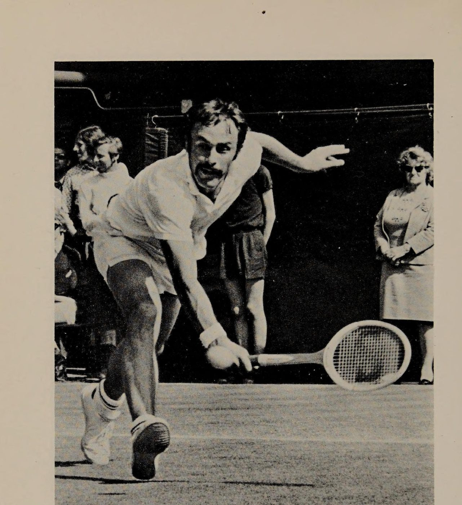
John Newcombe
Lời giới thiệu
Introduction
Của John Newcombe
Ngoài các tay vợt chuyên nghiệp và quốc tế, còn có hàng ngàn tay vợt ở trình độ nâng cao. Nếu bạn chơi quần vợt đều đặn — thi đấu hay không — thì bạn là một trong số họ. Quần vợt không phải là kế sinh nhai của bạn, nên bạn chơi vào thứ bảy và chủ nhật. Đúng vào những ngày đó, Paul Metzler chơi quần vợt của mình: liên câu lạc bộ, liên quận, liên tiểu bang, thậm chí liên quân chủng cho Lực lượng Không quân Hoàng gia Úc, đấu với đủ loại đối thủ và trong đủ điều kiện khác nhau. Cuốn sách của anh ấy chứa đựng vô số kinh nghiệm, và ngay chương đầu tiên nó đã chạm đúng vào điểm yếu của nhiều người chơi. Người xưa có câu: “Tính khí làm thua nhiều trận hơn tất cả những cú đánh từng giúp ta thắng.” Tác giả đã xua tan bóng ma của tính khí theo cách hữu ích nhất mà tôi từng biết. Thậm chí anh ấy còn khiến bạn thấy chán ngán nó. Quần vợt đang bùng nổ ở Hoa Kỳ. Sắp tới sẽ có nhiều giải đấu hơn và nhiều tay vợt thi đấu chính thức hơn. “Quần vợt nâng cao” là cuốn sách dành cho họ, và cả cho những người chơi không thi đấu muốn tiến bộ. Tôi nghĩ tác giả là một nhà viết về quần vợt độc nhất; anh ấy có con mắt tinh như chim ưng, và mọi chỉ dẫn của anh ấy đều được trình bày rất đỗi giản dị. Anh ấy khiến bạn thực sự quan tâm đến từng cú đánh của mình và đến hiểu biết của bản thân về môn quần vợt. Dù sao, đó cũng đúng là điều bạn muốn ở một cuốn sách. Anh ấy biết bạn muốn thắng, dù có thi đấu hay không, nên anh ấy giữ nguyên một chủ đề chiến thắng — nhưng bạn sẽ mù quáng nếu không nhận ra rằng, giữa những dòng chữ, bạn cũng đang nhận được một bài học về tinh thần thể thao trong thi đấu. Đó là một phần của môn quần vợt, cũng như tính hài hước là một phần của cuộc sống. “Quần vợt nâng cao” có thể nâng bạn lên mười lăm điểm mỗi ván. Đôi khi bạn sẽ tìm thấy chìa khóa trong những lời khuyên về cú đánh; hoặc nó nằm ở “lỗi lặp lại”, hoặc ở đâu đó khác, nhưng nhìn chung tôi cho rằng nó nằm ở sự tự tin mà bạn có được khi nắm được toàn bộ tình huống. Tôi ước gì mình có cuốn sách này khi còn đang vật lộn để vươn lên đỉnh cao. Giờ đây tôi vẫn áp dụng nhiều điều trong nó.
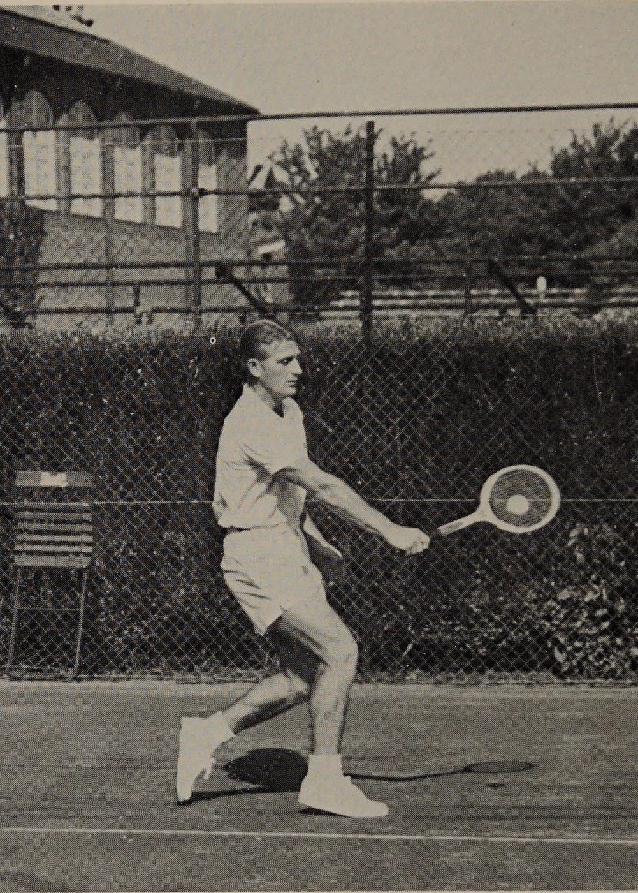
Lew Hoad thực hiện cú trái tay qua chân trước. (Xem văn bản, trang 115-117)
Tính khí
Temperament
Tính khí nóng nảy, dưới hình thức này hay hình thức khác trong số nhiều hình thức làm mất tinh thần của nó, gần như chắc chắn đã cản trở môn quần vợt của bạn trong quá khứ. Có thể nó đã làm hỏng cơ hội thắng nhiều trận của bạn; có lẽ nó thậm chí còn cản trở niềm đam mê chơi quần vợt cạnh tranh trong tương lai của bạn, đặc biệt là ở nội dung đánh đơn. Phần lớn điều này là không cần thiết. Bạn không nên gánh nặng với những lo lắng trong tương lai. Đúng, bạn không thể kỳ vọng mình sẽ hoàn toàn thoát khỏi tính khí thất thường chỉ sau một đêm, nhưng bạn có thể giảm tác động của nó xuống mức tối thiểu—đến mức tối thiểu có thể kiểm soát được khi nó trở thành một phần của môn quần vợt thay vì một thứ có khả năng làm gián đoạn lối chơi của bạn vào những dịp quan trọng hoặc ở những giai đoạn quan trọng của trận đấu. Tính khí hiếm khi được thảo luận trong sách vở và khi nó xuất hiện trong cuộc trò chuyện, nhiều sai lầm được chấp nhận là cơ bản. Chúng ta hãy xem xét kỹ tính khí và thực sự phân tích nó thành từng mảnh. Về cơ bản, tính khí phù hợp phụ thuộc vào sự tự tin trong các cú đánh của bạn. Nó không phải là di truyền. Không ai sinh ra đã có tính khí tốt hay xấu. Nó không phải là vật chất. Không bác sĩ nào có thể kiểm tra thần kinh của tất cả các vận động viên quần vợt và chọn ra những người có tính khí tốt và xấu.
Những cú đánh vững vàng tạo nên tính khí tốt
Khán giả theo dõi một tay ba tuyệt vời nhận hết quả bóng này đến quả bóng khác để chơi trở lại, thậm chí có thể với những cú đánh được thực hiện khá vụng về, và tôn trọng khí chất chiến đấu của anh ta một cách chính đáng. Nhưng khi họ lẩm bẩm một cách đầy ngưỡng mộ “Tôi cho là bẩm sinh đã có nó rồi,” thì họ đang nói về sự mê tín. Những nhận xét tương tự cũng được đưa ra đối với người chơi một cú đánh rưỡi (chỉ giới hạn ở cú giao bóng thuận tay và giao bóng thứ hai). Loại tay vợt này sẵn sàng chạy hàng dặm trong các pha giao bóng (anh ta phải chạy quanh trái tay gần như không tồn tại của mình), và anh ta không bao giờ giao bóng hai lỗi ở những điểm quan trọng (không có gì ngạc nhiên, sau khi luyện tập với cú giao bóng thứ hai đó). Vì vậy, anh ấy có xu hướng được cho là có tính khí phù hợp “sinh ra”. Những kiểu người chơi này không được sinh ra với tính khí quyết đoán trong trận đấu - họ đã phát triển chúng. Hơn nữa, tính khí của họ phát triển theo cách đáng ngưỡng mộ bởi vì bất cứ động tác nào họ thực hiện, dù vụng về hay hạn chế, đều rất đúng đắn. Nếu một người chơi có thể dựa vào các cú đánh của mình và mong đợi chúng sẽ ra sân mỗi khi anh ta đánh chúng, anh ta sẽ phát triển được tính khí thi đấu tốt.
Những cú đánh không lành mạnh là nguyên nhân dẫn đến tính khí thi đấu kém. Bây giờ, hãy xem xét những tay vợt có tính khí thi đấu kém. Có một người chơi rụt rè xử lý mọi việc trong nỗi đau đớn thận trọng, và càng đến gần cơn khủng hoảng thì anh ta càng trở nên rụt rè hơn. Hãy nhìn vào những cú đánh của người chơi như vậy. Luôn luôn chúng được làm kém đến mức nếu anh ta đánh bóng mạnh, nó có thể bay đi đâu đó. Anh ta phải đánh nhẹ nhàng và để bóng rơi vào sân thay vì nhắm vào. Các cú đánh của anh ta rất run và tính khí thi đấu của anh ta cũng vậy. Nhưng điều này không chứng tỏ rằng bản thân người đàn ông đó có điều gì đó không ổn. Một loại khác cùng quan điểm là tay vợt xuất sắc, thường thất thường và đôi khi chơi tệ. Sự linh hoạt của anh ấy mang lại cho anh ấy nhiều cú đánh khác nhau và hành động dễ dàng giúp anh ấy có được sức mạnh tối đa mà không cần nỗ lực nhiều. Phán quyết chung dành cho anh ấy là anh ấy có mọi cơ hội trong trận đấu vào ngày anh ấy là tay đánh bại thế giới - nhưng "'Chắc chắn anh ấy có vấn đề gì đó. Chắc là do tính khí của anh ấy. Tôi cho rằng bẩm sinh đã như vậy." Bỏ qua phần “sinh ra”’; chúng tôi đã đề cập đến nó rồi. Kiểu tay vợt này đáng được thông cảm hơn bất kỳ tay vợt nào khác, đặc biệt nếu anh ấy còn trẻ, bởi vì anh ấy là tay vợt bị hiểu lầm nhiều nhất. Đôi khi anh ta thậm chí còn bị gọi là kẻ bỏ cuộc trong khi trên thực tế, tính cách của anh ta có thể không có gì sai cả. Tôi tin rằng tính khí thất thường của anh ấy bắt nguồn từ những gì thực sự thất thường hơn là những nét vẽ xuất sắc. Nếu chúng ta phân tích trận đấu của một tay vợt như vậy, chúng ta thấy rằng không phải ở những cú vô lê ngắn hơn, sắc nét hơn và những cú vô-lê nửa đường mà anh ta thất thường mà chủ yếu là ở những cú giao bóng cũng như các cú công bóng thuận tay và trái tay. Ở đây anh ta thường mắc lỗi kỹ thuật (không phải tính khí nóng nảy) khi không để vợt thẳng hàng với bóng trong một khoảng cách đủ dài. Tuy nhiên, hãy lưu ý rằng đây là những cú đánh nền cơ bản lỗi thời, do đó củng cố ảo tưởng rằng chính người cơ bản mới là người có lỗi. Điều đáng tiếc là chính người đàn ông đó lại tin vào điều đó. Sự thật là cú đánh của anh ta về cơ bản là không lành mạnh, kết quả thi đấu thất thường và tính khí thi đấu không lành mạnh chắc chắn sẽ kéo theo. Ở giai đoạn này, bạn có thể đặt câu hỏi liệu tính khí có theo sau các nét vẽ hay không và nói rằng rất có thể nó sẽ diễn ra theo chiều ngược lại; nói cách khác, trừ khi người chơi có tính cách tốt ngay từ đầu, anh ta sẽ khó có thể phát triển các cú đánh âm thanh. Điều này sẽ đưa chúng ta trở lại nơi chúng ta bắt đầu và vẫn để lại cho bạn bất kỳ nghi ngờ nào mà bạn có thể có về tính khí trận đấu của chính mình. Nó không tệ đến mức đó. Tôi không nói rằng tôi có thể chứng minh mình đúng, cũng như không ai có thể chứng minh được con gà hay quả trứng có trước. Nhưng có bằng chứng chắc chắn ủng hộ quan điểm của tôi và tôi chắc chắn rằng nếu bạn lo lắng về tính khí của chính mình thì đó là quan điểm mà bạn thực sự muốn chia sẻ.
Những cú đánh ảnh hưởng đến tính khí
Đây là hai điểm từ bằng chứng đó. Đầu tiên, nếu bạn mạnh hơn ở một bên so với bên kia, thuận tay hay trái tay, hãy tự hỏi bản thân xem liệu khi áp lực tăng lên, tính khí của bạn có bị ảnh hưởng cho dù bóng đến từ phía nào hay không. Bạn có thể sẽ quyết định rằng thần kinh của bạn sẽ ổn định hơn khi ở bên mạnh mẽ hơn. Thứ hai, nếu bạn có được một số động tác đúng đắn hơn và một số công cụ hỗ trợ đáng tin cậy để giữ vững sự vững vàng trong các tình huống khó khăn khác nhau (mà tôi hy vọng sẽ giúp bạn sau này), thì bạn sẽ thấy rằng tính khí của mình sẽ được cải thiện. Bạn có thể làm điều gì đó tích cực về nó. Mặt khác, không bao giờ có thể gợi ý cho bất kỳ ai rằng trước tiên anh ta phải có được tính khí phù hợp; thay vì có thể làm điều gì đó tích cực, tất cả những gì anh có thể làm là cầu mong một điều kỳ diệu sẽ xảy ra. Như các nhà toán học thường diễn đạt, tính khí của trận đấu thay đổi tỷ lệ thuận với độ chính xác của nét vẽ. Nói cách khác, tính khí phù hợp phụ thuộc vào sự tự tin trong các cú đánh của bạn. Vì sự an tâm trong tương lai của chính bạn, tôi hy vọng bạn đồng ý với tôi. Quần vợt cạnh tranh trở nên dễ dàng hơn nhiều khi bạn làm như vậy.
Sự lo lắng
Sự lo lắng tồn tại; không ai có thể phủ nhận nó; đó là một thực tế của cuộc sống quần vợt. Chúng tôi sẽ xem nó ảnh hưởng đến ai, vị trí của nó trong mối liên hệ với phần còn lại của lối chơi của bạn và các phương pháp để cắt giảm nó. Sự lo lắng ảnh hưởng đến tất cả những người chơi muốn giành chiến thắng trong một trận đấu quan trọng và có khả năng sát nút. Nó ảnh hưởng đến những tay vợt trẻ, những tay vợt đang ở độ tuổi sung sức nhất trong sự nghiệp quần vợt và thậm chí cả những tay vợt lớn tuổi hơn, mặc dù chỉ đôi khi và ở mức độ thấp hơn. Nó ảnh hưởng đến các nhà vô địch, mặc dù những người chơi này tự tin trong hầu hết các cú đánh của họ và do đó nhìn chung có tính khí thi đấu tốt. Nó đặc biệt ảnh hưởng đến những người chơi biết họ có điểm yếu trong môn quần vợt. Đặc biệt nhất, nó ảnh hưởng đến những người chơi thiếu tự tin trong mỗi cú đánh, trừ khi họ đã chìm vào trạng thái tuyệt vọng, nơi mà mọi cảm xúc khác đều bị xóa nhòa một cách hiệu quả. Điểm sáng duy nhất là nó còn ảnh hưởng tới đối thủ của bạn. Một điều cần hoàn toàn chắc chắn là bạn không đơn độc. Nỗi sợ hãi rằng bạn là một người lo lắng và hèn nhát, một kẻ thua cuộc bẩm sinh trong môn quần vợt, có thể bị xóa bỏ ngay trong đầu bạn còn non nớt. Tôi biết đầu của bạn còn trẻ nếu bạn cảm thấy như vậy. Nó phải như vậy. Những người lớn tuổi biết rằng tất cả chúng ta thỉnh thoảng đều có xu hướng yếu đuối và “thắt thép” cho bản thân, đôi khi đến mức được trang trí trong thời chiến. Nhìn chung, chúng tôi hài lòng với cách đó. Nếu đôi khi chúng ta phải gồng mình để chơi một trận quần vợt thì đó không phải là ngày tận thế. Trò chơi này rất đáng giá và chúng tôi vẫn có thể tận hưởng việc chơi nó và quay lại để chơi thêm vào tuần tới. Đối với tất cả các tay vợt—trẻ, cao tuổi và lớn tuổi—kinh nghiệm cho thấy (mặc dù một lần nữa không ai có thể khẳng định là biết) rằng sự lo lắng trong quần vợt có ảnh hưởng lớn nhất đến những người không chắc chắn về cú đánh của mình, chứ không phải đối với những người vì lý do này hay lý do khác có thể được cho là có thần kinh kém hơn bất kỳ ai khác. Sự lo lắng có vai trò của nó trong các trận đấu quần vợt, nhưng nó không phải là toàn bộ trận đấu. Việc tưởng tượng rằng bạn sẽ thua bất kỳ trận đấu nào trong tương lai chỉ vì nó là một sự cường điệu quá mức. Đừng đánh giá quá cao nó. Bạn có muốn chơi với một người mà bạn biết mình có thể đánh bại và không lo lắng hơn một người mà bạn biết là một người chơi lo lắng nhưng rõ ràng là người giỏi hơn bạn không? Một điều nữa về sự lo lắng là nó chỉ cần mang tính tạm thời. Nếu ở bất kỳ giai đoạn nào của trận đấu, bạn đột nhiên có cảm giác an toàn hoặc chắc chắn trong các cú đánh của mình, sự lo lắng sẽ biến mất. Điểm này có thể xảy ra trong quá trình khởi động. Hãy ý thức rằng có một điểm như vậy đang chờ đợi bạn. Hãy tìm nó. Và khi nó đến, hãy bám lấy nó. Những gì đã nói cho đến nay về sự lo lắng có thể là đủ đối với một số người. Những người khác, chắc chắn rằng đó là những trường hợp thực sự tồi tệ, có thể coi đó chỉ là khúc dạo đầu và đang chờ tôi đưa ra một số phương pháp cụ thể để cắt giảm nó. Tôi sẽ cố gắng thực hiện.
Đi nhẹ
Luôn “‘du lịch nhẹ nhàng.'”' Đừng bao giờ khoe khoang rằng bạn có thể đánh bại người này bất cứ lúc nào, rằng bạn có cơ hội không ai sánh kịp để chiến thắng một giải đấu như vậy trước khi bạn chơi vòng đầu tiên hoặc rằng bạn luôn có thể dựa vào một cú đánh nhất định. Tránh khoe khoang và do đó làm giảm bớt căng thẳng trong việc làm cho lời khoe khoang của bạn trở nên tốt hơn; khiêm tốn là chính sách dễ dàng nhất.
Chơi từng trận đấu khi nó diễn ra mà không biến cơ hội thành một điều gì đó quá lớn đối với bạn hoặc đối với bất kỳ người đàn ông bình thường nào khác. Đừng quá lo lắng trước trận đấu đầu tiên rằng nếu thua ngay vòng đầu tiên sẽ là điều đáng hổ thẹn. Trong trận chung kết, đừng nghĩ đến thực tế rằng nếu bạn thắng, bạn sẽ là người giữ danh hiệu, hoặc sẽ giành chiến thắng trong sự kiện ba lần liên tiếp, hoặc bất cứ điều gì khác có thể xảy ra. Nếu những suy nghĩ như vậy chiếm ưu thế trong tâm trí bạn trong một trận đấu, tất cả những gì bạn mong muốn là một kết thúc thắng lợi và bạn sẽ khó có thể đánh bóng chuẩn xác trong suốt trận đấu. Tránh tập trung vào điểm yếu của bạn. Bạn có khả năng cân bằng điểm mạnh để cân bằng mọi thứ, vì vậy hãy suy nghĩ nhiều hơn về chúng. Và không chỉ trong nét vẽ của bạn. Ví dụ, nếu bạn có phản xạ nhanh tự nhiên, tốt hơn là bạn nên nghĩ mình nhanh nhẹn như một con mèo hơn là lo lắng như một con mèo con. Hãy nhớ rằng khi cái ly vơi một nửa thì nó cũng đầy một nửa—luôn luôn như vậy. Và trong bất kỳ môn quần vợt nào mà sự tự tin là một tài sản, sự lạc quan là một thái độ thực tế hơn để áp dụng hơn là bi quan. Ánh sáng du lịch. Tôi đoán rằng Harry Hopman nổi tiếng luôn đảm bảo rằng các tay vợt của ông ấy luôn làm điều đó càng nhiều càng tốt. Và đây có thể là một trong những bí quyết thành công của anh ấy.
Thái độ người chơi thường chọn
Một số người theo triết lý công khai thừa nhận với bản thân rằng họ đang lo lắng và sau đó quyết tâm vượt qua nó. Đây là một thách thức, đó là điều họ thích. Họ trở nên hứng thú với thử thách, và càng hứng thú thì càng có ít chỗ cho sự lo lắng thực sự. Những người khác sử dụng khả năng tự chủ mạnh mẽ. Họ từ chối thừa nhận sự lo lắng ngay cả với chính mình và duy trì vẻ ngoài bình tĩnh hàng ngày. Một số giữ bộ mặt poker. Một số trở nên lầm lì và dữ tợn, một số thậm chí còn hung hãn. Dù họ lựa chọn hay ép buộc mình vào thái độ nào thì họ cũng sẽ ít có chỗ cho sự lo lắng hơn. Bạn có thể thích áp dụng thái độ được diễn đạt tốt nhất như: ‘Tôi vẫn ở đây—anh ta vẫn chưa đánh tôi.” Điều này ít nhất cũng bảo vệ bạn khỏi một đêm thao thức và số phận bị đánh đập trước khi bạn bắt đầu. Bạn có thể quyết định rằng bạn sẽ dồn ép đối thủ ngay từ đầu, để anh ta sẽ là người mắc khá nhiều lỗi ngay từ đầu trận đấu. Phải thừa nhận rằng đây là chiến thuật của sân đấu và tôi đề cập đến nó chỉ như một ví dụ về việc tập trung vào điều gì đó mang tính xây dựng cho trận đấu thay vì chờ đợi, làm tăng thêm sự lo lắng của bạn. Việc vượt qua sự lo lắng phải được kết hợp với một điều gì đó - bất cứ điều gì, miễn là chúng ta không đắm mình trong đó. Tôi từng biết một người theo chủ nghĩa cá nhân mâu thuẫn, tính tình bất cẩn và ngang ngược, là một tay chơi trận đấu mạnh mẽ và hiệu quả. Anh ấy nói với tôi rằng các trận đấu khiến anh ấy kinh hãi đến mức khi bắt đầu một trận đấu, anh ấy luôn giả vờ với bản thân rằng trận đấu đã diễn ra và rằng anh ấy đã bị đánh bại - rằng anh ấy chỉ chơi một hai ván đấu để xem liệu anh ấy có thể giúp người kia chơi tốt hơn không. Điều này đã từng xảy ra từ lâu và anh đã áp dụng nó như một hệ thống kể từ đó. Anh ấy thừa nhận rằng hệ thống của anh ấy là một thứ vô nghĩa theo chủ nghĩa chiến bại và hoàn toàn không có gì để khuyến khích nó ngoại trừ, như anh ấy rất khiêm tốn nói thêm, rằng nó luôn giúp anh ấy tận hưởng các trận đấu của mình và đảm bảo rằng anh ấy đã chơi với phong độ cao nhất. Một số người trong chúng ta có lương tâm và chính trực hơn những người khác có thể nghĩ rằng người đàn ông này quá lảng tránh để được ngưỡng mộ hoặc đi theo. Có lẽ vậy, nhưng ít nhất anh ấy vẫn tiếp tục chơi quần vợt mang tính cạnh tranh, điều này còn tốt hơn rất nhiều so với việc từ bỏ nó và chuyển sang chơi gôn—vào một chiều Chủ nhật, hoàn toàn một mình, và thậm chí không tính số cú đánh. Có lương tâm là một điều tốt, nhưng đừng lúc nào cũng quá khắt khe với bản thân.
Loại bỏ những điểm thắt nút
Một phương pháp khác để giảm bớt lo lắng tương tự như câu châm ngôn cũ là "'quan tâm đến đồng xu và để đồng bảng tự chăm sóc.'Áp dụng cho một trận đấu quần vợt, điều đó có nghĩa là bạn cố gắng giành được mọi điểm và để trọng tài quyết định ai thắng những thứ phụ như game, ván đấu và trận đấu. Đó là hệ thống được phác thảo và tôi nghĩ rằng nó đáng để mở rộng ở một số chi tiết. Từ chối xem xét ngay cả khi bắt đầu trận đấu của bạn, chứ đừng nói đến kết quả cuối cùng. Cho đến nay vì bạn lo ngại rằng lần thi đấu tiếp theo bạn sẽ phải tập luyện khởi động trước trận đấu, và ở đó bạn sẽ thấy các cú đánh của mình như thế nào và có lẽ liệu bạn có thể bắt đầu vượt lên dẫn đầu hay không. Mọi suy nghĩ có chủ ý đều dừng lại ở đó và bạn chỉ quan tâm đến việc khởi động này. Đừng lãng phí buổi khởi động. Hãy đảm bảo rằng bạn có ít nhất bằng đối thủ số lần tập giao bóng hoặc tập các cú đánh trên đầu, và cố gắng thắng mọi loạt bóng bạn có thể, nhưng đừng làm điều đó quá lộ liễu. Bạn khó lòng luyện được độ chính xác của mình nếu liên tục nhắm vào đường biên và đưa bóng ra ngoài tầm với của đối thủ, nhưng bạn có thể thực hiện điều này rất thỏa đáng bằng cách trả từng quả bóng trở lại chính xác theo đường bay của nó về phía bạn. Cũng như các vận động viên cricket luôn áp dụng nguyên tắc này khi mới vào sân đối đầu với những quả bóng nhanh, tôi đã biết nhiều người chơi đã áp dụng chính sách này từ lúc khởi động cho đến vài trận đầu tiên để có được cảm giác kiểm soát tốt và tránh tặng đối thủ những món quà sinh nhật đầu trận đấu giữa các đường xe điện. Khi trận đấu bắt đầu, hãy tiếp tục từ điểm bạn đã dừng lại ở phần khởi động và cố gắng giành mọi điểm ngay từ điểm đầu tiên, vì không bao giờ là quá sớm để bắt đầu chiến thắng. Nhưng đừng lo lắng về những gì bạn bị mất; sự tập trung của bạn chỉ dành riêng cho việc tiếp theo, việc mà bạn đang tham gia, việc duy nhất bạn có thể giành được ở hiện tại chứ không phải ở đâu đó trong tương lai. Trong một trận đấu chặt chẽ hoặc về đích gần, hãy hạn chế sự tập trung của bạn hơn nữa—vào từng cú đánh ở mỗi điểm. Tất nhiên, những gì bạn đang làm bằng phương pháp này sẽ làm giảm bớt sự lo lắng của bạn. Điểm game, ván đấu hay trận đấu không khác gì một điểm khác. Bạn có thể phản đối rằng điều này sẽ khiến bạn hơi lo lắng ở mọi điểm, nhưng điều đó sẽ không xảy ra trừ khi bạn thực sự lúc nào cũng chơi rất tệ; và ít nhất nó sẽ giúp bạn tránh khỏi những sai sót đột ngột ở những giai đoạn quan trọng. Một lần nữa, nếu trận đấu bị gián đoạn hoặc bị hoãn lại ở một thời điểm quan trọng, thì đối thủ và những người ủng hộ anh ta sẽ phải lo lắng về kết quả của trận đấu, trong khi trong đầu bạn chỉ có một điểm duy nhất - điểm tiếp theo. Tuy nhiên, khái niệm này không phải là sở thích của tất cả mọi người. Một số người chơi thích thư giãn và tập trung vào sự tự do và thả lỏng khi khởi động. Trong trận đấu, họ thích chạy khi họ cảm thấy thích thú nhất, thay vì chú ý đến mọi điểm. Vì vậy, hãy phù hợp với chính mình— quần vợt là đất nước tự do. Sẽ là một điều tốt nếu bạn loại bỏ sự lo lắng, một bà già đen đủi nếu từng có, ra khỏi ngăn tủ chưa được khám phá trong tâm trí chúng ta và nhìn kỹ vào nó. Nhưng bây giờ chúng ta đã làm được điều đó, tôi hy vọng toàn bộ công việc này sẽ khiến bạn chán nản hơn và bạn nên tập trung vào các cú đánh của mình hơn và mong đợi mỗi trận đấu như một cơ hội chào đón để chơi chúng. Khi tất cả đã được nói và làm xong, đó thực sự là thông điệp của tôi. Sự tự ý thức làm hỏng sự tập trung của bạn. Không có người chơi nào có thể mua được. Nếu bạn đủ may mắn để không có bản chất tự ti, bạn có thể loại nó ra khỏi quần vợt của mình. Nếu bạn có bản chất tự ti, hãy đối mặt với nó và làm điều gì đó tích cực về nó. Khi đến giờ thi đấu và bạn sẽ tiếp tục, hãy bước đi chắc chắn và bám chặt vào mặt sân. Đây là một tuyên bố tích cực về lời khuyên tiêu cực đừng vấp ngã một cách ngượng ngùng, cảm thấy hơi nặng nề. Nếu trời lạnh, hãy thổi vào tay cho ấm và đủ dẻo để bạn có cảm giác bình thường trên cán vợt. Lấy bóng, cảm nhận lực nén của chúng và nảy chúng trên bề mặt sân để biết điều gì sẽ xảy ra. Điều này đang làm điều gì đó hữu ích và tốt hơn là bạn nên nghĩ rằng sự hiện diện của khán giả (hoặc ai đó đặc biệt trong số họ) đang khiến bạn khó chịu hoặc ước rằng không có ai ở đó để nhìn thấy bạn. Bây giờ hãy để tôi nhắc lại một số lời khuyên về sự lo lắng.
Bỏ qua những lỗi đã xảy ra, đặc biệt là lỗi ở điểm cuối cùng. Hãy loại bỏ những suy nghĩ về những lỗi lầm trong tương lai và việc chúng có thể khiến bạn trông ngu ngốc đến mức nào. Thay vào đó (tích cực một lần nữa) tập trung hoàn toàn vào điểm sẽ chơi. Sự tập trung vào công việc đang làm này ngược lại với việc trở nên tự ti vào thời điểm bạn nhận thấy một số bạn bè hoặc người thân của mình đến xem sau khi trận đấu bắt đầu, đặc biệt là ở giai đoạn quan trọng của trận đấu. Bất cứ khi nào tự ý thức xâm nhập, hãy nhận biết nó và ngay lập tức thay thế sự tập trung. Hãy quyết định xem thiết bị nào phù hợp với bạn nhất và kiên quyết làm theo nó.
Đối phó với căng thẳng và chủ quan
Không ai thích cảm giác căng thẳng. Cảm giác ấy thật khó chịu: nó làm bạn cứng đờ và lấy đi sức mạnh. Nó thường khiến bạn chơi một cách ngập ngừng. Ưu điểm duy nhất tôi có thể chấp nhận ở nó là nó làm giảm bớt sự tập trung của bạn. Tất cả chúng ta đều thích cảm giác nhẹ nhàng hơn, nhưng cảm giác nhẹ nhàng, dù dễ chịu, lại chứa đầy cạm bẫy. Kéo dài chỉ hơi quá một chút thôi, nó có thể làm bạn thua cả trận, hoặc nó có thể khiến bạn hoảng sợ đến mức thái độ của bạn tự đảo ngược thành một cơn căng thẳng dữ dội. Dù theo cách nào, bạn cũng đánh mất những cú đánh tự tin mà bạn có trước đó. Bạn sẽ tự nhận ra khi nào mình đang để các cú đánh trở nên qua loa. Tuy nhiên, còn một dạng qua loa khác có thể lẻn vào lối chơi của bạn mà bạn không hề hay biết. Đó là sự qua loa ở điểm tiếp theo, khi bạn đã dẫn trước một điểm. Chuyện này xảy ra nhiều hơn bạn nghĩ, đỉnh điểm tuyệt đối của nó là ở các trận đôi nam thi đấu giao lưu khi bên giao bóng đang chiếm lợi thế, nơi mà việc bên giao bóng thử những cú đánh mạo hiểm nhất là chuyện bình thường. Điều này cũng chẳng có gì hại, trừ khi nó trở thành thói quen và bị đem theo vào các trận đấu. Sự tập trung thoải mái là con đường lý tưởng nằm giữa căng thẳng và qua loa. Hãy thử mô tả chính xác nó nghĩa là gì. Hãy tưởng tượng buổi tập tối thứ Năm của bạn cho trận đấu vào thứ Bảy. Bạn có một mặt sân tốt, bóng tốt, một đối thủ ở trình độ ngang bạn, và chỉ có thời gian đủ để chơi một hai ván đấu. Bạn cố gắng chơi thật tốt, đánh bóng thật tự do và không hề sơ suất — nói tóm lại, đúng như bạn sẽ chơi trong một trận đấu, nhưng không có sự căng thẳng đi kèm. Trong hoàn cảnh ấy, bạn sẽ có thể chơi đúng phong độ cao nhất. Trạng thái ấy chính là sự tập trung thoải mái. Tôi hoài nghi liệu bạn có bao giờ đạt được trọn vẹn sự tập trung thoải mái trong một trận đấu cân bằng và quan trọng với bạn hay không, nhưng nó rất đáng để phấn đấu. Hãy phấn đấu nhiều hơn trong luyện tập, để bạn có nhiều cơ hội tiếp cận nó hơn trong mọi loại trận đấu.
Cáu giận
Tính khí không phải là thuộc tính giúp chiến thắng trận đấu. Hãy vượt qua nó nếu không bạn sẽ mang theo căn bệnh ung thư bên mình suốt những ngày chơi tennis. Bạn có thể cho rằng bản chất mình là người nóng nảy và thực sự không thể đổ lỗi cho hành động của mình. Nếu vậy thì đã đến lúc bạn phải giải quyết mọi việc một cách thẳng thắn. Mọi người đều có tính khí nóng nảy, ngay cả những người có vẻ ngoài điềm tĩnh nhất. Cái gọi là nóng nảy về bản chất không hơn gì một tính khí nóng nảy không kiểm soát được, và trong quần vợt, đây không phải là một tài sản. Những người để cơn nóng nảy nổi loạn chưa bao giờ thực sự được dạy để kiểm soát họ (khác với việc được bảo - đôi khi cho đến khi những người lớn tuổi mất tập trung của họ xanh mặt). Nếu điều này áp dụng cho bạn, hãy học cách tự kiểm soát nó. Tính khí không phải là thứ duy nhất bạn có. Bạn cũng có một số tính cách. Vì vậy, hãy sử dụng nó. Những người mất bình tĩnh trên sân tennis thường tìm cách biện minh cho mình bằng nhiều cách. Họ giải thích rằng họ chỉ điên cuồng với chính mình và không có ý xúc phạm đến bất kỳ ai khác. Họ thường nói rằng họ khó có thể chơi nếu thỉnh thoảng họ không xả hơi. Một số người nói thêm rằng họ không thể có tâm trạng chiến thắng nếu lúc nào cũng phải mỉm cười vui vẻ. Việc thể hiện tính nóng nảy sẽ gây xúc phạm cho người khác. Khán giả đến xem tennis chứ không phải để giận dữ. Nếu bạn thể hiện một màn trình diễn thực sự tồi tệ, đối thủ của bạn có thể sẽ không muốn ở cùng sân với bạn. Tính khí không bao giờ đẹp. Nếu bạn chuyên về một loại tính cách nóng nảy xen lẫn cứng rắn, bạn có thể thành công trong việc đe dọa đối thủ và khiến anh ta dễ bị đánh bại hơn — nhưng chỉ khi anh ta còn rất trẻ và thiếu kinh nghiệm. Suy cho cùng, quần vợt được chơi với một quả bóng mềm và không ai bị thương, vậy ai mà sợ hãi? Nó có thể có tác dụng ngược lại với đối thủ của bạn. Anh ấy có thể cảm thấy bạn sẽ không bao giờ hành động như vậy khi luyện tập, dù nghiêm túc đến đâu. Anh ấy có thể khiến bạn lo lắng. Bạn không cần phải mỉm cười lịch sự ở mọi nơi và bạn cũng không nên cố gắng làm vậy. Nó có thể khiến bạn cảm thấy mình như một kẻ ngốc và thậm chí có thể trông giống như một kẻ ngốc, và nó có xu hướng khiến lối chơi của bạn trở nên rụt rè và sự tập trung của bạn trở nên cẩu thả. Nếu bạn là kiểu người thích chơi một lối chơi chặt chẽ, ít nói khi thực sự muốn giành chiến thắng thì bằng mọi cách hãy làm như vậy. Nó không bao giờ trả tiền cho bất cứ ai, nghiêm túc hay vui vẻ, để khuyến khích đối thủ của mình.
Đừng để lộ bài
Đừng bao giờ đối xử bất công với đối thủ của bạn theo bất kỳ cách nào—ngoài vấn đề đạo đức liên quan, bạn sẽ thấy một số lý do chính đáng tại sao không ở chương sau—nhưng bạn không có nghĩa vụ phải làm bất cứ điều gì có thể khuyến khích anh ta dù là nhỏ nhất. Ví dụ, đừng nói với anh ấy, khi hai người đổi đầu sân, rằng anh ấy đang chơi tốt. Cho đến lúc đó anh ấy có thể đã cảm thấy không tự tin về điều gì đó quan trọng như cú giao bóng thứ hai của mình. Hãy ghi nhận thay vì khen ngợi hết lời nếu anh ấy chơi một cú đánh đặc biệt tốt. Đừng bao giờ để anh ấy biết rằng anh ấy khiến bạn lo lắng về việc cuối cùng sẽ thua cuộc. Nếu điều này áp dụng cho những người chơi bình thường, thì nó còn đúng gấp đôi đối với những người nóng tính, những người thể hiện quá rõ ràng. Lấy ví dụ về tình huống bạn đang chơi với một đối thủ tham gia sự kiện chỉ để lấy kinh nghiệm và không mong muốn đánh bại bạn. Giả sử bạn chơi không tốt lắm và anh ấy cố gắng cùng bạn chơi được khoảng ba ván. Hãy kiên trì với nó và bạn sẽ thường thấy mình có bộ đó, bởi vì, không thực sự nghĩ rằng anh ta có thể thắng, anh ta để cho bạn có một hoặc hai điểm mà hầu như không có gì, điều này dường như chỉ tạo ra sự khác biệt vừa đủ. Ngược lại, hãy tưởng tượng tình huống nếu ở điểm thứ ba, bạn bỏ lỡ một điểm và xõa tóc với thái độ nóng nảy chỉ có thể xuất phát từ việc bạn rất cần điểm đó. Bạn khiến đối thủ giật mình khi nhận ra rằng anh ta thực sự có cơ hội chiến thắng trong set này, và ngay lập tức bạn đang đóng vai một người đàn ông khác. Bạn cũng có thể tặng anh ấy một ly sâm banh. Khi chơi bài poker và mua một lá bài, bạn có để kết quả hiển thị không?
Xả hơi
Có lẽ phương án cuối cùng là bạn chọn quay lại hành động của một vài nhà vô địch. Bạn đã thấy một số người trong số họ biểu diễn; bạn thậm chí đã từng chứng kiến những vận động viên chuyên nghiệp giỏi nhất xả hơi và đánh bóng qua khán đài. Đã có một thời kỳ "biểu diễn" rất thịnh hành, nhưng ngoại trừ thời điểm đó, phần lớn các ngôi sao không biểu diễn. Những ngôi sao lớn tuổi rất hiếm khi biểu diễn, không phải vì họ lớn tuổi hơn mà vì họ nhận ra rằng điều đó làm mất đi sự tập trung của họ. Lần tới, một nhà vô địch chuyên nghiệp xả hơi, hãy nhìn kỹ hơn. Rất có thể, một cú đánh đẹp mắt bay thẳng qua khán đài Kooyong và hạ cánh ở Gardiner's Creek hoặc một nơi nào đó sẽ được thực hiện sau khi mọi người đã vào đúng tâm trạng mong đợi, và nó sẽ như vậy có thể được thực hiện vào cuối trận đấu và ngay trước khi trọng tài gọi bóng mới. Phản ứng tự phát từ đám đông là tiếng reo hò và tiếng cười. Những sự cố của vận động viên chuyên nghiệp không bao giờ để lại ấn tượng xấu trong miệng. Khi một vận động viên chuyên nghiệp xả hơi thì đó là hơi nước được kiểm soát khá tốt. Bạn vẫn chưa hài lòng? Bạn vẫn muốn có thể xả hơi một cách cẩn thận? Đây có thể là môn quần vợt khiến bạn khó chịu và thực sự khiến bạn căng thẳng. Cải thiện các cú đánh của bạn để bạn có thể chơi nhanh hơn rất nhiều với sự tự tin tương tự. Sau đó, nếu bạn bỏ lỡ một cú lốp bóng khó chịu, bạn có thể tấn công vào đợt đánh tiếp theo và có thể khiến Đối thủ của bạn thiết lập một cú lốp bóng yếu để bạn có thể lao vào và bật qua hàng rào phía sau. Tôi hoàn toàn ủng hộ những điều như thế. Và bây giờ tôi đã có đủ nó. Nếu bạn vẫn muốn trở thành chương trình Wild West dành cho một người, hãy tiếp tục. Cuốn sách này đang cố gắng phục vụ cho tất cả các loại người, vì vậy tôi đã đưa trường hợp của bạn vào và hy vọng bạn cảm thấy nó đã được xem xét một cách công bằng. Tôi chưa bao giờ gợi ý rằng bạn nên cư xử như Lãnh chúa Fauntleroy bé nhỏ. Tôi thừa nhận rằng bản năng sát thủ có thể là một lợi thế để giành chiến thắng. Nhưng trong khi bạn làm việc đó, bạn cũng có thể đạt được hiệu quả. Hãy là một kẻ giết người lạnh lùng.
Điều này hẳn là đủ để phân biệt tính khí của hầu hết mọi người. Từ những mảnh ghép nói dối, tôi nghĩ chúng ta có thể tập hợp được bức tranh sau: ¢ Tất cả các khía cạnh tính khí ảnh hưởng xấu đến lối chơi của bạn đều có thể bị giảm bớt tác dụng của chúng. * Thông thường, việc tuân theo một thái độ tiêu cực như tự nhủ rằng bạn sẽ không căng thẳng là điều vô ích. Bạn nên thay thế bằng một số mục tiêu tích cực như sự tập trung thoải mái, hoặc bất cứ điều gì khác do chính bạn phát minh ra. ¢ Điều tích cực nhất mà bạn có thể làm để đạt được tính khí lành mạnh hơn là phát triển các cú đánh lành mạnh hơn, bất kể cấp độ hay tiêu chuẩn chơi của bạn như thế nào. Câu trả lời hoàn chỉnh như tôi thấy - và với một vấn đề mơ hồ như tính khí, nó không bao giờ có thể hơn một Ý kiến cá nhân - làm cho các nét vẽ của bạn trở nên hợp lý và sau đó thêm hai điều: hiểu biết rõ ràng về chính xác những gì bạn đang cố gắng làm và hoàn toàn tập trung thực hiện nó. Cuốn sách bây giờ phát triển theo hướng này.
Quan sát và kiểm soát bóng
Watching and controlling the ball
Nếu các cú đánh hiệu quả là nền tảng của toàn bộ trận đấu, thì việc kiểm tra cơ sở của các cú đánh là phù hợp. Các huấn luyện viên và nhà vô địch đều nhất trí rằng điều đầu tiên mà người mới bắt đầu phải nắm vững và điểm quan trọng nhất mà nhà vô địch cần quan sát là: Quan sát bóng. Những người chơi lớn tuổi hơn, cha mẹ, anh trai, mọi người xung quanh bạn—tất cả đều thể hiện nguyên tắc cơ bản này theo những cách khác nhau. Một cựu vô địch Wimbledon nói: “Khi chuẩn bị cho một giải đấu lớn, tôi dành toàn bộ buổi tập đầu tiên để tập trung theo dõi quả bóng.” Một huấn luyện viên buồn bã nói: “Điều đầu tiên học được, điều đầu tiên đã quên.” Điều này dẫn thẳng đến điểm đầu tiên tôi muốn thực hiện. Trong khi mọi thứ khác trong quần vợt nên được học và thực hiện theo bản năng khi cần thiết (vì quá nhiều suy nghĩ và một quả bóng chuyển động nhanh không thể kết hợp tốt với nhau), tôi nghĩ rằng chỉ xem bóng thôi là chưa đủ. Bạn phải quan sát nó và có ý thức về việc quan sát nó. Đây là một điều nghịch lý. Điều tự nhiên nhất mà bất cứ ai có thể làm trên sân tennis, ngoài việc thở, là nhìn vào quả bóng, nhưng việc quan sát nó đúng cách không phải là điều tự nhiên. Điều này đặc biệt áp dụng cho phía thuận tay, nơi mà đầu của bạn không quay tròn theo cơ thể và thả bóng qua bóng như khi thực hiện cú đánh trái tay. Khi bạn ý thức đang quan sát nó, quả bóng trông rõ ràng hơn; một số người chơi thậm chí còn đi xa hơn khi nói rằng nó trông to hơn. Tuy nhiên, ngoài điều này ra, còn có một lợi ích nữa cho việc quan sát quả bóng một cách có ý thức—tập trung vào công việc đang làm. Cách xem bóng bằng tinh thần là có ý thức.
Theo dõi cả quỹ bóng
Điểm thứ hai của tôi liên quan đến phương pháp vật lý để xem bóng. Không có gì bí ẩn về nó. Bạn phải xem nó toàn bộ. Giống như nhiều câu trả lời được đưa ra mà không có lý do đằng sau, điều này có thể sẽ ít có tác động. Đây là một minh họa cho những gì tôi muốn nói. Một huấn luyện viên nổi tiếng từng huấn luyện khoảng 20 học sinh ở White City, Sydney với một chiếc máy có khả năng đánh bóng ở nhiều tốc độ và góc độ khác nhau. Mỗi đàn em phải thực hiện một cú đánh trái tay, sau đó là một cú vô lê thuận tay, và tất cả đều thực hiện tốt quy trình này, ngoại trừ một thanh niên không may đang thực hiện những cú vô lê của mình vào lưới. Huấn luyện viên đã phải dừng mọi thứ để tập trung vào anh ấy. “Kết thúc đi,” anh nói. Chàng trai đánh trượt tâm vợt và bóng một lần nữa rơi vào lưới. “Xem bóng.” Kết quả tương tự. ““Hãy quan sát kỹ nhé. Hãy xem nó ngay trên dây.” Tắt mép trên của khung. "Bỏ vợt xuống. Bây giờ hãy bắt bóng lần này. Hãy xem nó đi thẳng vào ngón tay của bạn, vì Chúa!" Hai lần đánh bắt bị đánh rơi. Chàng trai bắt đầu run rẩy. Đột nhiên huấn luyện viên nhìn thấy điều gì đó không ổn. Cậu bé đang quan sát quả bóng với sự cứng nhắc của một con thỏ bị mê hoặc. Khi cố gắng quan sát kỹ, anh ta chắc hẳn đã tập trung vào khoảng sân cuối cùng, và có lẽ ở phần cuối cùng, anh ta đã quan sát đầu vợt hoặc tay của mình thay vì bóng. Một khi huấn luyện viên bắt anh ấy theo dõi quả bóng trong suốt chặng đường, những rắc rối của anh ấy đã kết thúc, chắc chắn là từ lúc đó đến nay.
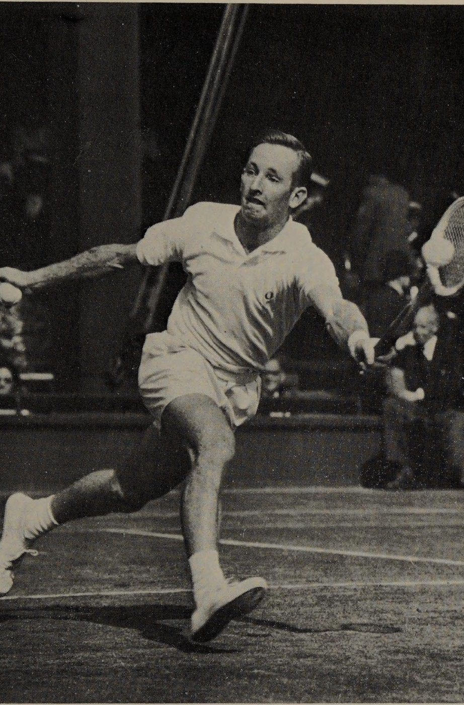
Mắt có xu hướng theo dõi bóng ít bám sát dây vợt hơn với những cú vô lê thuận tay. Tuy nhiên, ở đây Rod Laver đã đấm một quả. (Xem văn bản, trang 23)
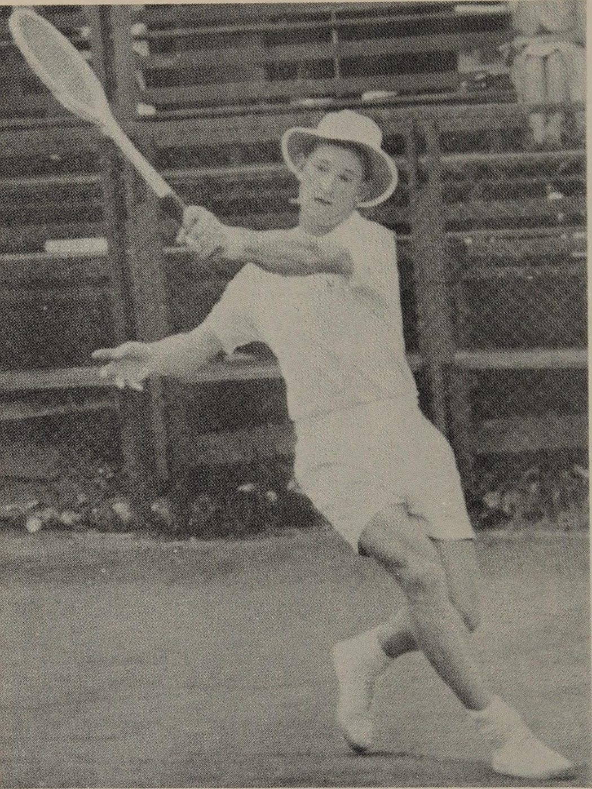
Rod Laver lái một quả bóng rộng mạnh xuống đường biên, đánh ra bên ngoài quả bóng để đưa nó trở lại bên trong đường biên. (Xem văn bản, trang 32)
Nhìn bóng suốt chặng đường dường như làm giảm tốc độ của nó. Nếu bạn dự đoán hướng của cú đánh, nếu bạn đến phía sau đường bay của quả bóng sớm và quan sát nó đến, thì mặc dù quả bóng đang di chuyển nhanh nhưng đôi khi bạn vẫn có ấn tượng rằng tầm nhìn tập trung của bạn gần như đã dừng nó ngay trước khi bạn đánh nó. Đó là lý do đằng sau khả năng nhìn rõ bóng của nhiều tay vợt dù anh ta/có thể cần đeo kính để đọc danh bạ điện thoại. Anh ấy không làm điều đó bằng trí nhớ như một số người tưởng tượng. Anh ấy biết cách làm điều đó.
Đôi mắt nhìn bóng tốt
Không quan tâm đến những người kỳ cựu, đây là ứng dụng chung: Nếu bạn có con mắt tinh tường để nhìn bóng thì điều này không thực sự đề cập đến thị lực của bạn mà là cách bạn sử dụng mắt. Khi mọi người nói rằng ai đó có con mắt bẩm sinh về bóng trong bất kỳ trận đấu nào mà anh ta tham gia, điều đó thực sự có nghĩa là người đó sử dụng đôi mắt của mình để đạt được lợi thế tốt nhất một cách tự nhiên. Tôi hy vọng chương này sẽ bổ sung thêm cho bạn số lượng tay vợt có “con mắt nhìn bóng tốt”. Tiếp theo, bạn phải có khả năng kiểm soát bóng. Nếu không có nó, bạn sẽ không bao giờ có thể xâu chuỗi đủ các cú đánh lại với nhau để có được bất kỳ mối quan tâm đáng giá nào về vị trí, chiến thuật hoặc hệ thống chơi. Ngay cả khả năng nhìn bóng rõ ràng đến mức bạn có thể dừng nó lại cũng chẳng có ích gì nếu bạn không thể đánh nó một cách kiểm soát. Nếu bạn chưa có quyền kiểm soát bóng thì bạn phải có được nó, và tôi cũng có thể nói ở đây và bây giờ rằng bạn có thể. Bất kỳ một hoặc hai phần nào sau đây đều có thể chứa đựng manh mối mà bạn cần. Đối đầu với một đối thủ có tiêu chuẩn gần ngang bằng với bạn, hầu hết các cú đánh bạn nhận được đều không khó. Ngay cả khi bạn bị áp đảo, những chiến thắng của đối thủ đến từ việc anh ta vượt qua bạn hơn là từ việc anh ta tung ra một loạt cú đánh khó không thể quay trở lại. Nếu không thì sẽ không bao giờ có bất kỳ cuộc biểu tình nào. Hãy tự nghiên cứu nó vào lần tới khi bạn chơi hoặc xem.
Một khi bạn nhận ra rằng hầu hết các cú đánh bạn nhận được đều tương đối dễ dàng, thì dường như ngày càng có nhiều cú đánh trở nên như vậy. Sự phát triển tiếp theo sẽ là bạn thực hiện nhiều việc trong số đó dễ dàng hơn, chủ yếu bằng cách di chuyển đến vị trí tốt nhất để chiếm lấy chúng và thực hiện việc này sớm. Đây thực sự là động tác bằng chân, ít nhất là từ quan điểm của một người chơi có trình độ cao. Nếu, không đánh giá thấp đối thủ của mình một chút nào, chúng ta nhận ra sự dễ dàng tương đối của hầu hết các cú đánh mà chúng ta nhận được từ những tay vợt có trình độ ngang bằng với chúng ta, thì đó không phải là quá tự tin hoặc quá vênh váo khi mong đợi hầu hết các pha trả bóng sẽ quay trở lại sân. Chỉ bằng cách này – mà không cần phải làm gì với việc vuốt ve của chính mình – khả năng kiểm soát của chúng ta sẽ được cải thiện. Tôi thừa nhận điều này nghe có vẻ giống một trò lừa trong đó một thứ gì đó được cho là được tạo ra từ hư vô. Nhưng đó là một sự thật về quần vợt. Điều đó có nghĩa là bạn có thể bắt đầu tăng cường khả năng kiểm soát của mình chỉ nhờ nhận thức được.
Vai trò của các ngón tay trên tay cầm vợt
Một điều khác cần nhớ về việc kiểm soát bóng là bạn có nhiều cảm giác ở ngón tay hơn là ở lòng bàn tay. Bạn không thể cầm cán vợt hoàn toàn bằng ngón tay vì nó quá to; bạn cũng không nên muốn vì bạn cần sự hỗ trợ thoải mái của lòng bàn tay. Tuy nhiên, bạn có thể có cảm giác các ngón tay của mình tham gia vào thao tác, khác với việc đẩy bóng qua lưới chủ yếu bằng trọng lượng của mông bàn tay. Đúng là khi đánh bóng nền, bạn có thể chỉ dùng lòng bàn tay và xoay sở được đến một mức độ nhất định. Bạn có thể vung toàn bộ cánh tay của mình để cung cấp một tốc độ hợp lý, và khía cạnh tiếp xúc thường không đòi hỏi khắt khe lắm. Tuy nhiên, với bất kỳ cú đánh nào thực sự đòi hỏi sự kiểm soát, chẳng hạn như thực hiện một cú đánh xuyên qua chính xác hoặc trả lại một cú giao bóng vụng về nhất, bạn không thể làm tốt hơn việc dùng ngón tay. Với hầu hết các cú vô-lê, cảm giác bóng là điều tối cần thiết. Hãy tưởng tượng một cú đánh thẳng mạnh lao tới và bạn phải vô-lê ngay từ vị trí gần lưới, ở dưới cao độ lưới. Ngón tay của bạn có thể hấp thụ tốc độ của quả bóng. Nếu bạn cầm vợt hết vào lòng bàn tay, bạn sẽ thấy rằng nếu đưa được bóng qua lưới thì chỉ có hàng rào phía sau mới cản được nó. Ngoài vấn đề cảm giác bóng, ngón tay của bạn khỏe hơn bạn có thể nhận ra. Bạn sử dụng chúng để ném những vật khá nặng. Hành động giao bóng thông thường tương đương với một cú tung bóng, do đó việc giao bóng với cán vợt hướng về phía ngón tay của bạn dường như là điều tự nhiên nên làm. Cuối cùng, khi bạn cầm cán vợt hết trong lòng bàn tay, nó có cảm giác dày hơn so với khi cầm trong ngón tay. Khi mới chơi đôi khi có cảm giác hơi dày, nếu lâu ngày không chơi người ta thường nói rằng nó có cảm giác giống như cán cuốc hoặc cán rìu. Ngược lại, vào cuối buổi chơi chiều, khi bạn đã tinh mắt và cảm thấy hoàn toàn thư giãn, tay cầm có vẻ nhỏ hơn và thoải mái hơn. Lời giải thích cho điều này chỉ có thể là khi bạn cảm thấy hơi kỳ lạ, bạn nắm vợt quá nhiều trong lòng bàn tay và khi sự tự tin tăng lên, bạn vô thức có xu hướng sử dụng ngón tay nhiều hơn. Tất cả điều này dường như cho thấy các vị thần quần vợt đã định chúng ta dùng ngón tay để cầm vợt.
Cảm giác và trọng lượng quả bóng
Cảm nhận bóng một cách tự tin không có nghĩa là cảm nhận bóng hoặc chơi một cách ngập ngừng. Có hai luồng suy nghĩ chính về nó. Một số người nói rằng khi chơi hết mình, họ hầu như không cảm nhận được sức nặng của quả bóng. Họ quét ngọt ngào, quả bóng được đưa thẳng vào giữa dây và bị đầu vợt cuốn đi. Lần duy nhất quả bóng dường như có trọng lượng là khi nó không thể chạm vào giữa và bị vỡ. Đó là một cách cảm nhận quả bóng. Và bạn phải cảm nhận điều đó, bởi vì chỉ đánh nó thôi cũng chẳng có ích gì nhiều. Tuy nhiên, có một số điều chống lại khái niệm này. Nó có thể quá thoáng mát và tôi nghi ngờ liệu bạn có thể tin tưởng vào nó mọi lúc hay không. Ví dụ, bạn khó có thể sử dụng nó vào những ngày nhiều gió, nó có thể không ở đó khi có điều gì làm đảo lộn nhịp điệu của bạn và bằng cách nào đó, nó dường như không phù hợp để chơi tính điểm hoặc khi bạn đang tranh giành. Trường phái tư tưởng khác cho rằng bạn nên cảm nhận quả bóng như một vật nặng và đánh vào nó. Theo khái niệm này, bạn cảm thấy quả bóng nặng nhất và chắc chắn nhất khi nó chạm vào tâm dây của bạn. Khi nó chạm vào bất kỳ vị trí nào lệch tâm, nó có cảm giác nhẹ hơn vì thiếu tiếng đập thỏa mãn. Trong hai phương pháp, tôi nghĩ phương pháp thứ hai là đúng đắn hơn. Đó là thứ luôn ở bên bạn, trong mọi hoàn cảnh. Điều đó là tích cực nhất, bởi vì bạn cần cảm nhận được sức nặng của quả bóng, và ở từng cú đánh bạn sẽ biết chắc chắn liệu mình có cảm nhận được trọng lượng của bóng hay không. Không có biện pháp nửa vời nào về điều đó.
Tiếp xúc bóng lâu
Điều này giống với việc cảm nhận quả bóng đến mức cả hai hoặc hợp nhất thành một hoặc thực sự là một thứ giống nhau được thể hiện theo những cách khác nhau. Để đơn giản, chúng ta sẽ chỉ xem xét việc tiếp xúc lâu dài với cú công bóng thuận tay. Với hy vọng rằng một trong số họ sẽ hợp tác với bạn, đây là một số khái niệm về ý nghĩa của việc tiếp xúc lâu dài. Hãy nghĩ đến việc giữ quả bóng trên dây lâu nhất có thể trước khi thả nó ra, giống như việc ném một quả bóng ra khỏi vợt bóng vợt. Hãy tưởng tượng quả bóng được làm bằng bột bả và nằm trên dây của bạn khi bạn điều khiển nó thay vì bay đi trước khi bạn hoàn toàn sẵn sàng. Mang bóng cùng với đầu vợt của bạn. Đi với quả bóng càng xa càng tốt. Đánh thẳng qua quả bóng như thể đầu vợt của bạn sắp chạm đất ở vị trí bạn muốn đánh bóng. Câu cuối cùng đáng lẽ phải giúp bạn hiểu rõ hơn về cú đánh tiếp theo, nếu tình cờ bạn đã từng nghĩ (như tôi đã từng nghĩ) rằng việc đánh tiếp theo chỉ có nghĩa là kết thúc với vợt ở đâu đó trước mặt bạn. Bất cứ khi nào bạn kết thúc một cú đánh với vợt của bạn ở đúng vị trí thì bóng thường được đánh tốt, nhưng ý nghĩa thực sự của thuật ngữ này là đi theo bóng. Nếu bạn gặp quả bóng vuông góc và đi thẳng qua nó, nó sẽ dẹt hơn và thực sự tiếp xúc với dây của bạn lâu hơn một chút. Tuy nhiên, tôi khá chắc chắn rằng khoảng thời gian ngắn này tạo ra ít sự khác biệt về hướng cú đánh của bạn đi đến đâu so với cảm giác tinh thần của bạn khi ở trên bóng trong một khoảng thời gian đáng kể khi bạn điều khiển nó trên đường đi. Bạn cần thuyết phục bản thân về khả năng kiểm soát mà bạn có thể có được khi tiếp xúc lâu dài. Một cách tốt nhất là thực hành các cú đánh bóng với một người bạn, giữ bóng trên dây theo cách phóng đại nhất có thể. Hãy đánh ngày càng dài hơn, ngày càng nặng hơn và cuối cùng bạn sẽ có cảm giác rằng trừ khi bạn đánh quả bóng quá cao, nó sẽ không bao giờ bay ra ngoài. Cuối cùng, nếu bạn có cảm giác tuyệt vời rằng sân quần vợt, xét cho cùng, đã được thiết kế với độ dài vừa phải để đánh bóng vào thay vì, như bạn nghi ngờ trước đây, được cố tình làm quá ngắn khoảng một foot hoặc hơn — thì, của bạn sẽ là trái đất và tất cả những gì có trong đó.
Nên đánh vào phần nào của quả bóng
Bây giờ là về quả bóng. Bạn thường nhắm vào giữa dây của mình, nhưng không có nghĩa là bạn luôn phải đánh vào giữa quả bóng. Những vị trí lệch tâm này tất nhiên không được đánh dấu trên quả bóng. Bạn phải tự mình tìm ra chúng, giống như một nghệ sĩ violin tự tạo ra những nốt nhạc trên bàn phím đơn giản của một cây đàn violin. Khi bạn muốn thực hiện một cú giao bóng át chủ bài ở phần sân đầu tiên, giao bóng rộng bằng thuận tay của đối thủ (và đặc biệt nếu có gió chéo mạnh hỗ trợ bạn), bạn có cảm thấy rằng mình đã đánh vào phần trên bên phải của quả bóng chứ không phải vào tâm của nó không? Khi bạn thi đấu với một người đàn ông đánh nhiều cú thuận tay ngắn ngang sân để giành chiến thắng, chẳng phải anh ta dường như đang đánh bên ngoài quả bóng sao? Đây là một cú đánh có thể bạn chưa từng nghĩ đến, dựa trên số lần tôi thấy những người chơi đủ giỏi để thực hiện nó:
Đối thủ của bạn thực hiện một cú đánh, chẳng hạn như về phía trái tay của bạn, đủ rộng để đưa bạn ra ngoài đường biên; anh ấy
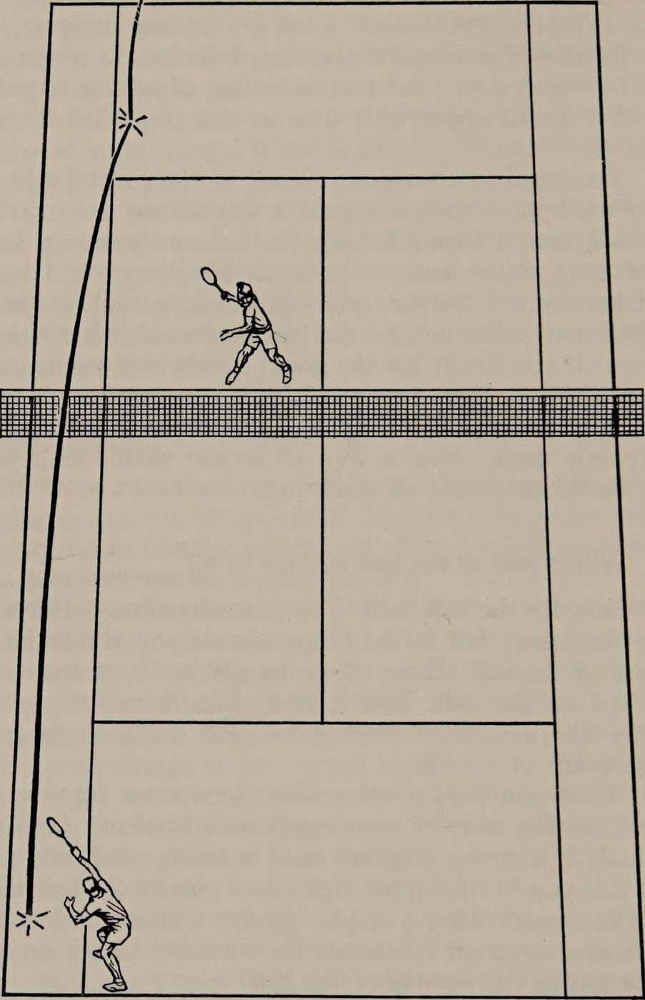
Một cú đánh dọc theo đường cong vào trong
Đánh bên ngoài bóng, giống như đối với cú đánh chéo sân, và bóng có thể vượt quá tầm với của tay vợt lưới và bay ngược vào trong đường biên.
Đi vào lưới và bạn quyết định thực hiện một cú đánh dọc vạch vôi. Nếu bạn đánh thẳng vào tâm quả bóng, rất có thể đối thủ của bạn sẽ có thể tiếp cận nó và cắt đứt nó hoặc cũng như nằm ngoài tầm với của anh ta, nó sẽ đi ra ngoài đường biên. Chắc chắn cách đánh nó là ở bên ngoài quả bóng, nhắm nó ra ngoài đường biên để nó có mọi cơ hội ở ngoài tầm với, đồng thời nếu nó luôn hướng vào trong thì càng đi xa. Bạn có thể nghĩ rằng điều này khó thực hiện. Nếu bạn thực sự bị ép buộc thì bất kỳ cú đánh nào cũng khó khăn, nhưng trong hầu hết các trường hợp, đó là cách an toàn nhất để thực hiện kiểu đánh này. Các trường hợp cụ thể khác sẽ xuất hiện trong tâm trí bạn. Nói chung, bạn nên hoàn toàn ý thức được rằng mặc dù bạn sử dụng phần giữa của dây để đưa bóng đến nơi bạn muốn, nhưng bạn cũng phải sử dụng bất kỳ phần nào trên bề mặt quả bóng để phù hợp nhất với mục đích của bạn. Bất kỳ cuộc thảo luận nào về việc đánh bóng ở bất kỳ vị trí nào khác ngoài tâm của nó đều dẫn đến việc xem xét độ xoáy. Không thể phủ nhận rằng xoáy là một phương tiện kiểm soát bóng tuyệt vời. Bạn cắt dưới một quả bóng rất thấp để nâng nó lên và bạn cắt vòng quanh nó để làm chệch hướng nó. Bạn xoáy lên những quả bóng cao và những quả mà bạn muốn nhúng hoặc tạo góc mạnh, và bạn sử dụng kiểu kéo xoáy lên đối với những quả bóng vụng về có thể bay mất kiểm soát. Tuy nhiên, bạn sẽ không nên dựa vào độ xoáy làm phương tiện kiểm soát bóng duy nhất của mình. Bạn gần như chắc chắn sẽ lạm dụng nó. Độ xoáy được thảo luận chi tiết hơn trong các chương tiếp theo về cách cầm vợt và cú đánh.
Lỗi lặp trong nhịp thời gian
Bên cạnh việc mang lại cho bạn nhiều tốc độ hơn mà ít tốn sức lực hơn, việc căn thời gian tốt là một yếu tố quan trọng để kiểm soát bóng. Nhiều người chơi không chú ý đến thời gian của họ, coi những lỗi trong đó là một phần của cú đánh thông thường của họ. Tuy nhiên, các lỗi về thời gian có thể được tách biệt và có nỗ lực nhất định để khắc phục chúng. Lỗi về thời gian khá ổn định; do đó bạn có thể cải thiện thời gian của mình ngay khi bạn biết lỗi này là gì. Chủ yếu là do bạn đánh quá sớm.
Một suy nghĩ khó chịu, đó. Ở đây tất cả chúng ta đều đang cố gắng cảnh giác nhất có thể, sử dụng động tác chân nhanh, chuẩn bị cú đánh sớm một cách nghiêm túc, và thậm chí dự đoán và di chuyển trước khi đối thủ thực hiện một số cú đánh của anh ta—và bây giờ chúng ta nghe nói rằng hầu hết các lỗi tính thời gian của chúng ta là do đến quá sớm. Tuy nhiên, điều đó là sự thật và chúng ta càng sớm chấp nhận nó bằng cách hiểu được lý do tại sao thì chúng ta sẽ càng có lợi hơn. Để bắt đầu, hãy tính thời gian để thực hiện cú lốp bóng. Những sai lầm ở đây hầu như luôn xảy ra do đánh quá sớm và đưa bóng vào lưới. Trong trường hợp cực kỳ sai lầm (khi người chơi đánh trượt bóng hoàn toàn), cú đánh luôn được thực hiện trước khi bóng rơi xuống, không bao giờ được thực hiện sau khi nó đã đi qua. Tương tự với một cú đánh thẳng. Lần duy nhất có ai đó trễ thời gian và đưa bóng về phía việt vị của anh ấy là khi anh ấy buộc phải làm như vậy. Mặt khác, các tay vợt liên tục đánh bóng quá sớm và chỉ ngăn mình thực hiện những cú đánh này qua sân bằng cách đẩy cổ tay của họ về phía trước để bù lại. Người chơi có thể sẽ chấp nhận những ví dụ thực tế này là đủ chính xác. Tuy nhiên, có vẻ thật kỳ lạ khi hàng nghìn người thường có độ chính xác cao đã cố gắng hết sức để tính giờ chính xác cho quả bóng nhưng lại mắc một lỗi phổ biến là đến sớm. Đây là lời giải thích. Chúng ta tính thời gian cho quả bóng phù hợp với tốc độ chung của cú vung của chúng ta. Ngay trước khi tiếp xúc với bóng, đầu vợt di chuyển với tốc độ nhanh nhất—nhanh hơn bất kỳ phần nào khác của cú vung. Rõ ràng việc chúng ta xem xét tốc độ tăng thêm này trong một khoảng cách ngắn là không bình thường. Do đó đầu vợt có xu hướng đến sớm.
Khoảng dừng để căn thời gian
Bạn có thể muốn quay lại vấn đề thực tế và hỏi xem liệu có phương pháp nào được chấp nhận để tránh việc bạn đến quá sớm hay không. Một số người chơi đếm “một hai” khi họ tạm dừng và đánh; một số người diễn đạt sinh động hơn, thì thầm “tạm dừng–đánh”. Tôi thậm chí đã từng nghe nói đến “chờ–trọng lượng”; vì vậy đừng cảm thấy quá kỳ quặc nếu bạn có một số công thức giống con lắc tương tự của riêng mình. Những người chơi khác cố tình tạm dừng ở đỉnh của cú vung vợt ra sau của họ; những người khác nữa (phần đa) chỉ đơn thuần biết rằng cú vung vợt đưa tới của mình phải chậm hơn một phần giây. Những người chơi không biết rằng căn thời gian đồng nghĩa với trì hoãn cú đánh một chút thường quét bóng bằng cả động tác vung vợt ra sau lẫn động tác đưa tới, gộp lại làm một. Khi họ làm được điều này thật trôi chảy, họ sẽ có những ngày thi đấu tuyệt vời. Nhưng số người như thế thì quá ít.ì cần. Một số tay vợt tài năng dường như không hề chậm trễ mà vẫn giữ bóng chuẩn xác. Tôi chỉ có thể nhắc lại rằng họ là một số ít tay vợt có năng khiếu.* Nhắc đến những tay vợt có năng khiếu, có lẽ bạn nghĩ ngay đến một số tay ném bóng cừ mà bạn biết. Bạn có thể thắc mắc liệu họ có chọn đúng thời điểm chỉ vì họ nhận bóng sớm hơn và do đó không phải đợi một phần giây cần thiết để chống lại xu hướng tự nhiên là quá sớm. Câu trả lời chắc chắn là không. Một quả bóng đang lên là quả bóng khó nhất để xác định thời gian chính xác và khi làm như vậy, bạn vẫn cần phải có độ trễ một phần. Nơi dễ dàng nhất để tính thời gian cho quả bóng là nơi nó ở tốc độ chậm nhất, ngay sau đỉnh điểm nảy của nó. Có lẽ yếu tố quan trọng nhất để bạn làm chủ số phận của mình trong việc tính thời gian đánh bóng là chuẩn bị sớm cho cú đánh. Sau đó, bạn chỉ cần căn thời gian cho cú đánh về phía trước. Tôi nên nhấn mạnh rằng việc tạm dừng trước khi quét về phía trước không nhất thiết là điểm dừng trong cú vung vợt của bạn. Nó có thể hơi chậm lại ở gần đỉnh của nó. Khi đối đầu với một quả bóng nhanh, điều đó có lẽ còn mang tính tinh thần hơn là thực tế. Nhưng trong hầu hết các trường hợp, nó nên ở đó. Nếu không có khoảng tạm dừng ấy, thời điểm ra vợt của bạn ở một vài cú đánh có thể đúng, nhưng nhiều khả năng là vẫn còn quá sớm. * Khi cố tình vung vợt một cách trơn suốt và liên tục trong suốt cú đánh, ý tưởng là lực được tự động tích hợp sẵn vào cú đánh, nên mọi sự ép vợt đều được loại bỏ và cú vung vợt tới trước có thể được dành hoàn toàn cho việc kiểm soát bóng. Điều này có thể có tác dụng tốt khi bạn luyện tập, nhưng bạn cần có sự căn thời gian tự nhiên và tinh thần bình tĩnh để dựa vào nó trong một trận đấu thật sự. Tôi cho rằng nó chỉ dành cho nghệ sĩ; nhưng hãy thử xem - ở khía cạnh cụ thể này, bạn có thể là một nghệ sĩ.
Nắm bắt lối chơi của đối thủ
Getting to grips with your opponent’s game
Là một người chơi có trình độ cao, bạn có thể không quan tâm đến việc thay đổi cách cầm vợt vốn đã ổn định và tự nhiên của mình. Do đó, trong chương này, chúng ta sẽ xem xét lối chơi của đối thủ - và khi làm như vậy, chúng ta có thể mong đợi học được một số điểm về lối chơi của chính mình. Cách một người cầm vợt ảnh hưởng đến toàn bộ phong cách chơi của anh ta. Phong cách chơi kết quả này — với kinh nghiệm, ngay cả khi khởi động — thường đi kèm với những điểm mạnh và điểm yếu đặc trưng. Nếu bạn biết những phong cách chơi này là gì, bạn sẽ không cần phải đóng vai một người đàn ông nhiều lần trước khi biết phần nào trong lối chơi của anh ta cần khai thác và phần nào cần cảnh giác.
Các kiểu cầm vợt chuẩn
Ba cách cầm vợt thuận tay tiêu chuẩn có lẽ bạn đã biết rõ rồi. Chúng thường được mô tả bằng vị trí chữ V được tạo bởi ngón cái và ngón trỏ trên cán vợt được giữ thẳng trước mặt bạn với các dây ngắn hướng lên và xuống. Trong cách cầm vợt của phương Tây, chữ V nằm ở đâu đó trên góc xiên bên phải của tay cầm và chỉ theo hướng chung của vai phải. Với tay cầm kiểu phương Đông, chữ V nằm ở giữa bề mặt trên của tay cầm hoặc hơi chếch về bên phải và hướng một chút về bên phải của tâm cơ thể bạn. Với tay nắm Continental, chữ V nằm ở bất kỳ vị trí nào từ bên trái của tâm bề mặt trên đến vị trí nào đó trên góc xiên bên trái.
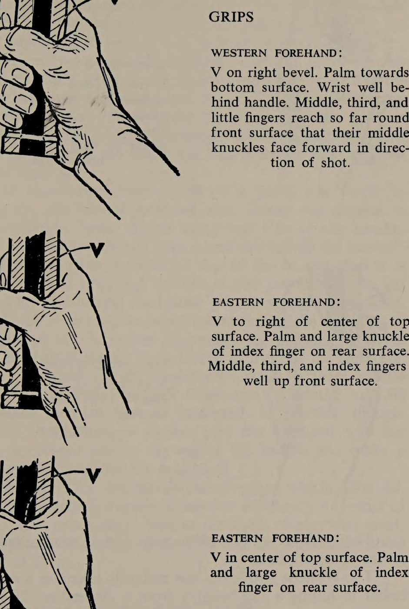
Cú thuận tay phương Tây:
V ở góc xiên bên phải. Lòng bàn tay hướng về phía mặt dưới. Cổ tay cũng ở phía sau tay cầm. Các ngón giữa, ngón thứ ba và ngón út chạm tới bề mặt phía trước xa đến mức các đốt ngón tay giữa của chúng hướng về phía trước theo hướng sút.
Cú thuận tay kiểu Đông:
V ở bên phải tâm của bề mặt trên. Lòng bàn tay và đốt ngón tay lớn của ngón trỏ ở mặt sau. Ngón giữa, ngón trỏ và ngón trỏ hướng lên phía trước.
Cú thuận tay kiểu Đông:
V ở giữa bề mặt trên. Lòng bàn tay và đốt ngón tay lớn của ngón trỏ ở mặt sau.
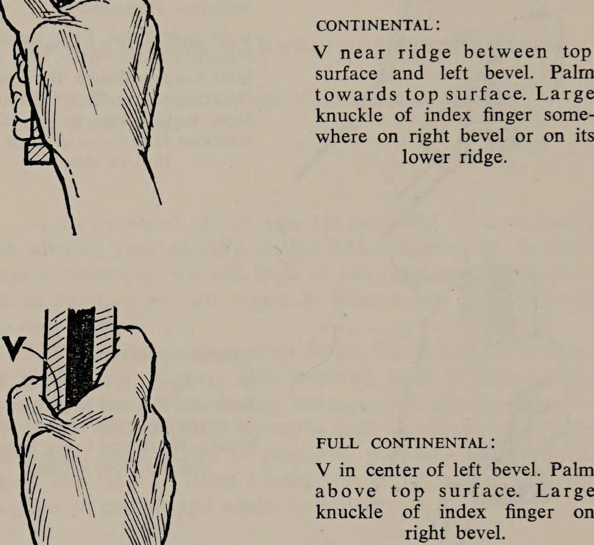
Lục địa:
V gần gờ giữa bề mặt trên và góc xiên bên trái. Lòng bàn tay hướng về phía bề mặt trên. Đốt ngón tay trỏ lớn ở đâu đó trên góc xiên bên phải hoặc trên gờ dưới của nó.
Toàn lục địa:
V ở giữa góc xiên trái. Lòng bàn tay phía trên bề mặt. Đốt ngón tay lớn của ngón trỏ ở góc xiên bên phải.
Vị trí của lòng bàn tay có thể mang lại một phương tiện mô tả thực tế hơn. Cách cầm vợt của phương Tây là cách cầm vợt tự nhiên của người đánh thảm khi đánh vào tấm thảm treo trên dây phơi. Sử dụng nó trên vợt tennis có nghĩa là, để dây vuông góc với quả bóng, lòng bàn tay chủ yếu nằm dưới cán vợt. Giả sử như mọi khi cơ thể nghiêng về phía lưới, bóng sẽ phải được đưa ra phía trước hông trái. Cách cầm vợt trái tay có được bằng cách xoay đầu vợt lên trên và điều chỉnh một chút để mở mặt vợt; cùng một mặt vợt được sử dụng để đánh bóng, bóng phải tiếp xúc tốt ở phía trước hông phải. Khi hai người bắt tay nhau, cách nắm tay của mỗi người là kiểu nắm tay phương Đông. Trên vợt, lòng bàn tay chủ yếu ở phía sau cán vợt và bóng chạm vào đối diện với hông trái. Đối với cách cầm vợt trái tay, lòng bàn tay hướng về phía trên của tay cầm và ngón cái tiến theo đường chéo về phía sau; bóng chạm vào phía trước hông phải một chút. Khi đóng một chiếc đinh trên băng ghế, bạn sẽ sử dụng cách cầm vợt thuận tay kiểu Continental, trừ khi bạn tình cờ duỗi ngón tay cái của mình dọc theo một bên của tay cầm; với một vợt, ngón cái đi vòng quanh tay cầm để tăng độ bám. Lòng bàn tay nằm phía trên tay cầm nhiều hơn so với kiểu cầm vợt kiểu Eastern và bóng được chạm ngay sau hông trái. Kiểu cầm trái tay của Continental gần như giống nhau, ngón cái còn lại quấn quanh tay cầm để tăng độ bám, hoặc nâng cao theo đường chéo để hỗ trợ; trong cả hai trường hợp, bóng được đánh từ phía trước hông phải một chút. Ngoài vị trí chéo của ngón tay cái, có rất ít sự khác biệt giữa cú thuận tay Continental đầy đủ và cú trái tay của nó và cú trái tay kiểu Eastern. Tuy nhiên, trên thực tế, nhiều người chơi kiểu Lục địa chơi thuận tay với lòng bàn tay hơi ít hơn phần trên của tay cầm và thực hiện một thay đổi rất nhỏ cho cú đánh trái tay. Quá nhiều về cơ chế của tay cầm, mà xét cho cùng, mọi người dường như giải thích hơi khác nhau về các điểm chi tiết. Bây giờ là lúc để xem xét phong cách chơi của họ. Đương nhiên, chúng ta sẽ phải có phần nào phê phán tất cả chúng.
Phản đối lối chơi “kiểu phương Tây”
Chúng ta sẽ làm theo thủ tục thông thường và thảo luận (và phần lớn là loại bỏ) phong cách phương Tây trước hết. Mặc dù vẫn được hỗ trợ ở các bang miền Tây nước Mỹ (thông qua sự kết hợp giữa sân bê tông và bóng có độ nảy cao), môn thể thao này đã suy giảm từ lâu ở Úc. Về cơ bản, nó là một phong cách chắc chắn, những người theo phong cách này thường sử dụng một cú đánh xoáy lên gần như rách nát trong các cú đánh của họ. Điều này khiến chúng trở nên nghiêm trọng hơn với những quả bóng ngắn, cao và cũng giúp chúng có được nhiều góc đánh mà không bỏ lỡ đường biên. Nhược điểm của kiểu cầm vợt phương Tây là khá dễ uốn với những đường bóng thấp, yếu trước những đường bóng rộng, và đối với những người ở phía sau người chơi thì vô vọng; tóm lại là không thể so sánh được với sự linh hoạt của các tay nắm phương Đông và lục địa. Tuy nhiên, một tay vợt kiểu phương Tây luôn tạo ra một đối thủ khó xử, vì những cú đánh bất thường của anh ta có xu hướng khiến đối thủ của anh ta đánh dưới phong độ thông thường của họ. Từ những điều trên, chiến thuật của bạn sẽ rõ ràng. Không tạo đường bóng cao ngắn để đối thủ tấn công và không vào lưới ở bất kỳ cú đánh nào mà đối thủ có thể thực hiện cú đánh thực sự tốt. Giữ bóng thấp và rộng nhất có thể. Luôn cố gắng lôi kéo anh ta một chút để bạn có thể thực hiện cú đánh tiếp theo ở phía sau anh ta một chút, rồi đưa nó vào lưới; hãy tìm kiếm một cơ hội như vậy sau khi anh ấy trở lại giao bóng. Cố gắng đừng khó chịu bởi những quả bóng xoáy lên bật cao của anh ta. Tiếp tục đi; phong cách phương Tây gây mệt mỏi cho người sử dụng, bất kể anh ta có thể bốc lửa đến mức nào trong set đầu tiên.
Các biến thể kiểu Đông
Tay cầm phương Đông được rất nhiều người sử dụng và nói đến nhiều đến mức nó được coi là tay cầm duy nhất đáng sử dụng. Dù vậy, nó không giúp bạn nhận biết các loại người cũng như điểm mạnh và điểm yếu đi kèm của chúng. Điều quan trọng là phải nhận ra ngay từ đầu rằng những kiểu cầm vợt khác nhau tồn tại ở những người chơi phương Đông, bởi vì cách cầm vợt thực tế mà họ sử dụng rất khác nhau. Bản thân cái tên này đã mang tính thời trang, do đó, cú thuận tay mang phong cách Lục địa hơn là kiểu phương Đông, và những tay cầm gần như kiểu phương Tây, có xu hướng được đưa vào đó. Chúng ta cần chia hệ thống kiểu phương Đông bao trùm này thành các nhóm chính của nó và xem kết quả của phong cách chơi nào.
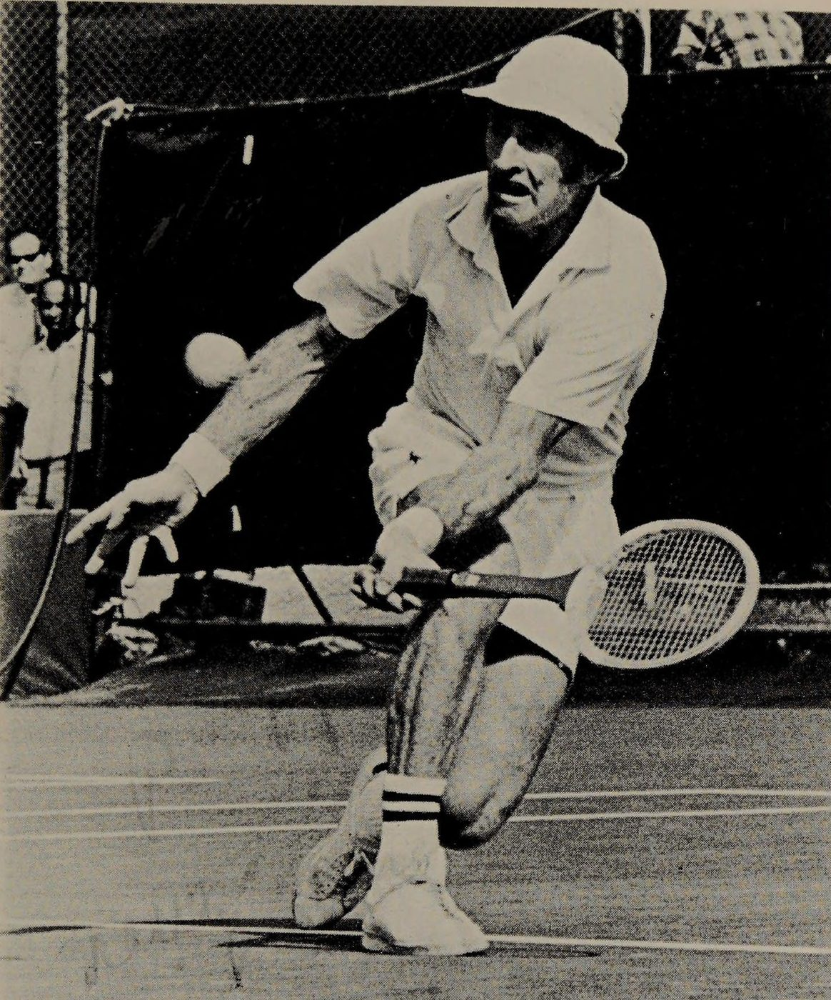
Với hầu hết các cú vô lê, chạm bóng là điều cần thiết. Những ngón tay của Laver hấp thụ nhịp độ của quả bóng. (Xem văn bản, trang 28-29)
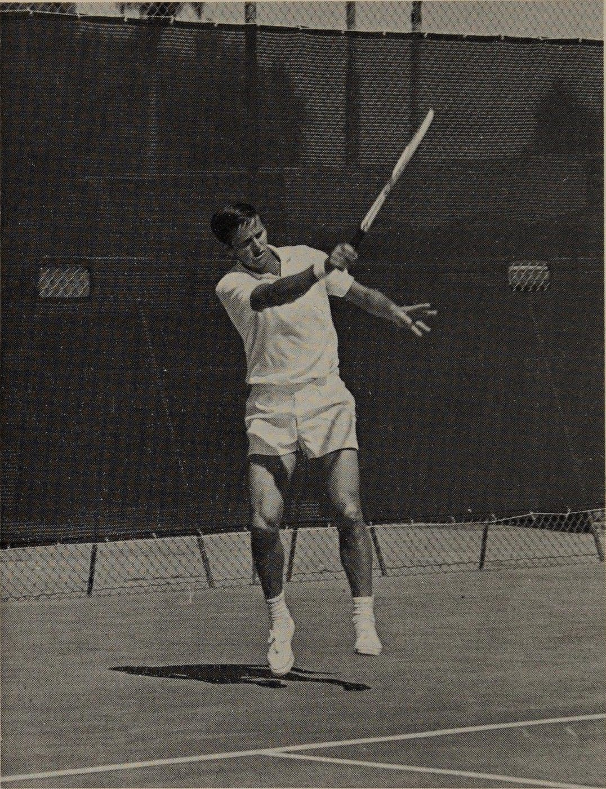
Roy Emerson thực hiện nhiều cú xoáy lên để tự mình thoát khỏi một vị trí khó xử. (Xem văn bản, trang 33)
Chuẩn Đông. Chữ V xuống giữa mặt trên của cán vợt và các cú đánh thẳng, phẳng hoặc hơi lăn, với cú thuận tay (đánh từ gần hông trái) có thể mạnh hơn (nhưng không lệch) so với cú đánh trái tay (đánh từ phía trước hông phải một chút). Điểm mạnh của lối chơi này là tính ổn định của nó, không có điểm yếu rõ ràng ở bất cứ đâu. Đối thủ sử dụng phong cách này luôn là một người chơi giỏi và với những cú đánh chính thống như vậy, anh ta xứng đáng được như vậy. Tuy nhiên, chắc chắn phải có điểm yếu ở đâu đó, nếu không người chơi này sẽ không cùng đẳng cấp với chúng ta. Điểm yếu của anh ta, vì muốn có một từ hay hơn, là anh ta có thể không có quyền lực to lớn ở bất cứ đâu. Mặc dù bạn không thể có quyền tự do tiến lưới với bất kỳ quả bóng nào thiếu sót như loại chính xác, nhưng khi bạn tiến lên những quả bóng tốt, bạn sẽ không gặp phải bất kỳ pháo hoa nào. Ngoài ra, bản thân bạn thường chơi tốt hơn khi đối đầu với kiểu người chơi thẳng thắn này hơn bất kỳ người chơi nào khác. Không có cú đánh nào của anh ấy là ác độc, và luôn có sự thiếu căng thẳng đáng chú ý khi chơi một môn quần vợt mà bạn có thể chơi bóng ở bất cứ đâu mà không cần phải tập trung vào việc giữ nó tránh khỏi một cú đánh nguy hiểm nào đó. Tiếp theo là một bản sửa đổi của loại này, Standard Eastern có trục dài. Những người chơi này có nhiều sức mạnh hơn và là những người chuyên thực hiện các cú công bóng sâu từ cả thuận tay và trái tay. Nếu một trong số họ có cùng tiêu chuẩn với một tay vợt ở nhóm trước, thì người có cú vung vợt dài hơn gần như chắc chắn sẽ chơi bóng ngắn vào lưới kém hơn. Với cả hai loại này, bạn nên cố gắng chia nhỏ các đợt giao bóng bằng cách thay đổi cả tốc độ và độ dài. Những người chơi chính thống đôi khi phụ thuộc quá nhiều vào việc vuốt ve một mình và không muốn tranh giành điểm của mình. Phong cách phương Đông hướng tới phong cách phương Tây. Đây là nhóm sử dụng tay cầm xa hơn phía sau tay cầm - tức là hướng về phía Tây. Đặc điểm cơ bản của họ là cú thuận tay dài và mạnh mẽ, đánh từ xa hơn về phía trước hông trái. Điểm yếu có thể xảy ra nhất của họ (như với phương Tây, như bạn mong đợi) là khả năng xử lý những đường bóng thấp và rộng cũng như những đường bóng đi ra phía sau người chơi. Nhóm này bây giờ chia thành hai, được quyết định bởi cách chơi trái tay. Đầu tiên là những nhân vật tận tâm, những người thực hiện một sự thay đổi lớn về cách cầm vợt để có cú trái tay phù hợp với cú thuận tay của họ. Họ thường đạt được điều này, nhưng sau đó mắc phải một điểm yếu nằm giữa thuận tay và trái tay theo đúng nghĩa đen - ở dạng dễ bị tổn thương trước bất kỳ quả bóng thấp nhanh nào đánh thẳng vào họ, đặc biệt là khi họ ở trên lưới. Phân khu thứ hai là phân khu thông thường hơn. Trong trường hợp này, người chơi chỉ thực hiện một thay đổi nhỏ đối với cú đánh trái tay, và, vì sự thay đổi này được bắt đầu từ cách cầm vợt thuận tay tròn hơn so với cách cầm vợt chính thống của phương Đông, nên đến lượt nó, cách cầm vợt trái tay không thực sự đủ tròn để cú đánh trở nên mạnh mẽ. Trên thực tế, nó yếu, thường là một đường cắt ngắn — khác với một đường cắt xuống dài và mạnh — và nó có thể bị tấn công và bám theo vào lưới mà ít có nguy cơ gặp phải những cú đánh xuyên qua liên tục. Các tay vợt ở phân khu này hầu như luôn chênh lệch về sức mạnh. Thật thú vị khi lưu ý rằng việc tạo ra cú đánh của họ thực sự cũng không cân đối, ở chỗ họ chơi tốt những cú thuận tay to ở phía trước cơ thể và những cú đánh xa về phía sau bên cạnh họ. Khi nói "lệch" tôi không có ý nói rằng những tay vợt này nhất thiết phải thiếu duyên dáng. Họ có thể có những cú thuận tay mượt mà, mạnh mẽ và những cú đánh trái nhỏ, trông gọn gàng. Tôi chỉ muốn nói rằng có sự khác biệt lớn giữa thuận tay và trái tay cả về sức mạnh và vị trí họ đưa bóng so với cơ thể. Bạn có thể thấy rằng tôi đang cố gắng lịch sự với mọi người, nhưng bây giờ tôi phải đề cập đến một điều chắc chắn là vụng về và vô duyên. Cách cầm vợt trái tay là những người, mặc dù có cách cầm vợt này nhưng vẫn cầm bóng ở phía trước hông phải. Điều này có nghĩa là cổ tay ở phía trước vợt và cánh tay cong xuống, và cú đánh trái tay này gần như yếu nhất có thể. Khi thi đấu với bất kỳ người chơi nào thuộc kiểu đánh thuận tay mạnh/trái tay yếu, cú đánh trái tay rõ ràng là mục tiêu, nhưng nó có thể là mục tiêu khó nắm bắt nhất mà bạn từng cố gắng tìm kiếm. Những người chơi này thường di chuyển rất nhanh trên sân và biến hầu hết mọi quả bóng bạn đánh qua thành cú thuận tay.
Thường thì cú thuận tay tốt nhất mà hầu hết họ có được là chơi từ một quả bóng hướng tốt về phía trái tay của họ, khi họ vòng qua nó và kéo cú ghi điểm trực tiếp sạch sẽ thẳng theo đường rộng của cú thuận tay của bạn hoặc trượt nó sang một góc nhọn so với trái tay của bạn. Để ngăn chặn những cú thuận tay của những người chơi này chiếm ưu thế trong toàn bộ trận đấu, bạn phải tìm ra những cú thuận tay của họ. Bạn làm điều này bằng cách chơi trước tiên ở phía thuận tay với một cú đánh đủ tốt để ngăn chặn việc họ ngay lập tức chịu trách nhiệm trao đổi và điều đó buộc họ phải để ngỏ phía trái tay của họ cho cú đánh tiếp theo của bạn. Với sự ưu tiên lớn đối với một cú đánh bóng lên phẳng (nếu bạn đủ an toàn với những cú đánh này), sau đó bạn đâm không thương tiếc vào cú đánh trái tay yếu và lộ liễu đó và thực hiện theo. Nếu bạn không đủ giỏi với cú đánh chuẩn bị cho cú thuận tay của kiểu người chơi này, bạn sẽ không bao giờ có được cú đánh trái tay của anh ta. Thật kỳ lạ nhưng đúng, khi bạn đối đầu với một tay vợt giỏi thuộc kiểu thuận tay mạnh, rằng mặc dù cú trái tay yếu của anh ta vừa là nỗi lo lắng của anh ta vừa là mục tiêu thường trực của bạn, nhưng cú đánh duy nhất mà bạn cần hơn bất kỳ cú đánh nào khác là một cú đánh thuận tay xuyên sân của chính bạn để buộc anh ta để lộ cú đánh trái tay của mình. Những tay vợt này có thể là những đối thủ rất nguy hiểm, đặc biệt là trong set cuối cùng. Nó cho thấy rằng không ai có cú thuận tay quá mạnh lại có thể dễ dàng bị đánh bại.
Đối đầu với tay vợt thuận tay trái
Cuối cùng trong số những người phương Đông là người thuận tay trái. Người thuận tay trái khác nhau ít hơn người thuận tay phải, hầu hết giống như kiểu người thuận tay phải không cân bằng đã được mô tả. Thường thì chúng được phóng đại hơn, cú thuận tay lại mạnh hơn và cú đánh trái tay thậm chí còn đáng ngờ hơn. Trong đánh đơn, họ thích thú với những cú chuyền thuận tay khiến bạn bị mắc kẹt. Trong đánh đôi, những cú thuận tay của họ có thể mang lại khả năng nhúng và kiểm soát đến mức khiến bạn tự hỏi tại sao bạn lại bận tâm học bất kỳ cú đánh nào khác ngoài cú vô lê nửa trái tay. Đối với cú đánh trái tay, kiểu người thuận tay trái này miễn cưỡng thay đổi cách cầm vợt một lượng nhỏ tương đương với người anh em họ thuận tay phải không cân bằng của mình. Lý do tại sao cú đánh của anh ta thậm chí còn yếu hơn là để đạt được cú trái tay của người thuận tay phải, người thuận tay trái phải chơi về phía bên trái của anh ta. Khi làm như vậy anh ta có xu hướng nâng khuỷu tay lên và hạ đầu vợt xuống. Điều này trở thành cách tự nhiên của anh ấy để thực hiện một cú đánh trái tay và dẫn đến việc anh ấy thường có cú đánh trái tay chéo sân kém nhất so với bất kỳ kiểu tay vợt nào mà bạn gặp. Khi nói chéo sân ở đây tôi muốn nói đến cú vô lê thuận tay rộng của người thuận tay phải. Lý do rõ ràng khiến một người thuận tay trái trung bình phát triển theo cách này là vì ngay từ khi còn trẻ, anh ta đã luôn chơi ở sân bên trái hoặc sân thứ hai ở nội dung đánh đôi. Thực hiện gần như mọi cú giao bóng bằng tay thuận của mình, anh ấy sử dụng cách cầm vợt (được sửa đổi theo kiểu phương Đông, xa hơn về phía sau tay cầm, về phía phương Tây) có lẽ là cách hiệu quả nhất trong số đó - với điều kiện trả giao bóng thuận tay là những cú đánh duy nhất từng phải chơi. Trong một trường hợp kỳ lạ trong những ngày đầu khi anh ấy phải chơi trái tay (và từ khi còn rất nhỏ, anh ấy đã là bậc thầy trong việc tránh chúng), anh ấy đã nhận thấy cú trái tay tự nhiên của mình đi thẳng vào lưới đối phương. Để tránh chướng ngại vật này, anh ta đưa bóng ra xa bằng khuỷu tay nâng lên và đầu vợt hạ xuống. Nhưng đừng buồn cảm thấy tiếc cho người thuận tay trái. Bên cạnh việc giúp anh ta phát triển những cú thuận tay đôi hiệu quả nhất hiện có, tạo hóa đã cho anh ta cơ hội có được lợi thế lớn trong giao bóng, vì vậy sẽ chỉ công bằng nếu cú trái tay của anh ta đưa anh ta trở lại đẳng cấp của bạn bè. Tuy nhiên, không quay lại ngay. Với các cú đánh đều nhau, người thuận tay trái có lợi thế sẵn có so với người thuận tay phải; nói cách khác, người thuận tay phải thường cần phải có những cú đánh vượt trội rõ ràng để đánh bại anh ta. Khi lối chơi đạt đến tiêu chuẩn mà người thuận tay phải có đủ độ chính xác để đánh được các cú trái tay của đối thủ thuận tay trái, điểm yếu này sẽ trở thành một gánh nặng quá lớn để gánh chịu. Ở đâu đó trong giai đoạn này, người thuận tay trái trở nên ít đe dọa hơn trong đánh đơn và được coi là đối thủ đánh đôi đáng sợ hơn nhiều.
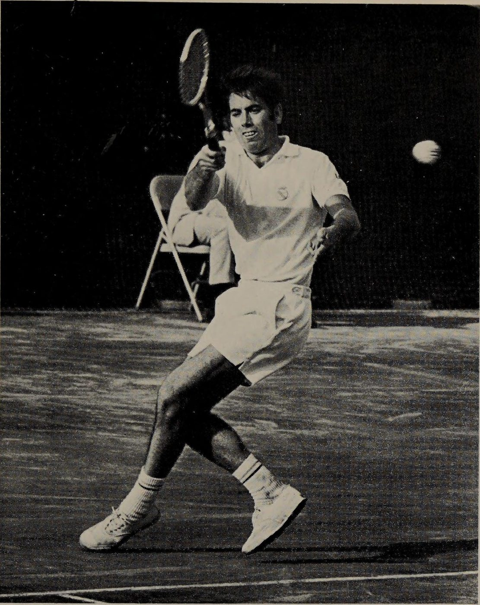
Manuel Santana là người Tây Ban Nha, nhưng tay cầm của anh ấy là “Người Mỹ toàn diện”. Đây là phương Đông hướng Tây. (Xem văn bản, trang 43)
Nhiều người nói rằng họ cảm thấy lúng túng khi chơi tay trái và thừa nhận rằng họ không biết tại sao. Lý do là người thuận tay trái thường được trang bị tốt hơn để tấn công trái tay của người thuận tay phải so với người thuận tay phải để tấn công trái tay của người thuận tay trái. Một người thuận tay trái có thể vung cú giao bóng của mình về phía trái tay ở cả hai sân, thuận tay tự nhiên của anh ta là ngang sân và trái tay tự nhiên của anh ta là về phía việt vị. Ngược lại, cú giao bóng của người thuận tay phải bình thường không chính xác trong việc thực hiện các cú giao bóng từ đường trung tâm sang sân thứ hai, và anh ta thường thích các cú giao bóng thuận tay thẳng và các cú đánh trái tay chéo sân; Đặc biệt, khi chơi những cú trái tay tầm gần, anh ấy cảm thấy yếu đuối. Nếu bạn có cảm giác bị trói trước một đối thủ thuận tay trái và đang dần mất thế trận khi trận đấu diễn ra, bạn cũng có thể lấy hết can đảm bằng cả hai tay và áp dụng chiến thuật đã đưa ra lúc trước để chơi những người thuận tay phải không cân bằng: chơi rộng về phía thuận tay, sau đó đến phía trái tay lộ ra ngoài và đi vào lưới. Về mặt chiến thuật, việc giao bóng cho người thuận tay trái sẽ dễ dàng hơn so với người thuận tay phải. Anh ấy tặng bạn cú trái tay của anh ấy ở sân đầu tiên, trong khi ở sân thứ hai, bạn có thể giao bóng rộng bằng cú thuận tay của anh ấy, trả về phía trái tay của anh ấy và đánh vào. Đối với cả hai sân, bạn đang sử dụng cú giao bóng chéo dài của mình tới các góc — cú giao bóng dễ nhất để đánh vào sân. Trừ khi bạn có một cú giao bóng chính xác từ đường giữa tới sân thứ hai, hoặc trừ khi người thuận tay trái để lại một khoảng trống vừa phải, tốt hơn hết là đừng cố tấn công trái tay của anh ta. Bạn có thể bỏ lỡ rất nhiều quả giao bóng đầu tiên và quả giao bóng thứ hai của bạn có thể không đủ chính xác để ngăn cản anh ta bước vòng qua nó và thực hiện một trong những cú thuận tay không thể đoán trước của anh ta khiến bạn phải đứng vững. Loại thuận tay trái mà tôi vừa mô tả có thể sẽ giảm số lượng trong tương lai. Với mô hình do Rod Laver đặt ra cho họ, chúng ta có thể mong đợi được thấy một loạt người chơi cân bằng thuận tay trái phát triển. Trong lúc đó, tất nhiên, không ai đọc được điều này nên nghĩ rằng tất cả những người thuận tay trái ngày nay đều giống như những người thuận tay trái điển hình của tôi. Tôi sử dụng anh ấy như một danh tính rõ ràng trong nhiều loại hình của tôi. Những người thuận tay trái khác có thể phù hợp với bất kỳ kiểu người thuận tay phải cân bằng nào được mô tả - trên thực tế, ngoại trừ khi giao bóng, việc thuận tay trái của họ mất đi phần lớn tầm quan trọng của nó. Điều này bao gồm phong cách Lục địa (sau đây), trong đó người thuận tay trái có thể là một trong những người thực hiện cú đánh, đặc biệt là Laver và Tony Roche. Đấu tranh với phong cách Lục địa Lục địa có thể là một sự kết hợp của những thái cực. Nó dường như phát triển một cú thuận tay rất tốt hoặc không tốt bằng cú trái tay của chính người chơi. Điều này đặc biệt áp dụng cho kiểu Continental đầy đủ, trong đó ngón cái và ngón trỏ V nằm ở góc xiên bên trái và lòng bàn tay hướng về phía trên của cán vợt đến mức cách cầm thuận tay và trái tay giống hệt nhau. Vì cú thuận tay có thể yếu này, Continental đã nhận được nhiều lời chỉ trích chính đáng. Cú thuận tay yếu hơn. Kiểu đánh mặt đất của người chơi này thực sự dựa vào cú đánh trái tay, nhưng chúng ta có thể không nhận thấy điều đó vì cú đánh trái tay không được thực hiện mạnh mẽ. Nó thường linh hoạt, chơi tốt những quả bóng rộng, thấp, phía sau người chơi, trên cao, v.v. Nó gọn gàng và hiệu quả (cuối cùng thì bạn cũng thấy), nhưng nó không phải là một loại sức mạnh trái tay rõ ràng. Cú thuận tay tốt với những đường bóng thấp và rộng và thường đủ ổn định để đánh bóng cả ngày, nhưng nó lại bị thất bại trước một đòn tấn công vào lưới. Lỗi cơ bản thường gặp gây ra lỗi này là cổ tay bị giữ quá cứng. Cùng với hành động đi xuống ở cú vung về phía trước, điều này chắc chắn dẫn đến cú đánh có xoáy xuống. Bản thân người chơi thậm chí có thể không biết điều đó và có thể nghĩ rằng mình đang đánh phẳng. Điều này không thực sự quan trọng. Chính xoáy xuống mới là yếu tố quan trọng – có lợi cho bạn. Nó làm giảm đáng kể tốc độ mà bất kỳ cú đánh nào có thể có nhưng vẫn ở trong sân, và với những cú đánh cố gắng chuyền ngang sân, điều đó thường có nghĩa là bóng đi trong tầm với của cú vô lê thuận tay của người lưới hoặc ra ngoài đường biên. Một khi bạn nhận ra kiểu tay vợt này, chiến thuật của bạn là tấn công thuận tay của anh ta vào lưới, biết rằng cú đánh dọc biên hoặc lốp bóng sẽ là câu trả lời thông thường của anh ta.
, Những người ủng hộ phong cách chơi Lục địa khẳng định rằng cú đánh xoáy xuống này thực sự không nên được gọi là cú thuận tay kiểu lục địa vì nó chỉ là phía bên kia (và cả hình ảnh mờ) của trái tay của người chơi. Tôi phải nói rằng tôi đồng ý với phần cuối cùng của điều này. Tôi nhận thấy rằng rất nhiều người chơi này giữ ngón tay cái của họ theo đường chéo trên cán vợt và thực sự trông như thể họ đang đánh một cú thuận tay bằng cách cầm vợt trái tay. Tuy nhiên, mặc dù những người chơi này có thể không đại diện tốt nhất cho kiểu cầm vợt Continental, nhưng họ vẫn tồn tại và bạn nên nhận ra họ cũng như biết cách chơi họ. Nếu không bạn có thể gặp rắc rối. Họ hầu hết đều ổn định từ vạch cuối sân và khéo léo trên lưới, vì vậy họ không thể bị đẩy lùi. Cú thuận tay mạnh hơn. Bây giờ, chuyển sang những người tiêu biểu thực sự của Lục địa, bạn có thể muốn dừng lại cuộc thảo luận của chúng tôi về những tay vợt theo tiêu chuẩn của chúng tôi trong giây lát và xem xét một số nhà vô địch. Mặc dù chúng ta thường đọc về kiểu cầm vợt kiểu Eastern cùng với những kỳ thủ nổi tiếng, nhưng đối với tôi, dường như nhà vô địch kiểu Lục địa hiếm khi được thừa nhận là sử dụng kiểu cầm vợt kiểu Lục địa dưới bất kỳ hình thức nào. Thay vào đó, chúng ta nghe nói anh ấy có những cú đánh cực kỳ duyên dáng và linh hoạt (Jack Crawford), có lẽ là cú thuận tay giỏi nhất trong thời đại của anh ấy (Drobny), mạnh mẽ đến mức anh ấy có thể chơi những cú đánh “cổ tay” một cách an toàn (Lew Hoad), hoặc có phong cách là phiên bản thuận tay trái của Hoad (Rod Laver). Có vẻ như mọi chuyện đã từng như vậy. Phong cách chơi của bậc thầy vĩ đại người Pháp những năm 1920, Henri Cochet, từng được mô tả bằng đủ loại so sánh nhất, nhưng, dù là Continental, tôi không thể nhớ mình đã từng đọc mô tả này về nó. Cách cầm vợt Continental có lẽ đã được nhiều nhà vô địch Wimbledon thời kỳ đầu sử dụng, bao gồm cả anh em nhà Doherty bất tử; Continental từng được gọi là giải quần vợt kiểu Anh, và như chúng ta đã biết, môn quần vợt quần vợt sân cỏ bắt đầu ở Anh. Một tay vợt nổi tiếng của Lục địa—một người ba lần vô địch Wimbledon—có tên thường được gắn với kiểu cầm vợt này là Fred Perry. Có lẽ điều này là do cách cầm vợt của anh ấy là một ví dụ cực đoan hơn của kiểu Continental so với cách cầm vợt được sử dụng bởi một số người khác mà tôi đã nêu tên. Có lẽ tôi đơn độc khi coi tất cả những người khác là tay vợt của Lục địa. Có lẽ một số người trong số họ thậm chí không coi mình như vậy và có thể cảm thấy khó chịu với sự phân loại này. Chà, tất nhiên là họ nên biết rõ nhất về môn quần vợt của mình, nhưng tôi thấy nó như thế này. Mặc dù tất cả những người chơi mà tôi đã sử dụng tên sẽ không có cách cầm vợt giống nhau (nhiều hơn bất kỳ nhóm người chơi phương Đông nào), nhưng tất cả họ đều có nhiều điểm giống nhau về phong cách hơn bất kỳ người nào trong số họ có với một người chơi phương Đông.
Sự khác biệt giữa phong cách phương Đông và phong cách lục địa Điểm cơ bản của cách cầm vợt phương Đông là cổ tay nằm chắc chắn phía sau cán vợt, lòng bàn tay ở phía sau và đốt ngón tay lớn của ngón trỏ nằm ở đâu đó trên bề mặt phía sau của cán vợt. Về cơ bản là ở phía sau quả bóng, phong cách này trông mạnh mẽ và thẳng thắn. Điểm cơ bản của kiểu cầm Continental là cổ tay và lòng bàn tay hướng về phía trên của tay cầm nhiều hơn với đốt ngón trỏ nằm ở đâu đó trên góc xiên bên phải của tay cầm (tức là bề mặt góc cạnh giữa bề mặt trên và mặt sau của nó). Với cách cầm vợt này, thuận tay và trái tay dường như được liên kết chặt chẽ hơn, và cách chơi, ngay cả với một người đánh mạnh mẽ, trông khéo léo hơn — hơi giống với môn bóng bàn cỡ khổng lồ. Nhìn chung, những tay vợt mà tôi kể tên đều là nhà tạo mẫu. Họ là những chuyên gia chơi bóng đang nổi, cổ tay tự do và linh hoạt đến mức dường như họ có thể thực hiện mọi cú đánh—cao, thấp, phía sau, rộng hoặc lệch dây giày—một cách dễ dàng như nhau. Tất cả đều đưa bóng trả lại rất nhanh, dù là từ thời điểm hay lực. Cuối cùng và quan trọng nhất, họ đều mạnh hơn khi chơi thuận tay so với đánh trái tay. Đối với tôi đây có vẻ là một lập luận mạnh mẽ rằng kiểu cầm thuận tay kiểu Continental không hề lỗi thời và chỉ được quan tâm trong học thuật. Không có nhà vô địch Mỹ trong danh sách? Có một lý do. Người Mỹ đã phát triển Đông Mỹ và phương Tây
Tay vợt Mỹ (để đặt tên đầy đủ), vì vậy có lẽ họ bắt đầu bằng tiếng Anh/Continental. Hình ảnh của một số nhà vô địch đầu tiên của họ cho thấy điều này. Bỏ qua miền Tây vàng son với bề mặt bê tông và độ nảy cao, lý do người Mỹ hoàn toàn áp dụng cách cầm vợt của Mỹ ở cả hai hình thức đều bắt nguồn từ độ cứng của quả bóng mà họ sử dụng. Lực nén của bóng tennis phải nằm trong dung sai được quốc tế chấp thuận, do đó, bóng của Hoa Kỳ có thể được làm từ vật liệu hơi khác so với vật liệu được sử dụng trong bóng của các quốc gia khác. Trong mọi sự kiện, đối với người Úc, chúng có vẻ cứng như những quả bóng gôn và bắn ra khỏi vợt của bạn và vượt quá đường biên cho đến khi bạn cẩn thận điều chỉnh theo chúng. Tất cả điều này chỉ ra rằng các điều kiện của Mỹ đòi hỏi phải có cổ tay ở sau vợt, mặt vợt khép kín và quyết tâm giữ bóng ở mức bằng mọi giá. Do đó, cho phép một ngoại lệ có thể xảy ra ở Gonzales, nước Mỹ không phải là nơi sinh sản cho sự thống trị của Lục địa, dù ở mức độ nào ở hình thức cực đoan hơn của nó. Trở về từ các vì sao đến trái đất rắn chắc, chúng ta không tìm thấy nhiều tay vợt thuận tay mạnh mẽ toàn lục địa. Tôi không biết liệu điều này là do cách cầm vợt đã bị mất uy tín (chắc chắn là nó chưa bao giờ được dạy) hay vì bạn phải là một thiên tài quần vợt mới bắt đầu trước khi có thể có một cú thuận tay tốt với kiểu cầm kiểu Continental hoàn chỉnh. Có lẽ là do nó gây quá nhiều áp lực lên cổ tay thông thường nên không thể sử dụng thành công. Tuy nhiên, chúng tôi gặp rất nhiều tay vợt Lục địa sử dụng cách cầm vợt thuận tay gần giống kiểu phương Đông hơn và thực hiện một thay đổi nhỏ cho cú đánh trái tay. Ngay cả khi đôi khi cách cầm vợt của họ được gọi là kiểu Phương Đông hoặc "'thứ gì đó giữa Lục địa và Phương Đông' ở những người khác, điều khiến chúng tôi lo ngại đối với đối thủ của họ là họ có những đặc điểm của Phong cách Lục địa.* * Có lẽ tôi đang gây tranh cãi ở đây bằng cách gọi kiểu cầm vợt như vậy là kiểu Lục địa chứ không phải kiểu Phương Đông cải tiến. Tôi đã làm như vậy bởi vì một khi lòng bàn tay không còn hoàn toàn và chắc chắn phía sau cán vợt thì phong cách chơi kết quả có xu hướng khác với các phong cách kiểu phương Đông được mô tả trong phần Đông trước. Có lẽ một ngày nào đó điều này có thể được biết đến với cái tên kiểu cầm vợt kiểu Úc. Mọi người, kể cả những người theo chủ nghĩa thuần khiết nhất, khi đó có thể hài lòng.
Chiến thuật chống tay vợt cầm Continental có cú thuận mạnh
Nếu bất kỳ đối thủ Lục địa vuốt ve tự do nào thuộc đẳng cấp của chúng tôi, anh ta chắc chắn phải có điểm yếu của mình. Vì vậy, chúng ta không nên quá lo lắng trong phần khởi động nếu anh ấy thực hiện tất cả các cú đánh một cách dễ dàng. Điểm yếu sẽ lộ rõ trong trận đấu. Người đàn ông mà anh ấy giống nhất chính là người đầu tiên tôi miêu tả, một người phương Đông chính thống, nhưng anh ấy có vẻ kém lịch sự hơn vì về cơ bản, cách nắm bắt của người phương Đông chắc chắn hơn. Vì vậy, gợi ý của bạn về điểm yếu là anh ta có thể không có bất kỳ quyền lực cụ thể nào ở bất kỳ đâu, và vì có thể không có cơ sở vững chắc nên anh ta có khả năng mắc phải một số sai lầm. Giữ bóng trong cuộc và trong các pha trao đổi cơ bản, khá cao qua lưới nếu bạn muốn. Có thể ở giữa một pha giao bóng, anh ta sẽ bắt tốt một quả bóng đang dâng cao mà anh ta không cần phải có, và bỏ lỡ nó; và nếu anh ấy thiếu tập trung, lối chơi dễ dãi của anh ấy có thể trở nên nhẹ nhàng. Đừng quá ngạc nhiên hoặc nản lòng nếu bạn vào lưới sau một cú đánh rất tốt và bị vượt qua một cách dễ dàng. Những người chơi này có thể rút ra rất nhiều thứ từ túi mà không có thứ gì trông có vẻ suôn sẻ; chỉ cần nhớ rằng họ cũng có xu hướng mắc khá nhiều lỗi. Khi đến lượt họ vào lưới, một lần nữa, đừng quá thất vọng nếu họ tự tin tung cú vô lê và nửa cú vô lê của bạn ở những cú đánh thấp nhất của bạn và vì khả năng này có thể đủ khả năng thực hiện cú vô lê từ xa hơn từ lưới, nghĩa là họ cũng có thể che bóng rất tốt. Bù lại, nếu một số cú chuyền của bạn quá cao một chút, chúng có thể không được xử lý trong một cú vô lê, cho bạn cơ hội thứ hai. Các tay vợt châu lục có xu hướng lạm dụng nó và đứng quá xa lưới, tạo cho bạn nhiều cơ hội thực hiện cú đánh chéo sân hơn những tay vợt khác. Cuối cùng, hãy cẩn thận đừng để bản thân chán nản. Nếu một trong những người chơi này đang dẫn dắt bạn trong các môn quần vợt và xử lý mọi thứ bạn gửi cho anh ta một cách dễ dàng đặc trưng đó, thì hơn bất kỳ kiểu người chơi nào khác, bạn có thể có cảm giác hụt hẫng rằng anh ta có thể đánh bại bạn khi mặc áo khoác. Một người chơi Continental giỏi, luôn khiến người xem thích thú, có thể khiến bạn cảm thấy mình đang tham gia vào một cuộc đua thỏ và rùa. Nếu vai trò sau phù hợp với bạn, đừng bỏ cuộc; hãy tiếp tục công việc và hy vọng thỉnh thoảng anh ấy sẽ quay trở lại trạng thái tương đương với một giấc ngủ ngắn. Nếu bạn là một tay chơi phương Đông giỏi theo cách riêng của mình, thì hãy để anh ta có thanh liễu kiếm xuất sắc của mình - bạn có thanh kiếm mạnh hơn của mình.
Chiến lược chống tay vợt có cú trái mạnh
Bạn phải nhận ra những tay vợt có cú trái tay mạnh hơn ngay lập tức. Bạn cũng có thể - dễ dàng đến mức có lẽ bạn sẽ nghĩ rằng tôi đang xúc phạm trí thông minh của bạn khi gợi ý rằng bạn có thể không làm vậy. Một lần nữa, điều đáng kinh ngạc là có bao nhiêu người không muốn tin vào bằng chứng tận mắt mình và thua cuộc khi chơi suốt trận đấu với sức mạnh thực sự của người kia. Kiểu đánh trái tay mạnh hơn của Continental thường xuyên không được chú ý. Những người chơi có kinh nghiệm thuộc loại này thực sự che giấu sức mạnh trái tay của họ, giành được điểm từ phía này với sự thể hiện ít nhất có thể là có bất kỳ ưu tiên nào cho nó. Tuy nhiên, từ những gì đã được giải thích trong phần Lục địa trước đây, giờ đây bạn có thể nhận ra những người chơi này và chơi môn quần vợt của riêng mình cho phù hợp. Nhóm người chơi trái tay khác - những người đánh bóng, chơi gôn hoặc chặt gỗ thuận tay trái và rõ ràng là thoải mái hơn bất cứ khi nào phía bên phải của họ hướng về phía trước - là điều hiển nhiên đối với bất kỳ ai. Những người chơi này hầu hết có cú đánh trái tay mạnh mẽ được thực hiện từ một tay cầm ở phía sau tay cầm và thường với ngón cái hướng thẳng về phía sau. Thông thường, họ không cố gắng thực hiện cú công bóng thuận tay mà thay vào đó là kiểu cắt nhỏ được đề cập trước đó vì an toàn nhưng yếu khi chơi trên lưới. Bạn nên tấn công theo đường cắt thuận tay và chiếm lưới, đồng thời khi đánh trái tay mạnh nhưng không linh hoạt của đối thủ, hãy cố gắng đưa bóng ra phía sau. Bạn có thể thắc mắc tại sao bất kỳ kiểu thuận tay xoáy xuống nào luôn được mô tả là yếu trước lối chơi trên lưới khi rất nhiều người chơi giỏi có cú đánh trái tay cắt lát và dường như hòa hợp với nó. Nó giống như thế này. Mặc dù hầu hết mọi người có thể đánh mạnh hơn ở phía thuận tay khi đánh bóng, nhưng cú cắt thuận tay thường không thể được thực hiện mạnh mẽ như cú đánh trái tay. Các cú công bóng là những cú vung vợt và có thể thực hiện cú đánh dài hơn ở phía thuận tay. Slice, v.v., là những cú đánh ngắn, trong đó bất kỳ cú vung vợt có độ dài thêm nhỏ nào ở phía thuận tay hầu như không được áp dụng; thay vào đó, cổ tay mới là yếu tố quan trọng và bạn có thể nhận được nhiều giao dịch mua hoặc đòn bẩy hơn bằng một hành động trái tay. Đương nhiên vẫn có những trường hợp ngoại lệ, nhưng trong hầu hết các trường hợp, người chơi có cú thuận tay phẳng hoặc hơi lăn và cú cắt trái tay sẽ cân bằng hơn so với người có cú đánh trái tay lớn và đường cắt thuận tay.
Đối phó với kiểu cầm và lối chơi khác thường
Bạn cần có khả năng sắp xếp những điều này để tránh cảm thấy bối rối khi gặp một trong số chúng. Hầu hết người chơi thuận tay đôi đều giao bóng và chơi thuận tay bằng tay phải và sử dụng hai tay cho cú đánh trái tay. Cú trái tay bằng hai tay này thường là phía mạnh hơn và luôn ổn định hơn. Đừng bao giờ lãng phí năng lượng của bạn để thực hiện cú giao bóng đầu tiên thẳng vào trái tay này - nó giống như đá. Điểm yếu của nó là thiếu tầm với, vì vậy bạn thường đánh thuận tay của người đàn ông này và sau đó đánh rộng sang trái tay của anh ta, hoặc ngược lại. Bởi vì anh ấy luôn chơi ở sân thứ hai với tỷ lệ đôi nên sở thích của anh ấy về hướng là dọc biên cho thuận tay và chéo sân cho trái tay. Khi đánh thuận tay và cầm lưới, hãy đề phòng cú thuận tay thẳng và cú tung bóng. Khi người chơi hai tay sử dụng hai tay cho cú thuận tay của mình, anh ta đang bỏ tất cả trứng vào một giỏ bằng cách trở nên lệch về sức mạnh nhất. Ở phía bên trái, anh ta sẽ phải chơi trái tay chỉ bằng một nửa chiều dài của tay cầm, nếu không anh ta phải sử dụng cánh tay trái yếu hơn của mình làm thuận tay. Tương tự như vậy, một người sử dụng cả hai tay cho cả thuận tay và trái tay đều có mặt mạnh và mặt yếu, mặt mạnh là nơi cầm vợt tự nhiên (như khi vung gậy bóng chày) và mặt yếu là tay anh ta quay sai hướng (bởi vì anh ta
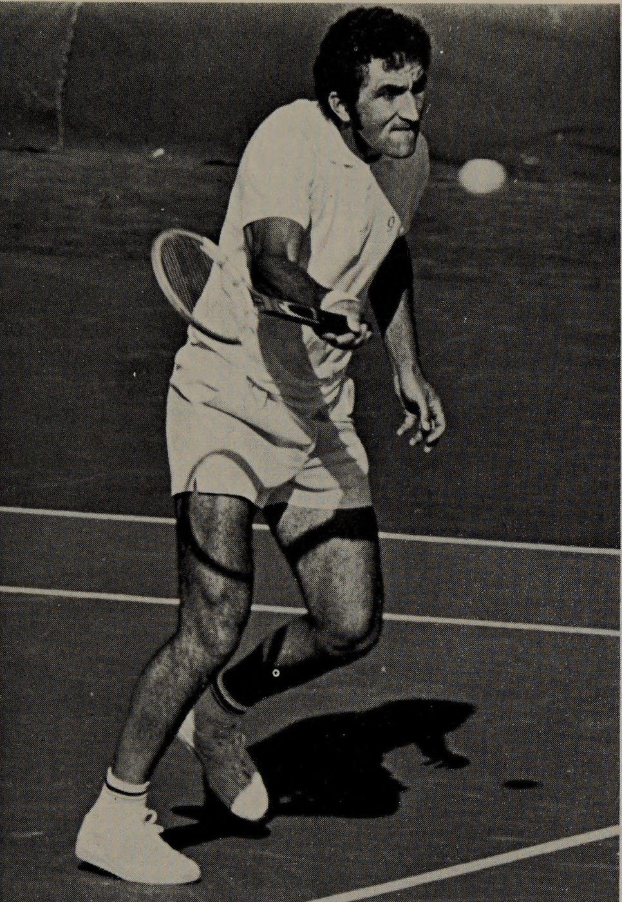
Cú thuận tay của Ion Tiriac không phải lúc nào cũng được thực hiện tốt — nhưng, giống như mọi thứ về anh ấy, nó có hiệu quả. (Xem văn bản, trang 87)
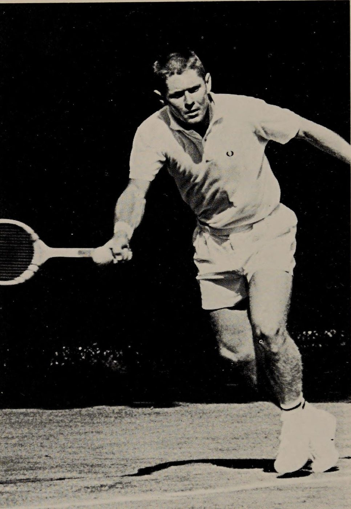
Cú thuận tay chắc chắn của Cliff Richey (xem văn bản, trang 88). Chân trái trễ một chút nhưng cú đánh này sẽ được đặt ngang chân trước. (Xem văn bản, trang 115)
chưa có thời gian để thay). Anh ta còn có thêm một điểm yếu là thiếu khả năng tiếp cận của cả hai bên. Những người chơi thuận cả hai tay thường là những người thuận tay phải với cú thuận tay mạnh hơn ở bên phải so với bên trái. Thường thì cú thuận tay trái có phần móc câu và thiên về hướng chéo sân. Những tay vợt này có phạm vi tiếp cận tối đa ở cả hai bên nhưng không thích bóng được đánh thẳng vào họ — đặc biệt là trong những cú vô lê, nơi mà đôi khi họ không có cú đánh nào cả. Đây là những loại chung để từ đó lập biểu đồ cho lộ trình của bạn; nhưng những kẻ lập dị sẽ là những kẻ lập dị. Tôi đã từng đóng vai một người thuận tay phải bẩm sinh với cú thuận tay phải mạnh mẽ, cú thuận tay trái phụ và cú giao bóng thuận tay trái. Không thể bị tổn thương trước cú giao bóng của đối phương, anh ta có thể vung cú giao bóng thuận tay trái của mình sang trái tay đối phương. Nhưng anh không có lợi thế về mọi mặt. May mắn thay, anh ta quá béo và dẫn đến hai điểm yếu: anh ta phải bám theo những đường biên rộng, và anh ta không thể thoát khỏi những cú đánh thẳng vào mình.* Và nhà vô địch sẽ là nhà vô địch. Họ khai thác tối đa sức mạnh và sự chắc chắn của cách cầm vợt bằng hai tay, đồng thời khắc phục được những điểm yếu cố hữu của đối phương. Hãy nhìn vào Pancho Segura chẳng hạn. Cú thuận tay bằng hai tay của anh ấy cạnh tranh với những cú thuận tay tuyệt vời của Crawford và Perry như một trong những cú đánh đa năng hay nhất trong lịch sử môn quần vợt, và sau đó anh ấy cố gắng có được một tay cầm dài bằng toàn bộ tay cầm cho trái tay của mình bằng cách đổi tay nhanh đến mức đáng kinh ngạc. Nếu bạn là thành viên của câu lạc bộ này, đừng bỏ qua bất kỳ cú đánh tốt nào mà bạn có. Hãy tiếp tục gửi nó ngày càng mạnh hơn tới những thường dân cụt tay đó.
* Một bài kiểm tra về việc sắp xếp mọi thứ. Người thuận tay phải chơi trái tay bằng hai tay với tay của mình sai chiều (nghĩa là tay trái của anh ta ở cuối cán vợt); anh ấy chơi thuận tay phải với chiều dài bằng nửa tay cầm. Q. Điểm yếu cố hữu của anh ấy là gì và bạn nên chơi như thế nào? A. Tiếp cận. Hãy thử chơi rộng sang cả hai bên trong cú đánh. Nói chung: Bất kỳ cú đánh quái đản nào cũng thường có sức mạnh tự nó—nếu không thì chủ nhân của nó sẽ không kiên trì chơi nó một cách quái đản.
Nhiều người chơi dự đoán điểm mạnh và điểm yếu của các đối thủ khác nhau hoàn toàn bằng bản năng. Không thể giải thích điều vô hình như vậy, tôi đã chọn cách cầm vợt và kiểu dáng kết quả làm cơ sở cho phân tích của mình. Một số độc giả sẽ hiểu được tất cả; những người khác ít nhất đã nhận ra môn quần vợt của riêng họ và giờ đây sẽ hiểu rõ hơn về chiến thuật mà đối thủ có thể sử dụng để chống lại họ. Hầu hết sẽ hiểu rằng việc nhận ra điểm mạnh và điểm yếu bẩm sinh có thể tạo ra sự khác biệt giữa thắng và thua trước bất kỳ ai theo tiêu chuẩn của bạn; mặc dù điều đó không có nghĩa là đánh bại tất cả những người chơi giỏi hơn, nhưng nó chắc chắn sẽ cắt giảm quy mô của họ. Nhưng liệu điều đó có cản trở việc quan sát quả bóng—một cách có ý thức và trong toàn bộ đường bay của nó không? Không một chút nào. Một số có thể cảm thấy họ chưa đủ khả năng và trong lúc đó muốn tập trung hoàn toàn vào lối chơi của mình. Tôi biết rằng một số người chơi trẻ nhận thấy bất cứ điều gì khác ngoài cú đánh của họ khiến họ mất tập trung hơn là hữu ích. Một lần nữa, bạn phải làm hài lòng chính mình, vì bạn là người chơi các trận đấu của mình. Nhưng đừng nghi ngờ gì về điều này: dù bạn có đọc trận đấu của đối thủ hay không, một người chơi có kinh nghiệm ở mọi lứa tuổi luôn đọc trận đấu của bạn một cách có ý thức hay bản năng.
Rèn luyện những đại bác của bạn
Training your big guns
Đây là thước đo mà bất kỳ ai, bất kể trình độ chơi bóng của mình, đều có thể tự áp dụng cho cú giao bóng của chính mình. Một cú giao bóng là tích cực nếu bạn cố làm được điều gì đó với nó; nó là trung lập nếu bạn chỉ đưa bóng vào cuộc chơi; nó là cú đánh tồi nếu hy vọng chính đằng sau nó chỉ là tránh lỗi giao bóng kép. Các cú giao bóng tích cực nhằm vào ace, nhằm trả lại đúng loại bóng mà bạn đã chuẩn bị sẵn, hoặc nhằm ngăn đối thủ tung cho bạn một cú đánh nguy hiểm. Chúng bao gồm một trong hoặc kết hợp các yếu tố sau: tốc độ, góc bóng (bật mạnh ra xa người trả bóng hoặc bó vào thân người ấy), độ sâu về phía đường giao bóng, hướng vào phía yếu của đối thủ và quỹ đạo nảy khó lường. Các cú giao bóng trung lập xuất hiện rất nhiều trong các buổi chơi giao lưu và trong những buổi tập đấu. Trong các trận đấu chính thức, chúng xuất hiện khi tay vợt mất tập trung hoặc chủ quan vì trận đấu đã nằm chắc trong tay. Những cú giao bóng tồi là nỗi kinh hoàng của hầu hết chúng ta. Nếu điều đó đúng với cả giao bóng một lẫn giao bóng hai của chúng ta thì đó là một cơn ác mộng. Điều lý tưởng là có thể tung ra một cú giao bóng tích cực bất cứ khi nào muốn. Nếu chúng ta không đủ tự tin để giao bóng theo cách ấy ít nhất trong hầu hết các tình huống, thì chúng ta cần tìm hiểu vì sao. Như mọi khi, điều đầu tiên cần làm là đi tìm lỗi lặp lại. Và lỗi ấy quả có tồn tại. Với mọi cú đánh trên cao, lỗi ấy là đánh bóng đập xuống lưới. Lần tới khi bạn xem một trận đấu, hãy tự đếm xem có bao nhiêu giao bóng một bị đánh mạnh vào lưới (đôi khi là một chuỗi ba quả liên tiếp) — và bao nhiêu giao bóng hai bị bật tung vào đó.
Một số tay vợt khá giỏi tự biện minh cho điều này bằng cách cho rằng dù sao họ cũng chẳng phải nhà vô địch, nên đành phải chấp nhận nhiều lần đánh hỏng. Họ nói rằng họ phải chấp nhận việc khá nhiều bóng rơi vào lưới, vì buộc phải nhắm thấp, nếu không cú giao bóng của họ sẽ có xu hướng đi ra ngoài. Đó là suy nghĩ sai lầm, gần như tệ bằng việc tin rằng để ngăn cú giao bóng của mình đi ra ngoài thì nên đứng sau đường cuối sân một hai thước — và không một tay vợt cao cấp nào có lòng tự trọng lại mơ làm điều đó. Hãy thử cách này. Bạn phải nhắm sao cho bóng vượt qua lưới. Nếu bạn đánh vào tâm dây (và nhất là nếu bạn đánh cao hơn tâm một chút), thì trừ khi bạn đánh bóng quá cao qua lưới, bóng sẽ không đi ra ngoài. Vậy thì điều gì khiến bóng đi ra ngoài? Việc bạn đánh vào điểm dưới tâm dây. Nếu bạn đánh bóng xuống vùng nguy hiểm ấy thì ngay cả một cú giao bóng nửa tốc độ cũng có xu hướng vọt lên và đi ra ngoài. Hãy thử mà xem. Nhân đang nói về hai điểm này — đi tìm lỗi lặp lại và đánh vào tâm dây — nếu vợt của bạn thường xoắn trong tay vì bạn đánh bóng ở gần khung bên, tôi nghĩ bạn sẽ thấy cú đánh lệch gần như luôn về phía ngoài hoặc về khung bên phải. Biết được điều đó, bạn có thể điều chỉnh cú vung vợt của mình cho phù hợp.
Tránh lỗi giao bóng kép
Bây giờ chúng ta sẽ tập trung vào việc cố gắng loại bỏ lỗi bogey kép. Có một số trợ giúp cho việc này và có lẽ bạn không biết về tất cả chúng. Khi bạn giao một lỗi kép không chỉ là xui xẻo mà còn làm giảm sự tự tin của bạn, thì việc giao quả bóng đầu tiên tiếp theo vào hoặc ít nhất là với tư cách là người quan sát rõ ràng quả thứ hai luôn là một chính sách tốt. Điều này cô lập lỗi kép của bạn. Nếu bạn cảm thấy không chắc chắn trước cú giao bóng thứ hai, một ý tưởng hay là giữ ngón chân sau tiếp xúc với mặt đất cho đến sau khi bạn đánh bóng. Điều này có nhược điểm đi kèm làm giảm sức mạnh của bạn và trì hoãn, mặc dù chỉ một phần nhỏ, bất kỳ bước tiến nào vào lưới. Nhưng điều đó có nghĩa là bạn đang sút từ một bệ vững chắc và nó hoàn toàn ngăn chặn được loại lỗi kép phổ biến đó khi bạn ngã về phía trước và bóng chỉ đi được nửa lưới.
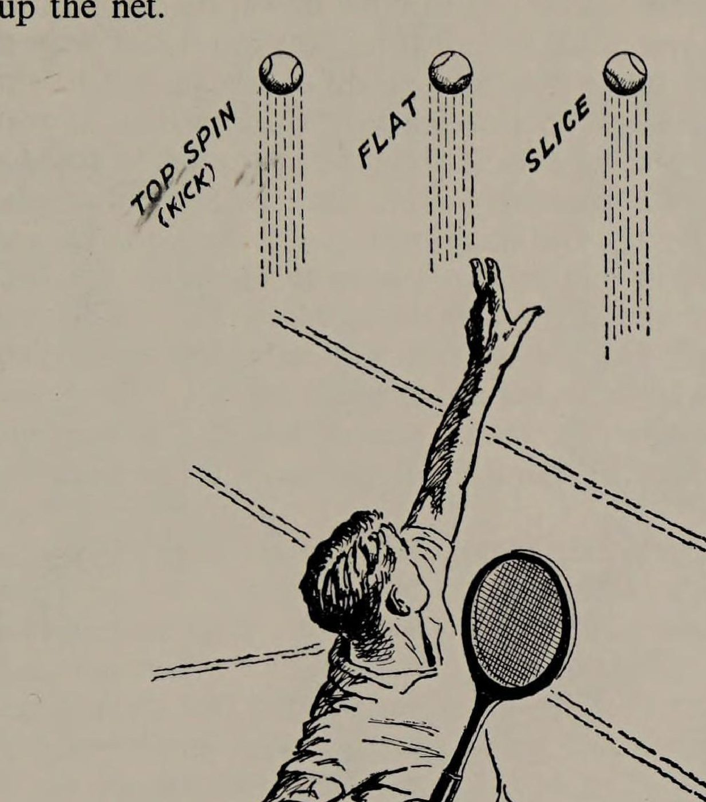
Ném bóng lên để giao bóng
Cú ném ngắn hơn luôn giúp ích rất nhiều cho sự ổn định. Không nhất thiết phải ném thấp hơn, nhưng khoảng cách từ tay bạn phải ngắn hơn. Không thả bóng xuống quá thấp mà hãy ném xa. Nếu bạn giữ quả bóng gần đầu ngón tay và ngón cái và ném cánh tay của bạn lên gần hết chiều cao trước khi thả bóng đi (để cánh tay của bạn ở đó nếu bạn muốn), bạn sẽ có được cảm giác an toàn khi có thể đặt bóng ở một khoảng cách tương đối ngắn đến mức bạn khó có thể mắc sai lầm. Nhưng đừng lạm dụng nó đến mức bạn ném quá thấp và do đó phải nhanh chóng vung vợt. Đầu của bạn nên được giữ ở vị trí của nó. Giữ nó cho đến khi bạn đánh bóng, nếu không bạn sẽ không quan sát được bóng khi tiếp xúc. Điều này không tự nhiên như bạn nghĩ. Rất nhiều người gục đầu vào những buổi chiều thứ Bảy, thậm chí còn nhiều hơn vào những buổi chiều Chủ nhật, nếu bạn hiểu ý tôi. Chân, tay và đầu vững vàng sẽ giúp ích rất nhiều trong những lúc khó khăn. Một ví dụ về thử nghiệm mà tôi nghĩ đến là có điểm ba bốn, 30-40, thực hiện một lỗi và một cơn gió thổi tới. Một trường hợp khác là có một số độ trễ sau lần giao bóng đầu tiên của bạn nhưng cuối cùng bạn không nhận được thêm hai quả nữa. Khi những sự chậm trễ này xảy ra, hãy luôn đảm bảo rằng bạn thực hiện được cú giao bóng thứ hai qua lưới, vì hầu hết các lỗi kép trong những trường hợp này đều được giao bóng vào lưới, nhiều lỗi trong số đó chạm lưới. Cuối cùng, chính sách tốt là không bao giờ sử dụng nhiều hành động hơn mức bạn cần trong bất kỳ cú đánh nào và điều này áp dụng cho các cú giao bóng thứ hai. Bạn có thể thấy những người giao bóng rất giỏi sử dụng hành động nhanh ở những cú giao bóng thứ hai chậm hơn cũng như đối với những cú giao bóng đầu tiên; lý do là họ đang áp dụng nhiều độ xoáy và phải đánh vào quả bóng thứ hai với lực tương đương, mặc dù họ không đẩy nó đi nhanh như vậy. Nếu bạn chỉ đơn thuần gửi cú giao bóng thứ hai của mình chậm hơn cú giao bóng đầu tiên, bạn nên làm chậm hành động của mình hoặc hạn chế phạm vi cú đánh của mình một chút; bạn phải luôn cảm thấy rằng bạn đang tạo áp lực lên quả bóng chứ không phải là bạn đang tránh xa nó. Bắt đầu với nhiều động tác giao bóng và sau đó rút bóng có thể mang lại cho bạn cảm giác rất yếu ở đầu gối.
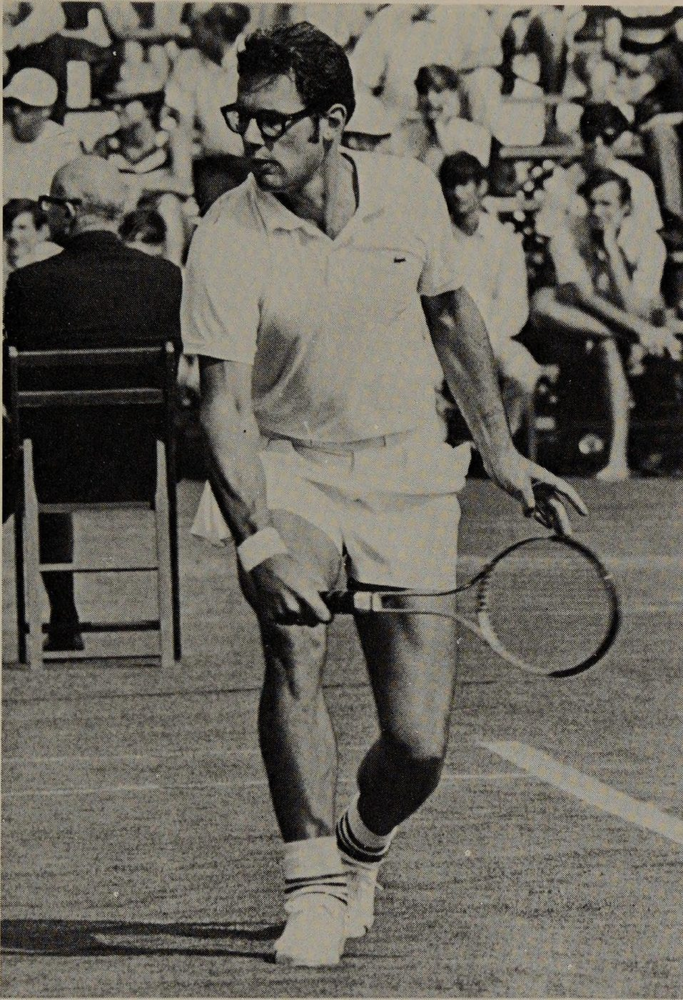
Hình ảnh của Clark Graebner cho thấy rất nhiều sức mạnh, nhưng cách cầm trái tay này rõ ràng là chưa đủ. (Xem văn bản, trang 93)
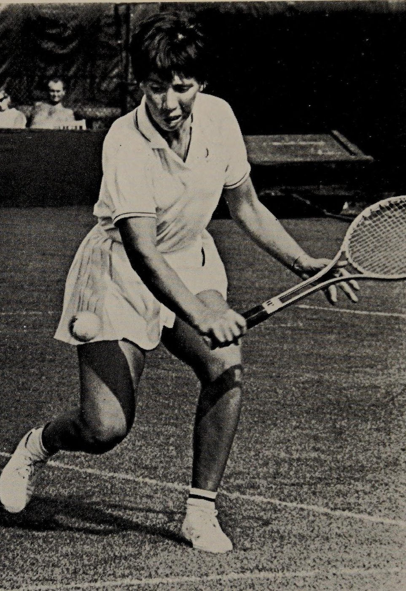
Rosemary Casals, với cổ tay được giữ thấp và xa hơn về phía sau so với trong hình của Graebner, tăng thêm độ chắc chắn cho cú đánh trái tay. (Xem văn bản, trang 93)
Điều này rất quan trọng, nhưng một lần nữa đừng lạm dụng nó, nếu không bạn sẽ đẩy bóng thay vì đánh nó. Lỗi kép phổ biến nhất xảy ra như sau: giao bóng đầu tiên, giao bóng thứ hai vào lưới. Cú giao bóng đầu tiên được đánh mạnh nhưng ở dưới tâm dây và ra ngoài, gần như tự động. Máy chủ, không biết rằng đây là lý do, cẩn thận nhắm mục tiêu thứ hai của mình xuống thấp hơn; cẩn thận, anh ta đánh vào giữa dây, và điều này cùng với mục tiêu thấp của anh ta đã đưa bóng vào lưới. Để tránh sai lầm này, hãy đánh vào giữa dây và nhắm qua lưới với quả giao bóng thứ nhất và thứ hai.
Bù đắp trong ngày chơi không tốt
Tất cả chúng ta đều có những ngày xui. Nhiều người chơi đôi khi còn đi xa hơn thế và trải qua điều mà tôi chỉ có thể gọi là một ngày bất ổn, trong đó cú giao bóng là cú đánh chịu ảnh hưởng nhiều nhất. Nếu điều này xảy ra với bạn, thì bạn có nhiều người đồng cảm hơn bạn tưởng. Vào những ngày bất ổn ấy, bạn gặp phải một lỗi giao bóng lặp lại. Bạn biết đó là một lỗi lặp lại, nhưng dường như bạn không sao vượt qua nổi. Có thể là bạn không thể tạo được lực, hoặc bạn đánh mọi cú giao bóng đầu nhanh đi ra ngoài, hoặc bạn đánh mọi cú giao bóng đầu nhanh rơi vào lưới. Nếu bạn không tạo được lực, hãy ném bóng cao hơn, uốn khuỷu tay nhiều hơn trong lúc vung vợt, xoay người nghiêng về phía lưới, và đừng xoay người trước khi bạn đã đánh trúng bóng. Như thế bạn sẽ lấy lại toàn bộ sức mạnh mà bạn từng có. Nếu mọi cú giao bóng đầu của bạn đều đi ra ngoài, bạn có thể giảm lực một chút (chỉ một chút thôi, nếu không bạn sẽ sớm trở lại với những cú vỗ bóng run rẩy), nhưng từ chương này bạn đã biết rằng cách khắc phục chính là đánh vào tâm dây. Cho dù bạn giao bóng phẳng hay giao bóng cắt, hãy nhớ cả việc đặt đầu vợt cao hơn quả bóng một chút. Các cú giao bóng, cũng như các cú đánh thẳng, là những cú đánh dài, vì vậy hãy thực hiện chúng với điểm tiếp xúc dài trên dây. Nếu mọi cú giao bóng đầu nhanh của bạn đều rơi vào lưới, hãy ném bóng cao hơn. Nếu như thế vẫn không khỏi, hãy ném bóng xa hơn về phía sau một chút.
Có một phương pháp bù đắp khác vào những ngày mà cú giao bóng của bạn cảm thấy căng và không đi qua lưới hoặc khi nó có cảm giác căng và bay ra khỏi bạn. Cách khắc phục chỉ đơn thuần là mở hoặc đóng mặt vợt. Ngón chân phù hợp với đường bay. Đứng sang một bên và giữ vợt bên cạnh chân phải của bạn. Bây giờ hãy mở mặt vợt ra một chút bằng cách xoay tay và mặt vợt hơi hướng ra ngoài sang bên phải hoặc theo chiều kim đồng hồ. Để đầu vợt của bạn mô tả cung lớn nhất có thể, bạn sẽ giao bóng. Điều này hoàn toàn trái ngược với cảm giác căng cứng. Giữ vợt của bạn xuống bằng chân phải của bạn một lần nữa. Lần này hãy nhắm mặt lại một chút. Nâng cổ tay của bạn lên và giao bóng, cảm giác như bạn đang thực hiện một cú đánh nhỏ bằng cổ tay, khác với một cú đánh lớn bằng đầu vợt của bạn, và bạn sẽ có cảm giác kiểm soát bóng theo đường cong đi xuống. Điều này hoàn toàn trái ngược với cảm giác hoang dã.
Ở đâu đó giữa hai thái cực này, bạn sẽ tìm được cách giao bóng thoải mái, ngay cả trong những ngày “không thực tế” nhất của bạn. Hãy thử nó trên sân trong thực tế và bạn sẽ có cơ chế điều chỉnh sẵn sàng cho trận đấu. Những ngày “không thực” xảy ra với những tay vợt có kinh nghiệm cũng giống như với những tay vợt trẻ. Sự khác biệt trong tác dụng của chúng là những người chơi có kinh nghiệm biết cách điều chỉnh phù hợp. Bạn sẽ không bao giờ nghe họ nói rằng họ không thể làm gì được về điều đó. Tuy nhiên, chơi rất tệ cả ngày (mà không bị đè bẹp) chỉ là thiếu kinh nghiệm; đó không phải là tính khí kém cỏi.
Khắc phục lỗi chân
Mọi người thỉnh thoảng mắc lỗi bằng chân và hầu hết các tay vợt đều mắc lỗi gần như liên tục. Người đẹp nhất từng đặt chân lên sân tennis cũng thường đặt chân lên hàng sau. Lỗi chân gây khó chịu cho tất cả những ai chú ý đến nó và nó thường khiến người giao bóng khó chịu nếu trọng tài gọi anh ta. Bằng cách nào đó, có cảm giác như thể một người đang bị buộc tội chơi không công bằng. Các quan chức đã nới lỏng các quy tắc đến mức bạn có thể làm bất cứ điều gì sai trái để bắt đầu đi bộ hoặc giẫm phải vạch. Không ai đi một quãng đường dài nhưng nhiều người lại đi một bước dài. Đó là bước đầu tiên trong cuộc dạo bộ, và do đó nó là bước đi. Bất cứ ai biết về điều này có thể ngăn chặn nó. Giẫm lên dây là rắc rối thực sự. Nếu bạn thực hiện một động tác giao bóng tràn đầy năng lượng với nhiều bước xáo trộn và bạn cẩn thận bắt đầu cách vạch khoảng nửa inch thì đã đến lúc ngừng lừa dối chính mình. Bạn cần một bàn chân—và mỗi inch của nó nữa, cũng như cho cú giao bóng thứ hai của bạn. Nếu bạn tin rằng bạn giao bóng bằng chân trước ổn định, vẫn có khả năng cao là bạn thực sự di chuyển chân trước này vài inch hoặc hơn. Lời giải thích là mặc dù một người giao bóng ổn định có tư thế thoải mái, nhưng anh ta lại thích giữ hai chân xa nhau hơn khi đánh bóng - và vì vậy anh ta đưa chân về phía trước và mắc lỗi bằng chân. Nếu anh ấy bắt đầu với hai chân dang rộng hơn, anh ấy sẽ không cảm thấy thoải mái. Vậy anh ấy phải làm gì? Một trong hai điều.
Anh ấy có thể xuất phát ở phía sau vạch khoảng 4 inch. Nếu anh ta ghét làm điều đó—và hầu hết mọi người đều làm vậy—anh ta có thể đảm nhận vị trí của mình bằng chân trước gần đường biên hơn một chút, và ngay khi anh ta ngả người ra sau để chuẩn bị giao bóng, anh ta có thể di chuyển chân sau ra sau xa hơn một chút. Nếu phương pháp sau này phù hợp với loại hành động dịch vụ của bạn, tôi thực sự khuyên bạn nên áp dụng nó. Chúng ta có thể đạt được mọi thứ bằng cách nhượng bộ một chút trước thực tế chắc chắn là tất cả chúng ta đều có xu hướng phạm lỗi bằng chân. Hãy nhượng bộ điều này trước khi bạn bắt đầu (nghĩa là, trong thời gian riêng của bạn) và bạn sẽ thấy rằng bạn hoàn toàn có thể quan sát quả bóng và dồn mọi thứ vào cú giao bóng của mình mà không bao giờ nghĩ đến việc mắc lỗi bằng chân ở giữa quả bóng hoặc bị kéo lên khi bạn đã vào được nửa lưới. Nó rất đáng giá.
Đập bóng: những yếu tố then chốt
Cú đập bóng thực sự là khẩu súng lớn của quần vợt. Người đàn ông chơi nó luôn là nhân vật thống trị vào thời điểm đó. Những người không thể đập giỏi thường ghen tị với những người có thể đập, nhưng hầu như ai cũng có thể học được môn nghệ thuật này. Ngược lại với suy nghĩ chung, bạn không cần phải có một dịch vụ mạnh mẽ để xây dựng. Bạn cũng không cần phải cao hay khỏe. Vì bạn thường có nhiều thời gian hơn để định vị bản thân nên có lẽ cần ít chiều cao và tầm với hơn khi đập bóng so với bất kỳ cú đánh nào khác. Có những quan niệm sai lầm khác về cú đập bóng, có lẽ do chính tên gọi của cú đánh. Trong thực tế, các điểm chính là (a) thời gian, nghĩa là chuẩn bị sẵn sàng để chờ ở tư thế sẵn sàng một thời gian trước khi cuối cùng đánh; (b) đánh bóng vào giữa dây; và (c) nhắm nó qua lưới—như với cú giao bóng. Một điểm quan trọng khác, tương tự như điểm đã nêu ở dịch vụ thứ hai, là bạn không nên sử dụng quá nhiều hành động. Hành động đập bóng của bạn đương nhiên sẽ giống với hành động giao bóng của bạn, nhưng đừng tưởng tượng rằng nó phải giống hệt nhau. Khi giao bóng, bạn cần phải cuộn dây khá nhiều vì bạn ở ngay cuối sân và phải tăng tốc cho quả bóng gần như đứng yên. Khi đập lốp bóng cao, rất nhiều việc lên dây cót này là không cần thiết; hành động nên được giữ ở mức tối thiểu để bạn không tạo ra những phức tạp và thiếu chính xác. Bạn không cần động tác hạ xuống và cú giật hoàn chỉnh phía sau lưng, cũng không cần đầu gối cong, lưng cong, cú đá vào đầu vợt hoặc bất cứ điều gì khác mà bạn sử dụng để có được lực phát bóng. Bạn sẽ an toàn hơn nếu không có chúng, chỉ còn những thứ cần thiết. Một thử nghiệm ngắn trên sân sẽ cho thấy rằng với ít hành động hơn, bạn có thể đạt được tốc độ từ một cú đập bóng nhiều như tốc độ từ cú giao bóng thông thường của bạn. Tóm lại: vung vợt vòng ra sau lưng để giao bóng; mang nó lên trước mặt bạn để đập vỡ.
Động tác cơ bản của cú đập
Đây là hành động cơ bản được đề xuất cho cú đập bóng của bạn trước một cú lốp bóng cao. Đưa tay trái của bạn lên về phía quả bóng. Điều này rất quan trọng vì nó khiến bạn phải xoay người và giữ bạn ở bên càng lâu càng tốt, trong khi nhiều người chơi dường như sớm ngã sang bên phải hoặc thậm chí là gục ngã trước quả bóng, thường là thảm khốc. Để cánh tay trái của bạn ở đó bao lâu tùy thích, một cách thoải mái. Cong khuỷu tay phải của bạn và giữ bàn tay phải của bạn nghiêng và sẵn sàng bằng vai phải của bạn. Hãy giữ tư thế sẵn sàng theo cách này cho đến khi bạn đánh giá được thời điểm thích hợp; sau đó, giữ chân sau của bạn trên mặt đất để giữ thăng bằng hoặc bay lên cao để gặp bóng, đánh vào mặt sau của quả bóng (không phải phần trên) vào giữa vợt— không bao giờ ở dưới tâm vợt— và đưa bóng qua lưới. Tôi muốn nhấn mạnh sai lầm khi đập lưới này. Đó là lỗi lặp đi lặp lại chính của quần vợt. Các nhà thống kê cho chúng ta biết rằng cứ mười cú đập trượt thì có hơn bảy cú đập vào lưới. Một số người sẽ coi số liệu thống kê đơn độc này là lời cảnh báo đầy đủ. Những người khác chắc chắn sẽ thích có điều gì đó kịch tính hơn: họ có thể muốn biết rằng trong hơn 80 năm qua của lịch sử quần vợt sân cỏ, hàng nghìn hàng nghìn cú đập bóng đã được đưa vào lưới, hầu như tất cả đều không cần thiết phải đánh đổi vị trí chiến thắng để lấy điểm bị mất.
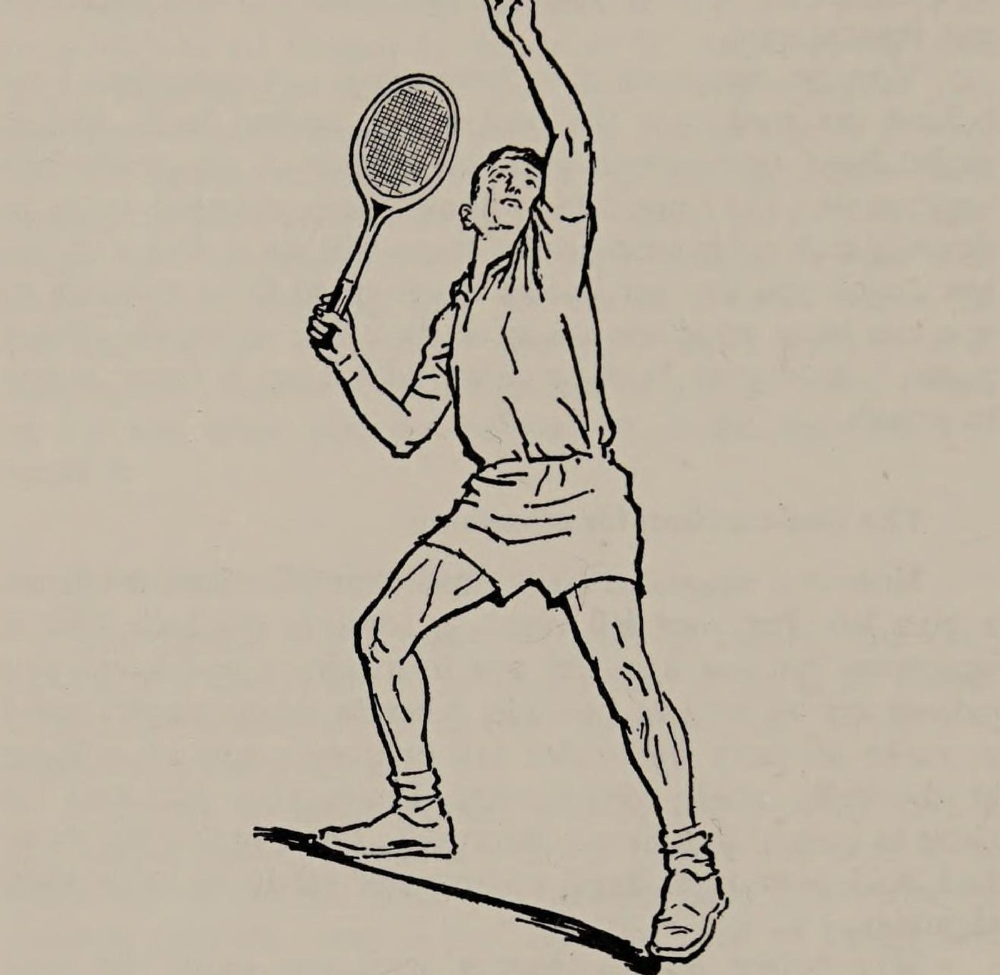
Hành động cơ bản cho cú Smash
Trong số tỷ lệ nhỏ hơn các cú đập bóng được thực hiện, thực sự rất ít cú đánh được nhắm quá cao qua lưới. Hầu như tất cả chúng đều bị đánh ở phần dưới tâm của dây. Những người đi vào hàng rào phía sau hoặc hét lên cổ vũ bằng cách đôi khi thậm chí dọn sạch toàn bộ sẽ bị đánh từ dưới cùng của dây, xuống gần khung. Nguyên nhân cơ bản của việc đánh vào khu vực nguy hiểm này nằm ở việc bạn lấy vợt về quá muộn. Bạn nên chuẩn bị sớm cho cú đập bóng của mình—sử dụng hành động tối thiểu cũng có ích ở đây—và sau đó căn thời gian cho cú đánh về phía trước sao cho không quá sớm và đưa bóng xuống lưới.
Trên không hay trên mặt đất?
Có nhiều ý kiến khác nhau về việc bạn nên đập từ mặt đất hay trên không. Một số người chơi nói rằng việc giữ chân sau trên mặt đất cho đến khi đánh bóng sẽ mang lại cho bạn nền tảng vững chắc đã đề cập trước đó và do đó mang lại cảm giác an toàn hơn trong suốt trận đấu. Những người ủng hộ không khí nói rằng khi bạn phải đợi một quả bóng chậm rơi xuống, việc tính thời gian của bạn có lẽ sẽ dễ dàng hơn và chắc chắn sẽ tích cực hơn nếu bạn đứng lên đón nó thay vì có cảm giác rằng nó đang rơi đè lên người bạn. Họ nói rằng sự cân bằng có thể được điều chỉnh tốt hơn khi bạn ở trên không so với khi bạn neo trên mặt đất, và vì dù sao thì bạn cũng buộc phải thực hiện nhiều cú va chạm khỏi mặt đất nên tốt hơn nên coi đây là phương pháp bình thường của bạn. Cá nhân tôi khuyên bạn nên luôn bay lên không trung, lập luận quyết định là nó mang lại cho bạn thời gian tích cực hơn. Mặc dù đây chỉ là sở thích nhưng tôi có thể đưa ra quan điểm rõ ràng rằng bay lên không phải là kỹ thuật không an toàn. Nó cũng không hào nhoáng, thông minh hay phô trương chút nào. Các tay vợt trẻ nhút nhát xin lưu ý. Có lẽ bạn không thích ý tưởng đánh vào phía sau quả bóng vì nó ở độ cao đến mức bạn cảm thấy mình có thể dễ dàng đánh nó ra ngoài. Chà, tôi cho rằng bạn sẽ đồng ý rằng bạn không thể chạm vào đỉnh của nó, nếu không nó sẽ rơi xuống chân bạn. Có lẽ bạn không thực sự đánh vào phía sau vợt vì trong một cú đập, mặt vợt của bạn có xu hướng chạm bóng. Tương tự như vậy, khi bạn ghi nhớ tất cả những cú đập bóng đã đi vào lưới trên toàn thế giới trong nhiều năm qua, bạn sẽ không tệ khi nhắm vào phía sau. Nếu cú lốp bóng rất sâu, bạn sẽ thấy rằng, nếu có, bạn thậm chí phải nhắm vào phía dưới lưng quả bóng một chút để đưa nó qua lưới và đưa nó đủ sâu.
Đập mạnh đến mức nào
Bạn nên bắn khẩu súng lớn này mạnh đến mức nào? Khó như bạn muốn, miễn là bạn không bao giờ bỏ lỡ nó. Trừ khi bạn mất thăng bằng, đừng đập nhẹ nhàng. Sẽ không an toàn hơn nếu nhẹ nhàng với nó; đúng hơn là nó có thể kém an toàn hơn vì '''lắc lư'' và nó khiến đối thủ của bạn tin tưởng rằng bạn không thể tung ra ngay cả những cú lốp bóng của anh ta. Mặt khác, đừng đập mạnh đến mức bạn có cơ hội trượt dù là nhỏ nhất. Lấy đánh đôi làm minh họa rõ nhất, khi một bên đập bóng và bên kia lốp bóng, bên đập bóng sẽ thắng trong mọi pha giao bóng như vậy. Hơn bất kỳ tình huống nào khác mà tôi có thể nghĩ ra, họ không bao giờ được cho những người khác cơ hội thoát khỏi câu bóng — và thực hiện một cú lốp bóng tốt để bạn không thể chắc chắn rằng mình sẽ đưa nó vào sân là phải làm chính xác điều đó. Đập tan mọi cú lốp bóng tốt mà bạn có được với tốc độ khoảng 3/4 sâu về phía trái tay của ai đó và di chuyển trở lại phía sau nó. Bạn sẽ không nhận được nhiều cú lốp bóng tốt liên tiếp, vì vậy không có nghĩa là bạn phải rèn luyện nhiều kiên nhẫn. Cuối cùng, đối thủ của bạn sẽ ném ra hoặc bán khống. Khi một cái ngắn xuất hiện, tôi nghĩ đập mạnh vào nó sẽ an toàn hơn là bẻ góc hoặc đánh rơi nó. Nếu nó quá ngắn đến mức bạn không thể đánh nó vào lưới và bạn cảm thấy khỏe mạnh, thì cách xử lý là thử ném nó qua hàng rào phía sau. Flash? Không. Nó đòi hỏi sự tập trung và độ chính xác, và đó chính là những gì bạn cần đối với những cú đánh vừa dễ vừa dễ bị trượt. Theo nguyên tắc chung, đừng để bóng nảy lên. Có thể có những trường hợp ngoại lệ chẳng hạn như một cú lốp bóng ngắn rất cao, gần như thẳng đứng, gió mạnh hoặc quần vợt ban đêm, nhưng thông thường, việc cho phép bóng bật lên là không tốt về mặt chiến thuật. Nó làm mất đi vị trí tốt mà bạn đã có và có thể đẩy bạn lùi xa đến mức bạn có thể cần phải giành chiến thắng chỉ trong một cú đánh. Chính sách đúng đắn là thực hiện cú lốp bóng một cách nhanh chóng. Một cú đập gần như luôn được thực hiện đối với một quả bóng dễ dàng. Khi bạn đã cảm nhận được điều đó, bất cứ lúc nào bạn muốn tập trung đánh vào trung lộ và đưa bóng qua lưới bạn có thể đi cả buổi chiều mà không bỏ lỡ một trận nào. Điều này đủ tiện dụng trong đánh đơn; trong các trận đấu đôi, nơi diễn ra nhiều pha ném bóng hơn, đó là tiền trong ngân hàng.
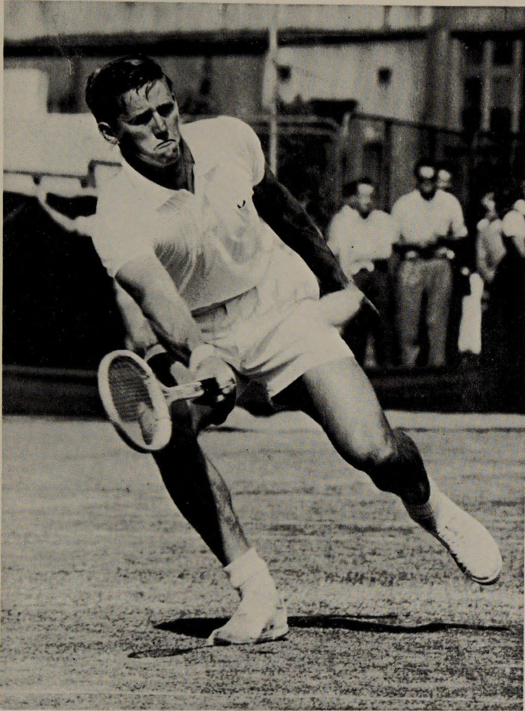
Emerson chặn được cú vô lê thuận tay một cách chắc chắn bằng cách sử dụng kiểu cầm vợt Continental. (Xem văn bản, trang 99)
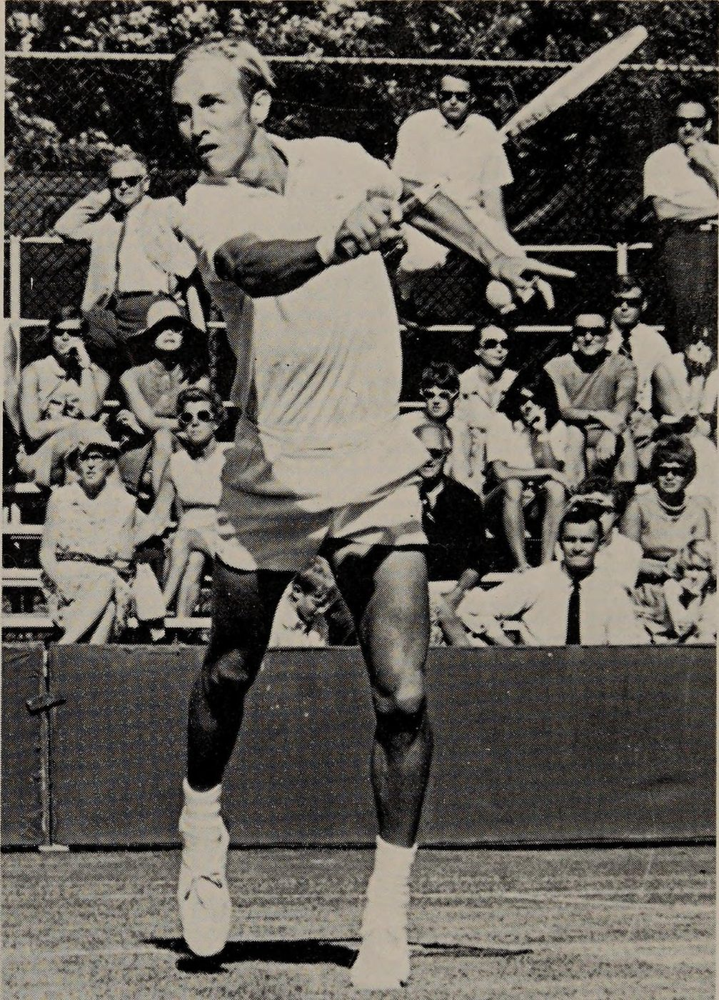
Dù nghiêng ngang nhưng Stan Smith vẫn tung ra cú vô lê trái tay. (Xem văn bản, trang 99)
Những cú đánh nền hiệu quả
Effective ground strokes
Để có kết quả tốt nhất, các cú đánh nền hiện đại cần được xây dựng trên các cú đánh phẳng hoặc hơi lăn, với nhiều xoáy lên hơn để tạo góc hoặc nhúng và chỉ cắt lát để kiểm soát khi cần thiết. Họ cũng nên dựa trên việc lấy bóng ngay sau khi kết thúc cú nảy và sớm hơn nếu cần thiết. Lý do - bất kể người chơi được dạy nó sớm hay học nó qua thất bại và kinh nghiệm - là lưới là nơi phù hợp nếu có thể giành được nó sau bất kỳ cú đánh nào gây khó khăn cho đối thủ của họ. Những cú giao bóng của nhà vô địch tốt đến mức anh ấy có thể vào lưới mọi cú giao bóng. Bằng mọi giá, anh ta phải tránh những cú giao bóng quá yếu để có thể theo kịp - nếu không anh ta sẽ ngay lập tức mất vị trí ròng vào tay người nhận cầu, người sẽ theo sau sau khi anh ta trả lại quả giao bóng. Nhà vô địch không thể để điều này xảy ra. Phần lớn những người còn lại hoặc đến sau một quả giao bóng tốt hoặc rất nhanh sau đó, hoặc chúng ta lơ lửng như những con diều hâu cảnh giác chờ đợi quả giao bóng ngắn đầu tiên đáp lại một cách vụng về và sau đó làm theo nó. Chỉ có hai nhóm người không nên vào lưới trong mọi cơ hội là những người còn rất trẻ, quá nhỏ để che lưới và cổ tay không đủ khỏe để thực hiện cú vô lê đúng cách, và những người rất già, những người mà việc căng cơ và hậu quả là suy yếu có thể khiến nó trở thành một chiến lược thua cuộc. Đúng là ở các thị trấn nông thôn, bạn vẫn thường thấy các tay vợt đứng ở vạch cuối sân khi lưới là của họ. Chỉ khi những người chơi này thực sự có những cú đánh mặt đất rất tốt, bao gồm cả việc kiểm soát các góc và sự thay đổi tốc độ, họ mới gây rắc rối nghiêm trọng cho du khách thành phố khi tham dự các giải đấu địa phương của họ. Đối với tất cả các kiểu chơi trên lưới này, các cú đánh nền dựa trên các cú đánh xoáy xuống sẽ không hiệu quả; Ngày nay, cũng không có lý do gì để người chơi xây dựng các cú đánh mặt đất của mình dựa trên chúng. Những quả bóng tennis hiện đại chịu mài mòn tốt và giữ đủ trọng lượng cho những cú đánh phẳng hoặc hơi lăn trở thành tiêu chuẩn thay vì tham vọng.
Hạn chế của xoáy lên
Topspin nặng là một vũ khí tuyệt vời để chống lại những người chơi trên lưới, nhưng không nên coi đó là nền tảng cho những cú đánh trên mặt đất của bạn. Nó quá mệt mỏi và theo nguyên tắc chung là không tốt cho chiều sâu. Mặc dù nó thường làm cho quả bóng rơi vào trong khi nếu không thì nó sẽ bay ra ngoài và điều này dường như tương đương với độ sâu, nhưng suy nghĩ trong giây lát sẽ cho bạn thấy rằng bạn càng đặt quả bóng xoáy nhiều thì bạn càng ít chắc chắn về vị trí chính xác của nó. Tất nhiên, tốt hơn hết là bạn nên dành năm phút để thử nghiệm trên sân, nơi mà tôi nghĩ bạn sẽ thấy rằng khi cần độ sâu thì một cú đánh phẳng hơn là lựa chọn phù hợp để sử dụng.
Sự thiếu hiệu quả của xoáy ngược
Những cú đánh xoáy xuống—đặc biệt là những cú cắt nhẹ và cắt bóng nhiều, nhưng cũng có những cú cắt xoáy nhẹ dài hơn— đều không đủ tốt để chống lại một người đánh lưới. Các vết cắt có ít lực, các miếng cắt treo trong không khí quá lâu và các lát cắt di chuyển ở độ cao ổn định mà không bị rơi nhiều. Những yếu tố này khiến tất cả chúng đều dễ dàng thực hiện cú vô lê trừ khi chúng là những cú đánh được kiểm soát hoàn hảo và chúng rất khó vượt qua người cầm lưới mà không đi qua đường biên. Tuy nhiên, khi đối thủ của bạn ở trên đường cuối sân, chúng có thể là những cú đánh hữu ích. Chúng ổn định, có lẽ chúng tốn ít nỗ lực hơn để thực hiện với những quả bóng cao và rất thấp so với bất kỳ cú đánh nào khác. Cú xoay người tự nhiên của họ có thể được sử dụng để vung rộng về phía đường biên và khi các cú đánh tiếp cận lưới, nơi chúng thường được gọi là cú đánh chip, chúng có thể cung cấp thêm
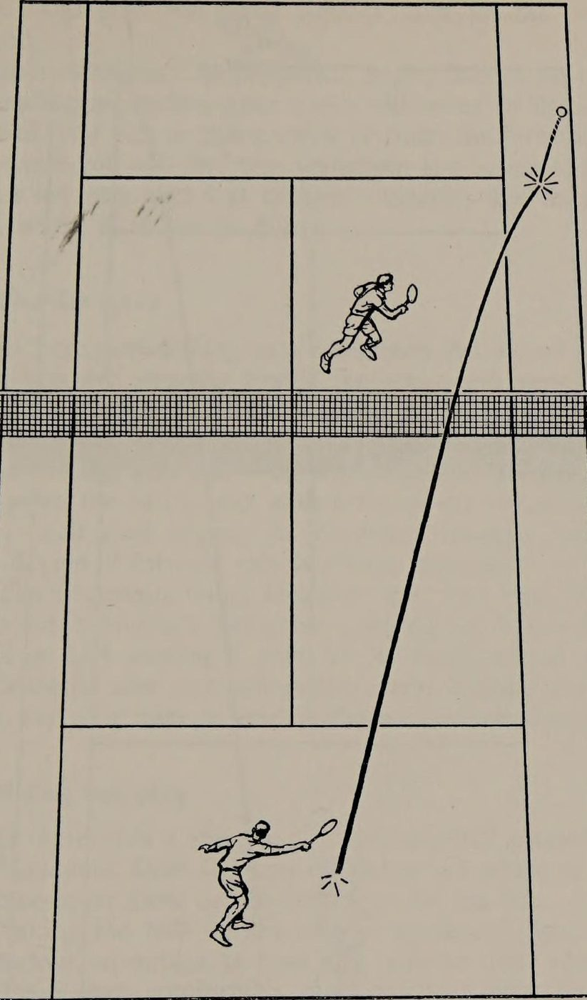
Cú đánh xoáy xuống đối với người chơi trên lưới
Nếu bóng vượt qua tay vợt lưới, bóng có khả năng sẽ vượt qua đường biên ngang, đặc biệt khi, như được minh họa, bóng bị va chạm một chút vào bên trong và do đó có xu hướng lệch ra ngoài. Những lần suýt trượt xảy ra ít do xui xẻo hơn là do tỷ lệ cược chống lại những cú đánh này.
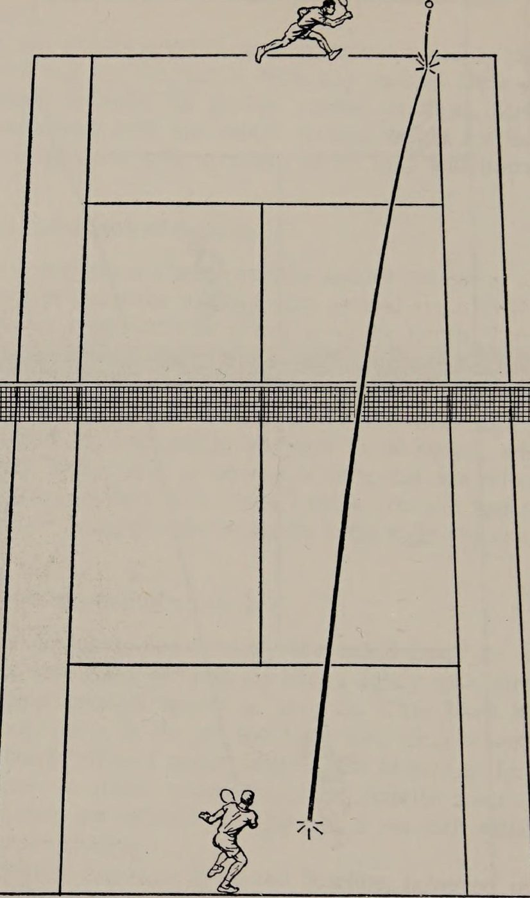
Cú đánh xoáy xuống đối với tay vợt đánh từ cuối sân
Độ sâu đạt được mà không tốn nhiều công sức. Cú xoáy có được bằng cách đánh vào trong bóng sẽ đưa cú đánh vào tầm với của một tay vợt trên lưới, nhưng đối với một tay vợt ở đường cuối sân, nó làm cho cú đánh xuyên hơn.
Kiểm soát và cho bạn thêm thời gian để chiếm vị trí lưới tốt nhất. Spin không nên bỏ qua. Nếu bạn không thể đánh được các cú đánh xoáy lên và xoáy xuống, lối chơi của bạn sẽ không bao giờ linh hoạt. Tuy nhiên, nếu bạn đặt mục tiêu biến một trong hai điều đó thành nền tảng cho môn quần vợt của mình, bạn sẽ thấy rằng xoáy xuống là một kỹ thuật thua khi chơi trên lưới và xoáy lên quá mức đó, giống như đứa trẻ của Thứ Bảy, hoặc khó kiếm sống.
Cú đánh thẳng phẳng
Có thứ gọi là cú đánh thẳng phẳng hoàn toàn không? Khắc nghiệt. Khi đứng bên cạnh sân, bạn rất hiếm khi nhìn thấy một quả bóng có nhãn hiệu trên đó hướng thẳng về phía bạn trong suốt đường bay của quả bóng. Từ một cú đánh thẳng phẳng, nó luôn quay về phía trước, ngay cả khi chậm. Lý do là ngay cả khi bóng gặp mặt vợt vuông vắn, bản thân vợt vẫn hơi nâng lên theo đường bóng, và do đó luôn tạo ra một mức độ xoáy về phía trước nào đó. Tuy nhiên, điều quan trọng là ở cảm giác. Bạn có thể cảm thấy mình đang đánh một cú drive phẳng, nhấn quả bóng càng phẳng càng tốt và đưa nó sâu đến đường cuối sân, cũng giống như bạn có thể cảm thấy rõ ràng mình đang đặt một số cú lăn nhất định vào nó khi, chẳng hạn, bạn muốn đưa nó ngắn hơn và chéo sân.
Chơi bóng đang lên
Có thứ gì gọi là một tay vợt bóng đang nổi thực sự không? Chỉ có trong bóng bàn. Ngay cả những nghệ sĩ đánh bóng giỏi nhất trong quần vợt vẫn thực hiện nhiều cú đánh khi bóng đang rơi hơn là khi bóng đang lên. Việc đánh bóng ngay khi bóng đang lên khi cần thiết sẽ mang lại cho bạn lợi thế to lớn về thời gian và vị trí, đồng thời khi bạn thực hiện những cú đánh này một cách thoải mái, chúng sẽ có vẻ đẳng cấp. Cố gắng cầm bóng liên tục sẽ tạo ra một số tác dụng ngược. Không có sự thay đổi nào về thời gian cộng thêm mà bạn đạt được để đối thủ của bạn quen với nó; bạn mắc phải những lỗi không đáng có; bạn tham gia vào nhiều cú đánh thực sự ở đâu đó giữa một cú vô lê nửa cú và một cú đánh bóng lên bình thường; cuối cùng, bạn cứ vụng về mò mẫm trong những lúc lẽ ra phải ra đòn quyết định tượng của bạn, bạn trông giống một người đàn ông hoàn toàn không có thuận tay và đang chạy đua hơn là đánh thẳng. Đừng lạm dụng nó. Ngay cả ngựa đua cũng không phải lúc nào cũng chạy đua. Nếu tôi phải chọn một cú đánh trong môn cricket phải là nền tảng trong môn quần vợt của người đánh bóng thì đó sẽ là cú đánh thẳng vào một quả bóng dài. Nếu sự lựa chọn hạn hẹp tương tự buộc tôi phải đối mặt trong môn quần vợt, tôi sẽ nói rằng cú đánh cơ bản là cú thuận tay hơi lăn* được thực hiện ngay sau đỉnh của cú nảy. Nhưng đừng chỉ giới hạn môn quần vợt đánh mặt đất của bạn ở điều này. Nếu tất cả người chơi quần vợt chỉ giới hạn mình trong một cú đánh cơ bản thì sẽ không còn người chơi như Arthur Ashe nữa, và trận đấu sẽ kết thúc sau một mùa giải— một cách xứng đáng. Cho đến nay chúng ta đã nói về lý tưởng. Bây giờ là lúc để xem xét lại bản chất của chúng ta, xem xét những sai sót trong quá trình sản xuất cú đánh và xem xét các biện pháp khắc phục phù hợp. Có rất nhiều người chơi câu lạc bộ giỏi có một trận đấu tốt trên toàn sân và dường như có tất cả các cú đánh. Họ chơi một môn quần vợt chọn vị trí tốt và khó bị đánh bại. Tuy nhiên, trên thực tế, họ có những cú thuận tay tương đối kém và không phù hợp với phần còn lại của trận đấu. Đối với kiểu người chơi này, cuộc thảo luận thuận tay sau đây được đề cập đặc biệt. Những người chơi giỏi với những cú thuận tay kém luôn có cú đánh thuận tay tự nhiên có xu hướng đưa bóng đi quá cao. Để giữ bóng trong sân khi gặp áp lực, họ chơi những cú thuận tay ngày càng nhẹ nhàng hơn. Trước tiên, chúng ta sẽ thảo luận về một số nguyên nhân trực tiếp của xu hướng hướng lên sẵn có này và các biện pháp khắc phục khả thi—bất kỳ nguyên nhân nào trong số đó có thể phù hợp với trường hợp của bạn—sau đó tiếp theo là một số lỗi thuận tay phổ biến. * Có lẽ nó sẽ giúp ích cho một số người chơi nếu họ coi đây là chuyển động xoáy về phía trước, khác biệt với hành động lên xuống của xoáy lên. Đó là một cú đánh đa năng hơn bao giờ hết.
Giữ cú thuận tay thấp
Cú đánh lùi sớm. Bắt đầu động tác vung vợt ra sau quá muộn là một trong những nguyên nhân trực tiếp dẫn đến cú thuận tay có quỹ đạo cao. Vợt đi vòng theo một vòng vội vã và thường đi lên khi gặp bóng. Đó là một cách thực hành hợp lý để lấy vợt của bạn trở lại thời điểm bộ não của bạn ghi nhận quả bóng đang hướng về phía nào. Lấy ví dụ, chơi một quả bóng rộng và chậm. Vợt của bạn phải ở phía sau bạn khi bạn di chuyển qua, chờ để vung về phía trước. Bạn không nên di chuyển mang theo vợt trước mặt và bắt đầu vung vợt sau khi đến nơi. Lời khuyên cũ để lấy lại vợt sớm áp dụng cho cả người chơi ở trình độ cao cũng như người mới bắt đầu. Khi bạn chơi trên sân nơi bóng nảy cao hơn bình thường, hãy thực hiện cú đánh ngược sớm này cao hơn một chút, nhưng không quá cao đến mức nó sẽ biến cú đánh của bạn thành một lát cắt. Giữ vững hông trái. Xoay người về phía trước trước khi tiếp xúc cũng khiến bóng đi cao hơn dự định. Nó khiến bạn đưa cổ tay của mình qua phía trước vợt, từ đó có xu hướng mở mặt vợt và đưa bóng lên. Một khía cạnh đáng tiếc của thói quen xoay người trước khi đánh bóng là nếu bạn không biết mình đang làm điều đó thì bạn càng cố gắng chơi tốt thì bạn càng có nhiều khả năng xoay người. Biện pháp khắc phục là giữ cho hông trái cứng nhắc, vì vậy hãy nghiêng người về phía bóng và làm cho đường vợt của bạn di chuyển từ hông này sang hông khác. Bạn có thể bắt đầu bằng cách đưa tay trái về phía quả bóng, như chúng ta đã thảo luận trong phần gợi ý hành động đập bóng. Phối hợp trọng lượng. Rõ ràng là nếu bạn nghiêng người về phía sau thay vì về phía trước khi đánh bóng thì bạn sẽ đánh nó lên. Điều này, giống như việc xoay người trước khi đánh, khiến cánh tay của bạn mất đi sự hỗ trợ của trọng lượng. Một số độc giả có thể chưa bao giờ sử dụng trọng lượng của mình; những người khác có thể tạm thời mất đi khả năng làm việc đó tự nhiên và có thể không biết điều gì sai. Đây là một cách tốt để có được sự phối hợp cân nặng, cho dù bạn chưa từng có hay đã tạm thời giảm cân. Đứng gần vạch cuối sân, hãy nhờ người bạn đang tập cùng đứng lên lưới và đánh cho bạn một loạt cú ngắn. Với rất ít động tác vung vợt về phía sau và chỉ dùng một vợt phẳng, hãy chạy về phía trước vào từng vị trí này và thực hiện hoặc đưa bóng thẳng về phía sau, theo sát lưới sau mỗi lần thực hiện. Chỉ cần đưa bóng qua lưới. Tiếp theo, nhờ bạn của bạn đánh chúng sâu hơn một chút để bạn chỉ cần thực hiện một vài bước về phía trước để tiếp cận quả bóng. Thực hiện động tác vung vợt lùi lâu hơn một chút và đừng bận tâm theo sát lưới. Sau đó yêu cầu anh ta đánh ngày càng sâu hơn cho đến khi cuối cùng bạn chơi từ phía sau sân, sử dụng động tác vung vợt về phía sau dài hơn và không chạy về phía bóng mà dồn trọng lượng của bạn về phía trước một cách tự nhiên với mỗi cú đánh bạn đánh. Đừng bao giờ lo lắng về việc bạn bắt đầu thuận tay bằng chân trái hay chân phải; nhưng nếu bạn hoàn thành nó mà trọng lượng vẫn ở chân phải thì bạn nên lo lắng. Trung tâm vợt. Một nguyên nhân chung nữa của việc đưa bóng đi quá cao là kẻ thù cũ của chúng ta, đánh bóng ở phía dưới tâm vợt - tức là hướng xuống cổ họng. Với những nét vẽ trên cao, tôi hy vọng cuộc thảo luận đủ dễ dàng để theo dõi. Với các cú đánh “ngang”’ chẳng hạn như cú thuận tay trong đó vợt nằm ngang (nghĩa là đầu vợt ngang tầm với cổ tay), tôi khuyên bạn nên tự mình thử nghiệm, nhưng đây là cách mà tôi nghĩ bạn sẽ tìm thấy. Đánh vào giữa vợt, và bên cạnh việc đảm bảo lực, bóng có xu hướng bay ở độ cao mong muốn. Đánh cao hơn tâm một chút về phía trên cùng của vợt (cách xa cổ vợt), và sức mạnh đương nhiên giảm đi một chút, nhưng không nhất thiết phải kiểm soát. Đúng là bóng di chuyển thấp hơn một chút so với dự định của bạn, nhưng miễn là bạn đưa nó qua lưới thì đây là một giới hạn an toàn bổ sung khá đáng chú ý và có thể hữu ích nhất khi bạn đang cố gắng thoát khỏi rắc rối từ một vị trí khó xử. Nếu điều này có vẻ hơi liên quan thì đừng theo đuổi nó. Hãy để tôi nhấn mạnh điểm thực sự của vấn đề: khi bạn đánh thấp hơn tâm thì bóng sẽ cao hơn mục tiêu của bạn. Lời giải thích duy nhất mà tôi có thể đưa ra cho điều này là đầu vợt chưa có thời gian để di chuyển đến vị trí chính xác để đưa bóng đến nơi bạn nhắm đến, tức là hướng về phía trước và thấp. Chuyển tiếp theo dõi. Mặc dù vợt của bạn nằm ngang chính xác khi tiếp xúc, bóng có thể vô tình bị nâng lên trên nếu cú xoay tự nhiên của bạn hơi quá tròn và bạn đánh bóng quá muộn một chút trong phần dâng lên của cú vung về phía trước. Biện pháp khắc phục rõ ràng ở đây là thực hiện một cú đánh phẳng hơn, vì vậy bằng mọi cách hãy thử điều này. Nếu cảm thấy thoải mái, những lo lắng của bạn sẽ kết thúc. Tuy nhiên, bạn có thể quá tập trung vào cú xoay vòng tròn tự nhiên của mình đến mức cú đánh mới sẽ có cảm giác giả tạo và không đáng tin cậy—và yếu ớt, như thể bạn đang đẩy bóng. Nếu vậy, bạn có thể giữ lại cú xoay tự nhiên của mình và do đó có thể di chuyển nhanh chóng và theo bản năng hơn bao giờ hết, chỉ sửa đổi nó khi vợt của bạn gặp bóng bằng cách đưa đầu vợt chắc chắn ra phía trước bạn thay vì để nó bay lên quá mạnh. Điều này cũng có thể ảnh hưởng đến việc bạn không nên để đầu mình lộ ra quá sớm. Nhằm vào lưới. Cuối cùng, có lẽ bạn là một tay vợt có cú thuận tay tốt khi chơi từ bóng thấp hoặc thả bóng nhưng lại kém khi chơi bóng cao. Bạn tự tin đánh bóng chỉ từ độ cao dưới lưới và không thể tin được khi được bảo rằng quả bóng cao ngang thắt lưng phải là quả dễ nhất vì nó chỉ cần đánh thẳng qua lưới. Điều này đơn giản có nghĩa là cú đánh tự nhiên của bạn được thực hiện với động tác nâng theo sau. Trước đây, bạn đã phát hiện ra rằng khi chơi bóng ở độ cao hoặc cao hơn lưới, bạn đã nâng chúng quá cao so với lưới và quá đường biên ngang, và kết quả là bạn đã chuyển sang một hành động khác để chơi bóng cao. Hành động này có lẽ đi xuống nhiều hơn, và có lẽ thỉnh thoảng một dấu vết của lát cắt không mong muốn thỉnh thoảng len lỏi vào nó; trong mọi trường hợp, nó chưa bao giờ trở nên tự nhiên đối với bạn như động tác nâng mà bạn sử dụng rất tốt với những quả bóng thấp. Nếu những trường hợp này áp dụng cho bạn và bạn cảm thấy đã quá muộn trong cuộc đời quần vợt của mình để thay đổi cơ bản, bạn nên thử chơi theo động tác nâng tự nhiên của mình trên những quả bóng ở mọi độ cao. Đối với những quả bóng cao hoặc cao hơn lưới, bạn sẽ phải đặt mình vào tư thế như thể bạn đang đánh bóng vào lưới, sau đó nhấc bóng lên để phá bóng. Những trường hợp kỳ lạ mời gọi những phương thuốc kỳ lạ. Tuy nhiên, hãy cho mình một cơ hội. Bắt đầu với những quả bóng thấp và tăng dần lên những quả bóng cao và bạn có thể đã tìm thấy câu trả lời.
Những lỗi thường gặp
Khi xử lý các lỗi chi tiết, cách tốt nhất có thể là mô tả âm thanh trái tay và sau đó đối chiếu nó với cú thuận tay. Điều này có thể đơn giản hóa việc tự phê bình. Về mặt trái tay, người chơi tưởng tượng của chúng ta có cảm giác kiểm soát các ngón tay của mình, bất kể cách cầm của anh ta được gọi về mặt kỹ thuật là gì. Anh ta lấy vợt về sớm. Động tác bằng chân hoặc xoay hông của anh ấy đều tốt - trong mọi trường hợp, anh ấy luôn nhận được quả bóng đến bên cạnh mình một cách dễ dàng, giúp anh ấy có nhiều thời gian hơn để hấp thụ tốc độ của nó so với khi anh ấy đứng thẳng và vội vàng đánh nó ở đâu đó trước mặt. Với cánh tay thẳng, giữ cổ tay ở mức thấp, anh ta đưa đầu vợt vòng quanh cổ tay ra ngoài và phía trên quả bóng. Điều này giống như thể anh ta đã giữ quả bóng bị mắc kẹt giữa vợt và mình, nơi nó không thể thoát ra được cho đến khi anh ta đưa nó đi trên đường đi của nó, nới lỏng đầu gối hơi cong của anh ta để lấy trọng lượng và sức mạnh. Anh ấy có vẻ mịn màng như một con báo. Thật tiếc là chúng ta cũng phải nhìn vào phía thuận tay của anh ấy. Ở phía bên phải, người chơi của chúng tôi đánh mạnh tay cầm vợt vào sâu trong nắm tay của anh ta. Anh ta không chỉ căng khi vung về phía trước mà còn căng tương tự, cũng như bị trễ trong lần vung vợt sau trước đó. Anh ta không cúi đầu xuống bóng như khi thực hiện cú đánh trái tay, do đó anh ta không nhìn thấy bóng sau khi nó cách dây của anh ta khoảng 3 feet. Đầu gối của anh ấy thẳng khi anh ấy đánh bóng, mặc dù anh ấy vô tình sử dụng chúng rất tốt để lốp bóng, đó là cú đánh tốt nhất của anh ấy ở phía thuận tay. Đã quen với việc xoay người sang ngang với bóng khi chơi trái tay, anh ấy không thực hiện nhiều cú xoay người ở cú thuận tay. Để bù đắp cho việc thiếu lượt quay mà vẫn gặp bóng thẳng, anh ta phải đẩy cổ tay về phía trước; điều này có xu hướng khiến anh ta đánh bóng ở phía dưới tâm vợt và bóng bay lên trên. Anh ta thấy mình ngày càng sử dụng nhiều xoáy lên hơn để hạ những quả bóng mà anh ta không bao giờ có ý định đưa lên cao. Cánh tay của anh ấy bị cong khi đánh bóng, vai phải của anh ấy khom xuống, cú đánh của anh ấy bị chuột rút
Nếu một bên người chơi tưởng tượng của chúng ta trông giống một con báo thì mặt khác tôi đã làm cho anh ta trông giống như một kẻ què quặt. Tất nhiên, không ai có thể giống như vậy, nhưng những người chơi giỏi nhưng có cú thuận tay không tốt luôn mắc một số lỗi được mô tả. Tôi không đề nghị bạn nên tạo gánh nặng cho mình khi nhận thức được mọi lỗi lầm mà tôi đã phạm phải. Tất cả những gì bạn đang tìm kiếm là một điều đặc biệt áp dụng cho bạn và đang ngăn cản cú thuận tay của bạn phát huy hiệu quả. Hãy để tôi nhắc bạn rằng điều này được viết ra để giúp những người chơi có cú thuận tay kém. Xin đừng nhầm lẫn điều này với một cú thuận tay được thực hiện kém theo cách này hay cách khác. Nếu bạn có một cú thuận tay mắc bất kỳ lỗi nào mà tôi đã mô tả nhưng vẫn hiệu quả nhất, bạn có thể thử cải thiện nó hơn nữa, nhưng bạn không được làm hỏng nó. Không phải trong bất kỳ trường hợp nào.
Tay vợt đã thử mọi cách
Có một người trong nhóm những tay vợt giỏi toàn diện nhưng có những cú thuận tay kém mà tôi rất muốn giúp đỡ. Anh ấy là tay vợt đã thử mọi phương pháp chữa trị. Mỗi tuần anh ấy lại nảy ra một ý tưởng mới. Anh ấy thử nó và nó hoạt động, nhưng sau đó lại xảy ra sự cố. Vào thời điểm này, anh ấy hoàn toàn bối rối và đi đến kết luận rằng cú thuận tay là cú đánh mà anh ấy sẽ không bao giờ thành thạo. Anh ta cũng sẽ không làm chủ được nó nếu cứ thêm vào và bớt đi từng mảnh một. Có lẽ đã nhiều năm rồi anh ấy mới thực hiện một chuyển động tự nhiên trong cú đánh này. Tuy nhiên, đến bây giờ nó hoàn toàn là tổng hợp và nhân tạo. Tuy nhiên, anh ấy nên lấy hết can đảm, bởi vì nếu anh ấy có khả năng thực hiện tất cả các cú đánh khác trong quần vợt thì anh ấy phải có khả năng thực hiện được cú đánh này. Anh ta phải xáo bài và thực hiện một thỏa thuận mới. Anh ta nên chọn khoảng thời gian không có trận đấu nào sắp diễn ra; lấy một vợt hoặc dây vợt mới; đến sân với một người bạn và đánh mọi quả bóng, thuận tay và tất cả, mạnh nhất có thể. Đánh mạnh nhất vào anh ta phải buộc anh ta phải tự nhiên. Bằng cách chơi theo cách này nhiều lần và không bận tâm đến việc ghi bàn, cú thuận tay chính xác hoặc bản năng của anh ấy sẽ được sinh ra. Làm dịu nó lại một chút để có khả năng kiểm soát tốt, sau đó anh ta nên quên đi những phương pháp trước đây mà anh ta đã thử từng là một phần trong môn quần vợt của mình. Đây là điều cấp tiến – được khuyến khích cho những ai cảm thấy họ đã thành công trong việc xây dựng được thứ mà họ không thể để mất.
Động tác cổ tay ở cú thuận tay
Nhiều người chơi không chắc chắn về động tác cổ tay thuận tay mà họ nên áp dụng. Ở cú đánh trái tay, cổ tay tự động duỗi ra một cách tự nhiên, nhưng với cú thuận tay của họ, một số người chơi không bao giờ biết từ tuần này sang tuần khác nếu họ sử dụng quá nhiều hay quá ít. Trong số các nhà vô địch, một số được mô tả là có cổ tay chắc chắn, những người khác có động tác cổ tay tự do đẹp mắt. Đồng thời, các cú đánh thuận tay tương đương của những tay vợt kém nổi bật hơn lần lượt được mô tả là cứng đờ như thanh cời, hoặc bật cổ tay, hoặc lắc lư cổ tay. Câu hỏi đặt ra là, sự khác biệt nằm ở đâu và trong khi chúng ta đang tìm hiểu thì nên sử dụng bao nhiêu cổ tay? Hãy lấy vợt của bạn ra. Đứng nghiêng về phía lưới tưởng tượng và rút vợt về phía sau cho đến khi nó thẳng hàng với vai của bạn. Giữ thẳng cổ tay và khuỷu tay, đồng thời đưa cánh tay từ từ vòng tròn thẳng như một thanh sắt. Đó chính là ý nghĩa của từ cứng rắn như một ván bài poker. Đưa cánh tay của bạn trở lại chính xác như trước và lần này thư giãn khuỷu tay của bạn một chút khi bạn đưa cánh tay về phía trước. Sự khác biệt nằm ở khuỷu tay nhiều hơn là ở cổ tay, và đó là cách thực hiện cú đánh với cổ tay chắc chắn - về mặt lý thuyết. Bây giờ hãy nhanh chóng lấy vợt của bạn lại, tạm dừng và nhìn vào nó. Bạn sẽ thấy trọng lượng của đầu vợt đã đưa đầu vợt về phía sau xa hơn một chút so với đường thẳng với cánh tay và hai vai của bạn; nói cách khác, không có
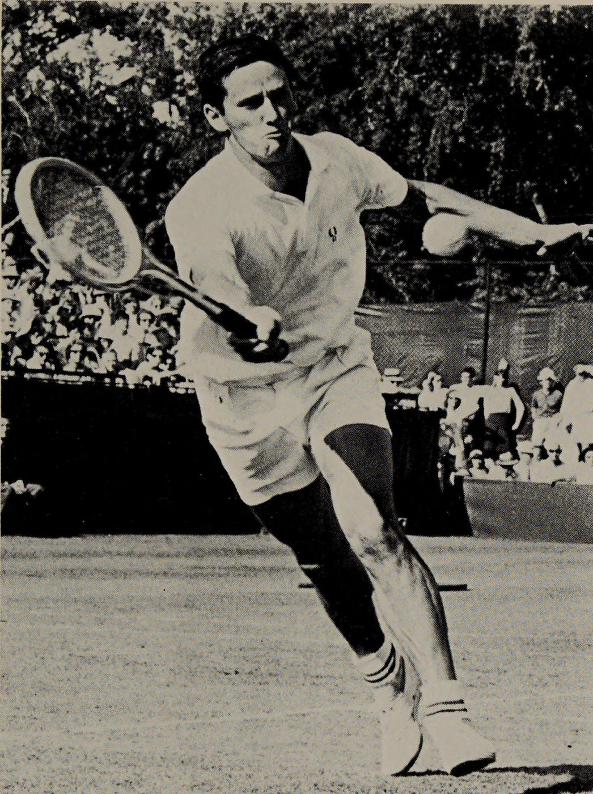
Emerson thực hiện cú vô lê tốt ở phía trước — nhờ độ cứng và tầm nhìn bóng tốt. (Xem văn bản, trang 100)
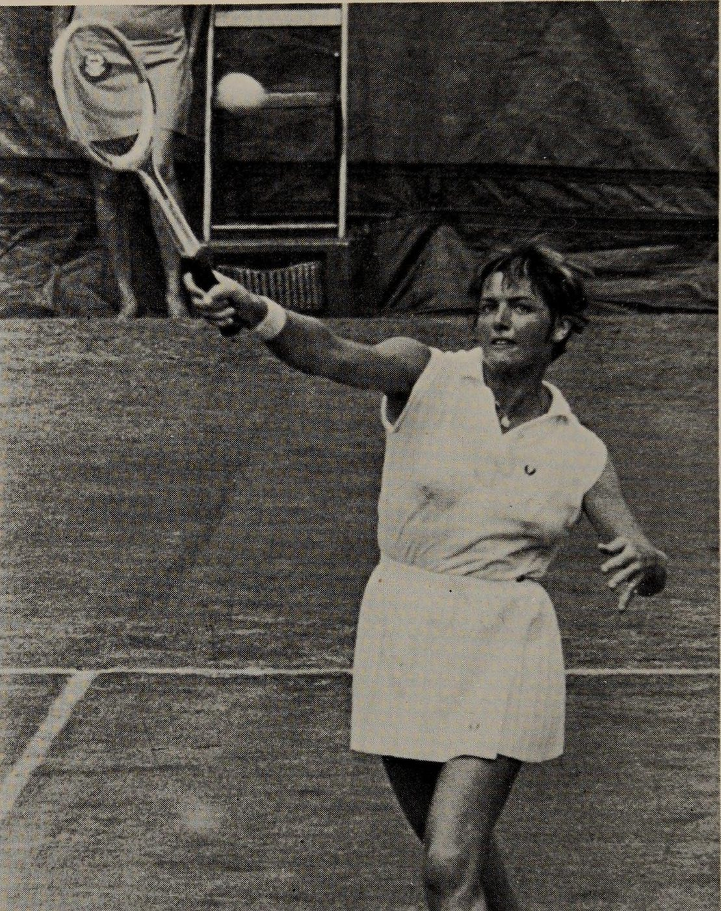
“… Nước sốt cho ngây thơ.” Lưu ý sự giống nhau giữa cú vô lê cao của Margaret Court với cú chạm bóng của Hoad ở trang 172. (Xem văn bản, trang 100)
bạn đang cố gắng thực hiện nó hoặc thậm chí nhận thức được nó, một hành động nhỏ của cổ tay sẽ tự động được tích hợp vào động tác vung vợt sau. Xoay về phía trước với cánh tay thẳng nhưng không cứng nhắc. Đó là cách truyền động bằng cổ tay vững chắc được thực hiện trong thực tế. Nó hoàn toàn chính xác, mượt mà và rất chắc chắn; và đó là phương pháp mà huấn luyện viên thường dạy. Bây giờ chúng ta hãy thử so sánh những cú xoay “cổ tay” tốt và xấu. Đứng nghiêng về phía lưới và đưa vợt trở lại thẳng hàng với vai một lần nữa. Lần này uốn cong cổ tay của bạn về phía sau càng xa càng tốt. Xoay từ từ về phía trước, khuỷu tay thẳng nhưng không cứng nhắc, giảm góc cổ tay (nghĩa là độ mà đầu vợt di chuyển về phía sau) cho đến khi gần như biến mất hoàn toàn tại điểm va chạm với một quả bóng tưởng tượng. Kết hợp với khả năng theo dõi mượt mà, đây là một cú đánh thẳng cổ tay tự do chính xác. Bật cổ tay có nghĩa là giữ nguyên toàn bộ góc cổ tay cho đến ngay trước khi tiếp xúc, rồi sau đó - bạn biết đấy - bật đầu vợt thật nhanh vào quả bóng. Thêm một màn tự biểu diễn nữa với vợt của bạn, lần này là lắc cổ tay, và chúng ta đã hoàn thành. Đưa vợt về thẳng hàng với vai, giữ thẳng cổ tay. Đưa nó từ từ về phía trước một lần nữa, nhưng tăng góc cổ tay cho đến khi đạt mức tối đa tại điểm va chạm. Để đánh bóng thẳng bạn có thể thấy rằng bạn phải xoay người về phía lưới trước khi tiếp xúc với bóng, lực đánh sẽ bị yếu đi. Có lẽ tác dụng phụ cũ là khuỷu tay trượt về phía xương sườn và gù vai phải cũng sẽ có. Hãy thực hiện tất cả những điều này một cách nhanh chóng và để đầu vợt của bạn dao động lên xuống một chút và bạn sẽ tự tạo ra cho mình một ví dụ điển hình về động tác lắc cổ tay có thể tìm thấy ở bất cứ đâu. Trong số các cú đánh thẳng cổ tay rắn và cổ tay tự do, cái nào thích hợp hơn? Cổ tay rắn chắc phải chắc chắn hơn và người dùng nó sẽ có ít ngày nghỉ. Được chơi bởi một nhà vô địch trên một bề mặt tốt, có vẻ như hiếm khi có thể bỏ sót điều đó. Ổ đĩa cổ tay tự do yêu cầu thời gian tốt hơn nhưng nó có những ưu điểm riêng; nó cho phép thay đổi hướng vào giây cuối cùng, thay đổi tốc độ được che giấu tốt hơn và điều chỉnh dễ dàng hơn đối với một cú nảy xấu. Tôi hy vọng cả hai phong cách tiếp tục được sử dụng. Cần có hai người để tạo nên một trận đấu quần vợt, và không có gì tuyệt vời hơn để xem một trận đấu hay giữa hai tay vợt giống nhau về sức mạnh, sự mượt mà và tinh thần thể thao nhưng phong cách của họ tương phản với những cú đánh thẳng hoặc “cổ tay”. Nếu thực sự bị buộc phải nêu ra một sở thích—và đó là tất cả những gì có thể—tôi sẽ nói điều đó, giống như việc tôi ngưỡng mộ những cú đánh thẳng đi qua sân cỏ giống như những quả bóng bi-a dọc theo một chiếc bàn xanh, tôi càng thích nhìn thấy chúng được hướng dẫn đến đó từ một cổ tay tự do. Nhưng hãy tự lựa chọn cho môn quần vợt của riêng bạn. Giống như mọi thứ trong quần vợt, hãy là người của riêng bạn nếu không bạn sẽ thua cuộc trước lối chơi nhanh. Điều này cũng thực sự trả lời câu hỏi bạn nên sử dụng bao nhiêu cổ tay. Chỉ cần làm hài lòng chính mình. Bạn có thể sử dụng bao nhiêu cổ tay, cũng giống như tốc độ, tùy thuộc vào mức độ bạn có thể kiểm soát. Bạn càng sử dụng nhiều cổ tay, bạn càng có thể đạt được tốc độ và tính linh hoạt cao hơn cho cùng một nỗ lực, đến một điểm nhất định. Ngoài thời điểm đó, cần phải nỗ lực rất nhiều để kiểm soát cổ tay. Tôi không nói rằng bạn thực sự phải sử dụng cổ tay nhiều nhất có thể. Đúng, bạn có thể đạt được tốc độ cao hơn, nhưng, như đã chỉ ra trước đó, bạn sẽ khiến việc tính thời gian của mình trở nên khó khăn hơn. Để làm cho ý nghĩa của tôi rõ ràng hơn, giả sử có ai đó hỏi cú vung vợt lý tưởng là gì và liệu nó có thể đạt được không? Lý tưởng nhất là một cú vung vợt mượt mà đến mức đầu vợt di chuyển với tốc độ như nhau trong suốt chiều dài cú đánh. Điều này là không thể, vì trong thực tế, đầu vợt phải di chuyển với tốc độ nhanh nhất ngay trước khi gặp bóng. Do đó, trong một cú đánh gần như hoàn hảo, phần này của cú vung vợt càng nhanh càng tốt so với phần còn lại của cú vung vợt. Điều này chỉ có thể xảy ra khi đầu vợt di chuyển càng ít về phía sau cổ tay càng tốt; và điều này tương đương với cú đánh thẳng cổ tay chắc chắn.
Tăng cường cú trái tay
Phần lớn nội dung thảo luận về cú thuận tay trước đó có thể được áp dụng tương tự cho cú đánh trái tay. Những cú đánh trái tay mạnh luôn được thực hiện với cánh tay thẳng tại điểm va chạm và thường với mặt vợt hơi hướng ra ngoài và phía trên bóng. Những cú đánh trái tay được thực hiện với khuỷu tay cong, quá gần với em bé, luôn yếu. Những cú đánh được thực hiện bằng cách đánh vào trong và dưới bóng gần như luôn luôn như vậy. Có lẽ nguyên nhân cốt lõi của một cú đánh trái tay yếu nằm ở cách cầm vợt không đủ, cách cầm vợt không đủ phía sau cán vợt để cung cấp đủ sự hỗ trợ. Như tôi đã nói, hầu hết người chơi có cách cầm vợt như vậy đều đưa bóng đến đâu đó bên cạnh cơ thể họ và thực hiện một cú đánh cắt nhỏ, hoặc cầm bóng ở vị trí bình thường, hơi ở phía trước hông phải, nhưng do cách cầm vợt của họ nên cổ tay ở phía trước tay cầm và cánh tay bị cong. Trong cả hai trường hợp, có thể thu được rất ít năng lượng. Nếu bạn có cách cầm vợt không phù hợp này và bạn sẽ bám sát vào nó, cách duy nhất để cải thiện vấn đề và có cánh tay thẳng và cổ tay thấp với đầu vợt xoay tròn và vượt qua bóng là xoay người sang ngang và đưa bóng ra xa phía sau bạn hơn bạn từng nghĩ là có thể. Điều này sẽ gây áp lực khá lớn lên cổ tay của bạn, nhưng nó sẽ cho phép bạn thực hiện một cú lăn trái tay và gần như chắc chắn sẽ cải thiện mặt trái tay của bạn ở một mức độ nào đó. Và ở đây bạn để lại nó, hài lòng rằng bạn đã tăng cường sức mạnh cho cú đánh của mình mà không làm thay đổi cách cầm vợt tự nhiên của bạn. Có lẽ bạn để lại nó. Rất có thể bạn sẽ cảm thấy rằng việc thay đổi cách cầm vợt của mình thêm một chút nữa cũng đáng làm. Nhân tiện, nếu bạn chưa biết, bạn thay đổi cách cầm vợt chủ yếu bằng cách sử dụng ngón tay trái trên cổ vợt. Trong thời gian cần thiết để lấy lại vợt, bạn có thể dễ dàng thay đổi cách cầm vợt. Một quan niệm sai lầm phổ biến với cú đánh trái tay là nó cần một cú đánh lùi dài. Khi thực hiện cú vung dài này, nhiều người chơi thiếu thời gian và phải nhanh chóng thực hiện cú vung về phía trước. Sự vội vàng luôn dẫn đến sự thiếu nhất quán, và do đó (ở đây chúng ta lại gặp phải những sai lầm phổ biến trong quần vợt) những tay vợt này có ý tưởng chán nản rằng họ sinh ra để có một cú đánh trái tay thất thường. Miễn là bạn đã thay đổi cách cầm vợt đủ, cổ tay ở bên trái tay chắc chắn sẽ khỏe hơn so với bên thuận tay, do đó, với cùng một tốc độ, bạn không cần thực hiện động tác vung vợt về phía sau lâu ở phía bên trái tay. Điều này sẽ giúp bạn có thêm thời gian và tăng thêm sự tự tin cho trái tay của bạn. Thời đại của những người chơi trái tay bằng hai tay đã thể hiện rõ nhất điều này. Một số người trong chúng ta, những người chơi đơn tay có thể nghĩ rằng đó là sức mạnh tăng thêm từ việc sử dụng hai tay cho phép thực hiện động tác vung vợt ra sau ngắn. Nhưng hầu hết chúng tôi đều nghĩ rằng những người chơi hai tay không áp dụng được điều gì cho chúng tôi, và vì vậy chúng tôi đã không kiểm tra cú đánh này. Các nhà vô địch, luôn khao khát học hỏi, đã nghiên cứu nó, và chúng ta đã không thấy họ chơi trái tay xa sau nhiều năm. Nhiều người khi nhìn cú đánh trái tay ngắn của nhà vô địch có thể nghĩ rằng đó hoàn toàn là do họ nhận được nhiều bóng nhanh. Tôi nghĩ còn nhiều điều hơn thế nữa. Tôi tưởng tượng rằng những người hai tay đã chỉ đường cho họ.
Cân bằng thuận tay và trái tay
Đó là một lợi thế lớn nếu thuận tay và trái tay của bạn khá cân bằng, đặc biệt là chống lại những người chơi săn lưới, thăm dò điểm yếu ngày nay phổ biến hơn bao giờ hết. Bên thuận tay phải là bên mạnh hơn. Nếu không, bạn nên tìm nguyên nhân và khắc phục, bởi vì một tay vợt có khả năng đánh trái tay tốt thường có khả năng đánh thuận tay thậm chí còn tốt hơn. Tuy nhiên, để đạt được sự cân bằng giữa các cú đánh bằng cách xây dựng cú đánh yếu hơn, đừng bao giờ bỏ qua cú đánh mạnh hơn. Câu nói rằng một sợi dây chỉ mạnh bằng mắt xích yếu nhất của nó không áp dụng cho quần vợt. Giữ liên kết mạnh mẽ của bạn. Bỏ qua một cú đánh tốt đủ lâu và bạn sẽ thua nó. Đây nghe có vẻ là lời khuyên rõ ràng nhất, nhưng ngay cả những nhà vô địch mà tôi từng là
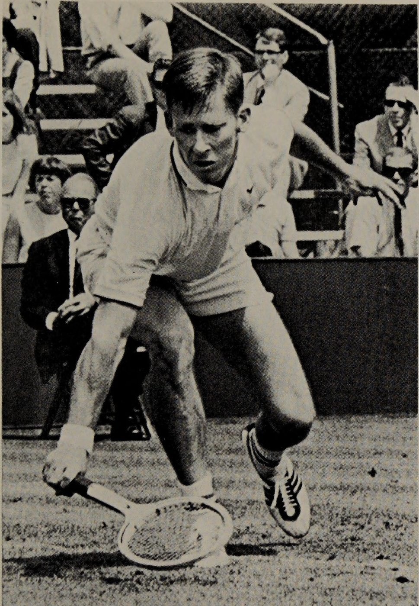
Một cú vô lê thực sự thấp. Dennis Ralston uốn cong đầu gối và giữ cổ tay thấp thay vì thả đầu vợt xuống. Nơi dễ nhất để thực hiện cú vô lê thấp là vào lưới; Ralston buộc phải kết thúc việc này. (Xem văn bản, trang 100)
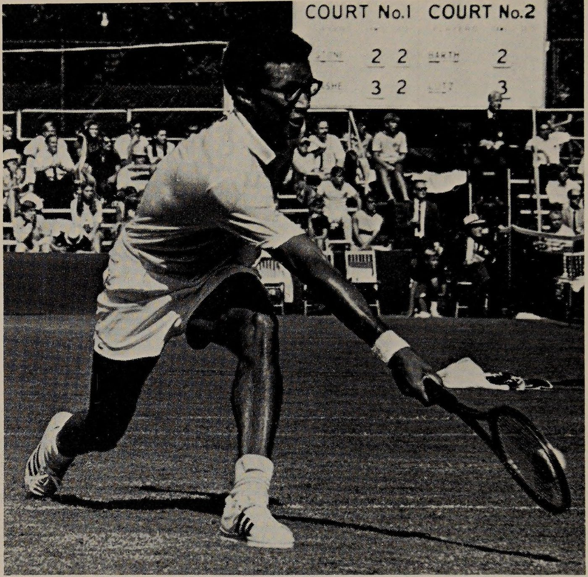
Cú vô lê thấp. Arthur Ashe khuỵu gối và giữ vợt gần như nằm ngang. Đây là kỹ thuật an toàn về tính thời gian và tầm nhìn bóng tốt hơn. (Xem văn bản, trang 103)
cho đến nay vẫn được coi là mẫu mực về đức tính quần vợt, đã mắc phải sai lầm này. Để cân bằng các cú đánh của bạn, hãy cố gắng giữ chúng thành một cặp càng nhiều càng tốt. Những người chơi thực hiện các cú thuận tay và trái tay theo kiểu tương tự nhau sẽ có ít ngày nghỉ hơn ở một hoặc cả hai cánh. Tuy nhiên, ngay cả khi bạn lăn cái này và cắt cái kia, ít nhất hãy cố gắng thoải mái khi thực hiện cả hai ở cùng độ cao: Nếu không, sẽ không có vị trí nào mà bạn thực sự muốn đứng để nhận giao bóng, đặc biệt là trong đánh đôi, nhưng cũng chống lại một người đàn ông theo sau một quả giao bóng nhanh vào lưới trong đánh đơn. Ở một khía cạnh nào đó, thuận tay và trái tay hơi giống nam và nữ. Sức mạnh của nam giới và sự hỗ trợ của nữ giới là một ý tưởng khá dễ chấp nhận. Hơn nữa, mặc dù con đực thường được chấp nhận là mạnh mẽ hơn và có khả năng chịu đựng những cú va chạm mạnh hơn, nhưng con đực cũng có nhiều khả năng trở nên ương ngạnh hơn và chắc chắn khó đưa trở lại đàn hơn, trong khi con cái, một khi đã phát triển và ổn định, sẽ khá yên bình. Xây dựng một cú thuận tay mạnh mẽ hoặc giữ vững cú thuận tay tốt mà bạn có. Ngay cả khi đối thủ của bạn định làm mọi thứ có thể để ngăn cản cú thuận tay của bạn khỏi trận đấu, thì việc bước vào một trận đấu mà không có ai sẽ khiến bạn cảm thấy như một chàng cao bồi không có súng.
Cách giữ cú đánh nền vững vàng
Nếu ở bất kỳ giai đoạn nào bạn không cảm thấy tự tin với cú đánh nền của mình, hãy thử một trong những biện pháp hỗ trợ sau để giữ vững: © Quan sát bóng cho đến khi bạn dừng nó. © Hãy lấy lại vợt của bạn đủ sớm để tạm dừng. © Giữ khuỷu tay của bạn thẳng khi bạn đánh bóng. © Giữ bóng trên dây. Việc nhớ lại việc theo dõi bóng luôn làm giảm tốc độ trận đấu của đối thủ. Có thời gian tạm dừng một chút trước khi đánh mang lại cho bạn cảm giác làm chủ số phận của mình. Việc có một cánh tay thẳng khi va chạm sẽ mang lại một thước đo tuyệt vời vào thời điểm mà mọi thứ dường như đi chệch hướng. Giữ bóng trên dây là một cách xây dựng sự tự tin tuyệt vời khi quả bóng dường như là một kẻ thù khó nắm bắt thay vì một người bạn thân.
Vô-lê, bỏ nhỏ và lốp bóng
Volleys, drop shots, lobs
Vô-lê
Cú vô lê là những cú đánh sắc nét. Để phù hợp với thực tế đó, đây là một số sự thật ngắn gọn, sắc nét, được chấp nhận rộng rãi về chúng: Hầu hết các quả bóng được đánh khi đang bay dễ dàng và hiệu quả hơn so với khi nảy lên. Vô-lê thực chất là chặn những quả bóng nhanh và đấm những quả bóng chậm. Kiểu cầm Continental có lẽ là cách cầm tốt nhất để dùng. Luôn cố gắng thực hiện cú vô lê ở phía trước cơ thể và từ cao hơn lưới. Khi buộc phải vô-lê bóng thấp, hãy cúi người xuống bóng và dùng mặt vợt ngang. Trong trường hợp những nhận xét này khiến bạn khó chịu về tinh thần, chúng tôi sẽ xem xét chúng chậm hơn. Ngoại trừ một cú đánh xoáy lên quá mạnh, hầu hết mọi thứ trong tầm tay đều dễ dàng thực hiện được hơn so với cú nảy lên. Lý do tại sao người chơi không luôn ở trên lưới là vì một số cú trả bóng có thể nằm ngoài tầm với chứ không phải vì chúng quá nhanh. Dù cú đánh mặt đất của bạn tốt đến đâu, bạn vẫn có khả năng bắt vô lê tốt hơn. Trên lưới có điểm để lấy; không lên lưới đánh vô-lê có nghĩa là không giành được phần của mình. Chặn và đấm là những kỹ thuật vô-lê chính thống và dễ dàng, nhưng nếu bạn có một cú vô lê mạnh mẽ để đánh bóng cao thì bạn nên giữ nó. Nó thường có thể khiến những người mong muốn tốt lành của bạn phải thốt lên nỗi lo sợ, nhưng nó sẽ có tác động tương tự đối với đối thủ của bạn. Những người chơi cầm vợt theo kiểu lục địa hầu như luôn vô-lê tốt, chủ yếu là do họ phải thực hiện rất ít hoặc không thay đổi cách cầm vợt từ thuận tay sang trái tay và bóng thấp ít gặp khó khăn.
Nhiều tay vợt phương Đông sử dụng kiểu cầm vợt Continental cho những cú vô lê của họ. Nếu bạn đánh bóng tốt với kiểu cầm Eastern, hãy giữ nguyên như vậy. Nếu bạn cảm thấy mình khá vụng về, bạn có thể sửa đổi cách cầm vô-lê của mình để ít có sự thay đổi từ thuận tay sang trái tay hơn, nhưng bạn phải chuẩn bị tinh thần để thấy rằng mình có ít lực hơn một chút.
Vô-lê trên cao và dưới thấp so với lưới
Việc vô-lê xa hơn về phía trước bạn so với vị trí bạn định vị trí để đánh bóng mang lại độ cứng cao hơn và tầm nhìn bóng tốt hơn nhiều. Tầm nhìn rõ ràng về mục tiêu này có lẽ là lý do quan trọng hơn của cả hai. Khi bạn tung cú vô lê từ phía trên lưới, nơi dễ đánh bóng nhất là vào sân. Bạn phải tin vào điều này, vì nó nâng cao sự tự tin của bạn và khuyến khích bạn tiến về phía trước và thực hiện những cú vô lê cao bất cứ khi nào có thể. Hầu hết các cú vô lê bạn đánh trượt đều ở gần đầu lưới hoặc gần đường biên; Việc đánh bóng vào sân rộng sẽ dễ dàng hơn là đi sát mép lưới hoặc đường biên. Tuy nhiên, với những cú vô lê cao và chậm, hãy đảm bảo rằng bạn đứng ngang (trượt chân trước về phía trước) hoặc điều dễ dàng nhất là móc hoặc cắt chúng qua sân và một khoảng cách dài ra gần hàng rào bên. Mặt khác, khi bạn tung cú vô lê từ dưới lưới, tỷ lệ cược tự nhiên không còn ở bên bạn nữa vì nơi dễ dàng nhất để thực hiện cú vô lê thấp là thẳng vào lưới. ’ Tôi không nói rằng bạn hoặc bất kỳ ai khác đánh những cú vô lê thấp nhất vào lưới thay vì vào sân, chỉ có điều rằng vào lưới là nơi dễ đánh nhất; và nếu bạn quan sát kỹ, chắc chắn bạn sẽ thấy hầu hết các cú vô lê thấp bị trượt đều đi vào lưới. Bạn phải nâng chúng lên ở độ cao phù hợp và độ sâu phù hợp. Điều này đòi hỏi phương pháp và sự tiếp xúc xác định. Chúng ta đã giải quyết vấn đề va chạm này trong chương về kiểm soát bóng, nói rằng với những quả bóng bay nhanh gần lưới, bạn không chỉ phải vượt qua chúng mà còn phải
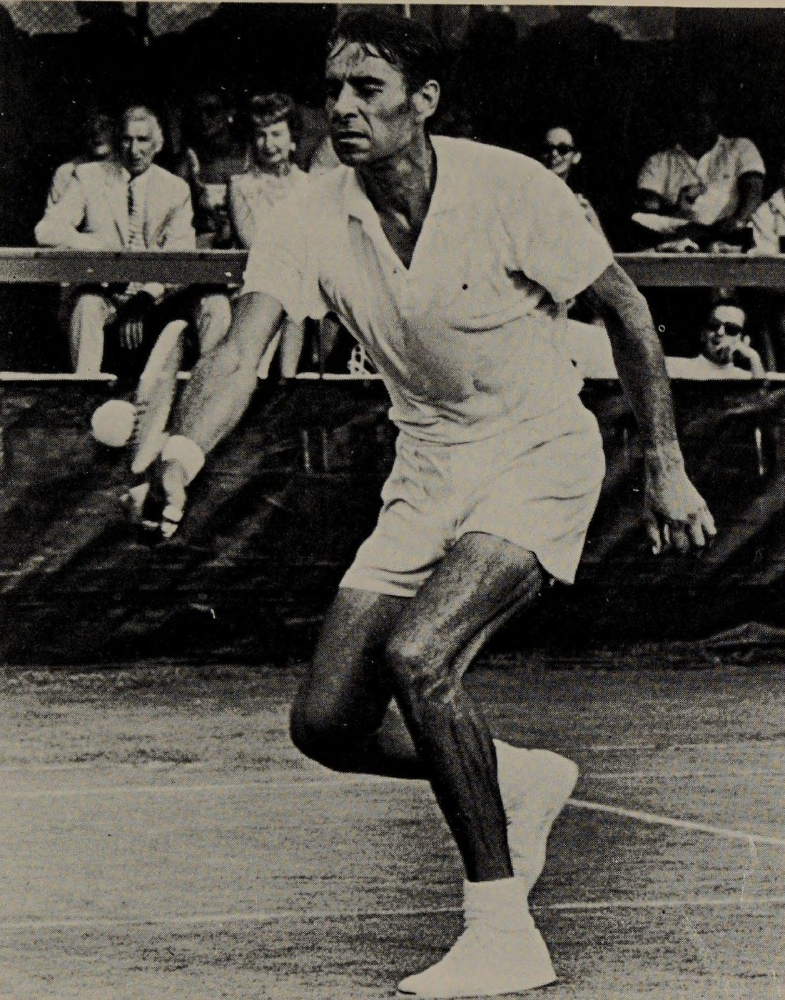
Dù họ có biết hay không, nhiều tay vợt mạnh hơn—và hầu hết đều nhanh nhẹn hơn— khi thực hiện cú vô lê ở phía trái tay. Pancho Gonzales sút chân phải muộn nhưng trọng lượng của anh ấy đang dồn về phía trước. (Xem văn bản, trang 103)
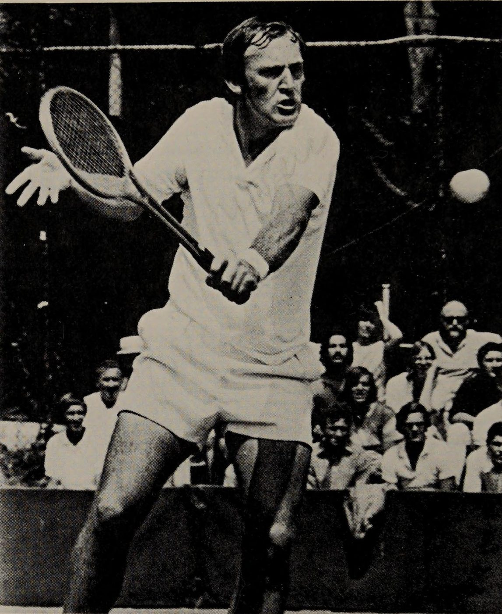
Tony Roche là một người thuận tay trái, người thường rẽ ngang để thực hiện cú vô lê trái tay của mình. Nó đã được đánh giá là tốt nhất thế giới. (Xem văn bản, trang 104)
để hấp thụ một phần tốc độ của chúng nếu không chúng sẽ bay tốt trên vạch cuối sân. Đến với phương pháp, bạn nên chơi càng nhiều cú vô lê thấp càng tốt với vợt của bạn ở vị trí nằm ngang — nghĩa là, đầu vợt ngang với cổ tay, bất kể chúng thấp đến đâu. Với vợt ngang, bạn chỉ cần căn thời gian hợp lý để hướng bóng đến độ cao thấp mong muốn trên lưới, trong khi với vợt vuông góc thì thời gian cần phải chính xác. Không khó để nhận thấy rằng nếu bạn vung vợt theo kiểu từ dưới lên (vuông góc) vào bóng thì sẽ có rất ít sự khác biệt về thời gian giữa một cú vô lê đi dọc mặt đất và một cú vô lê bay quá cao qua lưới. Vì vậy, khi các tay vợt thực hiện ngay những cú vô lê thấp, họ đang tỏ ra thực tế hơn là sành điệu. Một lý do quan trọng khác khiến bạn phải thực hiện những cú vô lê thấp là để bạn nhìn rõ chúng hơn. Đó là vấn đề về tầm mắt, và rõ ràng đó là một thực tế quang học rằng quả bóng càng gần tầm mắt của bạn thì bạn càng có thể nhìn thấy nó rõ hơn. Bạn không thể nhìn thẳng vào tầm mắt của một cú vô lê thấp mà bằng cách hạ thấp và giữ đầu vợt nằm ngang. Bạn có thể đạt được cấp độ gần nhất có thể. Tuy nhiên, khi cúi xuống, bạn không thể đưa mắt đến gần mặt bóng hơn bằng cách cúi lưng xuống, vì nếu làm như vậy bạn sẽ mất thăng bằng; kỹ thuật là giữ thẳng lưng và uốn cong đầu gối, đôi khi đến mức tối đa. Đừng uốn cong lưng của bạn. Ngồi xổm. Có một kiểu vô lê khác cần phải đặc biệt cẩn thận nếu nó đi qua lưới. Đây là cú vô lê gần như nằm ngoài tầm với. Khi bạn duỗi người ra và cố gắng chạm tới quả bóng, bạn sẽ nhận được rất ít lực từ nó. Hãy chắc chắn rằng bạn nâng nó lên nhiều hơn bình thường. Nhiều vận động viên vô lê thành thạo không nhận ra cú vô lê trái tay của họ tốt như thế nào. Cảm thấy rằng họ có thêm sức mạnh và tầm với ở phía thuận tay, họ không thấy rằng cú vô lê trái tay thực sự là âm thanh tốt hơn cả hai trong một số điều kiện, chẳng hạn như khi vô lê gần giữa cơ thể và khi vô lê thấp gần bàn chân. Hơn nữa, nếu bạn tình cờ ở gần lưới khi đối thủ đang đập bóng, cú vô lê trái tay có lẽ là hành động phản xạ nhanh nhất mà bạn có; khi đứng với cổ vợt bằng tay trái, vợt của bạn đã ở vị trí sẵn sàng để thực hiện cú vô lê trái tay cao đến thắt lưng. Nhận thức được tất cả những điều này sẽ cải thiện sự tự tin trong cú vô lê trái tay của bạn và kết quả là bạn chơi nó tốt hơn. Hãy vô-lê để tạo góc nếu bạn định giành chiến thắng chỉ với một cú đánh đó; nếu không, bạn thường cho đối thủ cơ hội tốt để vượt qua bạn. Hãy sử dụng những cú lốp bóng và ném bóng một cách tiết kiệm, nếu không, trong tính toán cuối cùng, chúng sẽ bị phát hiện là đắt hơn số tiền họ đã trả. Đánh bóng sâu phải là mục tiêu chính của bạn. Nói chung, tôi nghĩ những người thuận tay trái, đã quen với việc có nhiều thời gian với những cú công bóng thuận tay, có xu hướng thực hiện động tác vung vợt ra sau quá lâu với những cú vô lê thuận tay của họ. Họ sẽ thực hiện những cú vô lê trái tay tốt hơn nếu nghiêng về phía lưới nhiều hơn. Tôi đưa ra điều này như một ý kiến khi thi đấu với họ.
Vô-lê nửa đường cũng là một phần vũ khí của bạn
Đừng sợ hãi khi thỉnh thoảng thực hiện một cú vô-lê nửa đường và đừng bao giờ lo lắng khi bạn bị buộc phải thực hiện một cú đánh. Cú vô lê được thực hiện gần mặt đất là một cú đánh khá tự nhiên và một khi bạn đã hài lòng với điều đó thì hầu hết khó khăn sẽ biến mất. Chúng ta thường được yêu cầu chỉ thực hiện cú vô-lê nửa đường khi cần thiết và luôn dùng chân tiến lên hay lùi xuống để tránh cú vô-lê nửa đường bất cứ khi nào có thể. Điều này có thể rất tốt ở một khía cạnh nào đó, nhưng nó khiến bạn rơi vào trạng thái tâm lý mà bạn gần như cảm thấy đối thủ đã áp đảo bạn bất cứ khi nào bạn phải thực hiện một cú vô-lê nửa đường. Đây là một thái độ chủ bại và chẳng khác nào đặt một gánh nặng nặng nề và không công bằng lên một trong những cú đánh của chính bạn. Cú chuyền nửa chừng có chủ ý cũng có thể được sử dụng trong ít nhất hai tình huống mà bạn nghĩ đến. Khi bạn tiến gần đến lưới, cú vô-lê nửa đường sẽ dễ hơn cú vô lê thấp đến mức không thể đánh vào giữa dây. Thay vì căng người về phía trước đến inch cuối cùng, việc tạm dừng từng phần và vô-lê một nửa sẽ thoải mái hơn, từ đó giữ thăng bằng tốt hơn. Ngoài ra còn có cú vô lê sâu. Nếu, như bạn đã thấy, bạn nên thực hiện tất cả các cú lốp bóng để tránh phải rút lui để thực hiện một cú đánh có lẽ mạnh hơn nhưng lại làm mất vị trí của bạn, thì tại sao lập luận này không áp dụng cho các cú vô lê sâu? Chẳng hạn, khi bạn tình cờ ở ngay bên trong đường cuối sân và một cú trả bóng sâu xuất hiện, tốt hơn là bạn nên thực hiện cú vô-lê nửa đường còn hơn là chạy vòng ra phía sau nó và cố gắng đánh lái từ một vị trí cách xa đường cuối sân. Bạn không thể nói rõ điều đó với một người mới bắt đầu, nhưng sớm hay muộn tất cả chúng ta đều phải trưởng thành trong môn quần vợt, giống như đối thủ của chúng ta. Hãy thực hiện những cú nửa vô-lê của bạn càng gần mặt đất càng tốt và thực hiện chúng một cách tự tin. Đừng ngần ngại hoặc chơi chúng một cách miễn cưỡng, nếu không bạn có thể sẽ dính vào một cú đánh khủng khiếp nằm ở đâu đó giữa một cú vô lê nửa vời và một quả bóng đang lên. Theo những gì tôi biết, cú đánh này không có tên – ở bất kỳ thời điểm nào được in. Phương pháp an toàn nhất—khi bạn có thời gian—là sử dụng đầu vợt ngang ngang với cổ tay, đầu gối cong tốt, vung vợt về phía sau ngắn, theo sau rõ ràng và tiếp xúc lâu để kiểm soát. Đặc biệt lưu ý — và tất nhiên, hãy thử chúng trên sân — thời gian tiếp xúc và theo dõi lâu dài, đối với nhiều người chơi chỉ coi những cú vô-lê nửa đường như những cú đâm nhanh. Khi bạn buộc phải thực hiện một nửa cú vô lê, gần lưới và thẳng vào chân bạn, bạn có thể không có lựa chọn nào khác ngoài việc chơi chúng bằng vợt thẳng đứng. Trong những trường hợp này hãy nhanh nhất có thể và chúc bạn may mắn. Tuy nhiên, ngay cả với những điều này, tôi vẫn cho rằng chúng sẽ được xử lý tốt hơn nhiều bởi một người đàn ông thỉnh thoảng cố tình thực hiện cú vô-lê nửa đường so với một người chỉ thực hiện cú đánh này khi thực sự cần thiết. Dù bạn làm gì, đừng quá ham mê những cú vô lê có chủ ý. Đừng chơi ngày càng nhiều theo lựa chọn giống như cú đánh mà một cựu binh chơi ngày càng nhiều mỗi năm vì cần thiết. Rốt cuộc, một trong những thử nghiệm về khả năng trả giao bóng tốt đối với một người vào lưới là nó mang lại cho anh ta một cú vô lê thấp; nếu nó khiến anh ấy thực hiện cú vô-lê nửa đường thì còn tốt hơn nữa. Hơn nữa, đối thủ của bạn thường dễ đoán trước hướng của cú vô lê thấp hoặc cú đánh nền. Ví dụ: cú vô lê nửa trái tay hầu như luôn được thực hiện chéo sân. Một lý do quan trọng khác là các chuyên gia vô-lê nửa vời có xu hướng trở nên thiếu chính xác, thậm chí cẩu thả. Không bị buộc phải làm như vậy, đôi khi họ thực hiện cú vô lê nửa đường từ đường cuối sân bằng một vợt thẳng đứng. Đây là một cú đánh thoải mái và có thể không gây hại gì khi đối thủ của bạn ở cuối sân, nhưng nó hiếm khi đạt được độ chính xác cần thiết cho một cú đánh xuyên qua. Tôi có thể cảm nhận được một người đàn ông khiêm tốn nào đó đang cân nhắc công việc nửa vời này một cách có chủ ý, ngay cả khi nó chỉ đôi khi được thực hiện. Nó có thể là âm thanh? Có vẻ như nó hơi cao cấp một chút phải không? Nó không thể được coi là—từ khủng khiếp đó ném vào những đàn em dám nghĩ dám làm—chớp nhoáng sao? Khiêm tốn là một điều tốt, nhưng đừng để người khác biến bạn thành một con ngựa kéo xe. Hãy ra ngoài và tự mình khám phá thế giới quần vợt.
Cú bỏ nhỏ
Trên sân cứng, vào một ngày hè nóng nực và đánh theo chiều gió, hãy quên chúng đi. Trên sân cỏ hoặc sân trong mọi thời tiết, vào ngày mùa đông ẩm ướt và chơi ngược gió, bạn nên sử dụng chúng mọi lúc mọi nơi. Điều chỉnh tần suất sử dụng theo các điều kiện khác nhau giữa hai thái cực này. Đây chỉ là hướng dẫn chung. Đương nhiên, việc sử dụng tốt nhất các cú đánh rơi hoặc tránh chúng không chỉ phụ thuộc vào các điều kiện. Các yếu tố khác có liên quan: bạn giỏi hay dở trong việc tạo ra chúng; dự đoán của đối thủ chậm hay nhanh như thế nào; loại môn quần vợt mà anh ấy thích chơi nhất (chẳng hạn như đứng lùi lại và thực hiện những cú đánh dài); và liệu việc tiếp tục duy trì các cuộc biểu tình hay phá vỡ chúng bằng mọi giá là vì lợi ích của bạn. Những cú đánh rơi chắc chắn là một phần của môn quần vợt trên sân cỏ, trong đó chúng thường có thể được chơi mà không gặp rủi ro lớn. Điều này mang lại lợi ích cho môn quần vợt quần vợt nói chung và một phần chịu trách nhiệm cho kiểu chơi bóng sớm mà các tay vợt trên sân cỏ phát triển. Trường hợp luôn có khả năng xảy ra cú đánh rơi, người chơi phải ở trong khoảng cách nổi bật. Trong điều kiện sân cứng bình thường, một cú đánh rơi phải được thực hiện tinh xảo hơn nhiều nếu nó có giá trị lớn hơn nhiều so với một quả bóng rất ngắn, và do đó nó ít được thực hiện thường xuyên hơn. Điều này một phần là lý do tại sao một tay vợt chơi trên sân cứng điển hình lại lấy bóng muộn hơn so với một tay vợt trên sân cỏ, mặc dù người chơi trên sân cứng chơi trên bề mặt có độ nảy đều hơn. Một lý do khác cho phong cách thả bóng và thả bóng của các tay vợt trên sân cỏ và sân cứng liên quan đến trọng lượng của bóng. Khi trận đấu tiếp tục, trọng lượng của bóng trên sân cỏ có xu hướng tăng lên do hút ẩm từ cỏ, trong khi trên sân cứng, trọng lượng này giảm do bị mài mòn. Không có gì tốt hơn cho sự tự tin khi chơi bóng đang lên hơn những quả bóng chắc chắn và có trọng lượng bên trong. Tôi rất tiếc đã đề cập đến bề mặt của sân đấu, bởi vì nó ngay lập tức khiến tôi phải đưa ra lời giải thích liên quan. Khi nói đến sân cứng, ý tôi là sân đất thịt màu vàng tự nhiên được đóng gói cứng, và cả sân kiến, trong số đó có hàng trăm sân ở Úc vào mùa hè không khác gì sân bê tông của Mỹ; Ý tôi không phải là cái gọi là sân cứng của Châu Âu, mềm hơn và chậm hơn cỏ. Khi nói đến sân cỏ, ý tôi là sân thi đấu trung bình của câu lạc bộ mềm hơn và thường chậm hơn sân cứng; Ý tôi không phải là những sân đấu vô địch hàng đầu, được trang bị tối đa và được cạo sát, như ở Wimbledon, Forest Hills, White City, Kooyong và những nơi khác. Mặc dù những thứ này chắc chắn không cứng hơn mặt sân cứng của chúng ta, nhưng quả bóng di chuyển nhanh hơn trên chúng vì nó đi ra khỏi mặt cỏ có ít ma sát hơn so với hàm lượng cát trên bề mặt sân cứng. Những sân cỏ vô địch này được cho là có bề mặt nhanh thứ hai, gỗ bóng của các sân trong nhà được cho là nhanh nhất. Trừ khi mặt sân ẩm ướt, bóng ít có khả năng tăng trọng lượng nhiều; chúng được thay đổi sau mỗi chín trận đấu, không quá nhiều vì trọng lượng của chúng có thể đã thay đổi đáng kể trong thời gian ngắn đó, nhưng chủ yếu là để chúng bị nén liên tục.
Biến thể của cú bỏ nhỏ: Tất nhiên, cú bỏ nhỏ là cú đánh thiên về cảm giác. Để thực hiện chúng, cũng như với vô-lê bỏ nhỏ hay vô-lê cắt tốc—điểm khác biệt cơ bản giữa hai cú này là vô-lê bỏ nhỏ thực hiện từ quả bóng chậm, còn vô-lê cắt tốc là lấy hết tốc độ của quả bóng nhanh—bạn cần có “cảm giác” ở các ngón tay. Xoáy ngược mang lại khả năng kiểm soát tốt nhất và độ nảy thấp nhất. Một lần nữa, những điều này không nên quá lạm dụng. Khi Đối thủ của bạn dự đoán được một quả, nó chỉ còn là quả bóng ngắn, và từ đó chính anh ta sẽ là người ghi điểm trực tiếp. Sau đó, khi cố gắng làm cho chúng ngày càng mịn hơn, điều cuối cùng bạn tìm thấy chính là cái lưới. Thông thường, điều này có nghĩa là bạn còn làm nhiều hơn là mất điểm—bạn mất điểm do một cú đánh rất yếu và điều đó thường làm giảm sự tự tin của bạn cho điểm tiếp theo. Khi đối thủ của bạn thực hiện một cú đánh từ phía sau khá xa và bạn có thể tiếp cận nó một cách thoải mái, thì một cú trả bóng thường là cú ghi điểm trực tiếp dễ dàng nhất của bạn. Khi bạn không thể tiếp cận nó một cách thoải mái và ngược lại, hãy lao vào với đà của một đoàn tàu, thì trừ khi bạn có một cú ghi điểm trực tiếp chắc chắn ở một trong hai đường, tốt nhất là bạn nên đánh sâu và thẳng vào đối thủ của mình — nhưng không sâu đến mức anh ta có thể thực hiện một cú vô lê. Hãy đạp phanh và cố gắng che chắn một cú lốp bóng có thể xảy ra. Điều tồi tệ nhất đã xảy ra nếu đối thủ của bạn vượt qua bạn để giành chiến thắng, đặc biệt nếu điều đó đủ nghi ngờ khiến bạn đuổi theo không thành công. Sự kết hợp giữa thả và tung như vậy luôn khiến bậc thầy chiến thuật cảm thấy rất sướng còn nạn nhân cũng rất tệ và có phần rách rưới.
Lốp bóng phòng ngự và lốp bóng tấn công
Cú lốp bóng giống như tôn giáo vậy. Nó có ít người ủng hộ mạnh mẽ, nhưng ít người quan tâm đến việc tấn công nó trên báo in; nó được thực hành tương đối ít, nhưng mọi người lại sử dụng nó trong những lúc cần thiết. Quá nhiều thứ thường không được coi là nam tính (đúng hay sai), nhưng môn quần vợt—quần vợt hay cuộc sống—sẽ trở nên nghèo nàn hơn nếu không có nó. Không ai cảm thấy tự mãn sau một chiến thắng nhọc nhằn và xứng đáng lại nhớ đến cú lốp bóng của mình nhiều. Trong thi đấu xã hội hoặc tập luyện đôi, mọi người thường sẽ thử bất kỳ cú đánh nào mạnh mẽ hơn, dù có tham vọng đến đâu, thay vì
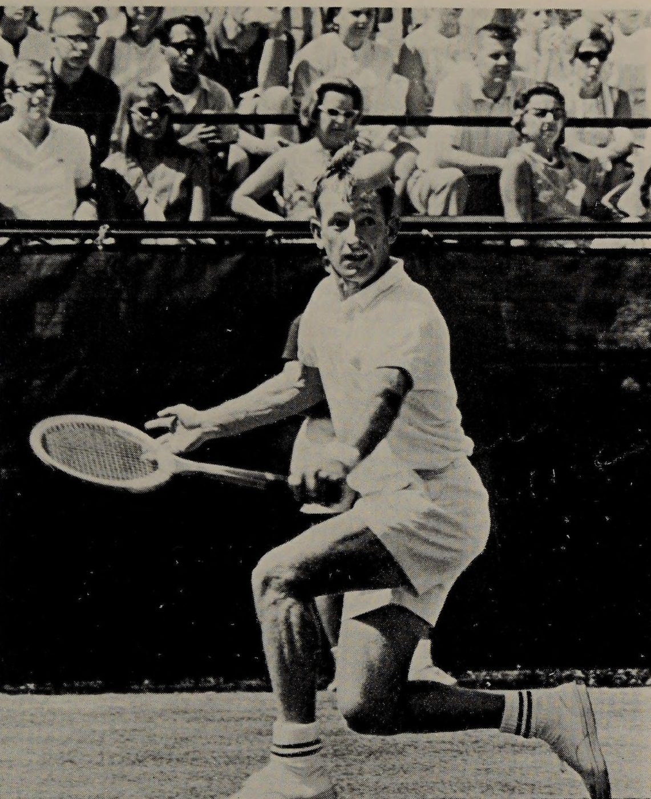
Rod Laver thực hiện cú lốp bóng trái tay rất đẹp. Thật tiếc là bóng không ở phía bên kia, nơi anh ta có cú lốp bóng xoáy lên của một người thuận tay trái độc ác. (Xem văn bản, trang 112)
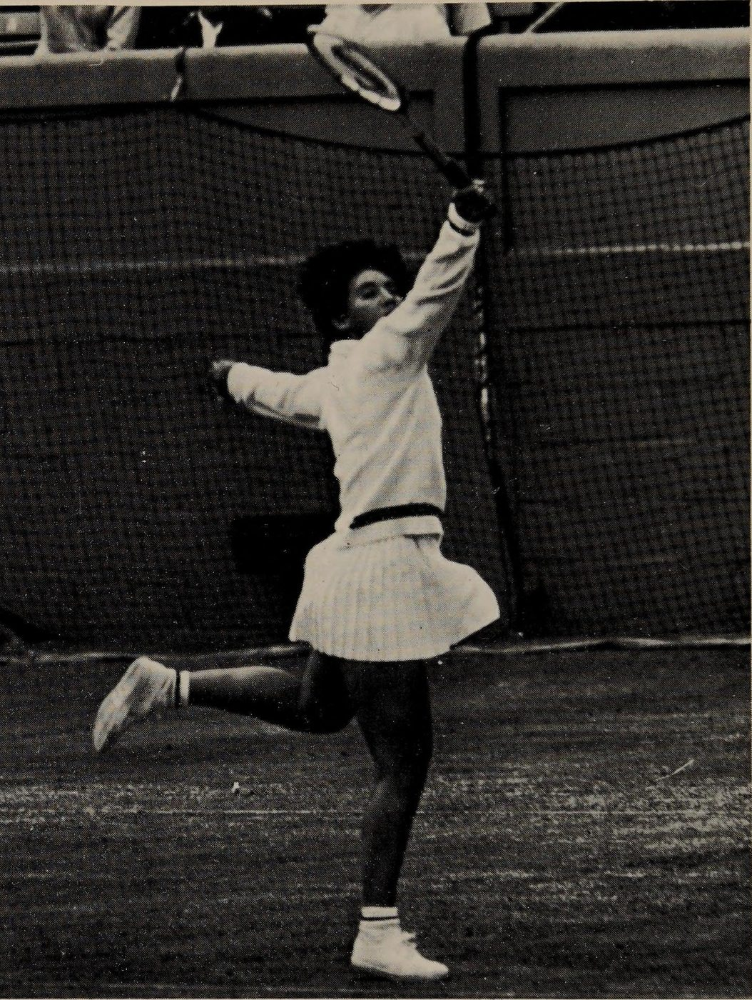
Cú đập trái tay của Rosie Casals khẳng định rằng bạn không cần phải cao, thậm chí không nam tính. (Xem văn bản, trang 70, 113)
chỉ dùng đến một cú lốp bóng đơn thuần; đây là thông lệ tiêu chuẩn đến mức người chơi có thể có thói quen chọn sai vị trí lưới vì họ không phải bận tâm nhiều đến việc đề phòng một cú lốp bóng. Thật là một sự khác biệt trong một trận đấu! Khi bị ép mạnh, một người đàn ông sẽ thực hiện cú lốp bóng gần như tự động. Trừ khi một cú lốp bóng có yếu tố tấn công nào đó trong đó, hoặc ít nhất là đủ lúng túng để gây khó khăn, thì người chơi thực hiện cú lốp bóng đó chỉ hy vọng điều tốt nhất. Nếu đối thủ của anh ta cho thấy anh ta có thể đập bóng thành thạo thì người chơi đang hy vọng thực sự có rất ít hy vọng. Tiếp tục lốp bóng phòng thủ cũng giống như treo cờ trắng. Khi bị một vận động viên vô lê ép liên tục, tốt hơn hết là bạn nên cố gắng thực hiện nhiều cú đánh xoáy lên bóng lên hơn. Chúng có thể thực hiện không tệ hơn các cú lốp bóng, và ngay cả khi tất cả chúng không đi vào lưới, đối thủ của bạn vẫn phải đề phòng những góc này và bị kéo gần lưới hơn; khi đó bạn có cơ hội chơi trò ném bóng với nhiều sáng kiến hơn đằng sau nó. Quần vợt sẽ trở nên kém cỏi hơn nhiều nếu không có những cú lốp bóng trong đó. Đặc biệt, ở nội dung đánh đôi, lưới có thể chật chội đến mức trở thành một vị trí gần như bất khả xâm phạm. Trận đấu sẽ trở nên rất buồn tẻ và sẽ không bao giờ có những đoạn thú vị, chẳng hạn, trong đó một tay vợt có khả năng kiểm soát cú đánh mặt đất tốt buộc đối thủ của mình phải thực hiện nửa cú vô lê và sau đó ném gần như ra khỏi tầm với của anh ta, buộc phải thực hiện một cú đập phòng thủ, sau đó, dẫn đến việc anh ta phải thực hiện thêm một nửa cú vô lê nữa, v.v. Sẽ không còn những cú tung bóng đột ngột bị xen vào trong một pha trao đổi lưới nhanh chóng. Thùy cũng đóng vai trò như một tờ giấy bạc; không có lốp bóng thì không thể thực hiện được những cú đập máu đầy máu. Gần như tất cả chúng ta đều có hai điểm yếu trong việc lốp bóng hoặc tung bóng, hoặc trong việc sử dụng cú đánh hoặc trong việc thực hiện cú đánh. Bản thân cú lốp bóng là một kiểu đánh cẩn thận, và điều này có xu hướng khiến chúng ta chơi nó trong tâm trí thận trọng đến mức chúng ta sợ đánh nó ra ngoài. Có lẽ theo bản năng, chúng ta chùn bước khi nghĩ đến việc không thể thực hiện một cú đánh lừa dễ dàng vào sân. Dù lý do đằng sau nó là gì thì kết quả là theo quy luật, người chơi bình thường sẽ ném quá ngắn. Đôi khi anh ta thoát khỏi điều đó, mặc dù anh ta không bao giờ nên làm vậy, nhưng khi không làm vậy, điều đó có tác dụng nổi tiếng là khiến anh ta cảm thấy rằng mình đã mất nhiều hơn một điểm bằng cách tăng thêm sự tự tin cho đối thủ và làm giảm sự tự tin của chính anh ta. Tương tự như vậy, trong quá trình tạo ra cú lốp bóng của chúng ta, thái độ quan tâm và an toàn là trên hết được thể hiện. Để tăng thêm khả năng kiểm soát, chúng tôi chơi hầu hết các cú lốp bóng của mình bằng xoáy xuống. Điều này có xu hướng giữ cho các cú lốp bóng của chúng ta không đi ra ngoài, nhưng vì nó khiến chúng lơ lửng trên không nên đối thủ của chúng ta có nhiều thời gian hơn để che chắn chúng, dù là toàn bộ hay đang hồi phục sau khi bật lên. Tệ hơn nữa, vì dù sao chúng ta cũng có xu hướng ném bóng quá ngắn nên việc sử dụng xoáy xuống khiến cho cú lốp bóng của chúng ta thậm chí còn ngắn hơn. Nghe có vẻ giống như một chương về tai nạn. Chúng ta sẽ tốt hơn nhiều nếu học cách chơi lốp bóng bằng cách lăn. Cú lốp bóng của chúng ta khi đó sẽ trở thành một cú đánh nam tính hơn và có lẽ sẽ đáng để luyện tập. Nó chắc chắn sẽ nguy hiểm hơn rất nhiều đối với Đối thủ. Một số người chơi có cú lốp bóng xoáy lên nặng như một phần trong thiết bị đánh của họ, và cú đánh này chắc chắn là một mối đe dọa đối với bất kỳ đối thủ nào. Điều này không dễ thực hiện và chủ yếu được tìm thấy ở những người thuận tay trái rất tự do, những người để cân bằng cú trái tay kém hiệu quả hơn, đã trở thành chuyên gia về bất kỳ cú đánh nào ở phía thuận tay. Nếu không có cú lốp bóng lăn, vẫn có một số cách mà cú lốp bóng thông thường có thể được sử dụng để tấn công. Bất cứ khi nào một người đàn ông tập trung thêm một chút vào lưới để chặn mọi góc có thể thì nó luôn ở quá xa, đặc biệt nếu anh ta cũng mất thăng bằng. Ở đây một cú lốp bóng thường có thể là cú ghi điểm trực tiếp. Trong đánh đôi, nếu người lưới đứng quá gần, cú lốp bóng qua đầu anh ta, đặc biệt là từ phần sân bên phải, phải là cú đánh đầu tiên được thực hiện và nó phải được thực hiện nhiều lần cho đến khi bạn cảm thấy anh ta sắp che được cú đánh đó. Bất kỳ cú lốp bóng hợp lý nào kết thúc ở phía trái tay của đối thủ thường đóng vai trò là nguồn tấn công. Rất ít tay vợt có cú đập trái tay; thay vào đó, hầu hết đều chơi một cú vô lê trái tay mang tính phòng thủ ít nhiều có thể chuyển quyền chủ động cho bạn. Mặc dù không phải là người ngưỡng mộ nghệ thuật tung bóng nhẹ nhàng, nhưng tôi phải thừa nhận rằng cú lốp bóng là một động tác chờ và ngựa thồ tuyệt vời. Lo lắng về phong độ có thể xảy ra của chúng tôi cho trận đấu sắp tới, điều đó không bao giờ xuất hiện trong đầu chúng tôi, tuy nhiên, trong sức nóng của trận chiến, chúng tôi luôn mong đợi có thể gọi nó ngay lập tức.
Bước chân, cứu bóng và xử lý bóng
Footwork, scrambling, stroking
Bước chân
Cho dù cú đánh của bạn có hoàn hảo đến đâu, bạn vẫn phải tiếp cận được bóng. Nhiều tay vợt coi động tác bằng chân chỉ liên quan đến sự sắp xếp của bàn chân ngay trước khi đánh bóng. Điều này có xu hướng khiến họ di chuyển tương đối chậm và có thể khiến đối thủ hài lòng nhất. Bản thân việc tập chân không phải là mục đích cuối cùng. Nó là một phương tiện làm cho mọi quả bóng bạn nhận được trở nên dễ chơi nhất có thể. Mục đích chung của bạn không phải là động tác chân hay cú đánh nhanh, nhưng bạn chỉ có thể làm điều này khi rõ ràng bạn là người chơi mạnh hơn. Khi bạn phải nhanh, hãy luôn nhanh chân trước khi thực hiện cú đánh. Đôi khi bạn cũng có thể bị buộc phải đẩy nhanh các cú đánh của mình, nhưng đừng bao giờ làm như vậy nếu có lựa chọn. Một số tay vợt, khi cố gắng giữ bình tĩnh hoặc cố gắng tạo cho đối thủ ấn tượng rằng họ có nhiều dự bị, đã cố tình thực hiện kiểu động tác bằng chân thiếu quyết đoán. Đây là một sai lầm. Bạn sẽ có được kết quả tốt hơn nếu bạn di chuyển chân nhanh và đến sớm, với vợt đã quay về phía sau, như đã mô tả trước đó, và sau đó thực hiện một cú đánh hoàn toàn không vội vàng. Điều này cũng giữ cho cú đánh của bạn ở trạng thái tốt. Ngược lại, nếu bạn bước đi lỏng lẻo, bạn có thể đột nhiên mất tự tin vào các cú đánh của mình. Bước chân lười biếng thường là dấu hiệu đầu tiên của sự tự tin thái quá. Bước chân nhanh khiến trận đấu của đối thủ có vẻ chậm hơn. Khi đặt chân, vật phải nghiêng về phía lưới. Lý tưởng nhất là đường dự kiến được vẽ từ ngón chân của bàn chân sau đến ngón chân của bàn chân trước sẽ song song với đường bay dự định của bóng và đó là cách hầu hết tất cả người chơi sắp xếp tư thế giao bóng của họ.
Đặt chân khi đánh bóng nền
Với những cú đánh nền, mọi thứ sẽ thay đổi một chút. Khi chơi một quả bóng ngắn, bạn chỉ cần bước về phía trước. Với những quả bóng rộng hơn, có hai phương pháp đặt chân thay thế. Bạn có thể chọn đánh ngang chân trước hoặc đánh dọc theo chân trước.
Vị trí thuận tay trái tay của bàn chân khi đánh ngang chân trước Trường phái cũ cho rằng người chơi phải luôn đưa chân trước của mình về phía bóng—trái cho thuận tay và phải cho trái tay. Như bạn có thể thấy, điều này có nghĩa là người chơi đánh những quả bóng rộng qua chân trước của mình. Tôi không đề xuất nói bất cứ điều gì chống lại phương pháp này. Làm sao tôi có thể làm được, khi người ủng hộ mạnh mẽ nhất của nó không ai khác chính là tay vợt nổi tiếng người Mỹ, Bill Tilden, người có lẽ là người tiêu biểu nhất về kỹ thuật đánh thuận tay và đánh trái tay mạnh mẽ mọi thời đại? Những bức ảnh về nhà vô địch cao lớn và tài giỏi này cho thấy ông đang thực hành những gì mình giảng dạy. Với cánh tay dài ở phía sau sẵn sàng thực hiện cú đánh, chân trước dài của anh ấy luôn hướng về phía bóng. Hơn nữa, bỏ Tilden và trường phái cũ sang một bên và nhìn vào những tay vợt mà chúng tôi biết, chúng tôi thấy rằng những cú đánh được đặt trên chân trước chắc chắn hiếm khi yếu. Quan điểm hiện đại cho rằng phương pháp nói trên tạo ra những cú đánh mạnh, nhưng lại lên án nó là không đủ linh hoạt. Tầm với bị hạn chế nếu bạn cố gắng đánh bóng thuận tay rộng từ chân trái. Hướng đi sẽ kém chính xác hơn nếu hai chân không cùng đường đi với bóng dự định. Cuối cùng, chân bắt chéo trước mặt sẽ làm chậm chuyển động của bạn trong cú đánh tiếp theo, đặc biệt nếu bạn có ý định theo vào lưới.
Tư thế cho cú thuận tay đánh qua chân trước
Ý tưởng hiện đại của động tác thuận tay là bước vòng quanh quả bóng bằng chân phải và bước về phía trước bằng chân trái, do đó đánh dọc theo chân trước thay vì ngang qua nó. Tương tự, với cú trái tay, bạn bước vòng bóng bằng chân trái và tiến về phía trước bằng chân phải, dồn trọng lượng của bạn dọc theo chân phải. Nếu bạn làm theo phương pháp cũ hoặc phương pháp hiện đại, bạn sẽ có động tác bằng chân tốt (hay nói chính xác hơn là vị trí đặt chân tốt). Cả hai phương pháp đều dồn trọng lượng của bạn vào cú đánh và mang lại cho bạn sự cân bằng tốt. Bạn có động tác chân tốt nếu thế đứng của bạn cởi mở hơn một chút và bạn bù lại bằng cách xoay hông nhiều hơn để bạn nghiêng về phía lưới một cách hợp lý khi đánh bóng. Nhưng bạn sẽ phải nỗ lực nhiều hơn để có được sức mạnh tương đương với một tay vợt có động tác chân tốt và khả năng giữ thăng bằng ở cuối cú đánh của bạn sẽ không được tốt. Bạn có động tác bằng chân kém nếu thế đứng của bạn quá rộng dẫn đến những bất lợi sau: thứ nhất, bạn chỉ có thể đưa bóng thẳng bằng cách đẩy cổ tay về phía trước; thứ hai, trọng lượng của bạn có xu hướng dồn lên chân phải; thứ ba, rằng nếu bạn thành công trong việc tăng cân về phía trước thì cuối cùng bạn sẽ mất thăng bằng vì không có chân trước để giữ thăng bằng. Quay trở lại với hai phương pháp đặt chân hợp lý, tôi nghĩ bạn sẽ nhận ra rằng, nhìn chung, đánh ngang chân trước phù hợp với những người chơi cú đánh đất có xu hướng vung dài, trong khi đánh dọc theo chân trước có vẻ phù hợp với môn quần vợt bóng lên. Bất chấp tất cả những điều này, nếu bạn nhìn vào những người chơi ngày nay, bạn sẽ thấy rằng họ dường như sử dụng điều gì đó từ mỗi phương pháp. Hầu hết chơi thuận tay dọc theo chân trước và trái tay qua chân trước. Đây hẳn là cách tự nhiên nhất, cho thấy rằng cả các trường phái cũ và hiện đại đều có thể quá lý thuyết khi mỗi trường đặt ra một quy tắc duy nhất để có động tác chân tốt nhất ở cả thuận tay và trái tay.
Nghệ thuật cứu bóng bị bỏ quên
Một số người có quan niệm sai lầm rằng một tay vợt giỏi không bao giờ được tranh giành, hoặc nếu anh ta làm vậy thì động tác bằng chân càng tệ thì kết quả càng tốt.
Về điểm đầu tiên, Tilden, bậc thầy cao cấp của lối chơi bóng chính thống theo phong cách Đông Mỹ, đã từng đi xa khi nói rằng bài kiểm tra của một nhà vô địch thực sự là khả năng xoay sở cứu bóng của anh ta. Ở điểm thứ hai, bạn có thể chơi bất cứ cách nào bạn thích từ chân phải vì vì trong bối cảnh cứu bóng thì đó không phải là động tác phi chính thống. Từ chân phải của bạn, bạn có thể tiếp cận thêm vài inch đó theo bất kỳ hướng nào—thuận tay hoặc trái tay, phía sau hoặc phía trước bạn. Khi thực hiện một đường bóng rộng, thuận tay thấp, nơi bạn sẽ có rất ít lực và sẽ phải cắt lát để vòng qua nó, hãy cố ý thực hiện bước cuối cùng bằng chân phải; tư thế rộng mở sẽ luôn có xu hướng nâng bóng cho bạn. Khi lốp bóng để phục hồi các cú đập mà bạn có rất ít thời gian, hãy chơi bằng một trong hai chân; nhưng luôn cố gắng đưa một trong số chúng xuống đất trước khi bạn đánh bóng. Khi bố trí bước chân cho cú vô-lê, bạn càng đứng nghiêng về một bên—nhờ bước chân nhanh—thì bạn càng cần ít vung vợt ra sau hơn để có cùng sức mạnh; và ít vung vợt ra sau hơn có nghĩa là độ chính xác và an toàn cao hơn. Nếu không có thời gian để di chuyển chân, hãy đẩy trọng lượng của bạn về phía trước ngay trước khi va chạm. Với những cú vô lê cao, gần như luôn có nhiều thời gian để xoay người nghiêng sang một bên, và bạn đã biết rằng nếu không làm như vậy sẽ gặp tai họa. Những người thuận tay trái có những đặc điểm riêng về động tác bằng chân, một trong số đó là nhiều người trong số họ dường như ghét những đường thẳng. Trong bóng đá, những người này có cú móc bằng chân trái, và khi ném bóng cricket họ thường chạy lên theo đường chéo rồi lại đẩy bóng đi vòng quanh góc. Trong quần vợt, họ có xu hướng làm ngược lại và đứng vuông góc với lưới hơn người thuận tay phải thường làm. Họ chơi nhiều cú thuận tay bằng cách đưa chân trái lên bóng và có thể đánh dọc biên từ tư thế thường chỉ ra một cú đánh chéo sân. Họ cố gắng giữ các cú thuận tay chéo sân của mình bằng cách kiểm soát rất tốt xoáy lên, và ta có thể lưu ý nhân đây rằng những tay vợt thuận tay trái “lệch dây” này có xu hướng rõ rệt dùng xoáy lên thay vì đánh thẳng. Đó là cách làm của nhiều người thuận tay trái, và thực sự sẽ là một người liều lĩnh nếu chỉ trích khả năng đánh trước của một người thuận tay trái giỏi.
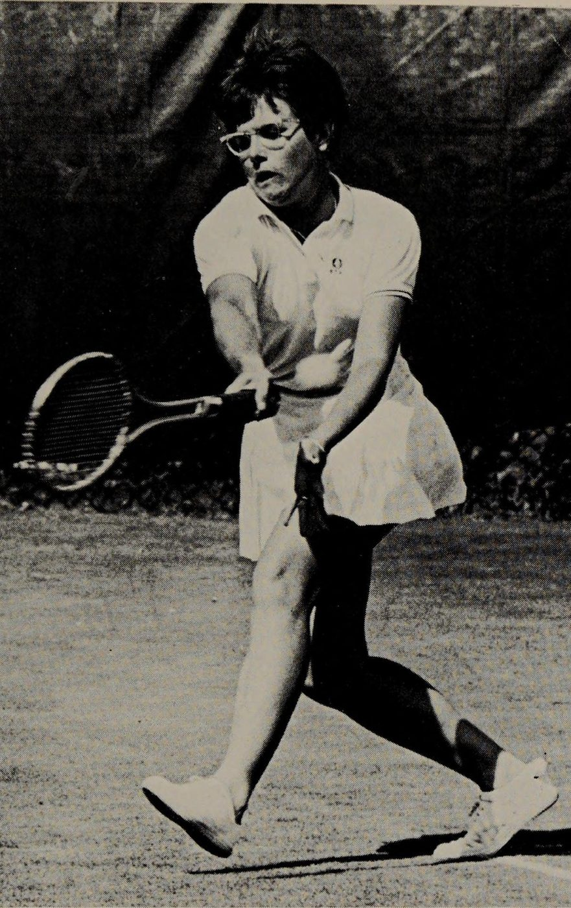
Không có nhà vô địch nào có thể là một người chơi trong thời tiết thuận lợi. Billie Jean King đối phó với một cú nảy không tốt. (Xem văn bản, trang 130)
Tay. Nhưng—và đó là một nhưng—luật về động tác bằng chân đòi hỏi phải được công nhận, và ở phía trái tay, gần như tất cả những người thuận tay trái đều phải trả giá đắt nếu bỏ qua chúng. Nếu bạn là người thuận tay trái, bạn nên tập đặt chân trái sang ngang để thực hiện cú đánh trái tay. Hướng vai trái của bạn về phía lưới; trên thực tế, trong khi học cách xoay người một cách thích hợp, bạn thực tế có thể quay lưng lại với nó. Tôi không biết cách nào để có được cú trái tay mạnh mẽ với động tác bằng chân vuông góc. Cuối cùng, có nhiều tay vợt có vị trí đặt chân tốt một bên và bên kia kém. Trong nhiều trường hợp, họ tiếp cận bóng chậm hơn (không cần thiết) ở phía kém hơn. Điều này đưa chúng ta trở lại nơi chúng ta đã bắt đầu. Thuận tay phải, thuận tay trái, thuận hai tay, thuận cả hai tay hoặc giữ thăng bằng không đồng đều với vị trí đặt chân—trước tiên hãy bắt thỏ của bạn. Luôn tiếp cận quả bóng một cách nhanh chóng, sau đó tiếp tục từ đó.
Cánh tay không vợt
Chúng ta không cần phải dành quá nhiều thiện cảm cho cánh tay trái. Rốt cuộc, việc bị đau cổ tay, khuỷu tay chơi quần vợt hoặc cứng vai không bao giờ là đủ. Mặt khác, nó hoạt động mọi lúc và hầu như không được chú ý. Mặc dù một số người chơi nhận thức được nó và đã phát triển phong cách của mình để tận dụng tối đa nó mà không cần suy nghĩ thêm, nhiều người hầu như không nhận thức được rằng họ sử dụng nó cho nhiều mục đích hơn là ném bóng lên để giao bóng. Tôi đã đề cập đến việc sử dụng nó trước đó trong một số trường hợp cụ thể, và xét tổng thể, nó chắc chắn là một công cụ ổn định và cân bằng tuyệt vời. Sự cân bằng dẫn đến sự trơn tru. Một số người có thể có xu hướng coi sự mượt mà như một thứ chỉ có thể hấp dẫn đối với người xem, trong khi tất cả những gì họ quan tâm là có một môn quần vợt mạnh hay với nhiều sức mạnh, cho dù nó có mượt hay không. Tôi hy vọng rằng trong thời gian bạn đọc đến đây, bạn sẽ nhận ra sự mượt mà và sức mạnh được kết nối chặt chẽ với nhau như thế nào. Với cùng một nỗ lực, bạn càng mượt mà thì bạn càng phát triển được nhiều sức mạnh hơn. Vì vậy, cho dù bạn có nỗ lực thế nào trong cú đánh, bạn chỉ có thể phát huy được sức mạnh tối đa nếu cú đánh được thực hiện trơn tru. Cánh tay trái góp phần vào việc này. Ở lần luyện tập tiếp theo, hãy chơi nhiều cú đánh thuộc mọi loại cú đánh bằng tay trái trong túi trong suốt. Sau đó lấy nó ra và tận dụng tối đa nó một cách có ý thức—tất nhiên là không thực sự chơi bằng hai tay—trong mỗi cú đánh của bạn. Bất kể lợi thế nào bạn đạt được, hãy đưa nó vào lối chơi của bạn để bạn có thể thực hiện nó một cách tự nhiên. Tôi không nghĩ bạn sẽ thấy mình đã hoàn toàn lãng phí thời gian.
Cú đánh tạo nên con người
Các cú đánh trên mặt đất, các cú đánh trên cao hoặc các cú vô lê—các cú đánh của bạn, hoặc một số trong số chúng, phải được mô phỏng theo các cú đánh của một nhà vô địch hoặc tay vợt rất giỏi nào đó; nếu không thì chúng tôi phải thừa nhận rằng không có nhiều điều có thể học được từ việc theo dõi những tay vợt như vậy. Nhưng các nét chỉ nên được mô hình hóa; sự tự nhiên không nên bị mất đi. Các cú đánh của bạn có thể giống với cú đánh của người chơi khác, nhưng chúng không được tạo ấn tượng rằng bạn đang bắt chước anh ta. Không sao chép phong cách cá nhân; nó cản trở sự tập trung trong cú đánh của bạn. Khi xem các nhà vô địch thi đấu, các trận đấu cuối cùng có thể mang đến những màn trình diễn chiến thuật tốt và những pha kết thúc thú vị, nhưng chúng không thể cung cấp những mô hình thực hiện cú đánh tốt nhất. Các tay vợt thường xuyên vô hiệu hóa những cú đánh tốt nhất của nhau. Để có được lợi ích cao nhất cho tiết mục thực hiện cú đánh của riêng mình, bạn nên xem các nhà vô địch thi đấu ở các vòng đấu trước đó. Ví dụ, ở đây, với những cú đánh trên mặt đất, bạn sẽ thấy họ dành thời gian để di chuyển về phía sau và vượt qua mọi quả bóng, tạm dừng và sau đó tiến về phía trước với quả bóng hoàn toàn làm chủ được nó. Bạn nên áp dụng hình ảnh này cho chính mình khi chơi những quả bóng dễ. Sau đó, nếu bạn cố gắng tạo cơ hội để thực hiện điều đó thì ngày càng có nhiều đường bóng trở nên dễ dàng. Dần dần bạn sẽ hoàn toàn làm chủ được quả bóng. - Theo đó, bạn nên hình dung trong đầu những nét vẽ của chính mình trông như thế nào. Biết được một cú đánh trông như thế nào khi bạn chơi tốt sẽ giúp bạn chơi tốt. Mặc dù các huấn luyện viên và nhà vô địch thừa nhận rằng bạn nên biết mình đang cố gắng làm gì trong quá trình thực hiện cú đánh của mình, nhưng các cú đánh của bạn vẫn chưa được tạo rãnh đủ tốt hoặc được tạo ra một cách tự nhiên nếu bạn phải chú ý đến chúng quá nhiều đến mức khiến bạn mất tập trung vào việc quan sát bóng đúng cách. Việc quan sát bóng là một phần quan trọng của bất kỳ cú đánh nào đến nỗi không gì được phép can thiệp vào nó. Giống như bạn cố gắng đánh tốt nhất có thể, bạn cũng nên sử dụng các cú đánh của mình để đạt được lợi ích tốt nhất. Ví dụ, đừng bao giờ đứng đó cố gắng giành chiến thắng trong một pha giao bóng bằng những cú đánh bóng đẹp mắt từ bên này sang bên kia khi bất kỳ một trong những cú đánh bóng nào của bạn có thể đủ tốt để đưa bạn vào lưới để thực hiện cú vô lê dễ dàng hơn. Liên quan đến việc giành chiến thắng trong một trận đấu, thời điểm tốt nhất để luyện tập là trước trận đấu. Tuy nhiên, mặc dù việc luyện tập ngay sau đó có vẻ giống như khóa cửa chuồng sau khi ngựa đã chốt, nhưng đây là thời điểm tốt nhất để cải thiện các cú đánh của bạn. Với kinh nghiệm và sự luyện tập từ trận đấu đã được loại bỏ, đồng thời loại bỏ mọi căng thẳng hạn chế, bạn có thể đánh những cú đánh của mình tốt hơn bao giờ hết và điều này trở thành tiêu chuẩn mới của bạn để tiến tới trận đấu tiếp theo. Tương tự, nếu bạn chơi tệ trong một trận đấu, đừng nghỉ thi đấu; luyện tập càng sớm càng tốt và lấy lại sự tự tin trong các cú đánh của bạn. Bằng cách này, những khoảng thời gian mà bạn coi mình là không có hình thức sẽ càng ngắn càng tốt và những khoảng thời gian khi bạn ở trong hình thức sẽ càng dài càng tốt. Những người theo hệ thống này có rất ít ngày nghỉ. Vì vậy, hóa ra là bạn cố gắng hoàn thiện các cú đánh của mình, luyện tập chúng trước một trận đấu, chơi trận đấu với các cú đánh của bạn làm nền tảng, và dù bạn chơi tốt hay kém thì bạn vẫn luyện tập lại. Cú đánh, cú đánh và nhiều cú đánh hơn nữa. Chính những cú đánh làm nên con người.
Trước những trở ngại
In the face of obstacles
Sự mệt mỏi
Thường thì sau khi bạn thua một trận đấu, bạn sẽ được thông báo rằng mình đã chơi sai môn quần vợt; rằng bạn đã đánh bại chính mình bằng cách cố gắng đánh quá mạnh; rằng bạn đã trở nên quá thận trọng; hoặc bạn đã không cố gắng cải thiện môn quần vợt của mình. Tất cả đều khá khó hiểu, đặc biệt là đối với các tay vợt trẻ, những người dường như bị buộc tội cố gắng đánh bóng vào một ngày nào đó và trở nên lo lắng và chơi quá ngập ngừng vào ngày tiếp theo. Có lẽ một lời khuyên nhỏ về tốc độ sẽ được chấp nhận, để ít nhất bạn có thể chơi với lương tâm trong sáng. Dưới đây là một số ý tưởng tổng quát về cách chơi với những người chơi mạnh hơn, có tiêu chuẩn ngang bằng và yếu hơn, cùng với một số điểm về việc chơi với những kiểu người chơi thuần nhặt bóng. Đối thủ mạnh hơn. Khi bạn chơi không đúng đẳng cấp, đối thủ của bạn hầu như luôn chiếm thế chủ động, vì vậy bạn có thể mong đợi công việc bình thường của mình là đuổi theo các cú đánh của anh ta từ đây đến đó. Trong những trường hợp như vậy, quyết định duy nhất cần đưa ra là liệu bạn có trả lại mọi thứ có thể để tận dụng tối đa trận đấu hay không, hay liệu bạn sẽ đánh mạnh từng chút như Đối thủ của bạn và không lo lắng rằng bạn không thể mong đợi nhận được nhiều như vậy. Hãy làm bất cứ điều gì bạn cảm thấy thích trong ngày. Chơi với cơ hội chiến thắng ít hơn một chút, tốt nhất là bạn nên chơi nhanh hơn bình thường một chút. Sẽ không thể tránh khỏi nếu xảy ra thêm một vài lỗi nữa. Đi theo tốc độ thông thường của bạn có thể sẽ mang lại cho bạn thất bại, như dự đoán.
Tương đương nhau. Với cơ hội thắng hoặc thua ngang nhau, hãy chơi môn quần vợt bình thường của riêng bạn hoặc sửa đổi nó theo kiểu chơi của đối thủ. Đương nhiên, nếu Đối thủ của bạn mắc nhiều lỗi, bạn nên cho anh ta mọi cơ hội để tiếp tục làm điều này bằng cách giữ bóng trong cuộc. Nhưng đừng quá nhẹ nhàng, nếu không bạn sẽ khiến anh ấy thành hình. Nếu anh ta là một người chơi chậm, hãy luôn giữ tốc độ của bạn cao hơn anh ta. Đừng giảm tốc độ của anh ấy để cố gắng tăng sự ổn định của bạn. Tốc độ chậm đó là tốc độ ổn định nhất của anh ấy và nó khó có thể là của bạn. Vì cả hai lý do này, hãy giữ ở trên nó. Người chơi yếu hơn chính bạn. Điều quan trọng hơn nữa là phải vượt qua tốc độ của đối thủ khi bạn chơi với một người mà mọi người cho rằng bạn có thể đánh bại. Cảm thấy mình có nhiều thứ để mất và được ít, bạn rất dễ trở nên rất thận trọng và vì thế phó thác môn quần vợt của mình cho anh ta. Theo tôi thấy, điều này biến trận đấu từ tỷ lệ cược thành gần như đồng đều. Người chơi nhặt bóng. Nếu bạn đang đóng vai một người đàn ông không làm gì khác ngoài việc truy bắt và do đó giỏi việc đó, thì việc cố gắng đánh bại anh ta với tốc độ đơn giản hầu như luôn là một quyết định tồi. Không nhận được tốc độ từ anh ta, bạn phải nhấn để tạo ra cú đánh của riêng mình, và kết quả là bạn thường tự đánh bại chính mình.* Có ít cú đánh chiến thắng của riêng anh ta, đây là điều anh ta đang trông cậy vào, được củng cố bởi một loạt da đầu được thu thập từ những người khác đã cố gắng đánh anh ta ra khỏi sân. Chiến thuật tiêu chuẩn để chống lại người chơi thuần nhặt bóng là chơi trên tốc độ của anh ta nhưng an toàn và lao vào lưới. Tạm gác lưới sang một bên, không đòi hỏi quá nhiều ở bản thân để chơi an toàn và nhanh hơn. Dù sao thì tốc độ an toàn bình thường của bạn cũng nhanh hơn tốc độ của một người chơi nhặt bóng bình thường và điều đó không có nghĩa là bạn phải đương đầu với những môn quần vợt khó hoặc xuyên thấu. Đừng mất thăng bằng và mắc lỗi với những cú đánh nền của bạn, cũng như đừng lao vào lưới mọi thứ. Hãy dành thời gian và chờ đợi nhiều cơ hội để
*Khi tạo ra một cú đánh nhanh, việc tiếp xúc chính xác với những quả bóng cao chậm rơi xuống ở một góc lớn so với đường vung vợt của bạn sẽ khó hơn so với khi bạn thi đấu với những cú đánh có nhịp độ trung bình đi thẳng hơn với cú vung vợt của bạn.
hãy đưa anh ta vào thế khó và tiến lên lưới. Một cú đánh khó xử thường chính là cú đánh ngắn, vì hầu hết những tay vợt phòng ngự đều đứng rất sâu. Những cú đánh của họ — cao và sâu một cách khó chịu khi bạn ở đường cuối sân — khi bạn lên lưới chỉ trở thành những cú bốc lên cao. Những tay vợt này cũng lốp bóng rất nhiều. Mỗi khi nhận được một cú lốp bóng tốt, đừng cố kết thúc bằng một cú đập duy nhất. Sẽ an toàn hơn nhiều nếu bạn cắn thêm vài miếng vào quả táo ấy — cho đến khi quả yếu xuất hiện. Trong lúc chờ đợi, bạn khó bị mất quyền chủ động trước bất kỳ ai vốn là một tay phòng ngự triệt để. Nếu bạn đang đối đầu với một tay vợt có thể đánh bóng cao và sâu suốt cả ngày khi bạn ở sau vạch, và lập tức chuyển sang một cú đánh chéo thấp, chính xác mỗi khi bạn tiến lên, thì bạn không hề đấu với một kẻ chỉ biết nhặt bóng — bạn đang gặp một tay vợt đánh nền thực sự giỏi. Nếu trước trận, dư luận cho rằng bạn sẽ thắng anh ta, thì rõ ràng bạn phải là một tay vợt khá giỏi, và vì thế hoàn toàn tự lo được cho mình. Trở lại với kiểu người chơi thuần nhặt bóng. Dù chiến thuật được thừa nhận để chống lại anh ta là chiếm lấy lưới, nhưng có lẽ lối chơi ấy không phải của bạn, và bạn coi vị trí lưới là tự sát. Nếu buộc phải đấu với anh ta từ đường cuối sân, thì quan trọng như trước là bạn phải giữ tốc độ của mình cao hơn anh ta đôi chút, bởi vì nhịp nhặt bóng tự nhiên đối với anh ta sẽ thành nhịp bơi lội vội vã và đầy rủi ro đối với bạn. Bạn không nên coi kiểu người chơi nhặt bóng là một cực hình hay một thứ đáng sợ. Trừ khi bạn đã chơi quá nhiều tennis và rất mệt, bạn đừng bao giờ ghét cái ý nghĩ phải đấu với anh ta. Nếu bạn ghét, thì bạn đang sốt ruột lo lắng quá mức về cái kết thắng lợi ấy của trận đấu. Lối chơi thì dễ dàng đủ, và bạn đang nắm quyền chủ động. Trận đấu có lẽ sẽ dài, nhưng có gì đáng sợ đâu? Bạn nên thôi tích lũy cảm xúc và thay vào đó hãy đánh một vài cú bóng. Dành cho những người chơi nhặt bóng. Nếu bạn tự thấy mình là một người chơi nhặt bóng, thì bạn có lẽ sẽ luôn chơi khá tốt và là một người đáng tin cậy, được cả đội quý mến. Bạn cũng sẽ được tôn trọng như một người luôn khó bị đánh bại và là người
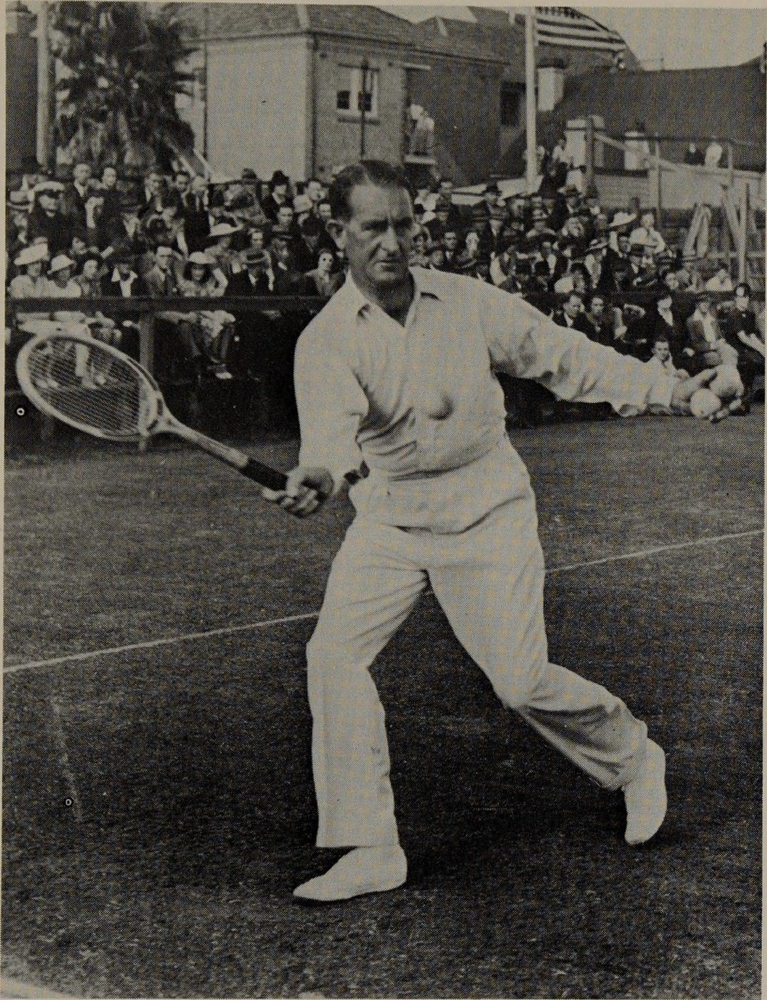
Cú vô lê thuận tay được thực hiện dễ dàng và tập trung vào trận đấu một cách rõ ràng — một màn thể hiện sự tập trung thoải mái của Crawford. (Xem văn bản, trang 18, 19)
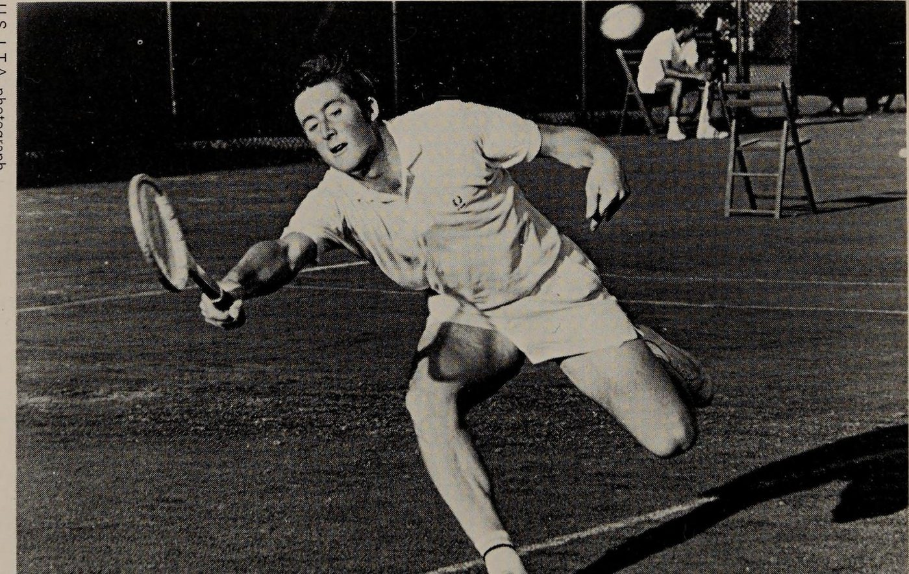
Từ chân phải của anh ấy, Peter Curtis của Vương quốc Anh đã vươn tới những inch thừa đó. (Xem văn bản, trang 118)
có khả năng gây ra sự xáo trộn trong các giải đấu. Nhưng đừng mong đợi giành chiến thắng trong bất kỳ giải đấu nào trong một công ty tốt. Bạn có thể làm phiền lòng một vài người chơi đây đó, nhưng trong bất kỳ một giải đấu nào, sẽ là quá đáng khi hy vọng rằng tất cả những các tay vợt đang thi đấu sẽ không khỏe mạnh. Nếu bạn là một học sinh còn trẻ, đừng quá ấn tượng nếu lối chơi phòng thủ hoàn toàn mang lại cho bạn thành công tương đối. Đó là một nền tảng công bằng—nhưng chỉ là nền tảng, vì vậy hãy chắc chắn xây dựng một số cấu trúc bổ sung trên đó. Dành cho những người trẻ tuổi cứng rắn. Nếu bạn là một thiếu niên thích đánh mạnh thì rất có thể đây là môn quần vợt thoải mái và tự nhiên nhất của bạn. Trong các trận đấu, đừng tấn công một cách liều lĩnh, nếu không bạn chắc chắn sẽ thua và phải hứng chịu rất nhiều lời chỉ trích, thậm chí có thể là khinh thường lối chơi của mình; hơn nữa, sẽ không ai muốn bạn làm đối tác đánh đôi. Nhưng bạn nên tiếp tục chơi môn quần vợt nhanh, vì đây là cách duy nhất để bạn có thể di chuyển một cách tự nhiên. Nếu bạn chơi chậm, chân bạn sẽ chậm lại. Bạn sẽ cảm thấy ngày càng vụng về hơn và cuối cùng là mất hết sự tự tin. Tôi hẳn đã nói rõ rằng tôi không khuyên bạn nên chơi chậm và tôi không thích nó lắm. Tôi không chỉ ngưỡng mộ những chú chó tha mồi. Tôi thực sự không thích môn quần vợt luôn đặt an toàn lên hàng đầu và luôn luôn là an toàn - mặc dù ít nhất tôi không bận tâm khi thi đấu với nó. Những người chơi theo đuổi chính sách phong cách chậm khi họ có khả năng đánh bóng tốt hơn nhiều đang thực sự kìm hãm sự phát triển quần vợt của họ đến mức giống như một chậu cây Nhật Bản. Hãy tự hỏi quần vợt hay cuộc sống sẽ như thế nào nếu không có ai dám mạo hiểm hoặc tỏ ra chủ động. Trong trường hợp bạn cho rằng điều này đồng nghĩa với việc tôi hoàn toàn không thích và không có gì khác, tôi sẽ cho bạn biết tôi thích gì. Tôi thích một người chơi có lối đánh mượt mà, chiến đấu đến từng inch cuối cùng. Nếu anh ấy làm việc đó một cách ngầu như vậy thì tôi yêu anh ấy.
Quần vợt trong điều kiện xấu
"T đã làm tốt những gì tôi có thể, trong điều kiện đó; không ai có thể mong đợi chơi đúng cách trong điều kiện đó," người đàn ông bất mãn rời sân sau khi thi đấu tệ trong điều kiện tồi tệ và đang cố gắng che giấu sự thất vọng vì đã thua trong khi vào một ngày tử tế mà anh ta nghĩ rằng mình sẽ thắng. Một số lượng lớn các tay vợt không cố gắng hết sức trong điều kiện tồi tệ, nhưng sẽ cảm thấy bị xúc phạm nhất nếu có ai nói với họ như vậy. Mọi người đều có thể chơi tốt hơn trên một sân tốt vào một ngày tĩnh lặng. Nhưng, trừ khi bạn hài lòng với việc trở thành một Trong thời tiết thuận lợi, bạn vẫn phải cố gắng hết sức trong điều kiện tồi tệ. Bạn có thể cảm thấy đây không phải là trận đấu thực sự, nhưng kết quả vẫn giống nhau. Các trận đấu Davis Cup nổi tiếng đã diễn ra trong những hoàn cảnh tồi tệ nhất mà chúng ta có thể gặp phải. Nói chung, điều tốt nhất bạn có thể làm là chuẩn bị trước cho những điều kiện mà bạn chắc chắn phải đáp ứng thay vì chỉ để ý đến chúng hoặc liên tục ngạc nhiên trong suốt trận đấu bất cứ khi nào có điều gì bất thường xảy ra. Mặc dù không mong đợi sẽ phát huy phong độ đỉnh cao, ít nhất hãy quyết tâm bị đánh lừa ít hơn đối thủ của bạn.
Giữ quyền kiểm soát trong gió
Nhận biết hướng gió so với sân và sức mạnh của gió trước khi bạn rời khỏi nhà. Để chắc ăn, hãy đoán rằng gió ở sân còn mạnh hơn thế; nếu có một số trong số chúng nằm ở một khu vực bằng phẳng thì chắc chắn sẽ như vậy. Các phi công, luôn nhận thức trước điều kiện gió, sử dụng kỹ thuật cất cánh theo chiều gió ngay từ đầu; họ không đợi bị gió thổi lệch hướng rồi mới điều chỉnh. Điều này có thể được áp dụng trong quần vợt. Nhưng mãi về cuối một trận đấu có gió chéo, bạn vẫn thấy người ta đánh bóng ra ngoài dọc đường biên và rõ ràng là cảm thấy gió đã cướp mất điểm của họ. Hoặc họ chơi ngược gió và đánh rất nhiều bóng vào lưới với cùng thái độ ấy. Xuôi gió. Khi chơi xuôi gió (gió phía sau bạn) vào một ngày mạnh, hãy cố giữ mọi game, vì các game ở đầu sân này có thể trở thành tương đương với các game giao bóng. Sau đó, bạn cố bẻ một game của đối thủo hướng thuận lợi của đối thủ. Chơi theo chiều gió sẽ mang lại cho bạn một lợi thế. Gió mang lại tốc độ cho các cú đánh của bạn mà bạn không cần phải tác động, giúp bạn thoải mái tập trung hơn vào việc kiểm soát. Nếu có bất kỳ cú đánh nào (ngoại trừ cú đánh rơi, và có thể là cú lốp bóng), bạn thà chơi ngược gió để đảm bảo an toàn, đó là một trong những điểm yếu của bạn và cần được luyện tập nhiều hơn. Đây là một bài thử axit. Trong khi đó, hoặc trong mọi trường hợp nếu gió mạnh, bạn nên điều chỉnh các cú đánh của mình để đối phó. Hãy dùng điểm tiếp xúc kéo dài quá mức, động tác vung vợt ra sau ngắn hơn và cao hơn và cao hơn, hoặc cắt lát nhỏ, hoặc bất cứ điều gì bạn thích miễn là bạn cố tình làm điều gì đó, khác với việc thực hiện một số cú đánh bình thường và đổ lỗi cho gió về sự khác biệt trong kết quả. Vào lưới nhiều hơn, vì lý do kép là những cú đánh tiếp cận của bạn khiến đối thủ của bạn có ít thời gian hơn và những cú chuyền cố gắng của anh ta sẽ tương ứng chậm hơn. Ngược gió. Chơi ngược gió, bạn vẫn có thể phải vào lưới khá thường xuyên. Đây là một cách để ngăn cản người đi xuôi gió luôn có lưới. Ngoài ra, bạn có thể thấy mình phải đối mặt với một trong những người chơi có thể đưa một cú đánh bóng xoáy lên cao đến tận đường cuối sân, nơi nó bật lên và đưa gần đến hàng rào phía sau. Bạn sẽ bị buộc phải thực hiện cú vô lê sâu một nửa trong số này hoặc bạn sẽ phải ở trên lưới. Kết quả của tất cả những điều này là trong một trận đấu nhiều gió có thể sẽ có nhiều pha vào lưới hơn bình thường. Chơi ngược gió, đừng quên cú đánh rơi. Gió ngược. Khi có gió ngược, bạn thường tấn công về phía có gió thổi, đồng thời đặt cú giao bóng của bạn về phía đó. Điều này giúp cuộc tấn công của bạn có độ xuyên thấu cao hơn. Thực hiện một cú đánh vụng về, mạo hiểm hoặc một cú lốp bóng cao, bạn hướng tới sự an toàn và thực hiện nó về phía đệm của gió ngược. Một lần nữa lưới là một đề xuất tốt. Đối với bạn, việc điều chỉnh cú vô lê của mình trong gió xoáy sẽ dễ dàng hơn so với việc đối thủ kiểm soát các cú đánh xuyên qua của anh ta, việc này phải được thực hiện sau khi các cú đánh tiếp cận của bạn đã xoay ra xa hoặc hướng về phía cơ thể anh ta. Nếu một cơn gió chéo thổi thì đó là một sự trợ giúp tuyệt vời cho dịch vụ đu dây theo chiều gió. Những người thuận tay trái dường như tận dụng rất tốt điều này. Khi hai thương gia thông thái về thời tiết chơi với nhau trong gió, trận đấu là một cuộc đấu tranh gay cấn và sau đó sẽ không bao giờ có ai nói rằng không ai có thể chơi trong điều kiện như vậy. Khi một trong những người đàn ông này đấu với một đối thủ trong thời tiết thuận lợi trong điều kiện tương tự, anh ta có thể không thực sự chơi tốt như những gì anh ta có thể có trong một ngày tĩnh lặng, nhưng rõ ràng anh ta có nhiều cơ hội hơn để giành chiến thắng khi rời sân. Chơi trong gió là một bài kiểm tra hoàn hảo xem thái độ chơi quần vợt của bạn là tận dụng mọi lợi thế có được hay ngồi lùi lại và đón nhận mọi cú đánh mà số phận giáng xuống.
Chơi trên sân ướt hoặc sân xấu
Nếu bạn buộc phải thi đấu dưới trời mưa, bạn phải quyết định xem bạn quan tâm đến việc giành chiến thắng trong trận đấu hay bảo vệ vợt của mình hơn. Khi đó bạn phải tập trung vào một trong những mục tiêu này, bởi vì bạn không thể tập trung vào cả hai. Đừng ngã hai hoặc ba lần và mất bình tĩnh khi phát hiện ra sân trơn trượt. Bạn có thể mong đợi điều đó xảy ra, đặc biệt nếu đó là cỏ. Nếu bạn phải dừng lại và bắt đầu lại thì sẽ không có điểm phù hợp. Đừng tưởng tượng rằng nó sẽ lo lắng suốt cả ngày. Hãy quyết tâm giành điểm đầu tiên khi khởi động lại và để nó nghỉ ngơi ở đó. Điều này nói thì dễ hơn làm, nhưng đó là điều tốt nhất bạn có thể làm. Đối thủ của bạn thậm chí có thể không làm được như vậy. Ngày nay, việc gặp phải những mặt sân cứng gồ ghề là điều bất thường, nhưng nó thường xảy ra trên sân cỏ. Tránh càng nhiều cú nảy xấu càng tốt bằng cách vào lưới. Khi bạn thực hiện một cú đánh kém, bạn thường được cứu bởi một cú nảy xấu cản trở cú đánh dự định của đối thủ. Khi chơi các cú đánh trên mặt đất, hãy thực hiện chúng muộn hơn bình thường một chút. Nếu bạn là một người chơi có cổ tay chắc chắn và có cú xoay bóng tốt, hãy thả lỏng cổ tay một chút để có thể xử lý bất kỳ quả bóng nào đột ngột bắn, bật lên hoặc đổi hướng. Hãy nguyền rủa sân đấu một chút nếu bạn muốn, nhưng đừng bao giờ đến mức khiến bạn phải chú ý đến việc đối phó.
Xử lý những quyết định khả nghi
Một cuốn sách nhỏ có thể được viết về các quyết định đường dây gây tranh cãi về các điểm quan trọng và dẫn đến những xáo trộn và “sự cố”,’ được hỗ trợ bởi lý luận của tác giả về lý do tại sao tất cả các loại trường hợp lại xảy ra và chính xác từng trường hợp lẽ ra phải được giải quyết như thế nào. Nhưng nó có thể sẽ khiến bạn không bị thuyết phục và chắc chắn sẽ làm bạn chán nản. Tôi đề nghị thay thế bằng một bản tường thuật cô đọng về các tình huống có thể xảy ra và một đường lối ứng xử được đề xuất. “Sự cố” trên sân quần vợt là hoàn toàn đáng trách. Đừng bao giờ tạo ra một cái gì đó và luôn cố gắng hết sức để không tham gia vào nó. Bất cứ khi nào bạn cảm thấy khó chịu về bất cứ điều gì - và nguyên nhân thông thường nhất là một quyết định trực tiếp chống lại bạn - quy tắc vàng của kinh nghiệm là chỉ mất điểm đó và không bao giờ đánh mất một chuỗi chúng như một loại phản ứng tức giận hoặc chán nản. Khi thi đấu mà không có trọng tài, bạn thực hiện các cú đánh ở phía mình và đối thủ của bạn sẽ thực hiện các cú đánh theo hướng của mình. Hãy tự hào rằng bạn không bao giờ cố tình thực hiện sai cú đánh. Tôi không thuyết giảng. Bạn chắc chắn sẽ thấy rằng lòng tự trọng mà chính sách này mang lại cho bạn là tài sản bền vững nhất trong cuộc chơi của bạn. Nếu bạn tiếp tục chơi sau một quả bóng khả nghi và cuối cùng thua cuộc đánh bóng, bạn không thể quay lại và nói rằng quả bóng trước đó đã bị loại ra ngoài. Làm như vậy có nghĩa là bạn đang chơi mà không có khả năng thua trong khi đối thủ của bạn có thể đang kiệt sức trong cuộc biểu tình. Đây là một mật mã chứ không phải một quy tắc và nếu bạn vi phạm nó, bạn gần như chắc chắn sẽ bị coi thường. Tương tự như vậy, điều an toàn nhất với những quả bóng nghi ngờ là luôn tiếp tục thi đấu. Hầu hết các quả bóng khả nghi đều thực sự chạm vạch và bạn không thành thật với chính mình hoặc với đối thủ nếu bạn yêu cầu một let một quả bóng thực sự nằm trong đó, chỉ vì bạn tạm thời nghi ngờ về điều đó. Một điểm quan trọng và tổng thể cần nhớ là chính sách chơi tiếp giúp bạn không bị do dự và không thể chăm chú theo dõi đường biên thay vì chăm chú nhìn bóng. Nói cách khác, nó không ngây thơ như bạn nghĩ. Bạn sẽ tỏ ra hào hiệp nhưng không gây bất lợi cho riêng mình.
Khi bạn có trọng tài, hãy làm theo lệnh của ông ấy và không chú ý đến vị trí bóng đi so với đường biên. Chỉ truy vấn những gì có thể là một lỗi trắng trợn. Nếu bạn nhận được một điểm mà lẽ ra bạn không nhận được từ một pha bóng gần nào đó, đừng bao giờ cố gắng san bằng mọi thứ bằng cách cho đi điểm tiếp theo. Nếu đối thủ của bạn làm điều tương tự, bạn sẽ giống như một cặp kế toán đang cân đối sổ sách, khán giả sẽ lẩm bẩm và trọng tài sẽ có quyền bỏ đi. Hãy nhớ rằng bạn đang chơi theo lệnh của trọng tài chứ không phải nơi bóng chạm đất. Hãy để mọi việc có thể xảy ra vào buổi tối cho trọng tài. Sẽ là khôn ngoan khi mong đợi một hoặc hai sai lầm từ trọng tài. Dù anh ấy giỏi đến đâu, sẽ có lúc anh ấy không thể nhìn rõ bóng như các tay vợt có thể, và anh ấy thiếu khả năng phán đoán theo bản năng của họ về việc một quả bóng gần có khả năng vào hay ra ngoài trước khi nó chạm đất. Trong những trận đấu đỉnh cao mà Trọng tài thực hiện mọi biện pháp phòng ngừa, vẫn xảy ra lỗi. Lấy ví dụ, những môn quần vợt mà ở mỗi hàng đều có một người đàn ông. Hệ thống này sẽ hoàn hảo ngoại trừ việc với quá nhiều người xếp hàng thì càng có nhiều cơ hội để một trong số họ sa thải. Toàn bộ sự sắp xếp từ lâu đã khiến tôi nhớ đến những chiếc máy bay hai động cơ đời đầu không thể bay bằng một động cơ. Thay vì tăng cường độ an toàn, họ lại tăng gấp đôi nguy cơ hỏng động cơ. Tất cả chúng ta đều chỉ trích nhiều hơn là logic về những sai lầm của trọng tài. Chúng ta coi hàng trăm quyết định đúng là điều hiển nhiên, và khi một vài quyết định tồi xuất hiện, chúng ta lại phóng đại tầm quan trọng của chúng và quên rằng trong hầu hết các trận đấu, chúng được phân bổ khá đồng đều. Có lý khi nói rằng trọng tài gần như luôn công bằng nhưng hiếm khi vô tư. Có một sự khác biệt rất lớn giữa hai trạng thái tâm trí này. Tất cả chúng ta đều có xu hướng nhìn mọi thứ theo cách chúng ta muốn thấy. Một trọng tài có kinh nghiệm biết điều này và khắc phục được sự thiên vị của mình. Một trọng tài thiếu kinh nghiệm không biết điều đó và “gọi quả bóng khi nhìn thấy chúng”, trước sự đau khổ của bên bị hại. Đây chính xác là những gì xảy ra trong các trận chung kết của đội cấp dưới và đội trẻ, nơi mà tay vợt/trọng tài thiếu kinh nghiệm nhất và xảy ra nhiều bất mãn nhất. Nhưng không ai cố tình không công bằng.
Gian lận thì lại là chuyện khác
Gian lận cũng không xuất hiện nhiều trong các trận đấu không có trọng tài ở bất kỳ giải đấu hoặc khu vực cụ thể nào. Những người xem, trong cơn lo lắng, chắc chắn rằng họ liên tục nhìn thấy các ví dụ, nhưng ít người chơi có thể nói rằng họ đã bị lừa một cách có chủ ý và liên tục trong suốt một trận đấu. Những người chơi trên sân cứng, sau một thời gian dài gắn bó với các vết bóng chỉ chạm vào mép vạch, đã quen với việc thực hiện những cú đánh rất sâu và cuộc giao tranh tiếp tục. Trong giải đấu sân cỏ đầu tiên, họ thường bị sốc, trong khi những người ủng hộ họ trở nên phẫn nộ và có thể tuyên bố toàn bộ giải đấu chỉ dành cho những người ngoài vòng pháp luật. Nếu không có vết bóng—đó là một điều may mắn lẫn lộn khi bản thân các đường kẻ không hoàn hảo—người chơi gọi các quả bóng khi họ nhìn thấy chúng và hầu hết các quả bóng rất gần đều có vẻ như bị lệch ra ngoài. Thêm vào đó là một chút hy vọng thiên vị trước đây được cho là của các trọng tài, và gần như chắc chắn là họ sẽ bị loại. Sau khi chơi trên sân cỏ một thời gian, bản thân các tay vợt trên sân cứng cũng nhìn nhận mọi thứ theo cách tương tự. Nếu bạn hiểu trước điều này, bạn sẽ không cảm thấy khó chịu như hàng tá người chơi trước bạn đã cho phép mình như vậy. Đừng tưởng tượng rằng những người cố tình gian lận sẽ giành được lợi thế tổng thể. Họ lén lút ghi thêm điểm này chỗ kia nhưng nhược điểm kèm theo rất nặng nề. Nếu họ không giỏi gian lận, họ sẽ cảnh báo đối thủ ngay lập tức, và điều này chủ yếu có xu hướng củng cố quyết tâm của anh ta và khiến anh ta tập trung vào việc đánh bóng thật tốt. Cho dù những trò gian lận có giỏi đến đâu, chúng vẫn luôn bị biết đến và sự sỉ nhục cuối cùng đang chờ đợi chúng. Bất cứ ai giỏi gian lận đến mức không bao giờ bị chèn ép sẽ lãng phí thời gian chơi quần vợt. Lẽ ra anh ta nên bận rộn gian lận trong việc đánh bài và kiếm bộn tiền cho mình. Trả thù không phải là câu trả lời tốt nhất cho hành vi gian lận. Nó chỉ liên quan đến bạn trong đó. Cách đối phó tốt nhất, như tôi đã nói, là tăng cường quyết tâm và sự tập trung, được hỗ trợ bởi quyết tâm rằng, dù có chuyện gì xảy ra, bạn sẽ chỉ mất đi quan điểm liên quan và không còn thiện cảm với nó nữa. Giống như những cánh đồng ở xa trông xanh hơn, thì một điểm mà bạn bị tước đoạt một cách bất công cũng vậy. Có lẽ nó có nghĩa là môn quần vợt, và điều đó có nghĩa là điểm số tương tự, v.v., cho đến khi cuối cùng một trận thua trở thành do một điểm. Có lẽ đúng như vậy, và tôi không đề xuất tranh luận qua lại và kết thúc bằng cách không thuyết phục những ai không muốn bị thuyết phục. Tình thế khó khăn xoay quanh một điểm - và điểm đó, do sự trùng hợp kéo dài, một điểm gây tranh cãi - xảy ra thường xuyên hơn nhiều đối với những người mới vào nghề và những người chơi thiếu kinh nghiệm hơn là đối với những đối thủ dày dặn kinh nghiệm. Do đó, phải có nhiều điều hơn là chỉ điểm thực tế. Chấp nhận hay bỏ nó, bản chất của việc có thể chăm sóc bản thân ở bất kỳ công ty nào và ở mọi lứa tuổi hay cấp lớp nằm ở việc bạn có thể cống hiến mọi thứ bạn có cho điểm tiếp theo, điểm sắp tới, bất kể điều gì đã xảy ra với điểm cuối cùng. Tôi nghĩ hầu hết những người kiên trì với trận đấu sẽ đồng ý.
Giao bóng vào ánh nắng
Tại Wimbledon, không giống như Australia, họ không phải giao bóng vào buổi sáng. Khi một tay vợt được mời thi đấu ở Giải vô địch đơn nam, anh ta không được phép ra khỏi giường vào buổi sáng để làm điều đó. Những trận đấu sớm nhất được lập trình vào lúc hai giờ chiều, sau khi mọi người đã ăn trưa ngon miệng. Giống như hầu hết những thứ khác, quy trình này có một hoặc hai điều cần lưu ý trong đó. Đôi khi những người bắt đầu muộn phải chiến đấu trong ánh chạng vạng kéo dài, và sau đó họ thực sự ăn tối rất muộn. Vào những năm 1930, Jack Crawford vĩ đại đã có một trong những màn trình diễn đẹp nhất của ông vào một buổi chiều muộn và buổi tối. Nữ hoàng Mary ngồi say mê trong Chiếc hộp Hoàng gia cho đến tận 8 giờ, và nhạc trưởng được báo chí London mô tả là người
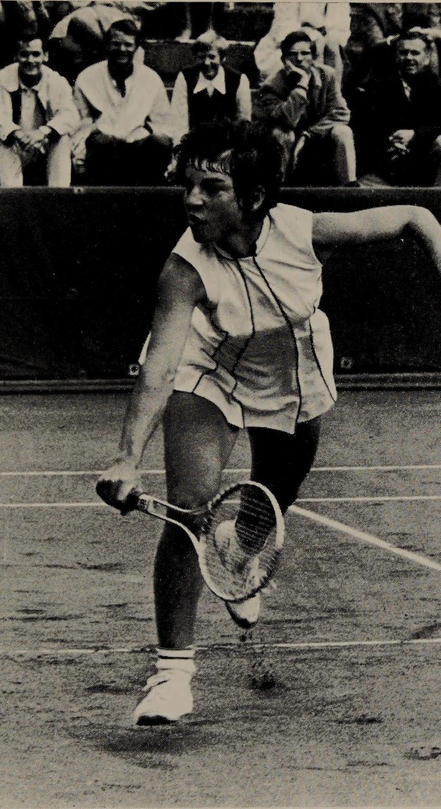
Julie Heldman không biết gì về bùn. (Xem văn bản, trang 132)
người đàn ông đã khiến Hoàng thượng phải chờ đợi bữa ăn hoàng gia. Điều quan trọng là chúng vẫn phải giao bóng dưới ánh nắng mặt trời. Điều này nghe có vẻ khó hiểu với những người con Nam bán cầu vốn ngoan đạo, nhưng ở Bắc bán cầu, chính những người thuận tay phải mới phải giao bóng dưới ánh nắng chiều. Khoảng năm 1907 có rất ít người thuận tay trái. Điều này là do tập quán man rợ phổ biến là đào tạo những người thuận tay trái một cách thực tế/tự nhiên ngay sau khi sinh ra thành những người thuận tay phải vụng về và đôi khi lắp bắp. Tuy nhiên, vào năm 1907, danh hiệu Wimbledon đã thuộc về tay vợt thuận tay trái, Norman Brookes người Úc. Một phóng viên tờ báo, quên mất rằng lẽ ra anh ta phải là một nhà văn thể thao, đã viết rằng Brookes đã có một lợi thế không công bằng vì thuận tay trái nên anh ta không phải giao bóng việc nhìn xuống mặt trời. Quan sát này thực sự được coi là một màn trình diễn tồi tệ vì nó nhằm vào một du khách đến Anh. Một tay vợt địa phương luôn là môn quần vợt công bằng đối với Báo chí, nhưng một vị khách không thể làm gì sai, ngay cả khi chơi bằng tay trái. Wimbledon cảm thấy nhục nhã một cách thích hợp. Khi chúng ta bắt đầu lúc 8 giờ 30 sáng (các độc giả người Anh có vui lòng ngừng rùng mình được không?), những người thuận tay phải ở Nam bán cầu chúng ta không được cảm thấy quá tiếc nuối cho chính mình. Chúng tôi không phải là những người duy nhất phải giao bóng dưới ánh nắng mặt trời. Như bạn đã biết, Crawford ít nhất đã phải làm vậy trong một khoảng thời gian để mê hoặc Nữ hoàng. Các đối thủ thuận tay phải của Brookes lần lượt làm điều tương tự, và chừng nào còn có giải Wimbledon và ánh nắng chiều trong tháng 7 ở Anh thì điều đó sẽ vẫn như vậy. Không có gì để giao bóng dưới ánh nắng mặt trời - ngoại trừ thực tế khó khăn là bạn không thể thực hiện cú giao bóng bình thường của mình. Bất cứ khi nào cú tung bóng bình thường của bạn đặt quả bóng thẳng hàng với mặt trời, việc nghiến răng, nheo mắt và tiếp tục thực hiện nó là sai lầm. Nó có xu hướng khiến bạn mù quáng khi trả bóng, và đó là thứ quần vợt kém cỏi. Một giải pháp thay thế tốt hơn, khi mặt trời đang ở một vị trí thực sự tồi tệ, là thay đổi cú tung bóng của bạn (và do đó cả hành động của bạn, và ở một mức độ nào đó là hiệu quả của cú giao bóng của bạn) để bạn không ném bóng trực tiếp theo hướng mặt trời và do đó bạn có thể nhìn thấy quả trả bóng một cách rõ ràng. Ở đâu đó giữa vai trái của bạn và phía bên phải của bạn có một nơi mà bạn có thể ném bóng sao cho nó không thẳng hàng với mặt trời. Sự khác biệt giữa cách ném này và cú tung bóng bình thường của bạn có thể được giảm bớt bằng cách tìm vị trí tốt nhất để đứng giữa vạch giữa và đường biên. Bạn cũng nên thay đổi một chút, theo hướng này hay hướng khác, vị trí bên cạnh bình thường của bạn so với lưới. Kết quả của tất cả những điều này là cứ mỗi giờ vào buổi sáng, bạn có thể tránh giao bóng trực tiếp dưới ánh nắng mặt trời. Bạn không cần một chiếc mũ rộng vành hay bất cứ thứ gì tương tự. Nếu bạn thấy đối thủ giao bóng mạnh và mạnh với cùng cú tung bóng và hành động mà anh ta đã sử dụng khi kết thúc tốt, bạn có thể chắc chắn rằng anh ta đang nhìn vào mặt trời và rất có thể chỉ riêng cú giao bóng của anh ta cũng đủ tốt để đánh bại bạn. Vì vậy, đừng quá chú trọng vào việc trở lại giao bóng và hãy cho anh ta cơ hội 50/50 bằng cách mạo hiểm phạm sai lầm. Đưa nó trở lại hoạt động; ngay cả khi nó hơi yếu ớt, nó vẫn đang trên đường đến với một người đàn ông sẽ không nhìn nhận nó rõ ràng như anh ta mong muốn. Và bạn không cần phải lo lắng về những người anh em họ người Anh của mình và những vị khách của họ giao bóng không ngừng nghỉ cho đến khi có giải Wimbledon và cho đến khi những người thuận tay phải tiếp tục thống trị trái đất. Họ sẽ không nhìn vào mặt trời. Nếu họ đủ thiếu kinh nghiệm để làm điều đó, họ có thể lịch sự như họ muốn, nhưng họ sẽ không bao giờ được mời thi đấu ở Nội dung đơn nam tại Wimbledon. Chúng sẽ không đủ tốt để thu hút công chúng chơi. Bên dưới chiếc áo khoác cài cúc của quan chức người Anh có thể có một trái tim rộng lượng, nhưng bên dưới chiếc mũ quả dưa của ông ta còn có một cái đầu rất cứng rắn.
Mệt mỏi, nhưng vẫn thắng
Mọi người đều phải chơi một số trận đấu khi mệt mỏi. Cho dù bạn có khỏe mạnh đến đâu, sẽ có lúc sự khác biệt giữa thắng và thua phụ thuộc chủ yếu vào năng lượng còn lại của bạn. Bảo vệ chống lại sự thờ ơ về tinh thần. Khi mệt mỏi, bạn thường khá thoải mái và dễ dàng hài lòng với những điều không tốt nhất của mình. Bạn cảm thấy mình đã làm rất tốt để đạt được điều này, bạn đánh bóng mượt mà từ giữa dây, bạn không hề làm mình xấu hổ. Và xét cho cùng, bạn sẽ không thực sự bận tâm nếu mình thua. Đừng lo lắng, bạn sẽ mất mọi quyền lợi trừ phi người đàn ông kia thậm chí còn mộng du nhiều hơn bạn. Dù sao đi nữa, rất nhanh sau đó, khi bạn vừa tắm xong, bạn sẽ cảm thấy vô cùng bất mãn. Do đó, bạn phải tách biệt sự mệt mỏi về thể chất với sự thờ ơ về tinh thần, và điều này được thực hiện tốt nhất bằng cách đưa ra một số ý tưởng mang tính xây dựng để thực hành. Nếu đối thủ của bạn đã đấu nhiều trận như bạn thì anh ta cũng sẽ mệt mỏi không kém. Hãy ý thức đầy đủ về điều này. Nếu có ai định thư giãn một cách hài lòng, hãy để người đó đi. Tránh giao bóng hai quả bóng càng nhiều càng tốt. Cho đến khi bạn thử điều này, bạn có thể không biết nó có thể giúp bạn tiết kiệm được bao nhiêu nỗ lực (thể chất trong lần giao bóng đầu tiên, tinh thần trong lần giao bóng thứ hai). Chỉ cần trượt quả bóng đầu tiên vào; nếu anh ta mệt mỏi, anh ta sẽ không làm được gì nhiều cho việc đó. Ngay khi bạn tung cho đối thủ một cú đánh khiến anh ta hơi khó xử, đừng ngần ngại thực hiện cú đánh vào lưới. Nó rút ngắn thời gian chạy, và chạy về phía trước ít mệt hơn chạy từ bên này sang bên kia. Luôn giữ các đợt tăng giá ngắn – tất nhiên, trừ khi bạn cố tình kéo dài chúng vì bạn cảm thấy điều này thậm chí còn khiến anh ta yếu đi hơn là đối với bạn. Phá vỡ bất kỳ pha giao bóng nào đang diễn biến không tốt bằng cách thực hiện một cú đánh nhanh hoặc một cú đánh rơi, hoặc thay đổi nó bằng cách thực hiện một cú lốp bóng cao. Dù bạn làm gì, đừng loạng choạng từ bên này sang bên kia như một con rối trên dây, chậm rãi nhưng chắc chắn sẽ mất điểm. Rất có thể bạn sẽ phải trả giá cho lần tiếp theo. Khi phải đập bóng, dù đó không phải là một cú đánh khó, hãy giữ mình gọn gàng. Khi mệt mỏi, đừng bao giờ căng cơ đám rối thái dương quá mức; nếu bạn làm thế, nó sẽ làm bạn yếu đi trầm trọng. Khi bạn chỉ đang giữ bóng đi, hãy nhớ rằng những cú đánh mặt đất tốn ít nỗ lực nhất là cú đánh thuận tay thẳng và cú đánh trái tay chéo sân. Cần phải tập trung hơn, nỗ lực cổ tay và xoay vai để thực hiện các số đối diện, các số này cũng có xu hướng ngắn khi bạn mệt mỏi. Sẽ thật tệ nếu bạn chơi thuận tay trái; đây là một trong những lợi thế tự nhiên khác của người thuận tay trái. Có thể sẽ có rất nhiều mồ hôi, nhưng nó chỉ có thể gây hại cho bạn nếu mồ hôi dính vào mắt. Hãy dùng khăn ẩm thay vì bất cẩn vốc từng nắm nước vào mặt. Một lời cuối cùng, trước khi các bác sĩ hoặc những người vợ lo lắng lao vào tôi. Nếu bạn đã ngoài bốn mươi, hơi béo và thực sự đau khổ, hãy bỏ cuộc. Hãy nói với đối thủ của bạn rằng anh ta quá giỏi. Anh ta sẽ không cảm thấy thiếu thốn bất cứ điều gì. Chiến đấu cho đến hơi thở cuối cùng là một điều tốt để khuyến khích ở tất cả các vận động viên trẻ, nhưng đối với một số vận động viên cổ điển lớn tuổi, điều đó có thể đúng theo nghĩa đen. Nếu bạn tìm thấy một đối thủ mệt mỏi không kém, người biết tất cả những gì tôi đã viết ở đây, thì rõ ràng cả hai bạn đang ở trong một khoảng thời gian mệt mỏi. Nếu anh ta không biết điều đó, bạn có cơ hội đánh bại anh ta cao hơn so với khi cả hai đều còn mới. Ai có thể nghĩ ra điều đó?
Đánh đôi hiệu quả
Effective doubles
Các đợt phục hồi kéo dài, với lợi thế thay đổi từ bên này sang bên kia và ngược lại; đòn tấn công cơ bản và lưới được chia đều trong một trận đấu; vận may biến động với các trận đấu thắng và thua—những biến thể này là một phần tất yếu của các trận đấu đơn cho đến một cấp độ quần vợt khá cao, sau đó, thật không may, chúng hiếm khi được nhìn thấy. Họ không thuộc về đôi. Có thể nói, những trận đấu đơn đỉnh cao ở giai đoạn hiện nay được thi đấu giống như một trận đấu đôi với chỉ một người mỗi bên. Lưới luôn là vị trí tốt nhất nếu có thể che được. Các nhà vô địch ngày nay có thể thực hiện cú giao bóng tốt hơn bao giờ hết, bằng sự kết hợp giữa giao bóng hiệu quả ổn định hơn và tốc độ trên sân nhanh hơn. Số đo của con người đã tăng lên đều đặn trong khi kích thước của sân vẫn không thay đổi. Một lý do khác được nâng cao là tiêu chuẩn của các cú đánh trên mặt đất ngày nay đã xuống cấp tương đương với việc giao bóng và chơi trên lưới đã được cải thiện; điều này không đúng với những nhà vô địch giỏi nhất, nhưng thật không may, nó lại áp dụng cho phần lớn lối chơi vô địch mà chúng ta thấy. Kết quả là những đĩa đơn hạng nhất đã giảm giá trị khi thu hút khán giả. Nhiều sửa đổi khác nhau đối với các quy tắc đã được đề xuất: chỉ được phép thực hiện một lần giao bóng (nhưng điều này sẽ lấy đi sự phấn khích và sức mạnh của trận đấu và sẽ ảnh hưởng đến bất kỳ cấp độ quần vợt nào thấp hơn do gây ra quá nhiều lỗi kép tương đương); rằng quả giao bóng được thực hiện từ một đường được đánh dấu phía sau vạch cuối sân hiện có một thước (trong số những phản đối khác, điều này sẽ cản trở sự phát triển của các đàn em); rằng người giao bóng bị cấm thực hiện cú vô lê cho đến sau khi lần giao bóng đầu tiên được thực hiện (được thử bởi các chuyên gia mà không tạo ra sự nhiệt tình ở bất kỳ ai). Giải pháp tốt nhất có vẻ là giảm độ nén của quả bóng. Điều này, nếu không tính đến việc thay đổi hàng nghìn sân trên khắp thế giới, sẽ có tác dụng tương tự như làm cho sân rộng hơn hoặc giảm chiều cao lưới xuống một chút. Trong các nội dung đánh đơn hạng nhất, sự cân bằng cần thiết giữa các cú đánh trên mặt đất và đánh trên lưới sẽ được khôi phục và những người khác sẽ thấy việc đánh bóng vào dễ dàng hơn. Mọi người? Vâng, mọi người. Có lẽ có sự chà xát. Liệu đơn nữ có bao giờ kết thúc? Bây giờ hãy quay lại môn quần vợt đánh đôi của chúng ta, lối chơi này mới chỉ bắt đầu. Đánh đôi có chiến thuật riêng, sự liên kết của nó với đấu đơn biến mất tương đối sớm trong quần vợt cạnh tranh. Từ thời điểm này, việc nhân đôi trở thành vấn đề lấy những gì bạn có thể bất cứ khi nào bạn có thể. Một cặp biết rõ công việc kinh doanh của mình sẽ tạo ra cơ hội thay vì chờ đợi chúng xảy ra và chương này chỉ đề cập đến hình thức chơi đôi nâng cao này. Đối với mọi ý định và mục đích, có lưới có nghĩa là có lợi thế. Vì bên giao bóng có cơ hội đầu tiên để đưa cả hai đấu thủ vào lưới, điều đó diễn ra trong một cuộc tranh tài giữa hai cặp đánh đôi tốt mà chắc chắn cả bốn đấu thủ đều thực hiện cú giao bóng của họ vào lưới. Bên giao bóng thắng hầu hết các ván đấu; không quá nhiều vì số lần giao bóng vượt trội hơn nhiều so với số lần trả bóng cũng như vì bên giao bóng luôn được cả hai đấu thủ sử dụng lưới đầu tiên. Các trận đấu đôi vô địch rất khác nhau, đôi khi tạo ra màn trình diễn nghệ thuật hay nhất và đôi khi là màn trình diễn nhàm chán nhất về nó. Chiến thuật trong cả hai trường hợp đều bao gồm việc các đấu thủ hầu như chắc chắn sẽ giữ được ván giao bóng của mình (để không thể thua set) và tấn công mạnh mẽ bằng việc trả giao bóng đến mức hầu như mọi rủi ro đều có thể chấp nhận được nếu kết quả là bất kỳ một trong các ván giao bóng của đối thủ bị hỏng. Khi những cú đánh nền tốt, cảnh tượng vừa vặn sẽ ở đẳng cấp hàng đầu; khi chúng không như vậy, các set lợi thế kéo dài nhưng không thú vị có thể là kết quả của việc đánh và đánh trượt của người nhận. Sau khi thoát khỏi sự kết hợp không mấy hài lòng giữa giao bóng đỉnh cao và những cú đánh nền không thỏa đáng, đánh đôi một lần nữa trở thành một trận đấu cân bằng và thú vị. Những ngọn đèn nhỏ hơn, trong khi vẫn cố gắng tuân theo các chiến thuật hạng nhất tương tự, lại ít chắc chắn hơn về việc giữ được dịch vụ của mình; do đó, họ cố gắng nhiều hơn để phá vỡ các ván giao bóng của đối thủ. Điều này có nghĩa là, mặc dù vẫn tấn công bằng những cú giao bóng trả lại, họ cố gắng thực hiện ít cú đánh được ăn cả ngã về không và không dễ dàng từ bỏ bất kỳ trận đấu nào có thể đã bắt đầu không tốt đối với họ. Bất kể tài sản nào khác mà một cặp đánh đôi có thể có, để thành công liên tục, họ phải phát triển các thuộc tính hỗn hợp sau: khả năng thực hiện cú giao bóng thứ hai cũng như cú giao bóng đầu tiên; quyết tâm lên lưới trong mọi cơ hội; khả năng che lưới; khả năng chơi bóng lăn lăn trả giao bóng từ một trong hai sân; và quyết tâm của mỗi người chơi là luôn chơi với đồng đội của mình trong suốt trận đấu và không bao giờ bỏ rơi hoặc chống lại anh ta. Bất kể tiêu chuẩn cú đánh của hai người chơi là gì, đây là một hệ thống sử dụng chúng để đạt được hiệu quả rất lớn.
Nguyên tắc giao bóng trong đánh đôi
Các đấu thủ giao bóng theo cặp và thắng hoặc thua mỗi ván giao bóng theo cách đó. Nếu một người giao bóng không tốt, người cầm lưới phải chủ động bao quát trung tâm hơn bao giờ hết, ngay cả khi điều đó đồng nghĩa với việc phải mạo hiểm với đường biên của mình hơn bình thường. Một cặp sẽ yếu nhất nếu người giao bóng bị chìm hoặc bơi. Người giao bóng thường giao bóng về phía trái tay, trừ khi người nhận bóng chắc chắn là yếu (khác với thất thường) ở phía thuận tay. Mặc dù những cú đánh trái tay của một số người chơi có thể là cú đánh ổn định hơn của họ, nhưng những cú đánh trái tay thường có tốc độ chậm hơn và xoáy lên thấp hơn và dễ thực hiện cú vô lê hơn. Khi giao bóng, bạn không theo đuổi khả năng 50% khả năng người nhận giao bóng sẽ đánh bạn hoặc mắc lỗi; bạn đang theo đuổi tỷ lệ cược cao nhất có thể để có thể thực hiện cú vô lê đầu tiên của mình vào sâu và sau đó, tỷ lệ thắng điểm của bạn ngay lập tức tăng lên đáng kể. Nếu quả giao bóng đầu tiên bị trượt, điều quan trọng hơn nữa là quả giao bóng thứ hai phải về phía trái tay. Thống kê đôi cho thấy số điểm giao bóng giành được từ những cú giao bóng đầu tiên nhiều hơn so với những cú giao bóng thứ hai. Điều này hỗ trợ những gì mà những người chơi đánh đôi có kinh nghiệm đã biết— cụ thể là, điều cần thiết là bạn phải thực hiện được số lượng lớn các cú giao bóng đầu tiên thay vì giao bóng quá tham vọng và trượt quá nhiều. Điều đó không có nghĩa là bạn nên giao bóng đầu tiên của mình quá chậm để đối thủ không bao giờ cần đề phòng trước một quân Át đang bị đe dọa và luôn có thể đứng vững và coi nó như một quả giao bóng thứ hai. Phương pháp thông thường được các người giao bóng áp dụng để có được nhiều quả bóng đầu tiên trong khi vẫn tiềm ẩn nguy hiểm là sử dụng hình thức giao bóng xoắn kiểu Mỹ để đánh đôi. Không phải kiểu cường điệu, khi bóng được ném qua vai trái và hoàn toàn là đá và không có tốc độ, mà là kiểu ném bóng qua đầu và mang đủ xoáy lên để cho phép nó đi qua lưới nhưng vẫn rơi xuống sân.
Giao bóng vào ô sân đầu tiên
Việc giao bóng ở sân đầu tiên đối với cú đánh trái tay của người nhận cần phải luyện tập rất nhiều nhưng nó mang lại lợi ích lớn. Rất ít người có thể thực hiện cú trả giao bóng trái tay từ phía này mà gây tổn hại cho đối thủ giao bóng ở mức độ tương đương với tiêu chuẩn của họ. Nếu quả giao bóng đầu tiên được thực hiện, câu trả lời thường là một cú tung bóng, đó chính là điều mà người đánh lưới nên chờ đợi; và ngay cả cú giao bóng thứ hai cũng sẽ khiến người chơi phải tôn trọng. Bạn có thể đạt được cú giao bóng ở đường giữa này bằng ba phương pháp khác nhau: đứng gần vạch giữa và giao bóng thẳng xuống giữa; đứng gần nửa đường biên và giao bóng ở phía sân thứ hai của dải lưới để cú giao bóng của bạn chuyển sang sân đầu tiên gần đường giữa; đứng xa về phía đường biên, buộc người nhận bóng phải di chuyển ra ngoài để che chắn cú thuận tay bị đe dọa của mình và phát hiện ra một khoảng sân trái tay khá rộng.
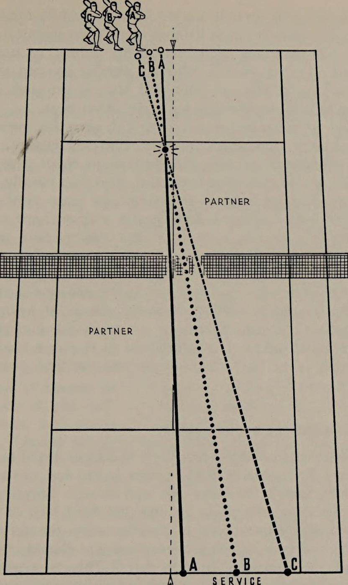
Ba cách giao bóng cho cú trái tay của người nhận cầu ở sân thứ nhất
A-A: Đứng gần tâm điểm và giao bóng xuống đường giữa của người nhận. B-B: Vị trí của người giao bóng buộc người nhận phải đứng xa hơn; nhưng cú giao bóng cắt lát phải nhắm vào bên phải của dải trung tâm. C-C: Vị trí của người giao bóng đe dọa quân Át, buộc người nhận phải để lộ một khoảng không gian trái tay khá lớn.
Nên kết hợp cú giao bóng rộng kỳ lạ với cú giao bóng thuận tay, vì nó khá hiệu quả ngay cả khi không có nhiều tốc độ đối với một người đàn ông cho đến lúc đó vẫn thường xuyên bị buộc phải sử dụng trái tay của mình. Đối đầu với những người chơi đang hy vọng vượt qua cú giao bóng thứ hai của bạn, bạn sẽ thường thấy rằng mình có thể có được những con át giao bóng thứ hai chậm hơn, chệch hướng hơn bất kỳ kiểu nào khác. Chiến thuật thực sự tồi là nhắm cú giao bóng đầu tiên của bạn vào đường thuận tay của đối thủ ở sân đầu tiên và trượt nó, sau đó cảm thấy không tự tin khi có thể thực hiện cú giao bóng thứ hai rất rộng hoặc một cú đánh trái tay của anh ta. Sau đó, bạn thường thực hiện một cú giao bóng thứ hai khó nhận biết mà anh ấy chơi một cách tự tin nhất bằng cú thuận tay của mình, khiến bạn có lẽ có ít hơn 50-50 cơ hội với cú vô-lê đầu tiên của mình. Chiến thuật thực sự tồi tệ, đặc biệt nếu bạn giao bóng từ gần điểm trung tâm, nhưng bạn thấy nó được thực hiện vô số lần. Đối với hầu hết các người giao bóng, sân đầu tiên là bên nguy hiểm, luôn có khả năng mất điểm nếu thực hiện cú trả giao bóng thuận tay tốt. Hoặc mắc lỗi kép khi cố gắng tránh cú thuận tay của người nhận bóng. Một thực tế nữa là nhiều cặp đôi thường thiếu tập trung ở điểm đầu tiên của trận đấu.
Giao bóng vào ô sân thứ hai
Việc tìm ra cú trái tay của người nhận bóng ở sân thứ hai sẽ dễ dàng hơn và nếu bạn có thể giữ được số điểm ở sân thứ nhất thì bạn thường sẽ xử lý được đối phương đủ tốt. Tất nhiên, với điều kiện là bạn có thể đề phòng sự thiếu tập trung nghiêm trọng có thể xảy ra gấp đôi khi người giao bóng dẫn trước một điểm. Trong mối liên hệ này, bạn cũng nên lưu ý đến cái gọi là “cú đánh hút”. Đây là khi người nhận bóng tung cho bạn cú vô lê đầu tiên thuận tay cao và khi cố gắng gạt tay vợt lưới ở sân thứ nhất sang một bên bằng nó, bạn sẽ cắt nó ra ngoài đường biên. Không có gì sai với cú đánh này nếu nó đi vào lưới; nó đã có được tên tuổi của mình sau số lần nó chịu trách nhiệm chuyển đổi vị trí chiến thắng thành điểm thua. Điều gì sẽ xảy ra nếu bạn đánh người thuận tay trái ở sân thứ hai? Nếu bạn thấy trong pha đánh bóng rằng anh ấy là một trong những người có cú thuận tay rất tốt thì tốt nhất là không nên thử nghiệm mà nên loại cú đánh nguy hiểm này ra khỏi trận đấu ngay từ đầu. Chơi song song (mà lẽ ra bạn phải luyện tập theo cặp) từ quả bóng đầu tiên bạn giao cho anh ta. Để thực hiện động tác này, hãy đứng thẳng đến điểm giữa, ném quả bóng qua vai phải của bạn và xoay nó xuống đường giữa. Để che phần sân phụ mà bạn sẽ phải để ngỏ, đối tác của bạn phải đứng gần trung tâm hơn và lùi xa hơn bình thường một chút, và anh ấy phải tỉnh táo nếu bạn muốn nỗ lực mở màn song song của mình thành công. Cú đánh trái tay đôi tự nhiên của người thuận tay trái là không phù hợp—tức là, về phía đối tác song song của bạn, và người thuận tay trái rất có thể sẽ cố gắng quăng qua đối tác của bạn hoặc thực hiện một cú đánh xoáy xuống ngắn từ cú vô lê trái tay của anh ta vào khoảng trống thừa mà anh ta phải chừa lại để di chuyển vị trí lưới của mình gần tâm hơn để phù hợp với cú giao bóng song song của bạn. Vì việc chơi với một người đánh lưới đang đợi bạn không bao giờ có lợi, nên người thuận tay trái sẽ sớm bị buộc phải chuyển cú giao bóng trái tay của mình về phía bạn; sau đó bạn sẽ có nhiệm vụ dễ dàng hơn là thực hiện cú vô lê đầu tiên của mình trước cú đánh này thay vì chống lại cú thuận tay chìm rộng mà bạn sẽ phải gặp nếu bạn không chơi song song. Tuy nhiên, hãy thay đổi song song và thỉnh thoảng quay lại đội hình chính thống. Chơi song song có nghĩa là không có người trực tiếp đối diện với người nhận và với mối đe dọa này bị loại bỏ vĩnh viễn, bất kỳ người nhận nào sớm hay muộn cũng sẽ bắt đầu cảm thấy thoải mái. Điều gì sẽ xảy ra nếu người thuận tay trái, ngoài việc có cú thuận tay tốt, lại có cú đánh trái tay chéo sân tốt và có khả năng kéo cú giao bóng song song giữa đường giữa của bạn rộng ra khỏi cú vô lê thuận tay quá lộ liễu của bạn? Chà, mặc dù bạn và đối tác của bạn sẽ thấy trong cảnh đánh này kiểu người thuận tay trái và phong cách chơi của anh ta, nhưng có lẽ vẫn đáng để mở cùng lúc để tìm hiểu xem liệu anh ta có thực sự có cú đánh đó mà rất ít người thuận tay trái có được khi trận đấu thực sự bắt đầu. Nếu anh ta có, và nó quá tốt cho mặt thuận tay lộ ra của bạn mà cặp đôi để lại, thì bạn sẽ phải quay trở lại vị trí che chắn an toàn hơn của đội hình chính thống và đối phó
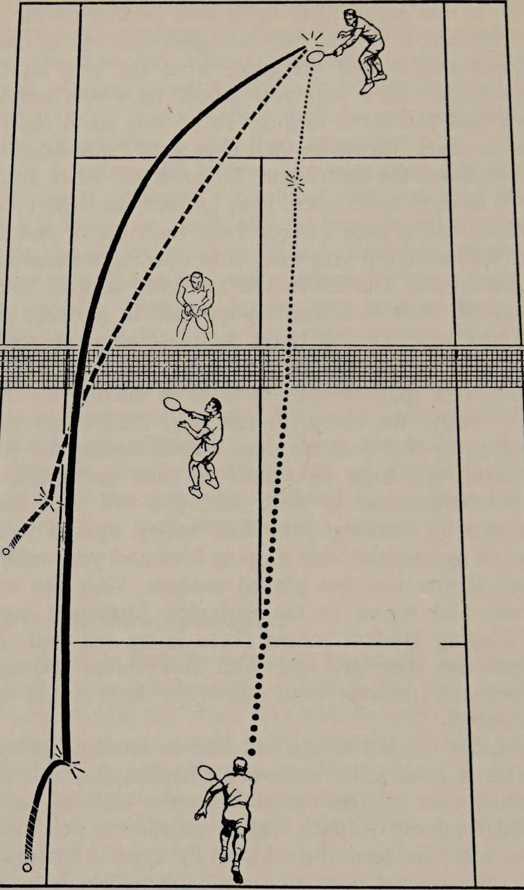
Đấu với người thuận tay trái
Khi lần đầu tiên đối mặt với đội hình song song và quả giao bóng trái tay của anh ta, người thuận tay trái có khả năng tiếp tục đánh trả theo hướng thông thường. Vì điều này có nghĩa là phải gạt người đánh lưới song song sang một bên hoặc lốp bóng qua anh ta, người đánh lưới phải cảnh giác từng chút một như người giao bóng.
với sự trở lại giao bóng tốt nhất có thể của anh ấy. Điều này không thể giúp được. Có vẻ như một thực tế khác của cuộc sống là một người thuận tay trái giỏi lại là một tay vợt đánh đôi rất giỏi. Cho đến nay, bạn chỉ mới thực hiện được cú giao bóng của mình. Bạn thậm chí còn chưa thực hiện cú vô lê đầu tiên. Tôi xin lỗi nếu bạn cảm thấy điều này quá chi tiết, nhưng tôi có thể đảm bảo với bạn rằng một số đối thủ trong tương lai của bạn sẽ biết điều này, một số trong số họ còn rất lâu trước khi họ đủ điều kiện bỏ phiếu. Nếu bạn cũng không có nó, thì bất kỳ cặp nào trong số họ cũng sẽ quá vững chắc đối với bạn và bất kỳ đối tác nào mà bạn quan tâm lựa chọn, mặc dù các cú đánh đơn của họ có thể không mạnh hơn. Bất kỳ hệ thống nào sử dụng các cú đánh đôi của bạn, trừ khi được chi tiết hóa, sẽ có quá nhiều lỗ hổng đến mức trở nên vô dụng và khó hiểu trong trận đấu.
Giá trị cao của cú vô-lê đầu tiên
Giao bóng với nhịp điệu hoặc sự cân bằng cần thiết cho phép bạn tiến vào lưới mà không cần nghỉ ngơi, vào ngay, tạm dừng, tung cú vô lê sâu về phía trái tay của ai đó (điều này luôn có thể thực hiện được nếu cả hai đối thủ của bạn đã lùi lại) và đợi cú lốp bóng gần như chắc chắn. Nếu đó là một cú đánh tốt, bạn hoặc đối tác của bạn nên lùi lại vài bước và đập nó với tốc độ bằng một nửa đến ba phần tư qua lưới. Để lựa chọn, nó nên đi xuống giữa về phía trái tay của đấu thủ ở sân thứ nhất hoặc đến phía trái tay của đấu thủ ở sân thứ hai, mục đích là để kích động một cú lốp bóng khác. Bạn làm điều này cho đến khi đạt được điều ngắn nhất, và khi đó bạn biết phải làm gì—và càng khó càng tốt. Những tay vợt nhận ra tầm quan trọng của cú vô lê đầu tiên hiếm khi bỏ lỡ nó. Họ làm mọi thứ có thể để tránh việc đó trở nên khó khăn, và khi điều đó xảy ra, họ cố gắng giành lại nó bằng mọi cách nhưng bằng mọi giá. Nếu có thể quản lý đủ để cho phép họ chơi sâu, họ biết rằng khả năng giành chiến thắng trong cuộc biểu tình là rất cao và họ sẽ không dễ dàng vứt bỏ chúng. Nếu bản thân bạn chưa nhận ra tầm quan trọng của cú vô lê đầu tiên trước đây, bạn nên xem cách các tay vợt dẫn đầu tiếp cận nó. Bạn có thể thấy một số cú đánh trúng và trượt ở các cú đánh khác, đặc biệt là ở cú trả giao bóng, nhưng bạn sẽ thấy rất ít ở cú vô lê đầu tiên. Khoảng cách bạn vào lưới sau khi giao bóng là xa nhất có thể, cho phép bạn tạm dừng một chút trước khi thực hiện cú vô lê. Bạn không thể thực hiện cú vô lê có kiểm soát khi đang chạy, cũng như bạn không thể duỗi người rộng ra như khi bạn đứng yên.
Phạm vi phủ của người đứng lưới
Bây giờ bạn đã cố gắng hết sức để thực hiện cú vô lê đầu tiên một cách dễ dàng. Rõ ràng mọi chuyện sẽ dễ dàng hơn nếu bạn chỉ thực hiện nó ở bên lề, bên phải hoặc bên trái, tùy thuộc vào bên nào bạn đang giao bóng mà không cần phải lo lắng về phần giữa. Đây là nơi mà người đánh lưới xuất hiện. Anh ta phải có khả năng bao quát xa đến tận đường giữa và do đó bảo vệ khu giữa cho người giao bóng, để thường xuyên nhất có thể chỉ phải thực hiện cú vô lê bên lề. Người đánh lưới cũng phải đảm bảo rằng không có cú lốp bóng nào vượt qua đầu anh ta. Để hoàn thành hai trách nhiệm này, người lưới có thể đứng ở bất cứ nơi nào mình muốn nhưng anh ta phải hoàn thành chúng. Nhìn thoáng qua bạn sẽ thấy rằng việc anh ta đứng ngay bên lề và áp sát vào lưới trông như một thiếu nữ gặp nạn ở nội dung đôi nam nữ sẽ là vô ích. Khi suy ngẫm kỹ hơn, bạn có thể sẽ đồng ý rằng hầu hết mọi người đứng quá gần lưới và thậm chí ngay cả khi họ đứng cách xa đường biên, họ cũng không làm được gì nhiều, ngoại trừ những pha đánh chặn thường xuyên trong cái chết hoặc vinh quang, để thực sự che chắn cho đồng đội của họ ở giữa. Trong khá nhiều trận đấu đôi nâng cao, người đánh lưới thực hiện quá ít. Nguyên nhân có thể xảy ra nhất dẫn đến việc người chơi chơi trên lưới không đúng vị trí và tham gia không đầy đủ là do họ đã nhìn thấy vị trí của nhà vô địch và làm theo mà không nhận ra sự khác biệt về hoàn cảnh. Các tay vợt vô địch, nhờ có tốc độ phản xạ và di chuyển, dự đoán nhanh hơn, v.v., có thể che chắn cả cú vô lê giữa và bất kỳ cú lốp bóng nào được thực hiện qua đầu của họ từ vị trí lưới gần hơn
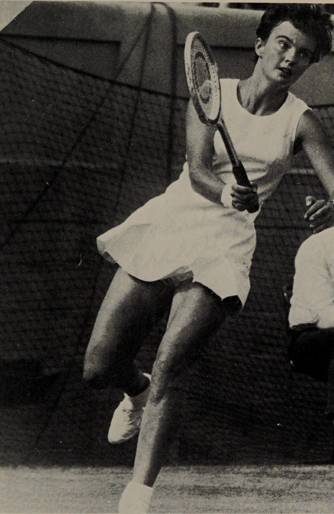
Thiếu nữ, nhưng hiếm khi gặp nạn: Kerry Melville. (Xem văn bản, trang 152)
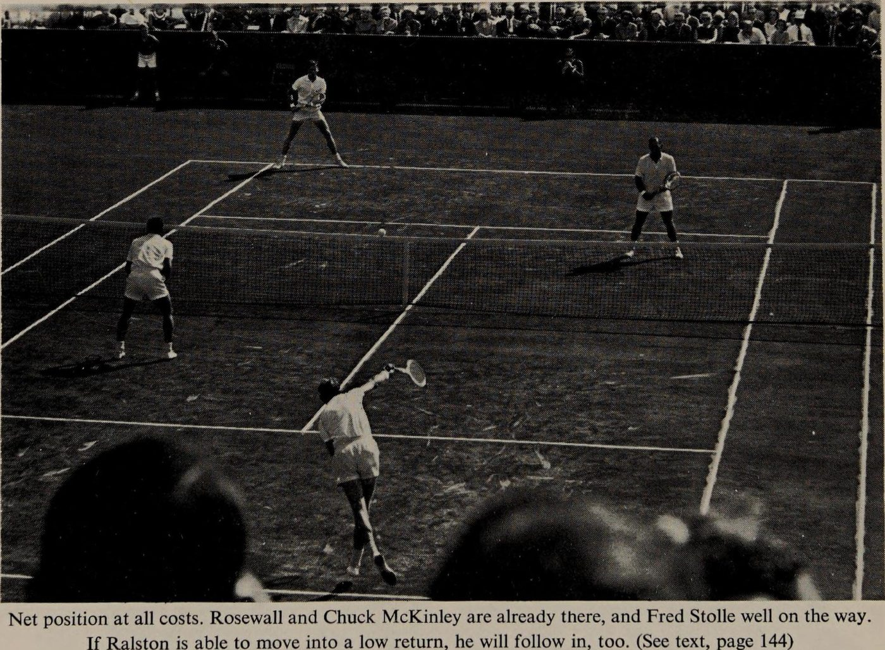
Vị thế ròng bằng mọi giá. Rosewall và Chuck McKinley đã ở đó, còn Fred Stolle cũng đang trên đường đến. Nếu Ralston có thể chuyển sang trả bóng thấp, anh ấy cũng sẽ làm theo. (Xem văn bản, trang 144)
hơn phần còn lại của chúng tôi; do đó họ có thể đứng gần hơn với mức độ nghiêm trọng cao hơn và vẫn che đậy những gì họ phải làm. Người chơi ở trình độ trung bình phải đứng xa hơn một chút nếu muốn đạt được vị trí che chắn tương tự. Nhưng không quá xa trở lại. Nếu anh ta lùi quá xa, người nhận sẽ tấn công anh ta thay vì người giao bóng đến, người sẽ tiến tới và vượt qua anh ta. Nói tóm lại, vì bạn phải vào lưới trong nội dung đánh đôi, nên trong nỗ lực che chắn, bạn không được rời lưới quá nhiều đến mức vị trí của bạn chuyển từ tấn công sang phòng thủ. Vị trí của bạn phải sao cho bạn có thể bước về phía trước để thực hiện cú vô lê và di chuyển nhanh về phía sau để thực hiện cú lốp bóng hoàn toàn. Người đánh lưới, bao quát đến tận đường giữa, nên thực hiện mọi cú giao bóng trở lại mà anh ta có thể. Trước khi người giao bóng có thể thực hiện cú vô lê, anh ta phải bám theo thật nhanh để giành được vị trí lưới của mình; anh ta cũng cần phải giữ vững bản thân bằng khoảng dừng ngắn ngủi đó. Người lưới đã vào vị trí và đã đứng vững. Người chơi lưới trung bình không tận dụng đủ lợi thế của mình và nhận được trả được quá ít bóng giao bóng. Điều này một lần nữa có thể là do những gì được thấy ở các giải đôi vô địch hàng đầu và được áp dụng vì lý do sai lầm. Các nhà vô địch nhận thức rõ về lợi thế của tay vợt lưới đến mức họ hướng cú giao bóng của họ ra xa anh ta để giữ anh ta khỏi cuộc chơi ở giai đoạn giao bóng quan trọng này. Ở cấp độ thấp hơn, có rất nhiều bóng giao bóng có thể trả lại; người đàn ông lưới chỉ đơn giản là không di chuyển tới và lấy chúng. Trên hết, người đánh lưới không bao giờ được để cú lốp bóng vượt qua đầu mình.
Phủ kín lưới
Từ mô tả được đưa ra cho đến nay, bạn có thể nhận thấy rằng trong chiến thuật giữ giao bóng của họ, cặp giao bóng đã chặn mọi thứ một cách hoàn hảo, ngoại trừ hai cú đánh có thể xảy ra. Một là cú lốp bóng qua đầu của người giao bóng, hai là cú đánh xuyên qua xuống đường biên của tay vợt lưới. Cả hai cú đánh đều không phải là tỷ lệ phần trăm cú đánh đối với người nhận, và nếu bạn xem một cú đánh đôi vô địch, bạn sẽ thấy hiếm khi được thực hiện cả hai cú đánh đó. Để thuyết phục bản thân rằng cả hai cú đánh đều không mang lại kết quả, bạn và đối tác của mình nên thử chúng khi nhận bóng trong tập luyện. Cú lốp bóng qua đầu người giao bóng rất hiếm khi được mở ra cho bạn. Cú sút qua lưới sẽ rất ngoạn mục khi thành công, nhưng nhìn chung, bạn thường thua nhiều hơn là thắng. Người đánh lưới phải quan sát đường biên của mình khi đối tác của anh ta giao bóng rộng, và anh ta phải quan sát nếu người nhận bóng đối phương rõ ràng đang nhắm vào anh ta; nhưng anh ta không được quá quan tâm đến nó đến mức không bảo vệ được trung tâm. Nếu anh ta chăm sóc đường biên của mình, để đồng đội của anh ta cố gắng đối phó với cả đường biên giữa và đường biên ngoài, chỉ vượt qua khi bị lốp bóng qua, và sau đó nói với chính mình với bạn bè rằng trận đấu đã thua vì đối tác của anh ta liên tục để thua giao bóng, thì nói một cách nhẹ nhàng, anh ta không chơi với đồng đội của mình - vì vậy anh ta đang vi phạm một trong những mệnh lệnh mà tôi đã trích dẫn ở đầu phần này. Dù cú giao bóng của anh ta như thế nào thì người giao bóng cũng phải vào lưới. Nếu mạnh thì anh ta vào để tận dụng tối đa. Nếu yếu, hắn căn bản không thể không vào, nếu không có thể hoàn toàn chắc chắn trả về, đối thủ của hắn sẽ có lưới vị trí.
Bẻ giao bóng của đối thủ
Bây giờ chúng ta rời khỏi cặp giao bóng và chuyển sang vấn đề phá vỡ các ván giao bóng của đối thủ. Điều này cũng đạt được bằng cách giành được vị trí ròng. Bạn cố gắng chơi môn quần vợt giao bóng của riêng mình mà không có cú đánh nào cả. Khi nhận bóng, chiến thuật lý tưởng là chỉ thực hiện một cú đánh nền, nghĩa là trả giao bóng cần thiết. Để làm ví dụ về cách áp dụng các chiến thuật này, chúng tôi sẽ giả định rằng bạn đang bắt đầu trận đấu với một cặp mà bạn chưa biết cách chơi. Đó là cú giao bóng của đối thủ và một trong số họ sẽ giao bóng cho bạn ở sân đầu tiên. Đối tác của bạn đứng trên lưới hoặc đủ gần để di chuyển vào một chút khi bạn đánh trả, để bạn đã có sẵn một người.
Nếu người giao bóng không thực hiện cú giao bóng của anh ta lên lưới, thì hãy thực hiện lại quả giao bóng đó cho anh ta mà không gặp rủi ro nhỏ nhất là bỏ lỡ nó và theo dõi vào lưới nơi tỷ lệ cược ngay lập tức có lợi cho bạn. Nếu người giao bóng theo sau và đồng đội của anh ta đứng quá gần lưới, thì hãy đảm bảo rằng cú lốp bóng của bạn không yếu, hãy đưa bóng qua đầu người cầm lưới và đi vào. Sơ hở này có sẵn thường xuyên hơn nhiều người chơi nghĩ, đặc biệt là từ sân đầu tiên, nơi cú đánh thường có thể được thực hiện từ cú thuận tay của bạn qua phía trái tay của người đỡ lưới. Hãy thực hiện cú đánh này mỗi khi có cơ hội, bất kể bao nhiêu lần, thậm chí liên tục. Nó rất dễ thực hiện và có tính thẩm thấu cao nhất. Khi kiểu người lưới này cuối cùng đã sẵn sàng bảo vệ nó, anh ta thường để bạn ở giữa để lái vào, và thậm chí có thể đi thẳng. Nghe có vẻ dễ dàng, nhưng tăng gấp đôi trong điều kiện như vậy, trừ khi người giao bóng thực sự giao bóng rất tốt, khó có thể hơn thế. Chỉ khi người giao bóng liên tục xuất hiện và đối tác của anh ta bao quát cả lốp bóng và trung tâm thì bạn mới buộc phải chơi một số trận đánh đôi thực sự. Cố gắng thực hiện một cú đánh chéo sân bằng bóng lăn càng nhanh và càng thấp qua lưới càng tốt và chìm xuống dưới lưới, và nếu bạn đã giữ được thăng bằng thì bạn nên theo sau nó. Nếu người giao bóng chuẩn bị thực hiện cú vô lê đầu tiên thì đây là cú vô lê khó nhất mà bạn có thể ép buộc anh ta. Tất nhiên, có nhiều biến thể, chẳng hạn như cú trả bóng rất thấp và chậm sẽ bắt được người giao bóng đến ngay dưới chân anh ta, nhưng nếu bạn căn cứ vào việc giao bóng của bạn là lấy bóng muộn hoặc luôn cắt bóng — thường là hơi quá cao — cú vô lê đầu tiên của anh ta sẽ dễ thực hiện hơn nhiều.
Tự che những quả bóng trên đầu
Bạn đã thấy tầm quan trọng của điều đó, bất cứ khi nào bạn và đối tác của mình có lưới, giao bóng hay nhận bóng, không một cú tung bóng nào có thể vượt qua đầu bạn. Để mỗi người chơi luôn cảnh giác về điều này, mỗi người phải chịu trách nhiệm chính về bất kỳ quả bóng nào mà mình cho phép vượt qua mình.
một người đàn ông để phục hồi. Có thể lập luận rằng việc phạm lỗi của đối tác dễ dàng hơn vì anh ta có thể chạy chéo, trong khi người kia phải quay lại và chạy thẳng về phía sau. Điều đó hoàn toàn đúng, nhưng khi đối đầu với những đôi tốt, bạn gần như sẽ mất điểm bất cứ khi nào một người chơi để đối phương hạ gục bằng cách để một cú lốp bóng vượt qua đầu anh ta. Do đó, việc không phân chia trách nhiệm mà thay vào đó là yêu cầu mỗi đấu thủ hoàn toàn chịu trách nhiệm xử lý mọi cú lốp bóng về phía sân của mình. Điều này không ngăn cản một trong hai người đuổi theo những sai lầm kỳ quặc của người kia khi anh ta ở trong hoàn cảnh có thể làm như vậy. Thông thường, hãy đập về phía trái tay khi đối thủ của bạn lùi lại, nhưng, nếu một trong hai người ở trên lưới, hãy tránh đập thẳng vào cú vô lê trái tay cao đến thắt lưng đã được chuẩn bị sẵn. Cảnh báo này cũng áp dụng cho việc trao đổi lưới nhanh chóng. Ở gần bên phải, đặc biệt là gần thắt lưng, một người đàn ông hiếm khi thực hiện cú vô lê cho đến khi anh ta di chuyển cơ thể ra khỏi đường đi.
Chơi “chống” đồng đội của mình
Bạn có thể nhớ rằng quyết tâm không bao giờ làm điều này là một trong những đặc tính của một cặp đôi tốt. Nhưng bạn có thể hỏi, làm thế nào mà một điều dường như không thể xảy ra như vậy lại có thể xảy ra? Nó xảy ra trong tình trạng căng thẳng và những đối tác là họ hàng thường dễ xảy ra điều đó. Hãy tưởng tượng rằng bạn đã tập luyện rất chăm chỉ, chẳng hạn như đối với một set trong tay và bốn-ba trong ván thứ hai và đó là cú giao bóng của bạn. Một lần nữa bạn dồn mọi thứ bạn có vào đó và đạt 40-30. Một điểm để có được năm-ba. Sau đó, xét trường hợp xấu nhất mà tôi có thể nghĩ ra, đồng đội của bạn để mình bị lốp bóng qua, không phải một mà là hai lần, hai lần chạy, để đảo ngược tỷ số cho người có lợi thế. Đây là kiểu thay đổi đột ngột ảnh hưởng đến thần kinh của hầu hết mọi người chơi. Đột nhiên trở nên liều lĩnh, bạn thực hiện cú giao bóng đầu tiên rất khó, chỉ để nhận ra rằng nó được đưa ra chỉ bằng một phần nhỏ. Tin chắc rằng toàn bộ tình huống không vui là lỗi của đối tác sai lầm của bạn, người đáng phải nhận một bài học, hoặc dù sao đi nữa, đó hầu như không còn là mối quan tâm của bạn nữa, thì bạn mắc phải một lỗi kép tức giận hoặc bực tức. Đây là một ví dụ mang tính khiêu khích nhất, nhưng nó vẫn giống như việc chơi với đối tác của bạn và tôi nghĩ nó cho thấy lý do tại sao khi mô tả thuộc tính này, tôi lại sử dụng từ quyết tâm. Có nhiều tình huống ít khiêu khích hơn trong đó các đối tác có thể bị lôi kéo vào việc đấu với nhau. Hành vi như vậy không thể bị coi là trẻ con, bởi vì rất nhiều người đàn ông thậm chí có bản chất kiên định thỉnh thoảng vẫn mắc phải hành vi đó. Tôi sẽ sẵn sàng gọi nó là con người. Tôi cũng nghĩ rằng nó đáng để biết và đề phòng.
Tín hiệu
Các tín hiệu do người lưới đưa ra sau lưng cho đối tác giao bóng của mình có phải là lời cuối cùng trong kết hợp đánh đôi không? Có lẽ, nhưng chỉ khi người giao bóng đủ chính xác để đáp ứng tín hiệu với đúng dịch vụ. Nếu không, người đánh lưới có thể đi sai hướng đối với quả giao bóng thực sự có kết quả, hoặc thậm chí anh ta có thể bị bỏ rơi ở khắp nơi trong thời gian hoàn hảo, nhưng vô ích đối với một quả giao bóng lỗi. Ngoài ra, đối tác của bạn có thể ra hiệu cho bạn một cú giao bóng rộng giống như khi bạn đang tập trung vào quả giao bóng ở giữa và tìm ra chính xác vị trí bạn sẽ đến cho cú vô lê đầu tiên của mình. Điều này có thể khiến bạn cảm thấy rằng anh ấy đã can thiệp và trách nhiệm về vấn đề này bây giờ là của anh ấy chứ không phải của bạn. Sau đó, bạn sẽ tiến thẳng tới việc thi đấu với đối tác của mình. Theo nguyên tắc chung, tôi muốn nói rằng tốt hơn là bạn nên vận dụng hệ thống đã được thiết lập của mình trong đó mỗi người tự lo trách nhiệm của mình hơn là đặt nhiều niềm tin vào những tín hiệu ngẫu hứng cho một cuộc đảo chính nhanh chóng. Nhưng không còn nghi ngờ gì nữa, cũng như mọi khi với những nghệ sĩ đứng đầu bảng xếp hạng, điều đó lại khác với những nhà vô địch.
Chọn đúng bên sân
Bạn và các đối tác khác nhau của mình nên đứng về phía nào của sân đấu? Có khá nhiều điều cho câu hỏi này. Với hai tay vợt thuận tay phải, ô sân đầu tiên thuộc về người có cú thuận tay mạnh hơn, ô sân thứ hai thuộc về người có cú trái tay tốt hơn. Bạn có thể lý luận rằng sẽ là một sai lầm nếu dồn sức mạnh của bạn vào trung tâm, nơi mà hầu hết các cú đánh đều do đối thủ của bạn hướng tới. Các cánh bên ngoài của bạn là nơi mà đối thủ của bạn dễ dàng tiếp cận nhất, vì vậy, bạn sẽ biến đối thủ của mình thành một món quà ảo về những mặt yếu hơn của chính bạn và của đối tác. Nếu một đối tác mạnh hơn ở cả cú thuận tay và trái tay, thì anh ta gần như luôn là tay vợt mạnh hơn trên mọi mặt và thường nên đứng ô sân thứ hai, nơi anh ta có thể nắm giữ nhiều thời gian hơn trong trận đấu. Sau khi đọc trước đó rằng sân đầu tiên là sân nguy hiểm cho người giao bóng, bạn có thể nghĩ rằng sân đầu tiên chính xác là nơi mà người chơi mạnh hơn nên có mặt—để có sức tàn phá tối đa, có thể nói như vậy. Trong những trường hợp đặc biệt, đây có thể là quy trình đúng nhưng không phải là quy tắc chung. Trong nội dung đôi nam nữ, lấy một ví dụ điển hình về sự chênh lệch sức mạnh giữa hai đối tác, một người đàn ông ở sân đầu tiên gần như tự loại mình khỏi cuộc chơi. Một ý tưởng cũ là ô sân đầu tiên thuộc về người đánh nền, ô sân thứ hai thuộc về người lên lưới. Nếu khái niệm đánh đôi này vẫn được sử dụng ở cấp độ mà bạn đang chơi, thì nó vẫn đúng như trước đây. Có lẽ tôi đang quá khó khăn ở đó. Nó hợp lý và nó đúng. Nó áp dụng cho đôi nam nữ. Chỉ là tôi không muốn để bất kỳ cặp lưới nào đang tiến bộ và có năng lực với ý tưởng sai lầm rằng người đánh bóng nền giỏi không nên vào lưới và chơi vô lê bất cứ khi nào anh ta có thể. Mặt sân đầu tiên là mặt dễ dàng hơn cho người mới bắt đầu vì đây là mặt sân thuận tay. Khi người chơi có thể thực hiện cú trái tay một cách đầy đủ, sân thứ hai sẽ trở thành sân dễ dàng hơn. Vì lý do này, người chơi mạnh hơn sẽ lấy nó để có thể tận dụng tối đa nó. Ngoài việc có thể chi trả (bao gồm cả chi phí chung) nhiều hơn cho sân đấu nói chung sau khi thực hiện trả lại quả giao bóng, anh ta cũng có thể tận dụng tốt hơn số tiền trả lại giao bóng của mình. Anh ta đang tấn công cú trái tay của người giao bóng, và với những cú đánh dễ thực hiện nhất của anh ta (cụ thể là cú đánh thuận tay thẳng và trái tay chéo bàn). Bất kỳ ý tưởng nào về việc đặt người chơi yếu hơn vào bên dễ dàng hơn để giúp anh ta dễ dàng hơn đều là suy nghĩ tiêu cực thay vì tích cực khi coi hai người chơi là một cặp. Ngoài ra, cú trái tay của người chơi yếu hơn có thể không thu hút được sự chú ý thường xuyên ở sân thứ hai.
Chuyên về sân đầu hay sân thứ hai?
Bạn, với tư cách là một người chơi cá nhân chứ không phải là một phần của một cặp, có nên chuyên về một bên không? Tôi không nghĩ vậy. Nếu bạn có những cú đánh chỉ đi theo một chiều, bạn sẽ phải chơi ở một bên mà thôi', nếu không, sự khác biệt về hiệu quả của bạn sẽ lớn đến mức nếu đánh sai phía bạn sẽ thực sự tạo cho đối thủ của mình một điểm chấp bắt đầu. Chuyên về một bên trong nội dung đánh đôi có xu hướng đánh các cú đánh của bạn cho đánh đơn, và điều này, vì nó hỗ trợ rất nhiều cho sự dự đoán của đối thủ, là điều không tốt. Tốt nhất là có hiệu quả hoàn toàn ở cả hai bên. Nếu bạn phải chuyên môn, bạn thật may mắn nếu ưu tiên của bạn là sân đấu đầu tiên. Bạn sẽ trở thành một đối tác đánh đôi nổi tiếng và thậm chí có thể được săn đón, bởi vì hầu như nhiều người chơi thích sân thứ hai hơn như gọi là “thô bạo” khi bạn xoay vợt để giao bóng. Một cặp thông thường phải tính toán các mặt của chúng và thường không bao giờ thay đổi chúng. Bên nào thuận tay trái? Mặc dù chúng làm phức tạp cuốn sách của tôi nhưng tôi phải thừa nhận rằng tôi luôn thích những người thuận tay trái. Họ cung cấp một biến thể thú vị cho môn quần vợt. Khi cân bằng, phong cách của họ sẽ hấp dẫn người xem. Hai trong số họ đã chơi cả hai trận đấu đơn cho Australia trong chức vô địch Davis Cup khá gần đây, và bốn người đã vô địch Wimbledon. Họ dường như ngày càng gia tăng về số lượng, nên có lẽ một ngày nào đó chúng ta sẽ có những cặp đôi thuận tay trái nổi tiếng. Trong khi đó, các cặp có một người thuận tay trái là đủ phổ biến để đáng được xem xét. Người thuận tay trái không còn được chào đón như một đối tác đánh đôi như trước nữa. Trong những ngày qua, anh ấy là một người hiếm hoi đáng lo ngại đối với phe đối lập, và để hợp tác với anh ấy, ngày càng có nhiều người chơi có môn quần vợt đánh đôi dựa trên cú đánh thuận tay mạnh mẽ xuyên sân từ sân đầu tiên và một số ít khác. Với tất cả những người chơi vô-lê hiện nay và với sự ưu tiên áp đảo dành cho sân thứ hai, người thuận tay trái, thay vì được chào đón, lại thường bị coi là de trop. Tuy nhiên, anh nên đi đâu? Đến sân đấu thứ hai. Chính tại đây, anh là nỗi lo lắng lớn nhất đối với người giao bóng đối phương. Cú thuận tay chéo sân của anh ấy thường là cú đánh tốt nhất trên sân và cú đánh trái tay của anh ấy rất khó tìm. Như đã đề cập trước đó, những người thuận tay trái giỏi nhất trong việc che chắn các cú trái tay của họ và thường chơi cú thuận tay tốt nhất khi bước qua nó. Người giao bóng thuận tay phải hiếm khi thực hành giao bóng ở đường giữa sân thứ hai nên khi họ muốn thực hiện điều đó trong một trận đấu đôi với người thuận tay trái, họ hiếm khi đủ chính xác. Chính vì những lý do này mà tôi đã đề nghị chơi song song với họ, mặc dù đó là một đội hình vụng về và không thoải mái đối với cặp giao bóng và thừa nhận rằng người thuận tay trái quá giỏi theo cách chính thống. Bạn có thể muốn nói rằng khi cả người thuận tay phải và tay trái đều có cú trái tay ổn định hơn so với cú thuận tay thì họ nên chơi ở phía đối diện. Họ chỉ nên làm như vậy nếu cú thuận tay của một trong hai người quá tệ đến mức nó phải được che giấu bằng mọi giá, hoặc nếu họ đang thi đấu với những đối thủ không có ý thức đặc biệt về lưới. Khi cú trái tay của người chơi ổn định hơn cú thuận tay của anh ta thì đó thường là một lát cắt. Trong trường hợp đối thủ không thường xuyên thực hiện các cú giao bóng của họ lên lưới, người thuận tay trái và phải, chơi từ phía thường sai của họ, có thể cắt các cú giao bóng trái tay của họ một cách ổn định trở lại cuộc chơi và chiếm lưới. Tuy nhiên, nếu người giao bóng là những người chơi lưới ổn định, bạn sẽ thấy từ mô tả trước đó về cách chơi đôi có hệ thống rằng họ sẽ không bận tâm đến những lát cắt ổn định này. Họ sẽ khá hài lòng khi thực hiện cú giao bóng dễ dàng, dài, chéo tới các góc - tức là cú trái tay của người thuận tay trái ở sân đầu tiên và cú trái tay của người thuận tay phải ở sân thứ hai - và thực hiện cú vô lê đầu tiên an toàn kèm theo tỷ lệ thành công. Thất bại đối với cặp thuận tay trái và tay phải gần như không thể tránh khỏi ngay khi họ thua một trong các quả giao bóng của chính mình. Cuối cùng, bạn có thể muốn biết đâu là đội hình tốt nhất cho một người thuận tay phải và một người thuận tay trái cân bằng vì bạn cảm thấy có một trường hợp chắc chắn để họ chơi ở các sân đối diện. Bạn nói rằng cả hai đều vô-lê tốt và do đó có thể đánh chặn tốt; cả hai đều đập bóng tốt và do đó có thể bao quát tốt khu trung tâm thay vì phải dùng hai cú trái tay để xử lý các cú lốp bóng ở trung tâm; và cả hai đều có những cú đánh mặt đất cân bằng và do đó mỗi người sẽ thích chơi những cú thuận tay thẳng và những cú trái tay chéo sân. Vậy chắc chắn họ nên chơi ở hai phía đối diện? Tại sao, nó thậm chí còn bắt đầu giống như sự kết hợp đôi tốt nhất có thể được chọn. Một lần nữa, câu trả lời nói chung là không. Và nếu bạn nói thêm, như một chút cuối cùng để làm nghiêng cán cân, rằng cả hai đều đã tung cú trái tay, thì câu trả lời nói chung vẫn là không. Nếu họ là những người chơi cân bằng, những cú thuận tay của họ có thể sẽ mạnh hơn và chắc chắn là những mặt nguy hiểm hơn. Người giao bóng muốn giao bóng cho các cú trái tay của họ và, như tôi đã nói trước đây, không có gì mà một người giao bóng thích hơn việc giao những cú giao bóng chéo dễ dàng thực hiện của mình cho các trái tay của những người thuận tay trái và phải chơi ở sai sân. Chống lại các người giao bóng có ý thức lưới, một cặp nhận phải luôn sử dụng bất kỳ đội hình tấn công nguy hiểm nhất nào của chúng. Theo tiêu chuẩn đánh đôi hoàn toàn có ý thức về lưới, một người thuận tay trái chỉ nên ở sân đầu tiên nếu anh ta có cú trái tay nguy hiểm hơn nhiều so với cú thuận tay của anh ta đến mức nó nhanh hơn và mang nhiều xoáy lên hơn và bản thân anh ta chắc chắn thích nó hơn cú thuận tay của mình. Khi những điều kiện bất thường như vậy được áp dụng, bạn thực sự có cơ sở cho một cặp đánh đôi đặc biệt. Một trong những cặp đôi nổi tiếng nhất mọi thời đại— John Bromwich và Adrian Quist — được thành lập theo cách này. Những cú đánh nền và vô lê của Bromwich được thực hiện thuận tay trái, bao gồm thuận tay trái và trái tay bằng hai tay. Ít nhất đó là cách tôi đánh giá họ, và những ai đã xem anh ấy thi đấu có thể nhớ rằng khi bị ép sang bên bằng hai tay, anh ấy luôn sử dụng trái tay trái bằng một tay chứ không phải thuận tay phải. Trong cặp Bromwich-Quist này, chúng tôi có tay vợt thuận tay trái với cú trái tay xuất sắc chơi ở sân đầu tiên—và do đó chúng tôi đã có cặp đôi xuất sắc của mình. Tôi hy vọng bạn đủ tinh tế để thừa nhận rằng tôi phải tìm một người đàn ông xuất sắc, cộng với một cú trái tay đủ đặc biệt để sử dụng bằng hai tay, trước khi tôi có thể khiến trường hợp của bạn thành công. Và trong khi chúng ta đang nói về những điều so sánh nhất, tôi nghĩ chúng ta cũng nên dành một chút thời gian, mặc dù nó không thực sự liên quan, để tri ân Quist với tư cách là một tay vợt đánh đôi xuất sắc ở sân thứ hai.
Giao bóng mở đầu trong đánh đôi
May mắn thay, câu hỏi ai sẽ giao bóng trước và từ đầu nào có thể được giải quyết bằng một câu trả lời ngắn hơn. Một cặp nên quyết định môn quần vợt giao bóng nào mạnh hơn. Đây thường là nơi người giao bóng mạnh hơn đang thực hiện việc giao bóng. Nhưng không nhất thiết phải như vậy. Hãy nhớ rằng bạn thắng hoặc thua mỗi dịch vụ theo cặp. Khi bạn có quyền lựa chọn về các đầu hoặc khi mỗi đối tác hài lòng với việc giao bóng từ một trong hai đầu, bạn nên luôn bắt đầu bằng môn quần vợt giao bóng mạnh hơn của mình. Điều này đảm bảo bạn chơi ít nhất nhiều trận giao bóng theo cách đó, nếu không muốn nói là nhiều hơn so với đội hình yếu hơn của bạn. Bắt đầu với đội hình yếu hơn của bạn (có lẽ với một số ý tưởng không đánh bạc với đội hình mạnh hơn ngay từ đầu) có thể khiến bạn mất cả set một cách không cần thiết. Đối thủ của bạn bắt đầu với cú giao bóng mạnh hơn và giành chiến thắng; bạn tiếp tục với cú giao bóng yếu hơn của mình và thua, khiến tỷ số là hai tình yêu đối với bạn; sau đó bạn bẻ giao bóng yếu hơn của họ và giữ giao bóng mạnh hơn của bạn để hòa; nếu mô hình này tiếp tục bạn sẽ thua 4-6. Tuy nhiên, nó thường được làm theo một cách thiếu suy nghĩ. Mỗi bộ là một thực thể riêng biệt, bạn có thể sử dụng môn quần vợt giao bóng mạnh hơn của mình lần cuối trong một bộ và bắt đầu lại với môn quần vợt đó trong bộ tiếp theo. Bạn phải luôn thực hiện việc này khi không có sự thay đổi nào về mục đích giao bóng của từng đối tác hoặc khi việc thay đổi mục đích không gây hậu quả gì cho cả hai đối tác.
Mở đầu từ đầu sân phù hợp nhất
Khi bạn không được quyền chọn đầu sân, dù ở ván đầu tiên hay ở bất kỳ ván tiếp theo nào, thì điều kiện nắng và gió có thể khiến việc người này hay người kia cần giao bóng từ một đầu nhất định lại quan trọng hơn là việc bạn mở đầu bằng game giao bóng mạnh hơn của mình. Khi hai game giao bóng của một cặp ngang nhau về sức mạnh, bất kể ai đang giao bóng, thì quyết định ai giao bóng trước thường chỉ nên do điều kiện thời tiết quyết định. Mặt trời chủ yếu tác động đến các cặp có người thuận tay trái. Để cả hai cùng tránh nắng nhiều nhất có thể, người thuận tay trái nên giao bóng từ đầu phía nam vào buổi sáng và từ đầu phía bắc vào buổi chiều. Nghe thì lạ, nhưng điều này đúng ở cả hai bán cầu. Gió chéo cũng có thể tận dụng được, chẳng hạn khi một người có cú giao bóng cắt cong mạnh. Người thuận tay trái có thể dùng gió chéo hiệu quả đến mức anh ta thà giao bóng ở đầu khác với đầu thường lệ của mình. Nếu gió thổi dọc theo chiều dài sân và hai đồng đội ngang sức, lại không ai thiên về giao bóng xuôi gió hay ngược gió, thì chẳng có gì phải bàn. Nhưng nếu hai đồng đội chênh lệch nhiều về sức mạnh (lấy đôi nam nữ làm ví dụ, nếu bạn muốn, cho sự chênh lệch về thể lực và khả năng chơi ở lưới), thì người yếu hơn nên giao bóng xuôi gió. Như thế cú giao bóng của anh ta sẽ nhanh hơn, cú trả giao bóng mà anh ta phải đỡ trước khi lên lưới sẽ chậm lại, và tay vợt lưới mạnh hơn sẽ có mọi cơ hội phát huy ảnh hưởng của mình. Có những cặp khác ngang sức nhau nhưng lại thích rõ đầu giao bóng này hay đầu khác. Một cặp có thể gồm một người giao bóng nhanh thích bắn giao bóng xuôi gió và một người có cú giao bóng xoáy thích xoáy bóng ngược gió. Một cặp khác có thể gồm một người giao bóng nhanh nhưng thất thường, cần có luồng gió đệm trước khi đưa được nhiều bóng vào sân, và một người có đủ xoáy để kiểm soát bóng khi giao xuôi gió. Trong cả hai cặp ấy, mỗi người đều có một đầu sân phù hợp để giao bóng. Vào ngày nhiều gió, hai đồng đội có thể cùng muốn một đầu sân. Có khi cả hai cũng thích cùng một phía sân. Có lẽ người mạnh hơn nên luôn được quyền chọn. Có lẽ, trong cảnh lộn xộn này của hai đối tác cùng muốn một thứ, thì nên chia đều phần lợi. Nếu không, một người thua cả hai quyền chọn thì có lẽ là đòi hỏi quá nhiều khi bắt anh ấy chơi thật ăn ý với bạn mình, không bỏ bạn và cũng không đá bài bạn — cho đến khi nào chia tay mới thôi. Câu trả lời hay nhất là chia tay nhau càng sớm càng tốt. Nói thẳng ra, họ không phải là một cặp. Cuộc bàn luận trên không nên khiến bạn nghĩ rằng chọn đầu sân quan trọng hơn cơ hội được giao bóng trước. Nếu bạn thắng khi bốc thăm, thông thường bạn nên chọn giao bóng. Dẫn trước một game và còn được trả giao bóng của đối thủ — tức là có cơ hội bẻ giao bóng — có lợi thế rõ ràng hơn nhiều so với việc bị dẫn và phải bảo vệ game giao bóng của chính mình. Trong hầu hết các trường hợp, hai game giao bóng của một cặp không chênh lệch nhiều đến mức đáng từ bỏ lợi thế ấy. Nếu ván đấu chơi ngắn (không tính advantage) thì việc giao bóng trước lại càng quan trọng hơn. Chỉ khi hai game giao bóng của một cặp chênh lệch nhiều về sức mạnh, và khi điều kiện thi đấu khiến ít nhất một trong hai cần giao bóng từ một đầu nhất định, thì đầu sân ấy mới nên được ưu tiên hơn quyền giao bóng — để bạn khỏi buộc phải mở màn bằng game giao bóng yếu hơn hẳn của mình.
Hãy thay đổi những gì đã nói trong chương này để phù hợp với bản thân bạn, nhưng lưới phải được tận dụng mọi cơ hội và hai người chơi phải che chắn giữa họ. Nếu hai người lạ ảo chơi cùng nhau, điều quan trọng cần giải quyết trước đó là mỗi người sẽ che lốp bóng của mình. Nếu bạn và một người bạn nào đó có ý định thành lập doanh nghiệp như một cặp đôi thông thường, đừng phạm sai lầm khi nghĩ rằng toàn bộ vấn đề chỉ là vấn đề vị trí. Vị trí đóng một vai trò quan trọng, nhưng bạn đừng bao giờ quên rằng các cú đánh vẫn là nguyên tắc cơ bản trong lối chơi của bạn, dù là đánh đơn hay đánh đôi. Toàn bộ ý tưởng về việc giành quyền kiểm soát với cú vô lê đầu tiên của bạn và giành quyền kiểm soát trận đấu tiếp theo có thể không thành công nếu bạn không thể chắc chắn rằng việc giao bóng thứ hai của mình sẽ đến tay trái tay của người nhận ở sân đầu tiên. Nếu bạn không luyện tập và phát triển một cú đánh trên không đáng tin cậy, thì việc bạn có được vị trí lưới và buộc đối thủ của mình vào những tình huống khó khăn mà tất cả những gì họ có thể làm là ném bóng sẽ có ý nghĩa gì?
Điểm số — đủ thứ chuyện
Points — Particular and sundry
Điểm ván đấu và điểm trận đấu thuộc một dạng riêng. Ngoài những điểm ấy ra, ai cũng biết những điểm mấu chốt nhất là điểm game khi điểm số chỉ chênh một điểm. Vì vậy tôi không tranh luận gì về điều đó, ngoài có lẽ một nhận xét hiển nhiên: bất kỳ tỷ số nào cũng có thể là 40-30 thay vì 30-40 nếu một trong những điểm trước trong game diễn ra theo hướng khác. Trong số những điểm kém hào nhoáng ấy, nhiều người chơi coi điểm đầu tiên là quan trọng nhất, vì nó đưa bạn lên dẫn trước và buộc đối thủ phải thắng hai điểm liên tiếp mới lấy lại được vị thế ấy. Có người lại chọn điểm thứ ba, vì nó đưa bạn đến sát điểm game. Người khác lại nhấn mạnh giá trị của việc thắng cả điểm thứ nhất lẫn điểm thứ ba. Bạn sẽ dễ dàng thấy rằng lý lẽ cho từng điểm ấy đều có thể đưa ra nếu bạn muốn. Ở đây thì chẳng cãi được ai. Mọi điểm đều quý, và bất kỳ lý thuyết nào bạn đặt ra đều giúp bạn nhận ra điều ấy. Phải khá miễn cường tôi mới thừa nhận rằng có một hai điểm bạn cứ để mất cũng được. Từ 40-0, mất điểm tiếp theo có lẽ chẳng phải bi kịch gì to tát. Trong một trận đấu khó nhọc, khi đối thủ giữ được mọi quả giao bóng của mình rồi dẫn tới 40-0, thì dù điểm tiếp theo có đến tay tôi, tôi cũng chẳng dám khẳng định chắc chắn rằng mình sẽ đánh đổi sức lực để giành nó trong một pha bền bỉ kéo dài. Nguyên tắc chung là: coi mọi điểm đều quý giá sẽ giúp bạn không tích lũy lại những điểm khủng hoảng — mà bạn sẽ nhớ, điểm khủng hoảng thì không bao giờ đi lại nhẹ nhàng.
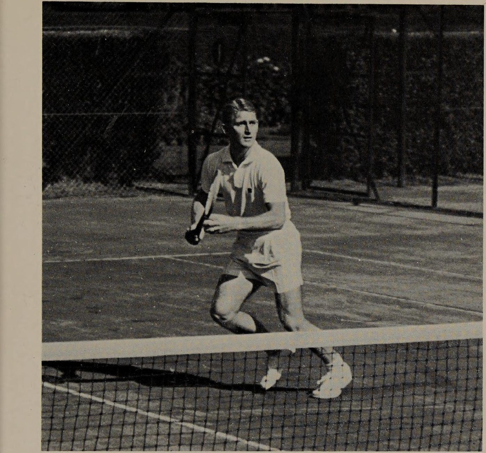
Lew Hoad chuẩn bị thực hiện cú vô lê cao. (Xem văn bản, trang 100)
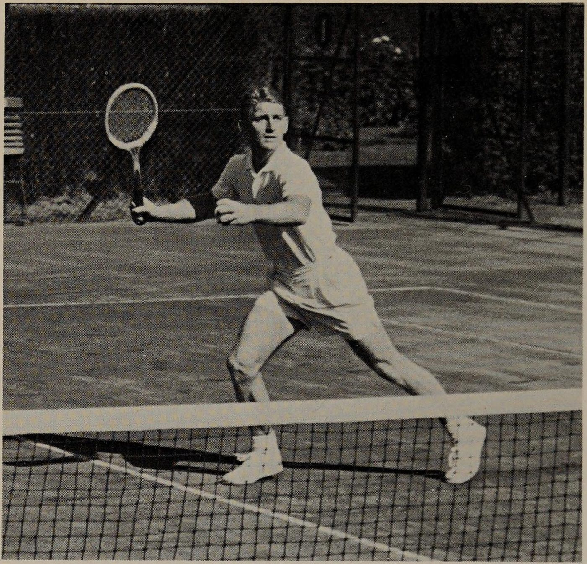
Nhấc vợt lên
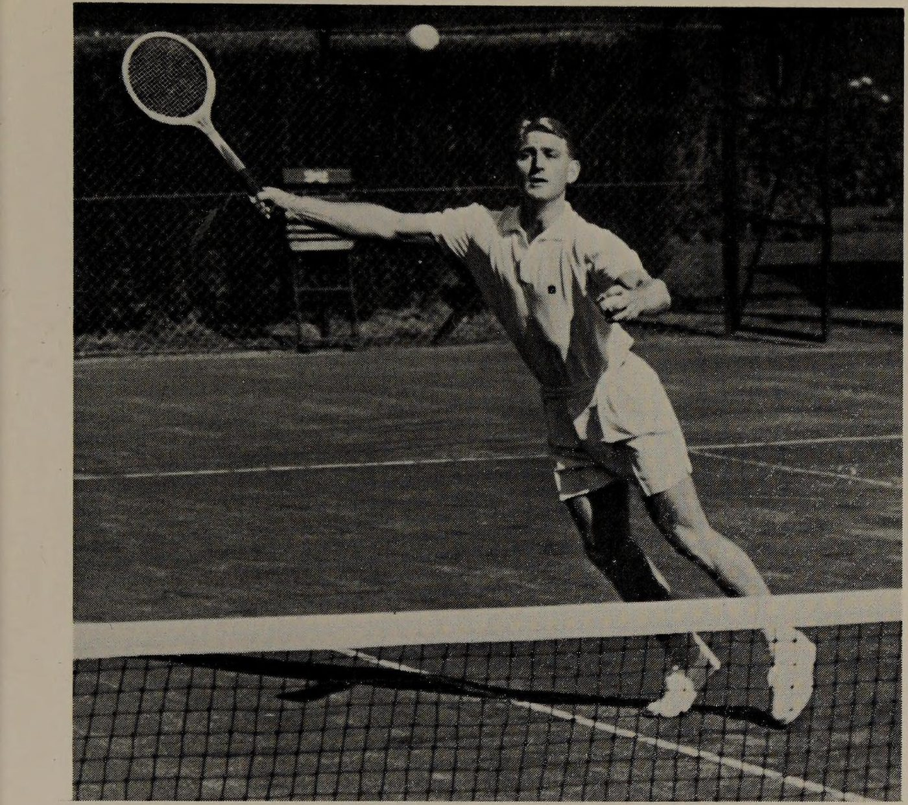
Duỗi người đón bóng
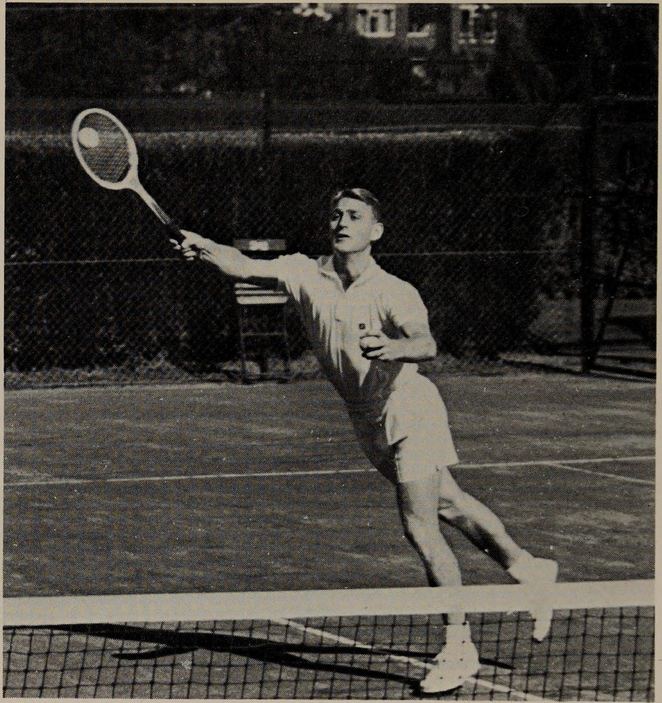
và tiếp xúc bóng.
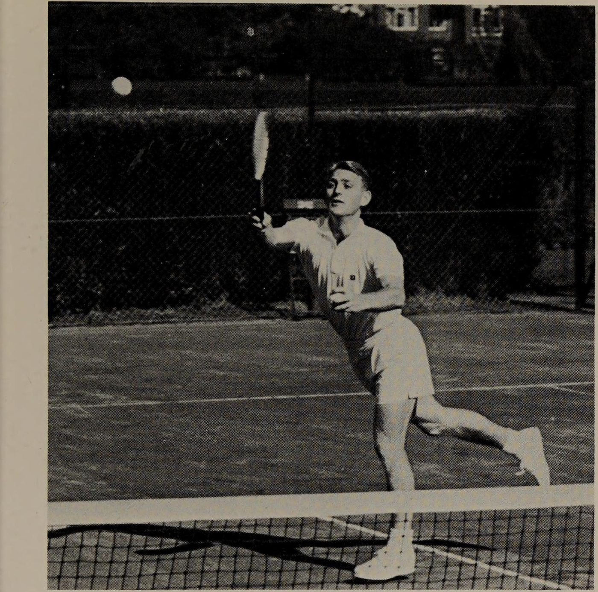
Bóng đi sâu vào góc trái tay của đối phương.
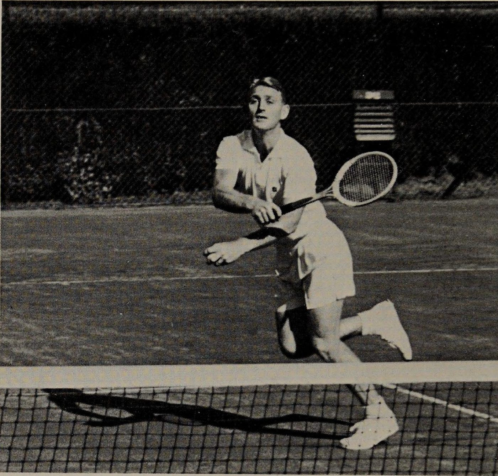
Bạn luôn có thể tự tin với những cú vô lê cao, miễn là bạn đang nghiêng về phía lưới. (Xem văn bản, trang 100)
Mặc dù vậy, bạn phải luôn biết điểm số. Mặc dù tất cả các điểm đều được tính như nhau nhưng vẫn có lợi thế khi chơi chúng theo cách khác nhau. Ở những điểm trước, bạn có thể thay đổi môn quần vợt của mình một chút để ngăn cản đối thủ của bạn hiểu quá rõ về nó - mặc dù nếu bạn đang có lợi thế hơn trong một pha giao bóng, bạn không bao giờ nên mạo hiểm để đối thủ có cơ hội thoát khỏi cuộc đánh đó lên đến 50-50. Nhưng đối với các điểm của trận đấu và các điểm cách một điểm trong trận đấu một điểm, bạn phải luôn thực hiện cú đánh có chiến thuật hợp lý nhất — cú đánh mà từ đó bạn có thể xử lý cú trả bóng của anh ta nếu anh ta lấy lại được bóng, chứ không phải cú đánh có thể đánh bại anh ta, nhưng nếu không, rất có thể bạn sẽ mất điểm.
Đừng từ bỏ game
Người chơi thỉnh thoảng cố tình bỏ qua một hiệp nếu họ quyết định đó là chiến thắng trong quá khứ và điều này đôi khi khôn ngoan hơn là khiến bản thân mệt mỏi vô ích. Nếu bạn quyết định ném một ván đấu, bạn nên giữ các cú đánh của mình theo thứ tự thay vì chơi yếu ớt và để đối thủ luyện tập cú đánh xây dựng sự tự tin để mở đầu ván tiếp theo. Tuy nhiên, điều tôi nghĩ đến là đã nhầm lẫn khi để môn quần vợt diễn ra trong một set mà bạn đang cố gắng giành chiến thắng. Ngay cả những đối thủ cạnh tranh khó tính đôi khi cũng mắc phải lỗi này. Nói một cách dễ hiểu, người chơi dường như mất kiên nhẫn với một môn quần vợt và thà bắt đầu một môn quần vợt mới. Ví dụ: một đấu thủ đang dẫn trước 30-40 ở quả giao bóng của đối thủ, dẫn đầu trong một pha giao bóng dài, nhưng cuối cùng lại thua do một cú đánh may rủi; lúc thất bại anh ấy nhớ một người mà lẽ ra anh ấy không nên có; Sau đó, đối thủ của anh ta nhận được quả giao bóng đầu tiên và người chơi không cố gắng chiến đấu như anh ta đã làm vài phút trước đó với tỷ số 30-40: thay vào đó anh ta cố gắng thực hiện một cú đánh hoặc đánh trượt liều lĩnh để giành chiến thắng, về mặt tinh thần sẽ mất điểm ngay cả trước khi anh ta đánh bóng và quyết định sẽ quay lại công việc trong ván tiếp theo. Một trường hợp tương tự khác là khi một người chơi chán ngấy môn quần vợt giao bóng của chính mình và bạn thấy anh ta kết thúc nó bằng một lỗi kép mà nếu đó không phải là cố ý thì ít nhất là không quan tâm.
Xóa bỏ một trận đấu lộn xộn để bắt đầu lại với trận giữ sạch lưới chắc hẳn là một trong những phản ứng tự nhiên của chúng ta vì điều đó được thực hiện rất thường xuyên. Người chơi nghĩ rằng mình đang cắt lỗ và bắt đầu lại với một tâm trí tươi mới. Nhưng anh ta sẽ không cắt lỗ, vì không cần thiết phải từ bỏ môn quần vợt. Ngoại trừ một môn quần vợt dài có nhiều điểm thua, tương đối hiếm và không thể đoán trước được, trong bất kỳ môn quần vợt nào mà một hoặc hai điểm đã được chơi, bạn thực sự còn ít điểm để thắng môn quần vợt đó hơn là bạn có thể có được trong một môn quần vợt mới. Bạn nên bỏ qua thực tế là đối thủ của bạn cũng đang tiến gần đến chiến thắng trong môn quần vợt đang chơi. Nếu không, bạn đang áp dụng quan điểm của một nhà thống kê hơn là của một tay vợt. Dù bạn là ai vào những thời điểm khác, khi bạn chơi quần vợt, bạn vẫn là một tay vợt. Sai lầm khi nghĩ rằng bạn sẽ chơi tốt hơn với một môn quần vợt mới thực sự nằm ở việc bạn lo lắng về những lỗi trong quá khứ trong môn quần vợt hiện tại. Bạn có thể đang bắt đầu môn quần vợt mới với một tinh thần sảng khoái, nhưng bạn có thực sự cần sự nghỉ ngơi tinh thần này mà cái giá phải trả là một môn quần vợt bị mất không? Tất cả những gì thực sự đang xảy ra là do thiếu kiên nhẫn, bạn đang tạm thời mất tập trung.
Những cú đánh nền vô nghĩa
Những điểm chết đáng chú ý đôi khi xảy ra trong lối chơi của bạn, ngay cả khi tiêu chuẩn của bạn khá cao. Hầu hết những điều này có thể được khắc phục chỉ bằng cách biết về chúng. Vậy thì họ đây: __ © Chơi một ván ngắn mà không có lý do gì giữa một cuộc biểu tình khá yên bình. ° Gần như không đạt được gì trong một set cuối căng thẳng khi đối thủ của bạn làm chậm trận đấu và rõ ràng là mắc lỗi với thái độ “đến bắt tôi”, ° Chơi mơ hồ để tìm chiều sâu. ° Đẩy tay vợt lưới ra ngoài trong nội dung đánh đôi nhưng đánh bóng vượt quá đường biên ngang. Trong hầu hết các tình huống này, vấn đề nằm ở chỗ chúng ta có xu hướng coi lãnh thổ của đối thủ như một bãi đất trống rộng lớn; ngay cả với cú đánh đôi bên lề, chúng ta có xu hướng chỉ nghĩ đến phần mở đầu chứ không nghĩ đến vạch cuối sân hạn chế. Nếu ý tưởng này có ích cho bạn, hãy chia sân của đối thủ thành sáu ô lớn: ví dụ, thuận tay ngắn, trái tay và giữa; thuận tay sâu, trái tay và trung tâm. Trong một cuộc đánh bóng không bình thường, đừng bao giờ đánh bóng vào ô vuông ngắn ở giữa, vì đây thường là khởi đầu cho việc cuối cùng thua cuộc trong cuộc đánh bóng đó. Đối với một trận đấu chậm lại, thay vì dồn ép khi bạn căng thẳng hoặc hoàn toàn không biết phải làm gì, hãy chơi bóng một cách bình tĩnh như đối thủ của bạn đang chơi, nhưng với mục đích đưa bóng vào một trong ba ô vuông sâu; sau đó bạn có thể chờ đợi cú đánh phù hợp nhất trong số những cú đánh không thành công liên tiếp của anh ấy để thực hiện một cách vụng về và tiến vào lưới. Điều này áp dụng trong mọi trường hợp cả hai bạn đều không muốn tấn công; một trường hợp cụ thể có thể là khi đối thủ của bạn thua 4/5 cú giao bóng của anh ta và bạn cảm thấy mình có thể xử lý được anh ta với điều kiện bạn không đánh bạc mọi thứ. Sử dụng các ô vuông sâu khiến bạn cảm thấy mình đang làm điều gì đó tích cực. Đánh vào các ô sâu cũng giống như chơi theo chiều dài, nhưng khi bạn thực hiện điều này trong khi sử dụng tuyến sau làm hướng dẫn, bạn có vẻ như đánh được rất nhiều bóng vào và quá nhiều bóng ra ngoài. Các ô vuông sâu có thể không cho chiều dài hoàn hảo, nhưng chúng sẽ luôn giúp bạn nhắm vào phía bên phải của vạch cuối sân. Khi xếp hàng đôi, hãy nhắm vào ô vuông ở góc sâu. Đó có thể không phải là điểm yếu cá nhân của bạn, nhưng nhiều người chơi khi tập trung đánh lừa người đánh lưới thì dường như lại đánh bóng đi vô cùng xa.
Thua
Thua trận không phải là mục đích của cuốn sách này, nhưng có một hoặc hai điểm về nó đáng được đề cập. Mọi người đã đúng khi nói rằng họ không ngại thua một trận đấu hay; đó là chơi xấu và vứt đi thứ mà họ ghét. Những cú đánh nhẹ nhàng chứ không phải hy vọng, sợ hãi và khám nghiệm tử thi mới là câu trả lời duy nhất cho nỗi lo lắng này. Chúng đảm bảo rằng bạn sẽ hiếm khi thua một người chơi kém hơn (dù sao thì trong đánh đơn, mặc dù đánh đôi có thể có một số khúc mắc kỳ lạ) và rằng trước những người chơi mạnh hơn, bạn gần như sẽ luôn chơi tốt như những gì bạn được phép. Bạn sẽ không bao giờ sợ thất bại nữa. Nó sẽ đến khi nó đến, nhưng bạn sẽ không sợ nó. Triển vọng trước trận đấu của bạn sẽ được cải thiện ngoài tầm mắt. Đồng thời, bạn nên tránh cam chịu một mất mát ít nhiều hài lòng trong khi bạn vẫn đang trong quá trình đạt được thành tích hợp lý. Nhiều lần bạn thấy một người đàn ông ngồi xuống (khá giỏi) và giao bóng lúc 4 giờ 5 phút và thua cuộc gần như một cách tự mãn vì anh ta cảm thấy hài lòng với việc không bị thất sủng. Trong những trường hợp này, tốt hơn là nên nhìn nó như thế này: Đây là cú giao bóng của bạn - bạn có cơ hội ăn tiền, vì vậy hãy cố gắng hết sức để giành được điểm đầu tiên. Nếu bạn thắng ván đó—năm điểm, cơ hội chẵn cho cả set. Nếu bạn thắng set - cả set, cơ hội chẵn cho trận đấu (và tốt hơn là chẵn, bởi vì hầu hết các trận đấu kéo dài ba set đều thuộc về người chiến thắng trong set thứ hai). Tôi biết đây không phải là tỷ lệ cá cược của nhà cái, bởi vì ba cơ hội ăn chẵn không cộng lại thành kết quả ăn chẵn. Nhưng tôi khẳng định rằng đó là tỷ lệ cược duy nhất mà một tay vợt nên nhận ra. Đừng bao giờ tự quyết định trong nội tâm trước một trận đấu mà bạn sẽ rất hài lòng nếu bạn giành được ba game trong mỗi ván đấu. Không giải quyết gì trước. Trong hành động, hãy hướng tới việc giành được điểm bạn đang chơi hoặc sắp chơi. Nếu bạn chưa bao giờ thử lối chơi này trước đây, bạn có thể rất hài lòng khi nhận thấy mình thích lối chơi này hơn bao giờ hết. Những người chơi lớn tuổi, vốn đã có lợi thế về kinh nghiệm khi thi đấu với những đối thủ trẻ, không bao giờ nên dùng chiêu trò để tránh thất bại. Một số thành viên của lữ đoàn cũ tưởng tượng thủ đoạn của họ là ranh ma; trên thực tế, chúng hầu hết đều hiển nhiên và đôi khi xuống cấp. Đừng bao giờ trì hoãn thời gian; một đối thủ trẻ sẽ luôn cho phép bạn có được nó. Bất kể lý do thất bại của anh ta là gì - một ngày nắng nóng, một trận đấu kéo dài, một chấn thương cơ cũ, v.v. - một người kỳ cựu không bao giờ nên đề cập đến tuổi tác khi chúc mừng người chiến thắng, ngay cả khi cú đánh của anh ta vẫn vượt trội hơn. Nó chẳng mang lại lợi ích gì cả và trong một số trường hợp có thể gây khó chịu. Không ai tạo ấn tượng tốt khi khóc tuổi. Cho đến khi bạn nghỉ hưu - khi bạn chỉ được quyền nhớ lại những ngày thanh bình của mình - hình thức hiện tại là hình thức duy nhất của bạn. Việc thua trong khi lẽ ra bạn phải thắng có thể hơi khó chấp nhận lúc đầu. Đừng tuyệt vọng. Sau một thời gian, bạn sẽ thấy mình đã luyện tập được rất nhiều về nó. Giá trị của việc huấn luyện. Các huấn luyện viên chủ yếu là những người hiểu biết và tận tâm, coi trọng đồng tiền. Giờ đây, họ điều chỉnh các phương pháp và lời khuyên của mình cho nhiều loại người chơi khác nhau. Đã qua rồi cái thời mà bất cứ ai cũng có thể nói rằng người này người kia từng là một tay vợt đầy triển vọng với nhiều cú đánh tự nhiên cho đến khi một huấn luyện viên buộc anh ta phải thay đổi phong cách và chẳng để lại gì cho anh ta cả. Các huấn luyện viên hiện đại dạy các cú đánh chính thống kiểu phương Đông cho người mới bắt đầu, và với những người chơi trình độ cao, họ cố gắng thay thế những điểm yếu không chính thống bằng các kỹ thuật chính thống mạnh hơn. Chính thống không có nghĩa là bị hạn chế; ngược lại, nó là nền tảng mang lại phạm vi lớn nhất cho sự phát triển trong tương lai. Khi các huấn luyện viên nhận thấy sức mạnh bẩm sinh đã được phát triển ở một tay vợt, họ thường khuyến khích nó, cho dù đó có phải là chính thống hay không. Cũng đã qua rồi cái thời mà một người đàn ông có thể nói một cách chính đáng rằng nếu con trai mình được huấn luyện thì anh ta muốn một huấn luyện viên thật giỏi chứ không phải bất kỳ người già nào tình cờ có mặt. Thay vì trích dẫn các chứng chỉ và bằng cấp, tôi sẽ dựa vào cách nói nhẹ nhàng có chủ ý rằng tất cả các huấn luyện viên đều biết nhiều hơn học sinh của họ một chút. Những tay vợt nâng cao không đến gặp huấn luyện viên đủ nhiều. Trận đấu của họ thỉnh thoảng tan vỡ, và ngoài sân đấu, họ lắc đầu bối rối và hoài nghi: "Tôi không biết. Không thể hiểu được. Không biết có chuyện gì vậy," v.v. Chà, thay vì tiêu tiền vào một số hình thức an ủi khác, tại sao không đến gặp một người có thể hiểu và biết chính xác vấn đề là gì? Nếu bạn đến gặp một huấn luyện viên, bạn nên cẩn thận đừng mong đợi quá nhiều. Anh ấy sẽ khắc phục bất kỳ điểm yếu cụ thể nào mà bạn gặp phải và từ đó cải thiện lối chơi chung của bạn, nhưng một vài bài học từ anh ấy sẽ không tự động giúp bạn trở thành nhà vô địch cấp quận. Công bằng là công bằng. Một hoặc hai lần đến gặp bác sĩ sẽ chữa khỏi bệnh; nó không biến bạn thành Hercules. Bạn không nên rơi vào tâm trạng, càng không nên có thói quen phụ thuộc quá nhiều vào huấn luyện viên. Hãy lắng nghe, quan sát và thử nghiệm, nhưng hãy tự quyết định xem bạn sẽ chấp nhận điều gì. Đó là lối chơi của bạn, không phải của huấn luyện viên. Trong trận đấu tiếp theo, chính bạn sẽ chơi chứ không phải anh ấy. Ngay cả khi bạn là học sinh cấp dưới được huấn luyện thường xuyên, bạn vẫn phải chịu trách nhiệm chăm sóc bản thân; nếu không bạn sẽ trở nên quá tự ti và quá lo lắng về huấn luyện viên nếu anh ấy xem một trong những trận đấu của bạn. Đừng quá vội vàng quyết định rằng bạn đã đến nhầm cửa hàng hoặc bạn đã trưởng thành hơn huấn luyện viên hiện tại nếu bạn thấy mình có thể đánh bại ông ta trong nội dung đánh đơn. Với kinh nghiệm, các huấn luyện viên ngày càng trở nên thành thạo trong việc thực hiện cú đánh và sửa lỗi, nhưng vì họ luôn quan sát học trò của mình thay vì bóng nên lối chơi của họ bị chệch hướng. Dù sao đi nữa, các nhà vô địch thế giới phải nhận được sự huấn luyện từ những người mà họ có thể đánh bại. Nếu bạn chấp nhận quan điểm rằng tính khí thi đấu hài lòng xuất phát từ những cú đánh thỏa đáng, thì bạn cũng có thể đồng ý rằng huấn luyện là phương tiện trực tiếp nhất để có được nền tảng cho những cú đánh đó. Thực ra việc có được chúng tất nhiên sẽ phụ thuộc hoàn toàn vào chính bạn, và ở đây không ai có thể nắm tay bạn thay bạn được.
Khỏe hơn bạn nghĩ
Bạn cần phải khỏe mạnh và hầu hết người chơi đều khỏe mạnh hơn họ nghĩ. Các nhà vô địch tập thể dục và tập luyện trên đường, nhưng người chơi cuối tuần chỉ cần nhiều hơn trận đấu hàng tuần của họ. Tránh béo lên; đó là một bất lợi lớn. Và tập thể dục hầu như không làm mất đi nó. Tìm hiểu nguyên nhân là do thực phẩm nào và ăn ít hơn. Nếu bạn khó thở trên sân, đừng tưởng tượng rằng đó là kết thúc và cũng đừng hít thở sâu để chữa trị. Hãy lấy những câu chuyện nông cạn nhanh chóng (những con chó đã nêu gương mà chúng tôi đã chậm noi theo) và bạn sẽ vượt qua nó sau một hoặc hai điểm. Những người dưới 35 tuổi hiếm khi thực sự cần nghỉ ngơi trước ván thứ ba. Bạn có thể rất nóng nảy và có thể có chút căng thẳng về tinh thần, nhưng đó hầu như chỉ là một thói quen. Về mặt thể chất, bạn hiếm khi thực sự cần nó. Không gì có thể khiến bạn mệt mỏi bằng việc nghĩ/rằng bạn có thể như vậy. Hãy để đối thủ của bạn nghĩ rằng anh ta là người mệt mỏi.
Chuyện nhỏ thì chỉ là chuyện nhỏ
Trong cuốn sách này đã nói rất nhiều điều về những điểm tốt và tìm ra những lợi thế nhỏ chỗ này chỗ kia nên tôi hy vọng mình không truyền đạt ý tưởng sai lầm rằng mọi điều nhỏ nhặt đều có tầm quan trọng lớn. Bạn nên học cách phân biệt giữa điều gì thực sự quan trọng trong môn quần vợt và điều gì chỉ là những chuyện vặt vãnh không được phép làm bạn thất vọng. Những chuyện vặt vãnh có thể do chúng ta tự tạo ra hoặc chỉ đơn thuần là ngẫu nhiên. Có thể bạn đã quên đôi giày của mình và phải mượn một đôi không vừa chân. Bạn có thể bị đứt dây và phải tiếp tục với một vợt mượn có trọng lượng khác. Bạn có thể đóng vai một đối thủ mà những người ủng hộ họ hoan nghênh mọi điểm theo ý mình, kể cả những điểm mà anh ta không thực sự thắng, chẳng hạn như khi bạn đánh hỏng một cú đập bóng hoặc giao bóng hai lỗi. Đây là một cách để kiểm tra xem điều gì đó có phải là chuyện vặt hay không: Nếu điều đó xảy ra với đối thủ của bạn thay vì với bạn, liệu nó có thực sự khiến bạn thắng trận đấu không? Hãy cẩn thận đừng để những chuyện vặt vãnh ảnh hưởng đến bạn. Đó là một hình thức tự thương hại, hoặc gần như vậy. Và sự tủi thân là một thứ xa xỉ nguy hiểm mà không một người chiến thắng nào có thể có được ở bất cứ đâu gần anh ta.
“Một món trang sức của môn thể thao”
Có lẽ đây là cách bạn muốn được mô tả. Gạt mọi sự hoài nghi sang một bên, nếu điều đó được nói một cách chân thành về bạn, có lẽ bạn sẽ hài lòng nhất. Lời khen từ các tay vợt không phải thứ dễ dàng có được. Bạn khó có thể nhận được sự đánh giá cao như vậy—ít người chơi làm được—nhưng điều đó là có thể. Những phẩm chất dễ thấy hơn thì là tính cách vui vẻ, phong thái ấn tượng hoặc được mến mộ, những cú đánh thanh lịch, là một quý ông do tạo hóa ban tặng, v.v. Nhưng không có điều nào trong số này là cần thiết. Đây là một công thức. Đừng bao giờ coi tinh thần thể thao tồi hay bất kỳ hình thức “biểu diễn” nào là màu mè. Trong “‘sự cố’”, đừng cố đóng vai anh hùng. Đừng thực hiện những cử chỉ thể thao lòe loẹt, làm lu mờ đối thủ. Gọi chính xác và không có mánh khóe nào. Khi bạn giành chiến thắng, đừng bao giờ bỏ đi và bỏ lại đối thủ của mình. Nếu trận đấu là một trận chiến thực sự, bạn sẽ mua cho anh ấy đồ uống, cùng anh ấy đi gặp bạn bè hoặc bất cứ hoàn cảnh nào yêu cầu. Hãy làm điều tương tự sau bất kỳ chiến thắng nào, đặc biệt khi bạn đã thắng khá dễ dàng. Điều này giúp loại bỏ mọi nỗi thất vọng mà đối thủ của bạn có thể đang cảm thấy. Khi bạn thua, hãy nói với đối thủ rằng anh ta quá giỏi – không có bất kỳ bằng cấp nào. Đối với bất kỳ ai khác, đừng bào chữa gì cả và hạn chế thảo luận về lý do thua lỗ của bạn với những người hỏi. Không nên có sự man rợ, hờn dỗi hoặc ủ rũ rõ ràng. Chơi hết mình trong mọi điều kiện. Hãy tự mình ghi điểm thay vì sống nhờ vào sai lầm của người khác. Đừng bao giờ hạ cờ của bạn xuống—làm cho những đối thủ có tiêu chuẩn riêng của bạn cảm thấy họ luôn phải chiến đấu hết mình để đánh bại bạn. Và quay trở lại vào thứ Bảy tới.
Lời cuối
Parting shots
Tôi không thể khẳng định rằng mọi điều tôi viết đều đúng và không có lý do gì để tranh cãi. Tôi chỉ có thể nói rằng đó là cách tôi đã tìm thấy mọi thứ trong giải đấu trong nhiều năm. Điều quan trọng là chính bạn đã tìm thấy gì trong cuốn sách này. Nếu bạn đã đọc hết, thì giống như vị bác sĩ bối rối cuối cùng đã kê đơn cho bạn nghỉ ngơi hai hoặc ba ngày trên giường, tôi sẽ cảm thấy đủ an toàn khi nói rằng điều đó sẽ không gây hại gì cho bạn. Tuy nhiên, bất cứ điều gì bạn quyết định đều áp dụng trực tiếp cho bản thân bạn, bạn phải biết rõ và thực hành kỹ lưỡng trên sân cho đến khi nó trở thành một phần trong lối chơi của bạn. Hãy quên rằng nó có thể đến từ cuốn sách này. Hãy coi nó như của riêng bạn, như thứ bạn đã nhặt được trên con đường của riêng mình. Những người thuận tay trái, những người tự chủ, có thể đạt được nhiều lợi ích như bất kỳ người thuận tay phải nào từ các cuộc thảo luận khác nhau về điểm mạnh và điểm yếu có thể có của họ cũng như các chiến thuật có thể được sử dụng để chống lại họ. Rõ ràng, chiến thắng là chủ đề chính của cuốn sách. Hầu hết mọi khía cạnh của môn quần vợt đều đã được kiểm tra để xem liệu nó có góp phần vào mục đích đó hay không. Ngay cả một lý tưởng bất khả xâm phạm như tinh thần thể thao cũng đã có lúc phải trả phí. Vâng, đó là mục đích đã nêu, nhưng bây giờ là lúc để bày tỏ sự tri ân rõ ràng đối với tinh thần thể thao. Tôi tin rằng ở đâu đó trên đường đi, tất cả những người chơi quần vợt đều nhận ra rằng tinh thần thể thao gặp phải ở người khác và phát triển ở bản thân họ là đủ lý do để chơi. Những cú đánh là cơ sở cuối cùng để giành chiến thắng trong quần vợt. Vì lý do này, cuốn sách của tôi được dành tặng cho Jack Crawford, tay vợt mà tôi đánh giá là đã xử lý vợt giỏi hơn bất kỳ ai mà tôi thấy, ở bất kỳ đâu, trong khoảng thời gian khoảng 40 năm.
Bạn có thể là một quý ông có vẻ ngoài ấn tượng nhất với mái tóc dài của nhạc sĩ, bạn có thể có phong thái điềm tĩnh tuyệt vời và bạn có thể biết chính xác vị trí phù hợp để đứng trên sân khấu — nhưng bạn không thể tổ chức một buổi hòa nhạc violin tốt nếu bạn không thể chơi một nốt nhạc. Khi thử nghiệm những cú đánh mới, đừng bao giờ quên kết thúc quá trình luyện tập của bạn với những cú đánh cũ quen thuộc. Có quá nhiều bóng bị đánh vào lưới một cách không cần thiết. Ngay cả khi những lỗi cuối cùng của bạn đã được loại bỏ, phương châm của bạn cho mỗi lần đánh tiếp theo vẫn phải là “Thấp—và vượt qua lưới”. Tôi sẵn sàng thừa nhận rằng ở đâu đó trên thế giới có ai đó đang thực hiện những cú vô lê cao của anh ấy thẳng vào lưới mà không đưa chúng qua đường biên. Có lẽ anh ấy cũng đã bước chân sai về phía trước. Có lẽ đó là những cú đánh yêu thích của anh ấy, và tại thời điểm này, anh ấy thậm chí có thể sẽ kết thúc quá trình tập luyện điên cuồng của mình với một số cú đánh trong số đó. Tôi cũng chấp nhận rằng đôi khi cuốn sách này có giọng điệu tự tin được áp dụng bởi những tay vợt đã nghỉ hưu, những người không còn phải đối mặt với thử thách nào nữa, nên có một câu trả lời nhạt nhẽo cho mọi thứ mà đối thủ có thể làm. Tuy nhiên, tôi vẫn giữ quan điểm lạc quan của mình khi nói rằng mục tiêu của một người chơi quần vợt là đảm bảo lợi thế cho chính mình trong bất cứ điều gì xảy ra. Thái độ này giúp ích cho anh ta nhiều hơn là những may mắn lặt vặt như thắng trò ném bóng hoặc nhận được một số dây lưới và lớp lót. Không cần thiết ai cũng phải nhường bước cho sự lo lắng quá mức. Sự lo lắng luôn mang tính cục bộ, không bao giờ trọn vẹn. Ngồi trong phòng chờ của nha sĩ, đôi khi chúng ta có thể quá lo lắng để có thể đọc kỹ một bài báo trên tạp chí, nhưng ít nhất chúng ta cũng có thể nhìn vào những bức ảnh. Trong một trận đấu, sự lo lắng có thể ngăn cản chúng ta chơi tự tin, nhưng nó không nhất thiết ngăn cản chúng ta tung ra những cú đánh dễ dàng vào sân. Luôn cố gắng tận hưởng môn quần vợt của bạn. Chơi trận đấu chặt chẽ nhất mà không có nụ cười và sự tập trung tối đa, bạn vẫn nên tận hưởng nó. Bỏ mọi chuyện vui vẻ sang một bên, nếu bạn chỉ có đối thủ để đánh bại thay vì chính mình, bạn đang tạo cho mình một cơ hội tốt hơn. Tôi có thể thực hiện đòn tấn công cuối cùng vào tính khí không?
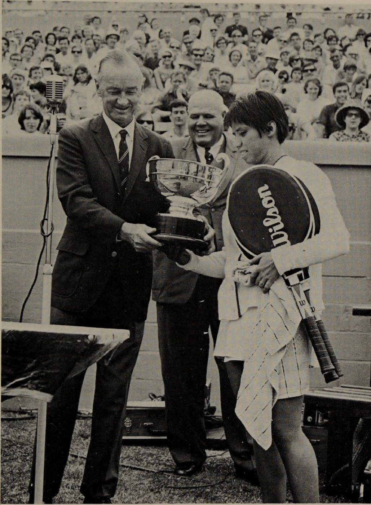
Với những lời khen ngợi từ Harry Hopman tới Rosie Casals tại Kooyong. Đừng bao giờ tập trung vào một kết thúc thắng lợi khi chơi. (Xem văn bản, trang 14)
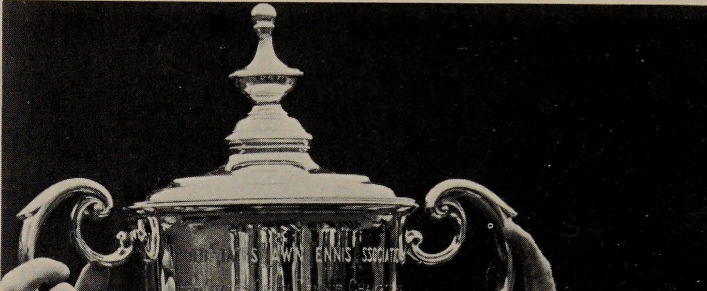
Hai trong số các đồ trang trí của môn quần vợt. (Xem văn bản, trang 181-2)
Quyết định xem nên đeo nó quanh cổ bạn như chì nguyên chất hay thay thế nó bằng một hỗn hống bao gồm các nét âm thanh, mục đích đã biết và khả năng hấp thụ hoàn toàn. Nếu tính khí không phải do thể chất hay di truyền thì bạn có quyền lựa chọn tự do hơn trong vấn đề này hơn bạn có thể tưởng tượng. Bạn có thể thấy, một thời gian sau khi bắt đầu xây dựng môn quần vợt theo cuốn sách này, bạn khỏe mạnh hơn, rằng bạn đã thắng một số trận sát nút mà trước đây bạn có thể đã thua, rằng bây giờ bạn tự tin hơn khi luôn đánh bại những đối thủ mà bạn có thể đánh bại, và rằng nói chung ý tưởng của bạn phát huy tác dụng khi bạn kiểm soát môn quần vợt. Tuy nhiên, bất cứ khi nào ai đó quá giỏi đối với bạn, bạn sẽ thấy rằng chiến thuật của bạn không thể thực hiện được và một số cú đánh của bạn cũng bị hỏng. Tôi e rằng đó là cuộc sống trong thế giới quần vợt. Khi bạn bị lấn lướt, thì thật quá đáng nếu đòi hỏi mọi cú đánh của mình đều chịu lửa. Điều tất cả chúng ta phải làm là mạnh hơn lên, để có ít tay vợt lấn lướt được mình hơn, và để trong nhiều trận đấu hơn ta cảm thấy mình đang điều khiển được cục diện. Đây được cho là một công việc khó khăn, nhưng sau nửa thế kỷ thích chơi thể thao hơn làm việc suốt, tôi không nghĩ là như vậy. Đối với những người không thích gì hơn ngoài sự đơn giản đẹp đẽ trong mọi việc thì đây là một ý tưởng thú vị. Chúng tôi nhận thấy rằng tính khí không có gì hơn ngoài vị trí của nó, rằng những hành vi sai trái từ môn quần vợt không xứng đáng đến việc cố tình gian lận đều không thực sự phải trả giá, và các thành phần cơ bản của thành công nằm ở sự tập trung và kỹ thuật đánh đúng đắn. Nói cách khác, môn quần vợt có thể giành chiến thắng tốt nhất bởi một vận động viên thể thao nhạy bén và vợt của anh ta. Không còn nghi ngờ gì nữa, đó chính xác là điều mà những người phát minh ra môn quần vợt đã dự định từ nhiều năm trước. Tôi đã cố gắng đề xuất những phương pháp mà vận động viên thể thao và vợt của anh ta sử dụng để đạt được thành công trong cuốn sách này. Do đó, cảnh chia tay cuối cùng của tôi là phác họa bức tranh chung về kiểu suy nghĩ mà tôi đã cố gắng truyền tải: © Thực hành các cú đánh của bạn cho đến khi chúng có rãnh, và hiểu rõ về môn quần vợt, và khi chơi, bạn sẽ được tự do tập trung vào quả bóng. ° Hãy coi kích thước của sân là hợp lý nhất, sao cho nơi dễ đánh nhất là vào trong sân. * Hãy coi việc vô-lê tự nhiên như bắt bóng, và do đó hãy thực hiện cú vô lê bất cứ khi nào bạn cảm thấy mình có thể che lưới. * Buộc đối thủ của bạn lốp bóng càng nhiều càng tốt, hãy tự tin rằng nếu bạn xử lý từng cú lốp bóng với mức độ tôn trọng thì bạn xứng đáng ở vị trí chiến thắng. * Trong các cú đánh dài (cú giao bóng và cú đánh nền), hãy dừng bóng, đánh vào tâm vợt và đưa bóng qua lưới. ° Chơi cho từng điểm. Hãy thay đổi lối chơi của bạn để hạn chế sự dự đoán của Đối thủ, nhưng từ tỷ số 30-15 hoặc 15-30 trở đi, hãy thực hiện cú đánh chiến thuật hợp lý nhất. Không có điều nào trong số này làm cho môn quần vợt trở nên buồn tẻ; chỉ từ một cơ sở vững chắc thì vô số sự kết hợp khác nhau giữa các cú đánh và vị trí mới có thể phát triển. Nếu đối thủ của bạn không thể ngăn cản bạn đưa trọng lượng của mình vào quả bóng và đánh vào giữa vợt thì bạn có thể kỳ vọng sẽ giành chiến thắng. Nếu anh ta ngăn cản bạn, hãy thay đổi môn quần vợt. Luôn tiếp tục nỗ lực cho đến điểm cuối cùng; ai biết được, môn quần vợt của anh ấy có thể xấu đi, và việc luyện tập thi đấu rất đáng nỗ lực. Khi bị áp đảo quá mức, đừng bao giờ rơi vào tình trạng chán nản yếu ớt hoặc mất hứng thú; chơi mạnh mẽ nhất có thể và giữ lòng tự trọng của bạn. Bạn cũng có thể giành được sự tôn trọng của đối thủ và phòng trưng bày, nhưng điều đó không quan trọng bằng. Tôi đã nói xong và muốn kết thúc một cách đột ngột. Tôi không muốn bất cứ ai nghĩ rằng tôi muốn nói chuyện trong thời gian tôi chơi.